참 신선한 영화다. 나와 같이 헐리우드 영화에 익숙했다면 새로운 느낌을 경험할 수 있을 듯.
사전에 어떤 영화인지 전혀 몰랐다. 그래서였는지도 모른다. 장르는 공포 영화.
'엄청 재밌다!'보다는 '오~ 독특하네~' 하는 느낌 정도. 영국 영화라고 하는데 네덜란트에서도 인기가 있었다고 한다.
정상적인 사람에게도 존재하는 보편적 악(惡)을 표현했다면 맞을까? 바이러스에 감염된 사람이나 그렇치 않은 사람이 별반 다르지 않다는 인간 자신에 대한 고발인 것 같기도 하고.
바이러스는 피로 전염되는 '분노'라는 특이한 설정으로 시작한다. 추천!
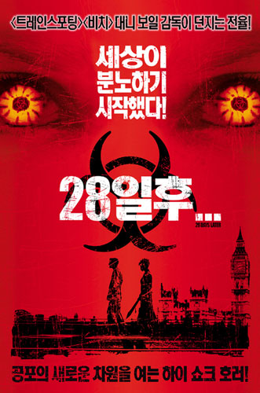
마제스틱 (The Majestic)
2003-08-03 09:45:20 | bomchoon
감동과 재미가 함께 어울어져 있다. 짐 캐리의 절제된 연기력에 점수를 주고 싶은 영화다. 사랑을 만들어가는 영상을 통해, "나도 이런 이쁜 사랑을..." 이라는 생각을, 사람들의 꿈을 만들어가는 내용을 통해서는, "우리 안에 있는 꿈" 에 대한 생각을, 용기를 내어 선포하는 장면에서는, 감동과 눈물을 얻게 되었던 영화다. 추천하고 싶은 영화 중 하나!
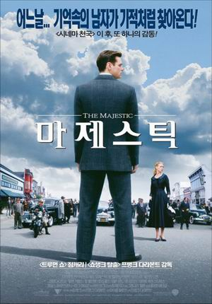
와일드 카드
2003-08-03 14:54:05 | bomchoon
영화를 보면, 4가지 반응이 나타난다.
1. 뻑치기 범인들에 대한 욕. 2. 형사들의 현실에 대한 이해, 내 직업에 대한 생각 그리고 감동 3. 배를 잡게 하는 웃기는 장면들. 4. 한채영은 왜 주연이지?
마지막에 보여준 감동적인 장면도 잊을 수 없다. 양동근이 생각보다 연기를 잘했던 것 같다.
공존
2003-08-08 08:55:16 | bomchoon
아마 우리는 하나님의 전능하심과 인간의 자유 의지가 함께 공존하는 문제를 이해하지 못할 것이다. 그러나 매순간 '신적 포기'가 발생하고 있는 것 같다. -루이스 (C.S Lewis)
고양이의 보은
2003-08-10 08:13:38 | bomchoon
볼만했지만 비교적 짧고, 이전에 보았던 작품들에 비해 아쉬운 감은 있었다. 코믹과 상상력에는 점수를, 몇가지 장면을 제외하고는 일반적인 영상, (고양이 사무실에서 보여준 장면과 하늘에서 떨어지는 장면은 괜찮음) 극장에서 보기에는 아깝게 느껴질 조건들을 갖추고 있는 영화.
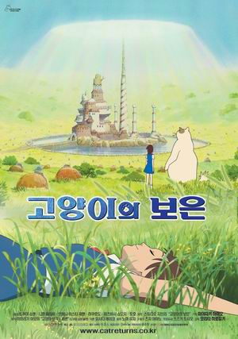
큐어
2003-09-13 14:58:52 | bomchoon
큐어 (CURE, 1997)
은근히 무서웠다. 다분히 일본 영화의 느낌 그대로이다. 영화 전체의 느낌은 정말 차분하게 진행된다. 그러나 은근하게 풍기는 공포와 궁금증 그것이 이 영화의 재미인 것 같다
음양사
2003-09-18 14:16:40 | bomchoon
음양사(陰陽師, 2001)
TV 에서 소개를 하길래 아무 생각없이 본 영화. 뭐라고 표현해야 할지는 잘 모르겠지만 나름대로 재밌게 본 영화. 조금 얍삽하게 생긴 주인공이 걸어다니고 싸우는 모습이 참 새롭다. 일본 역사와 문화적 특성이 배여 있는 영화였던 것 같다.
원더풀데이즈
2003-09-21 13:07:45 | bomchoon
원더풀데이즈 (Wonderful Days, 2003)
사람들이 재미없다고 해서 별루 기대를 안했었는데 나름대로 재미있게 본 영화 훌륭한 그래픽의 배경에 비해 다소 약하게 느껴지는 캐릭터들. 시나리오가 약하다라는 부분에 대해서는 어느 정도 공감하지만 어둠과 암울한 모습을 잘 나타내었고, 파란하늘이 보이는 원더풀데이를 향한 이상의 반영도 괜찮았던 것 같다. 한국 애니매이션 하면 뭔가 유치하고, 싸구려라는 느낌이 강했었는데 나름 발전함을 느낄 수 있었다. 다소 어색하게 보여진 장면들이 몇몇 있다. 사운드도 촌스럽지 않았고. 기대를 너무하지 않아서 재밌게 보았을까? 볼만한 영화로 생각한다.
왓 어 걸 원츠
2003-10-09 08:21:14 | bomchoon
What a Girl Wants
일단 재밌게 보았다. 황당하고 유치하지만 용서할 수 있다. 영화를 보는 동안 내 얼굴에 계속 웃음이 있었던 것 같다. 간간히 흘러나오는 음악도 좋았고.
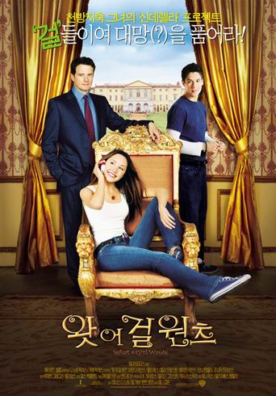
이런 사람이 좋다.
2003-10-23 02:51:05 | bomchoon
이런 사람이 좋다.
그리우면 그립다고 말할 줄 아는 사람이 좋고 불가능 속에서도 보기 위해 애쓰는 사람이 좋고 다른 사람을 위해 호탕하게 웃길 줄 아는 사람이 좋고 바쁜 가운데서도 여유를 누릴 줄 아는 사람이 좋고 자기 일에 만족을 가질 수 있는 사람이 좋다.
어떠한 형편에든지 자기 자신을 지킬 줄 아는 사람이 좋고 책을 이해의 폭이 넓은 사람이 좋고 손수 커피 한잔을 탈 줄 아는 사람이 좋고 이웃을 돌아볼 줄 아는 사람이 좋고 하루 일을 기도할 줄 아는 사람이 좋다.
다른 사람의 자존심을 지켜줄 줄 아는 사람이 좋고 때에 맞는 적절한 말 한마디로 마음을 녹일 줄 아는 사람이 좋고 외모보다는 마음을 읽을 줄 아는 사람이 좋고 친구의 잘못을 충고할 줄 아는 사람이 좋고 적극적인 삶을 살아갈 줄 아는 사람이 좋다.
자신의 잘못을 시인할 줄 아는 사람이 좋고 용서를 구하고 용서할 줄 아는 넓은 마음을 가진 사람이 좋고 새벽 공기를 좋아해 일찍 눈을 뜨는 사람이 좋고 남을 칭찬하는데 인색하지 않은 사람이 좋고 항상 겸손하여 인사성 바른 사람이 좋다.
자기 자신에게 자신감을 가질 줄 아는 사람이 좋고 어떠한 형편에든지 자족하는 마음을 가진 사람이 좋다.
2가지 중요한 사실을 알고 본 영화다. 그 사실을 여기에 적으면 혼날 듯 싶다. 암튼 그 사실을 알고도 나름대로 재미있게 보았던 영화다. 그 사실을 몰랐더라면 얼마나 좋았을까? 식스센스에서 주인공이 죽은 사람이었다라고 말한다면? 유주얼 서스펙트에서 절름발이가 범인이라고 알았다면? 이 영화 역시 그런 중요한 2가지 사실이 있다. 영화를 통해 즐기길 바란다. 비교적 탄탄한 시나리오를 가진 것 같다.
아니오!
2003-12-19 06:34:56 | bomchoon
아니오! 라고 말했을 때 발생할 수 있는 문제에 대한 두려움으로 많은 사람들이 억지로 네! 라고 대답하는데, 단순하게 살기 위해서는, 당당하게 아니오! 라고 말할 수 있어야 한다. -베르너 티키 퀴스텐마허, 로타르 J. 자이베르트의《단순하게 살아라》중에서
아니오! 라 말하는 것은 거역이 아닙니다. 무조건적인 부정도 아닙니다. 거스르는 것보다 더 깊은 헌신의 뜻입니다. 순간의 모면으로 인해 벌어질지 모를 더 큰 거역과 부정을 막는 방파제이며, 쉬운 길은 아니지만 누군가 가야 하는 외롭고 의로운 길입니다. - 고도원의 아침 편지
가시나무
2003-12-21 14:13:22 | bomchoon
가시나무 - 시인과 촌장 내속엔 내가 너무도 많아, 당신의 쉴 곳 없네. 내속엔 헛된 바램들로, 당신의 편할 곳 없네. 바람만 불면, 매마른 가지, 홀로 부대끼며 울어대고. 쉴곳을 찾아, 지쳐날아온 어린 새들도 가시에 찔려 날아가고. 내속엔 내가 너무도 많아서, 당신의 편할 곳 없네.
https://www.youtube.com/watch?v=cZ0WdcX0v6k
30 이라는 나이를 앞두고, 거울에 비친 내 모습을 바라 보면서, 나지막이 불러 봅니다.
키스(KISS)의 순수 우리말
2003-12-22 15:44:59 | bomchoon
키스(KISS)를 순 우리말로 "심알을 잇는다" 라고 한다. 심알은 "마음 속의 핵" 엄청난(?) 뜻이다.
언더월드
2003-12-29 03:37:16 | bomchoon
여주인공 분위기도 맘에 들었고 독특하고 재밌었음.
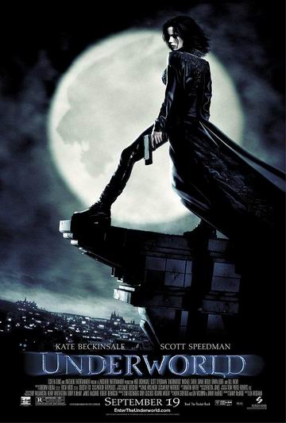
태어날 때와 죽을 때
2004-01-03 14:56:43 | bomchoon
"얘야, 네가 태어났을 때 너는 울음을 터뜨렸지만 사람들은 기뻐했다. 네가 죽을 때에는 사람들은 울음을 터뜨리지만 너는 기뻐할 수 있도록 살아야 한다. - 로빈 S. 샤르마의 《내가 죽을 때 누가 울어줄까》 중에서
붉은 돼지
2004-01-12 04:04:39 | bomchoon
붉은 돼지 (1992,The Crimson Pig)
잔잔하다는 느낌. 왜 돼지가 되었을까? 에 대한 의문. 1992년 영화인데 지금 봐도 손색이 없음. 간혹 나오는 코믹스러운 장면들에는 박수를. 서정적이라는 말이 어울리지는 모르겠지만 서정적이라 평할 수 있을 듯 하고 큰 갈등과 긴장이 없는 것이 개인적으로는 아쉬웠다. 기억나는 장면 중 하나는 "하늘을 날 때, 바다에 비치는 태양빛과 그림자에 대한 묘사" 끝이 아쉽게 느껴졌지만 그럼에도 "추천"
천국의 계단
2004-01-15 11:53:17 | bomchoon
최지우가 사고가 나는 장면부터 보았기 때문에 몰랐었다. 이제 알았다. 나쁜 이휘향과 김태희! 따귀 때리는 장면은 충격이었고 정서를 걱정하는 승주의 모습을 보면서 가슴아팠다.
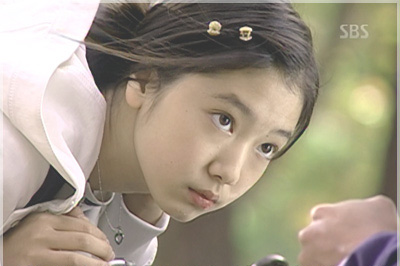
여섯개의 시선
2004-01-30 15:04:16 | bomchoon
여섯개의 시선 (If you were me, 2003)
독립 영화 6개를 옴니버스 형태로 구성한 영화. 사회에 대한 비판을 영화적 비유로 잘 묘사한 영화.
날씬한 여성을 바라는 사회
장애인은 남의 일 이라고 생각하는 사회
성범죄자 신원 공개에 대해 갈등하는 사회
영어를 잘 해야하는 사회
외모를 중시하는 사회
이해할 수 없는 사회
6명의 감독이 서로 다른 이야기를 그려내며 이 사회에 대한 답답함을 느끼게 해준 영화
퇴사 예정
2004-02-18 07:59:46 | bomchoon
벌써 2년 가까이 되었네요.
한 회사에서 최소 2년은 기본이라고 맘 속에 굳혀왔는데, 2년이 조금 못되어 퇴사를 결심하고, 업무 정리 중입니다.
좋은 기억들도 많았지만, 한 구석에 아쉬움도 많은 것은 어쩔 수 없나 봅니다.
잘 마무리 되고 좋은 소식 있으면 또 알려드릴게요. 즐거운 하루 보내세요.
24시 시즌1
2004-02-24 17:01:31 | bomchoon
Fox TV 에서 방영했던 24시라는 드라마. 현재 시즌 3가 방영 중인 것으로 알고 있다.
다양한 갈등구조, 계속 되는 긴장감과 재미 만점!! 강추!! 영화 수준의 드라마!!
50분짜리 24편으로 구성, 리얼타임 형식으로 동일한 시간에 벌어지는 장면을 함께 보여주는 스타일 (예전 스네이크 아이라는 영화처럼)
대통령 후보 암살을 막으려는 내용. 그것과 연관되어 있는 여러 가지 갈등 구조. 시나리오가 탄탄함을 느낄 수 있다. 처음에는 약간 지루했는데, 그것은 잠깐.
퇴사 및 입사
2004-02-27 17:08:19 | bomchoon
2월 20일 날짜로 2년 정도 함께 일했던 (주)씨엠엠을 퇴사하고, 3월 11일 날짜로 (주)LG 전자정보통신 으로 입사할 예정입니다.
오늘 씨엠엠 식구들과 함께 환송회를 했습니다.
미안함과 아쉬움이 많이 있지만 좋은 기억들만 있었으면 좋겠습니다.
24시 시즌2
2004-03-06 19:25:29 | bomchoon
무지 재밌었다. '시즌 2'는 핵폭탄을 찾고 그 배후의 음모를 밝히는 내용으로 전개 된다. 역시 흥미 진진.
'시즌 1'과 연계성이 없을 줄 알았는데 새로운 인물과 더불어 자연스럽게 연결되어 더 재밌었다. 니나 마이어스! 보면 알게될 것이다. '시즌 3'으로 넘어가며 새로운 이야기로 전개될 여운을 남겼다. '시즌 1'에서는 가족의 생사와 관련된 불안과 긴장이 주를 이뤘고, '시즌 2'에서는 '시즌 1'과는 다른 긴장과 재미를 선사한다. '시즌 1'에서와 마찬가지로 여러가지 갈등 구조는 동일했고 서로 다른 갈등 구조가 사건과 연결될 때 느껴지는 재미가 솔솔하다.
그녀를 믿지 마세요
2004-03-07 12:46:39 | bomchoon
큰 기대없이 봤는데 재밌더라. 예전 짐케리가 나왔던 Majestic 이라는 영화가 생각났음. 재밌고 기분이 좋아지는 영화였던 것 같다. '동갑내기과외하기'에 이어 김하늘은 이런 역이 잘 어울린다는 생각이 든다.
부서 배치
2004-03-08 15:57:50 | bomchoon
L씨의 부서배치는 안타깝게도 현재 확인결과 CDMA단말연구소 SW개발실로 배치가 될것 같습니다. 배치가 SW개발실로 난 이유는 면접당시 SW개발실 면접 위원께서 OOO씨와 같이 꼭 일하고 싶으시다는 의견이 반영되었다고 합니다.
누가 나와 함께 일하고 싶다고 했을까?
내가 면접 위원 한명 한명을 기억할 수 있으니 회사에 가보면 알게 되겠지. 내가 희망하는 곳이 되지는 못했지만.
그 부서에 대한 정보를 조금 얻었는데 무척 일을 잘해야 하는 부서란다. 그래서 사뭇 걱정도 된다. 그렇치만 지금까지 직장 생활에서 아쉬웠던 점들을 잘 채워가 보자. 노력하고 공부하며 그리고 무엇보다 하나님 앞에 늘 서있는 마음으로 일하자.
작은 개인의 이익 보다 하나님이 기뻐하시는 사람이 되어 보자.
교육
2004-03-12 13:45:33 | bomchoon
3월 11일 부터 3월 23일까지 (주)LG전자/정보통신사업부 경력신입사원 교육기간입니다. 오늘까지 이틀째 받았습니다. 다음 주에는 "6시그마"라는 교육을 아침 8시30분 부터 저녁 9시까지 받는 다고 합니다. 무척 머리가 아픈 교육이라고 합니다.
가만히 앉아서 교육 받는 다는 것이 쉽지않은 것 같습니다. 다음 주가 더 걱정입니다. 식스시그마교육이라...
저는 서울 사업장에 있는 CDMA 연구소, SW개발실로 배치가 된 것 같습니다.
조금 맘에 들지 않는 부분이 있습니다만, 현재 어떤 일을 하게 될지 확실치가 않기 때문에 잘 모르겠습니다. 국내향 포팅을 한다고 하기도 하고, 자바 쪽을 한다고 하기도 하고, UI 툴을 만들기도 한다고 하는데, 확실해지면 알려드리겠습니다.
탄핵이라는 어이없는 일이 벌어진 현실을 접하면서, 답답함을 느낍니다.
어플리케이션파트
2004-03-24 15:02:10 | bomchoon
배치 받은 곳으로 오늘 첫 출근을 하게 되었습니다.
제가 배치된 곳은 어플리케이션 파트이고, 이곳에서 폰 쪽을 개발하게 될 것 같습니다.
쭉 나열하면 이렇게 되네요. "(주)LG전자 정보통신사업부 CDMA 연구소 SW개발실 어플리케이션파트"
많은 생각은 하지 않으려고 합니다. 첫 날이라 긴장도 했던 것 같고 좀 더웠던 것 같습니다. 처음 뵈었던 분들의 인상이 모두 좋았습니다. 앞으로 어떤 일이 벌어질 지 좀 기달려 봐야하겠지만, 문제없어! 불만없어! 의 단순함으로 시작하겠습니다.
고티카
2004-03-28 09:20:32 | bomchoon
영화 "식스센스" 와 다른 영화이지만, 비슷(?)한 영화
왜 고티카인지를 잘 모르겠고, 그렇게 무섭지는 않았지만, 절제된 공포라할까? 그런 것 같다. 사실 더 아슬 아슬하고 무섭게 만들 수 도 있었을텐데...
기대를 안해서인지, 지루함 없이 재밌게 본 것 같다.
소개
2014-03-28 07:58:44 | bomchoon
행복한 자유인, 네발토끼, 봄을 좋아하는 눈사람, 윈터에 빠진 봄, 울라프, 소프트웨어를 그리는 남자, 개발자의 심장을 건드리는 종합 예술가
혼자 쓰는 작은 공간입니다. 혹시라도 도움이 된다면 좋겠어요.
사람들과 처음만나 자신을 소개할 때 <봄의 느낌을 심는 사람이고 싶다>고 말합니다.
그래서 한자 春으로 도메인을 만들었습니다.
이력
2018-08-17 00:17:27 | bomchoon
2000년 6월부터 벤처기업에서 임베디드 소프트웨어 및 인터넷 서비스 개발자로 직장 생활을 시작했습니다. (neomtel, cmm)
교육(역량 강화)과 조직 문화에 관심이 많고 사내 우수 강사 및 전문가 인증 심사위원으로 활동하고 있습니다.
최근에는 소프트웨어 아키텍트 육성을 책임지고 있습니다.
I began my career in June 2000 as an embedded software and internet services developer at a startup. Since March 2004, I have been working as a software engineer at LG Electronics.
I value creating opportunities and environments for growth. This passion led me to dedicate myself to organizing company-wide software developer conferences such as SEED and LG SDC. I also enjoy discovering and nurturing new ideas.
I am deeply interested in education (skill enhancement) and organizational culture, and I serve as a judge for internal excellence instructor and expert certification. Recently, I have taken on the responsibility of nurturing software architects.
문의
2024-12-30 21:21:41 | bomchoon
피드백, 문의, 의견, 하고 싶은 말씀, ... 환영합니다.
이퀄리브리엄
2004-03-28 09:30:06 | bomchoon
이퀄리브리엄 (Equilibrium, 2002)
좋은 평을 하는 사람이 별루 없는 것 같지만 나름대로 색깔을 가지고 있는 영화가 아닐까? 감정에 대한 조금 이해가 안되는 설정도 있지만 다른 매력도 있었던 것 같다. 매트릭스와 비교하기엔 좀 다른 영화가 아닌가하는 생각도 있고. 냉정하고 차가운 분위기와 색다른 액션씬들이 인상적이었던 것 같다.
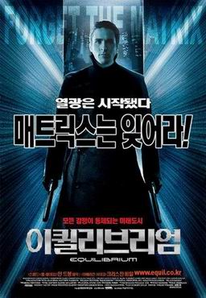
페이첵
2004-04-05 19:58:17 | bomchoon
특별한 것 없는 시간 죽이기 영화.
오우삼은 결국 비둘기를 등장시킴으로서 팬을 실망시키진 않은 것 같다.
그냥 웃음이 나오는 것은 '역시 나오네' 하는 기대 심리 정도.
취미
2004-04-08 10:01:00 | bomchoon
실장님: OOO주임은 취미가 뭐야? 나: 영화 감상입니다. 외국 드라마도 좋아하구요. 동료: 그럼 실장님 취미는요? 실장님: 성경읽기...
나를 면접하고 뽑아주신 분...
동안
2004-04-20 10:19:31 | bomchoon
요즘은 의외의 말들을 많이 듣는다.
지금까지 살아오면서 늘 동안이라는 말, 나이가 어려보인다는 말을 듣고 살아왔다. 그래서 내 입으로 지금도 고등학생이라고 해도 믿는다고 말하기까지 했으니 말이다.
그런데 요즘은 '제가 좀 동안이죠?' 라고 말하면 웃는 사람들이 있다. 너무 의외다. 사실인가?
거울을 보면 난 아직도 동안인 것 같은데 이제는 내 나이를 내 나이에 맞게 보는 사람들이 많아지는 것 같다.
슬프진 않다. 늘 동안이라는 것이 내게는 기쁜 일이 아니었으니 말이다.
엘리어스 시즌1
2004-05-07 17:37:40 | bomchoon
24시 시즌1과 시즌2를 보고 난 이후에 엘리어스(alias)를 보게 되었습니다. 처음에는 24시의 긴장과 스케일 때문인지 엘리어스가 조금 밋밋한 것 같더군요. 하지만 엘리어스 시즌 1을 모두 보고 나니 그런 생각은 들지 않네요. 재밌어요.
하나님께서는
2004-05-19 11:37:29 | bomchoon
하나님께서는 '불가능합니다'라고 하면 '모든 것이 가능하다'(눅 18:27)라고 하십니다. '너무 지쳤어요' 라고 하면 '내가 너를 쉬게 하리라'(마 11:28-30)라고 하십니다. '아무도 나를 사랑하지 않아요' 라고 하면 '내가 너를 사랑하리라'(요 13:1, 요15:9)라고 하십니다. '더 이상 못해요' 라고 하면 '내 은혜가 네게 족하리라' (고후 12:9)라고 하십니다. '앞이 캄캄해요' 라고 하면 '내가 너의 발을 인도하리라'(잠 3:5-6)라고 하십니다. '그것은 가치가 없어요' 라고 하면 '합력하여 선을 이루는 가치가 있다'(롬 8:28)라고 하십니다. '저는 제 자신을 용서 못해요' 라고 하면 '내가 너를 용서하리라'(요일 1:9, 롬 8:1)라고 하십니다. '너무 힘들어서 헤쳐나갈 수 없어요' 라고 하면 '네 모든 필요를 채우마'(빌 4:19)라고 하십니다. '저는 항상 걱정이 많고 좌절해요' 라고 하면 '너의 염려를 내게 맡기라'(벧전 5:7)라고 하십니다. '너무 외로워요' 라고 하면 '내가 너를 떠나지 않고 버리지도 않으리라'(히 3:5)라고 하십니다 - 노재인님 미니홈피
24시 시즌3
2004-06-12 15:21:44 | bomchoon
와우! 정말 재밌습니다. 무슨 말이 필요하겠습니까?
니나 마이어스! 참 대단한 역할을 하는 캐릭터입니다. '시즌 3'에 나오다니 예상하지 못했네요. 마지막 장면도 역시 인상적.
'시즌 3'는 바이러스를 찾는 것이 주제입니다. 참, 체이스라는 인물도 인상적이에요.
단말 실무 과정
2004-06-14 13:43:28 | bomchoon
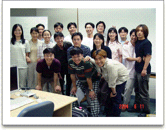
단말 실무 과정 14기 동기들 각각 다른 곳에서 일하고 있지만 좋은 기억으로 남을 것 같다.
천공의 성 라퓨타
2004-07-03 15:06:28 | bomchoon
천공의 성 라퓨타 (Laputa: Castle In The Sky, 1986)
맨처음엔 코난이 생각났고, 옛날 영화인데 지금도 재밌다는 생각에 조금 놀랬고, 미야자키 하야오의 스타일이 느껴진다. 아주 재밌지는 않았던 것 같고, 그냥 볼만했던 것 같다.
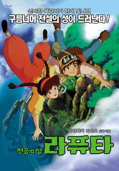
변화
2004-07-11 23:34:09 | bomchoon
내가 젊었을 땐 세상을 변화시키겠다는 꿈을 가졌고, 좀더 나이가 들어서는 나라를 변화시키겠다고 결심했고, 황혼의 나이가 되었을 때는 가족을 변화시키겠다고 마음을 정했다. 그러나 어느 것 하나도 이루지 못하고 죽음을 맞이하기 위해 자리에 누웠을 때 문득 깨달았다. 나 자신부터 변화시켰더라면 그 모든 것을 변화시켰을 것이다. - 영국 웨스트민스터 사원 지하 묘지
풀하우스
2004-08-05 13:57:57 | bomchoon
누가 뭐래도 무척 재밌게 보고 있다.
엘리어스 시즌2
2004-08-09 14:28:50 | bomchoon
휴가 기간 동안 시즌 2를 모두 보았습니다. 시드니 어머니의 등장으로 흥미 진진해 집니다. 시즌 1을 처음 보았을 때는 24에 비해 너무 약하지 않나 하는 생각이 들었습니다만 시즌 2로 넘어오면서 그런 생각을 지울 수 있게 된 것 같습니다. 브리스토 가족 3명이 함께 작전을 수행하는 장면이 인상적이네요.
램발디의 이야기가 끝이 나는 줄 알았는데 슬론의 딸 등장으로 인해 새로운 국면을 맞이하는 군요. 마지막에 시드니가 봐서는 안될 비밀문서는 뭐였을까? 너무 궁금하군요. 그리고 시드니 엄마는 어떻게 된 것인지...이모로 나오는 사람이 성형 수술을 한 시드니 엄마 일 것 같은 느낌마저 드는군요. 역시 재밌게 보았습니다. 시즌 4가 빨리 나왔으면...
진리와 자유
2004-09-12 23:04:49 | bomchoon
깨달은 사람 깨달은 사람에게는 특별한 표시가 있다. 무엇보다 그들은 자유롭다. 자신의 삶이 두려움, 기쁨, 걱정, 성공 또는 실패에 휘둘리게 놓아두지 않는다. - 텐진 빠모의 《마음공부》중에서 -
진리가 너희를 자유케 하리라.
닫혀진 마음
2004-09-13 09:50:28 | bomchoon
어쩌면 내 마음도 이런 것이 아닐까?
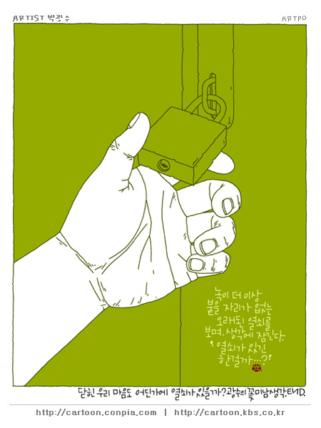
이노센스
2004-09-28 13:36:46 | bomchoon
이노센스 (イノセンス / Innocence: Ghost In The Shell, 2004)
"철학적인 난해함이 주는 유치함" 으로 영화를 평하고 싶다. 뀌어난 영상미와 훌륭한 컴퓨터 그래픽은 높이 평가할 만 하다. 다소 지루함도 있지만 그것은 공각기동대 1편도 그런 면이 없지는 않았다.
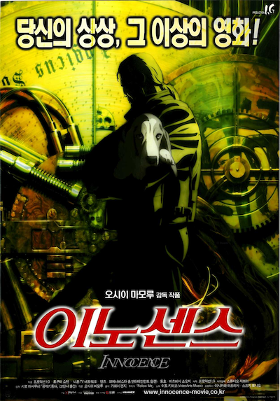
빌리지
2004-09-28 13:42:52 | bomchoon
볼만했음. 이 영화 역시 반전이랄까? 전체 줄거리의 긴장을 풀어주는 반전이 존재한다. 영화를 보며 깜짝 놀랬던 순간과 무서웠던 순간, 그리고 긴장이 풀리는 순간, 이해가 되는 순간을 경험하며 영화를 즐길 수 있다. 간만에 재밌게 본 것 같다.
언제 정신 차릴려구
2004-09-29 04:25:53 | bomchoon
난 언제 쯤 정신을 차릴 수 있을까?
맨 온 파이어
2004-10-04 11:56:26 | bomchoon
맨 온 파이어 (Man On Fire, 2004)
늦은 밤에 본 영화. 졸지 않고 봤다. 재밌었다는 이야기다. 거침없는 복수(?)가 맘에 걸리기는 했지만 나름대로의 색깔이 있는 영화다. 맨온파이어라고 해서 마지막에 불타는 곳에서 주인공이 죽나하는 생각을 했었는데 그건 아니었다. 영상이 독특했는데 - 약간 어지럽다고 볼 수 도 있을 것 같고 - 그냥 헐리우드 영화겠지 하고 봤지만 그런 느낌은 아니었다. 한 소녀의 영향력, 그것은 아이의 순수함의 힘일까? 주인공 여자 아이도 귀엽다.
아는 여자
2004-10-04 12:03:29 | bomchoon
극장에서 혼자 봤던 재미난 영화.
장진 감독 특유의 냄새가 난다. 차분한데 웃긴다. 영화를 보고나면 기분이 좋아질 것이다.
새벽의 저주
2004-10-09 14:48:08 | bomchoon
새벽의 저주 (Dawn Of The Dead, 2004)
이 영화를 어떻게 소개하면 좋을까?
좀비영화인데 완성도 높은 좀비 영화라고 해야할까? 결론적으로는 볼만했다라고 말하고 싶고 마지막 까지 봐야한다.
노인 Z
2004-10-10 05:21:54 | bomchoon
노인 Z (老人 Z / Oldman Z, 1991)
91년도 영화면 상당히 오래전 영화임에도 불구하고 재밌게 봤다. 기술적인 영상은 옛날임을 보여주지만 스토리와 말하고자 하는 바는 놀랍다라는 생각이든다.
조금만 생각해보면 할 말이 많아질 수 있는 영화인 것 같다. 감동적인 면도 조금 있고 말이다.
홍성진 영화 해설 <아키라>의 오토모 가츠히로가 원작, 각본, 메카디자인을 진행한 작품. 근미래의 동경에서 자동으로 간호해주는 컴퓨터 침대가 개발된다. 이 침대는 암호명 Z-001호로 이 침대의 실험대상으로 80대의 노인이 선택된다. 그러나 개발목적과 상반되게 이 침대는 스스로 작동되어, 노인의 의식에 의해 폭주를 하게 되고, 주위에 있던 사람들과 물건들을 흡수하여 증식을 해나간다. 심각하고 중후한 문제 의식을 유머로 표현하는 대중적 메시지가 작품의 주된 스토리라인을 형성하고 있으며, 일본이 봉착하고 있는 노령 사회, 즉 실버 콤플렉스와 노인 문제에 대한 일종의 경종을 울리는 문제작이다.
올드 보이
2004-10-12 15:36:28 | bomchoon
소재가 충격스럽다고 할 수 있겠지만 영화적 재미를 느꼈다.
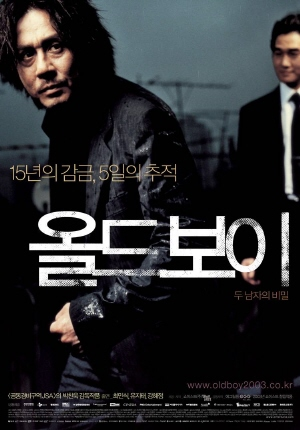
밝게 웃으며 사는 삶
2004-10-26 12:49:51 | bomchoon
나를 안아주고 싶을 때
2004-11-08 15:41:27 | bomchoon
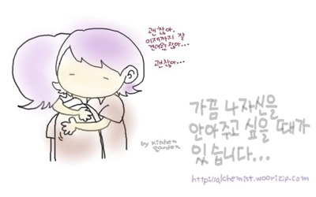
광어
2004-11-23 02:17:59 | bomchoon
안면도 앞바다에서 광어를 잡았다. 내가 가장 큰 걸 잡아서 1등을 했다.
배멀미가 그렇게 힘든 것일 줄 미쳐 몰랐다. 다시는 안타리라.
1Kg 짜리 광어를 잡았는데 싯가 80,000 이란다. 정말 맛있더라.
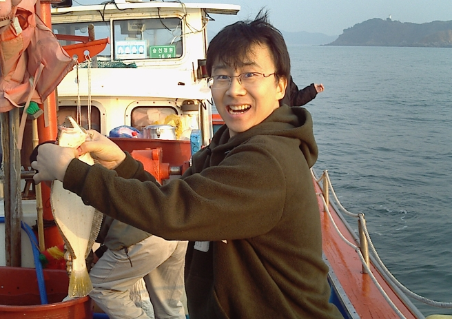
무지개
2004-11-23 14:11:23 | bomchoon
하늘의 무지개를 바라보면 내 가슴은 뛰는 구나 내 아직 어렸을 때도 그러했거니 어른된 지금도 그렇구나 내 늙은 뒤에도 그러리니 안 그러면 죽으리 아이는 어른의 아버지 그래, 나의 날들이 나날이 자연의 경건함으로 묶이기를 바라느니 <워즈 워드>
괜찮아
2004-11-28 12:15:12 | bomchoon
상대방이.. 내가 생각하는거만큼 강한건 아니다! - 내 친구
이 말은 경험적으로 사실이다.
이 말을 꼭 기억하라.
내가 두려워하는 상대방이 혹은 나를 괴롭히는세상이 내가 느끼는 것 만큼 강하지 않다는 사실을!
단순한 진리
2004-11-29 03:29:29 | bomchoon
모든 진리는 단순하고 평범하다 다만 그것을 자기 것으로 만드는 사람과 그렇지 않은 사람에게서 나타나는 결과가 단순하지 않고 평법하지 않을 따름이다. - 아침형 인간, 사이쇼 히로시
난세를 탓하지 마라
2004-11-29 03:30:18 | bomchoon
난세를 탓하지 마라. 자신에게 지략이 없음을 탓하라. - 소진-
환경을 탓하기는 무척이나 쉽다. 가끔은 자신을 탓하는 것을 포함해서.
정말 어려운 건 환경이나 외적인 상황에 넘어지기 전에 자신을 바꾸는 것이다.
무엇이든 하기 나름이라는 익숙한 말이 있다. 성공한 사람들은 환경을 불만하지 않고 자신에게 이로운 영양제로 활용했다고들 한다.
우리에게 펼쳐진 불만 가득한 환경(답답하게 느껴지는 자기 자신도 포함된) 에도 불구하고 맘을 새롭게 할 수 있는 능력이 필요해 보인다.
걱정, 근심
2005-01-09 22:42:01 | bomchoon
걱정을 처리할 줄 모르는 사람은 젊어서 죽는다. - 알렉시스 캐롤
걱정이란 고민을 빌어온 자가 이자까지 지불하는 것이다. - 조지 리욘스
걱정은 생명의 적이다. - 세익스피어
걱정은 무슨 소용이 있는가? 그것은 아무런 가치가 없는 것이다. 그러므로 당신의 고민들을 헌 자루에 담아서 버려라. 그리고 웃어라. 웃어라. 웃어라. - 조지 포웰
안심하면서 먹는 한조각 빵이 근심하면서 먹는 잔치보다 낫다. - 이솝
나는 매주 두 날에 대해서는 절대로 걱정하지 않는다. 그 하루는 어제요, 다른 하루는 내일이다. - 로버트 버디트
애플시드
2005-01-10 12:59:29 | bomchoon
애플시드(アップルシ-ド, APPLESEED, 2004)
볼만했다. 화려하고 독특한 영상이 인상 깊었다.
실사와 비슷한 CG에 3D와 2D 가 조화를 이루어 새로운 영상을 만들어 낸다.
최근 어떤 광고에서 본 듯한 느낌도 있다. 내용을 직접 보는 것이 좋을 것 같고 일본 영화스럽다.
미움
2005-02-02 11:19:29 | bomchoon
누군가를 미워하게 되면 미워하는 자기 자신이 더 힘들어 진다. 정도가 심해지면 영혼이 지친다. 고통스럽기까지 하다. 상대방은 그 사실도 모르고.
미움의 안경과 사랑의 안경
미움의 안경을 쓰고 보면, 똑똑한 사람은 잘난 체 하는 사람으로 보이고 착한 사람은 어수룩한 사람으로 보이고 얌전한 사람은 소극적인 사람으로 보이고 활력 있는 사람은 까부는 사람으로 보이고 잘 웃는 사람은 실없는 사람으로 보이고 예의바른 사람은 얄미운 사람으로 보이고 듬직한 사람은 미련하게 보이나 사랑의 안경을 쓰고 보면 잘난 체 하는 사람도 참 똑똑해 보이고 어수룩한 사람도 참 착해 보이고 소극적인 사람도 참 얌전해 보이고 까부는 사람도 참 활기 있어 보이고 실없는 사람도 참 밝아 보이고 얄미운 사람도 참 싹싹해 보이고 미련한 사람도 참 든든하게 보인답니다.
출근 길 집 앞
2005-02-23 00:52:20 | bomchoon
눈이 올 때가 아닌 것 같은데 갑자기 눈이와 깜작 놀랐다. 아직도 눈이 좋으니 한편으로 다행이다. 느낌이 좋아 폰카로 찍어 놨는데 원본을 보니 영 안나와서 사이즈를 좀 줄였다.
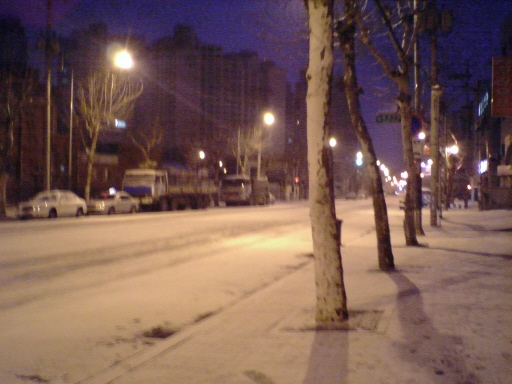
TD
2005-03-04 08:10:39 | bomchoon
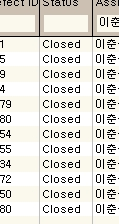
IBM Test Director였던가? TD 이슈가 올라오지 않으면 일을 안한다는 의미로 TDD(TD Driven Development) 한다고 농담하던 시절이 있었다.
먹구름
2005-03-04 08:11:14 | bomchoon
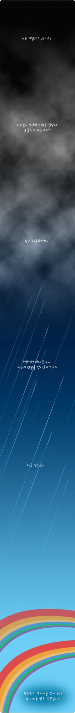
교훈
2005-03-08 12:34:55 | bomchoon
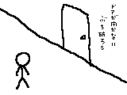
Best Practice 수상
2005-03-09 11:29:00 | bomchoon
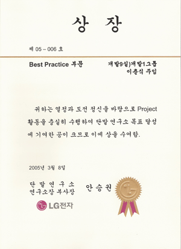
24시 시즌4
2005-06-06 13:07:34 | bomchoon
더 이상 무슨 말이 필요있을까? 재밌게 보았다. 늘 그랬듯이. 팔머 대통령이 안나올 줄 알았는데 다시 보니 반갑다. 쓸쓸한 영웅이 되어버린 잭바우어. 이번 시즌은 시즌2와 비슷하게 핵탄두를 막는 내용. 전개 과정은 전혀 다르다. 이번 시즌이 마지막일 줄 알았는데 시즌 5가 나온다고 한다.
24시 시즌4
2005-06-06 13:28:21 | bomchoon
엘리어스 시즌4
2005-06-12 14:30:56 | bomchoon
램발디의 긴 여정이 끝난 것 같은데 다음 시즌이 어떻게 될지 모르겠다. 이전 시즌에 비해 약간의 밋밋함과 조금 아쉬운 설정이 느껴짐. 후반부로 가면서 재밌어 진 것 같다. 마지막에는 정말 깜짝 놀랐다. 다음 시즌이 어떻게 전개될런지 기대가 된다.
연애시대 이후 뭔가 허전했는데 정말 유치하고 말도 안되는 드라마를 만났다. 난 이 드라마가 좋아지기 시작했다. 이유는 묻지 마시라. 나를 제외하면 지금 대세는 '미스터 굿바이'
변하나봐
2006-06-04 11:40:21 | bomchoon
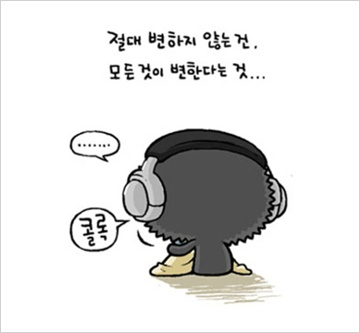
https://www.youtube.com/watch?v=OiR4afN5zxo
사람들은 모두 변하나봐 (봄여름가을겨울)
사람들은 모두 변하나봐 그래 나도 변했으니까 모두 변해가는 모습에 나도 따라 변하겠지 사람들은 모두 변하나봐 그래 너도 변했으니까 너의 변해가는 모습에 나도 따라 변한거야 이리로 가는걸까 저리로 가는걸까 어디로 향해 가는건지 난 알수 없지만 세월 흘러가면 변해가는 건 어리기 때문이야 그래 그렇게 변해들 가는건 자기만 아는 이유 사람들은 모두 변하나봐 너도나도 변했으니까 모두 변해가는 모습에 너도나도 변한거야 사람들은 모두 변하나봐 그래 나도 변했으니까 모두 변해가는 모습에 나도 따라 변하겠지 사람들은 모두 변하나봐 그래 너도 변했으니까 너의 변해가는 모습에 나도 따라 변한거야 이리로 가는걸까 저리로 가는걸까 어디로 향해 가는건지 난 알수 없지만 세월 흘러가면 변해가는 건 어리기 때문이야 그래 그렇게 변해들 가는건 자기만 아는 이유 세월 흘러가면 변해가는 건 어리기 때문이야 그래 그렇게 변해들 가는건 자기만 아는 이유 세월 흘러가면 변해 가는 건 어리기 때문이야 그래 그렇게 변해들 가는건 자기만 아는 이유
엘리어스 시즌5
2006-06-10 17:38:24 | bomchoon
와우! 엘리어스(Alias) 시즌 5가 끝났다. 이것으로 기나긴 이야기가 끝났다. "시드니와 잭 그리고 이리나" + "램발디"의 이야기가 끝난 것이다.
X-Men 3
2006-06-16 13:37:38 | bomchoon
이런류의 영화를 좋아해서 그렇게 재미없다고 말할 순 없지만 비교적 높은 점수를 주고 싶지는 않다. 뭐랄까? 약간 유치한 웃음이 간혹 흘러나올 수 밖에 없었고 큰 긴장감도 없었다.
수퍼맨 리턴즈
2006-06-28 15:07:26 | bomchoon
남자랑 단 둘이 봤다. 남자 둘이 보는 경우는 역시 우리 뿐인 것 같다.
재밌을 것이라는 예상은 빗나갔고 중간 중간 웃겼다. (아주 재밌어서 웃은 것 아님)
수퍼맨이 조각 미남이었지만 뭐 그렇게 매력적은 없었다. 여자주인공은 첨엔 별루였는데 나중엔 괜찮아 보였다.
생각보다 긴 영화였다. 2시간 30분 정도.
이제 나이가 든 것일까? 재미가 없더라.
아치와씨팍
2006-06-29 14:02:47 | bomchoon
한국 애니매이션의 한계를 다시 한번 느꼈던 영화. 돈이 좀 아까웠다. 이상!
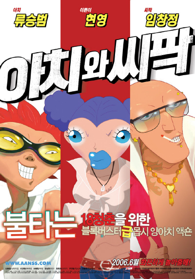
비열한 거리
2006-07-03 15:24:47 | bomchoon
최근에 봤던 영화 중에 제일 재밌게 본 것 같다. 천호진이라는 배우의 연기가 참 맘에 들었고 조인성이라는 배우 역시 생각보다 괜찮다는 생각이 든다. 이보영과의 짧은 키스신이 인상 깊었다. 제목 그대로 비열한 거리를 잘 표현한 영화.
캐리비안의 해적 2
2006-07-08 01:43:34 | bomchoon
캐러비안의 해적 두 번째 이야기 '망자의 함' 볼만하지만 아주 재밌진 않다. 3편으로 이어지기에 아쉬움은 어쩔 수 없고.
떨림
2006-07-12 14:18:15 | bomchoon
달재씨...저를 떨리게 해주세요. 숨이 막힐 정도로 떨리게, 다른 사람 누구도 보이지 않게. 어떤 목소리도 들리지 않을 정도로. 떨리게 해주세요. 비밀이 점점 깊어 지는거 저는 원치 않아요....."
옹이
2006-07-14 13:21:21 | bomchoon
이게 (나무의) 옹이라는 겁니다. 곁가지 자랄 때 생기는 흔적이요. 대패질 톱질이 잘 안 된다고 목수들이 옹이를 싫어해요. 아버님이 저를 싫어하는 것처럼요. 그 보기 싫은 옹이란 놈이요, 귀하게 쓰입니다. 아무리 튼튼한 나무도 비 맞고 오래되면 썩거든요. 그래서 집도 갈라지고 무너지죠. 그런데 그 집 기둥에 옹이가 있으면요. 기둥이 갈라지다가도 옹이에 걸려 멈춥니다. 안 무너져요. 옹이는 썩지도 않고 단단하거든요. 저 별거 없는 놈 맞습니다. 그래도요, 썩고 갈라져도 끝까지 버티는, 옹이 같은 놈 될 수 있습니다. 옹이가 집을 지키는 것처럼요. 전 수정씨 끝까지 지킬 거거든요.
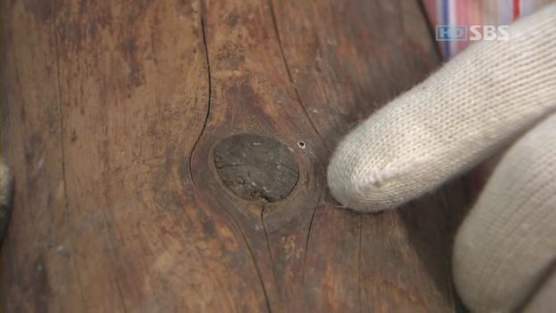
달콤, 살벌한 연인
2006-07-15 14:35:07 | bomchoon
이 영화 생각보다 재밌다. 간만에 재밌는 영화 건졌다. 배우들도 괜찮고, 이야기도 재밌고, 웃기고...
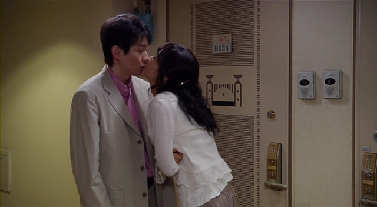
Lucky Number Slevin
2006-07-15 14:38:27 | bomchoon
럭키 넘버 슬레븐 좀 지루하다. 반전 때문에 마지막에 해소되는 느낌은 있다. 그러나 이런 스타일이 크게 새롭진 않다.
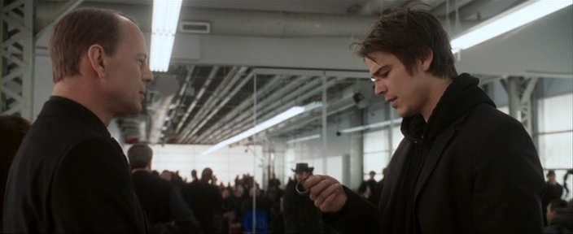
해피엔딩
2006-07-20 15:32:39 | bomchoon
원작이 해피엔딩이기 때문에, 해피엔딩으로 끝나겠지 하면서 내심 불안한 것은 왜일까? 다음주 월요일과 화요일이 빨리 왔으면 하고 바라는 것이 조금 유치한 걸까? 내가 바라는 것은 이유가 있는 해피엔딩이었으면 좋겠다. 다른 어떤 것도 아닌 사랑으로서의 결론이 되기를...
CARS
2006-07-23 04:51:37 | bomchoon
재밌다. 역시 PIXAR 다. 예고 편을 봤을 때와 다르다. 재밌다. 강추!
전차남(電車男)
2006-07-30 03:11:01 | bomchoon
처음에는 약간 오버다 싶었고, 우리와 정서가 약간 틀린 것 같았는데...
무척 재밌게 봤다.
총 11회로 구성된 드라마로 special 1회분이 더 있다. 영화판도 있지만 드라마가 더 낫다.
박달재, 전차남, 그리고 나는?
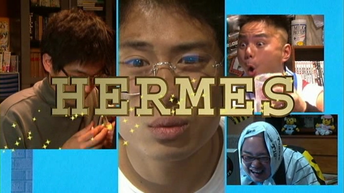
101번째 프로프즈
2006-08-02 16:31:28 | bomchoon
1991년에 만들어진 '101번째 프로포즈' 원작 12부를 오늘 다 봤다.
수정과 달재가 나오는 '101번째 프로포즈'가 정말 잘 만들어진 리메이크 작품이라는 사실을 다시 한번 느낀다. 똑같지만 다른, 다르지만 똑같은 두 작품.
오늘 본 원작은 15년 전에 일본에서 만든 것인데 그래서 그런지 느낌이 다른 감동이 있다. 아무튼 원작을 보게 되어 다행이다.
최지우가 나오는 중국판 리메이크 작품과 문성근이 출연한 영화도 있다고 하던데...
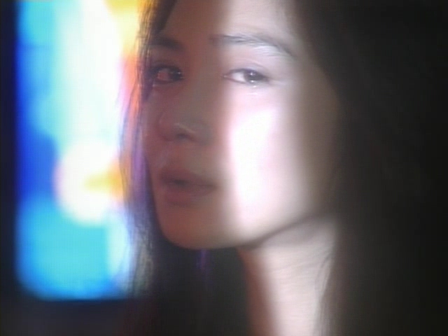
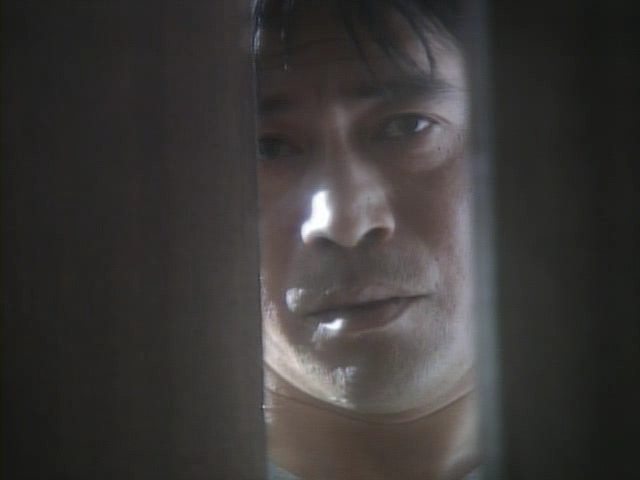
괴물
2006-08-03 04:07:01 | bomchoon
그렇게 재밌지 않은 것 같은데 왜 이리 난리일까?
한반도
2006-08-03 04:10:44 | bomchoon
볼거리는 조금 있었던 것 같았는데 아쉬움이 많이 남는 영화. 조금만 더 신경쓰면 좋았을 것을. 연극을 보는 듯한 느낌이랄까? 어색한 연출, 갑작스럽게 바뀌는 차인표.
다세포소녀
2006-08-19 13:01:56 | bomchoon
'재미없다'라는 확실한 이야기를 듣고 본 영화. 기대가 전혀 없어서 그랬을까?
'재밌어 꼭 봐'라고 추천할 수 없지만 나름 느낌있는 영화.
'가난'이라는 캐릭터가 귀여웠던 것 같고 노래방에서 볼 수 있는 가사가 나오는 것도 새롭다. 한번 보는 것도 괜찮을 것 같긴한데 추천을 못하겠다.
정말 재미가 없었다. 재미를 기대하는 영화는 아니었지만 그렇다고 해서 감동을 주기에도 배우들의 연기와 감독의 연출이 너무 부족했다.
다만, 자연의 아름다움은 잘 표현한 것 같다. 여유를 가지고, 가벼운 맘으로 여행을 가고 싶다는 생각을...
하이에나 (5, 6화)
2006-10-27 16:28:30 | bomchoon
첫 사랑은 이뤄지지 않아서 아름답다. 금새 녹아 사라지는 첫 눈 처럼. 그래서 첫 사랑은 남자들의 가슴 속 깊은 곳에 영원히 늙지 않은 아름다운 모습으로 잠들어 있다. 하지만, 걱정할 필요없다. 그 옆 방은 항상 비어있으니깐.
하이에나 (7화)
2006-11-03 15:16:05 | bomchoon
이번 화에는 홍석천이 나온다. 생각보다 솔직한 드라마라는 생각을 해본다. 게이에 대한 이야기는 평범해 보이지는 않치만. 남자들의 사랑과 그리움, 그리고 환상(?)에 대한 솔직함. 그러나 가볍지 않고.
하이에나 (8화)
2006-11-04 02:01:12 | bomchoon
남자를 사랑하고 싶다면 그가 감추고 싶어하는 비밀을 지켜주는 편이 좋다. 봉인을 뜯고 나면 다시는 그를 사랑할 수 없게 될지도 모른다. (사랑하는 남자가 게이라는 사실을 처음 듣고서)
하이에나 (9, 10화)
2006-11-11 14:22:15 | bomchoon
처음 때랑 다른 느낌으로 재밌다. 공중파에서 해도 될 것 같다. 이별은 아프다. 사랑한 만큼, 사랑한 시간 만큼, 그리움과 상처로 남는다. (9화)
사랑은 타이밍이다. 기막히고 절묘한 타이밍에 서로의 인생에 등장해 주는 것! 명심하라. 단 1초의 망설임 때문에 사랑이 슬픈 이별이 될 수도 있다. (10화)
Best Practice 3등 수상
2006-11-16 02:26:00 | bomchoon
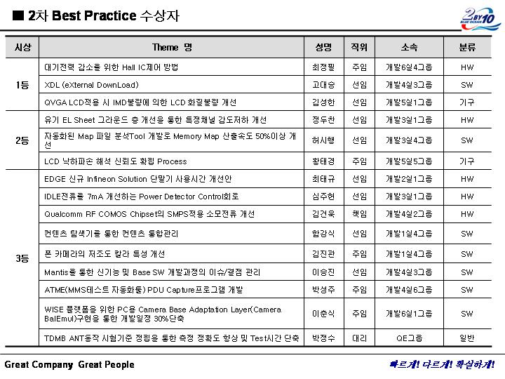
※ 정보의 가치가 없을만큼 아주 오래된 내용이기 때문에 비공개에서 공개로 바꿈
하이에나 (11화)
2006-11-18 13:20:32 | bomchoon
석진이가 정은이를 붙잡은 이후...
하이에나 (12화)
2006-11-18 13:32:50 | bomchoon
가르쳐주지 않아도 병아리는 알을 깨고 나오고, 연어는 알을 낳기 위해 먼 강을 거슬러 올라온다. 가르쳐주지 않아도 남자는 자신의 사랑을 알아본다. 그것이 자연의 섭리이자 가장 원초적인 본능이다. (12화)
실용주의 프로그래머
2006-11-19 13:46:42 | bomchoon
소프트웨어 개발을 잘 해보려는 생각이 없다면 왜 인생을 그 일을 하면서 보내는가? - 실용주의 프로그래머 TIP 70 중에서
직설적이고 도발적이며 마음에 와 닿게 하는 말이다.
나는 컴퓨터를 좋아했고 컴퓨터를 전공했으며 지금까지 이 바닥에 있다. 그런데 나는 즐겁지 않고 행복하지 않으며 재밌지 않다. 정말 이 일이 나에게 맞지 않는 것일까?
나의 인생 전반에 걸쳐 내 생각과 사고 방식을 바꾸지 않으면 점점 죽어갈 수 밖에 없다.
벤처에서 일했고 크지 못하는 회사에서 일했으며 지금은 대기업에서 일하고 있다. 3년이 되지 않은 때에 대기업병에 걸려 버린 것일까? 생각이 없고 발전적 고민이 없다. 그저 불평과 불만만 있다.
이제 그런 태도에서 벗어나고 싶다. 불평과 불만에 가득한 내 자신에게 이젠 짜증이 난다.
누가 그녀와 잤을까?
2006-11-24 14:49:14 | bomchoon
이렇게 재미없는 영화를...
중간 중간 조금 웃겼던 장면과 김사랑이란 배우의 대단함(?)이 묻어 있는 영화.
아무리 그래도 연기를 너무 못하는 것 같다.
김사랑 싸이에서
하이에나 (13화)
2006-11-25 13:28:46 | bomchoon
자극적인 문구로 시작했던 하이에나. 사실 자극적이지 않다.
이별... "벌이에요... 이 키스 평생 그리워 할 꺼에요..." 그리움이라는 벌...
하이에나 (14화)
2006-11-25 13:36:10 | bomchoon
16화가 끝이라는 이야기를 들은 적이 있는데, 이제 다음 주면 끝이겠군. 아주 재밌지는 않지만, 계속 보게 되는 하이에나.
친구가 게이임을 알게된...이후.. 그리고 그 친구의 여자 친구를 사랑하는...
고백을 하는데, 고백을 멈추게 하는...
하이에나 (15, 16화)
2006-12-02 04:49:51 | bomchoon
16화로 끝났다. 뭐, 아주 특별한 것은 없었다.
꼬마 아이가 나오는데, 눈이 크고 궈여운 것 같다.
어떻게 보면 누구를 닮은 것 같은데 묘한 분위기가 난다..
헙! 마지막에 이 친구가 나오다니...
한동안 나오지 않더니 마지막에 나오네... 시즌2를 하려나??
사랑할때 이야기 하는것들
2006-12-02 04:54:40 | bomchoon
난 나름 재미있게 봤는데 같이 보았던 두 친구는(둘다 남자임) 재미없었다고 한다. 한명은 계속 자고, 또 다른 한명은 초반에만 자고. 자고 있던 두 사람 중간에서 나는 재밌게 보고.
이 생각 저 생각하게 되었던 영화. 꼬집어 뭐라고 할 순 없었지만...
옛 기억 중에 하나가 생각났던 것 같다. 그 기억에 대한 슬픈 소식을 접해서 마음이 슬펐다고 할까? 두 배우의 연기도 맘에 들었고.. 암튼 난 재밌게 봤는데, 추천하면 혼날 수 도...
자유
2006-12-10 14:02:19 | bomchoon
어느 목사님에게 기자가 질문을 하였습니다. ‘목사님은 왜 예수를 믿으십니까?’ 그 기가 막인 질문에 목사님이 아주 근사하게 대답을 하셨습니다. ‘자유하는 사람이 되려고 예수를 믿습니다.’ 케제만이라고 하는 신학자가 예수는 자유를 의미한다고 말하였습니다. 맞습니다. 예수는 자유를 의미합니다. 그러므로 크리스천은 마땅히 자유인이어야만 합니다. 여러분은 건강하십니까? 여러분은 자유하십니까?
미녀는 괴로워
2006-12-21 18:37:27 | bomchoon
직장 연말 모임으로 보게된 영화..."미녀는 괴로워"
재미가 없지는 않았다. 웃겼지만 그 이상으로 슬픈 영화였다.
김사랑(누가 그녀와 잤을까?)에 비하면 김아중이 연기를 생각보다 잘했던 것 같고 조연들의 코믹 연기가 성공적인 것 같다. 참, 노래가 좋았다.
우리들의 행복한 시간
2006-12-22 16:08:50 | bomchoon
슬픈 영화를 재밌다고 추천할 수 도 없고, 뭐라고 표현하면 좋을까? 지루하지 않은 슬픈 영화였다.
나도 그런 행복한 시간이 있었으면 좋겠다. 물론, 마지막이 없는...
라디오스타
2006-12-23 11:58:03 | bomchoon
나름 괜찮았던 영화. 아쉬운 면이 있긴 했지만.
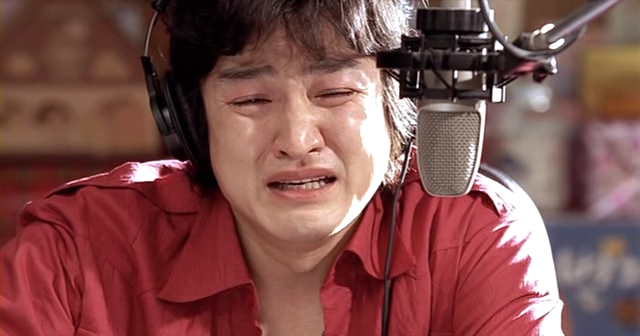
천국의 계단
2006-12-25 16:19:50 | bomchoon
정서
천국의 계단
2006-12-27 16:58:44 | bomchoon
소문난 칠공주
2007-01-01 15:52:31 | bomchoon
드디어 2006년 마지막 일요일, 80회를 끝으로 <소문난 칠공주>가 끝났다.
마지막 회를 비교적 해피엔딩으로 끝내려고 화해 모드가 빠르게 진행된 점이 아쉽긴 했지만 특별한 대안도 없었을 것 같다.
드라마 특성상 억지도 많치만 우리의 인생이 삶이 문제 투성이라는 것에 대해서는 공감을 하면서 재밌게 봤다. 물론 처음부터 보지 않고 중간 부터 보기 시작했지만.
칠공주의 어머니! 연기 대상을 탈 줄 알았는데 아쉽다. 암튼 연기를 참 잘하셨던 것 같다.
궁S
2007-01-10 14:36:37 | bomchoon
최근엔 볼만한 드라마가 없었다.
'궁S - 궁 시즌2'를 오늘 시작했다. 다른 건 몰라도 괜찮은 배우들이 나온다.
박신혜 - '천국의 계단' 정서의 아역 배우로 나왔던.
명세빈 - 정말 오랜만에 본다.
전수연 - 궁 전편에서 최상궁으로 나왔던 것으로 생각했는데 아니다.
허이재 - 어디서 본 듯 하다.
첫 회를 본 소감은 "뭐 그럭 저럭" 정도다. 앞으로 계속 보면 알겠지.
참, 궁1과 연속성이 없는 새로운 드라마임.
24시 시즌6
2007-01-13 09:50:13 | bomchoon
어느 새 '시즌 6'. 이번에 딸 "킴" 이 나오려나??
스파이더맨에 나오는 여주인공(키얼스틴)과 살짝 헤깔렸음. 킴의 실제 이름은 엘리샤 쿠스버트.
허이재
2007-01-25 14:05:26 | bomchoon
궁S 1회를 보고 그동안 못보고 있었다. 오랜만에 보니 이야기가 많이 진행된 것 같다. 그나저나 누군가 했었는데 해바라기에 나왔던 배우다. 허이재.
현실
2011-11-29 11:49:00 | bomchoon
뿌리
하고자 하는 일이 어떤 철학을 가지고 있는지 또는 어떤 뿌리로 부터 시작된 것인지를 인식하는 것은 중요하다. 사실 SW공학도 다른 분야에 있는 공학적 개념을 가져온 것이 많다. 예를 들면, 설계와 코딩을 칼로 자르듯 구분짓는 행위가 거기에 속한다. 이것은 순수하게 SW에서 시작된 개념은 아니다.
제조(manufacturing)는 소프트웨어 개발에 대한 메타포(은유)로 자주 사용되곤 한다. 이 메타포로부터 얻게 되는 한 가지 결론은 고도로 숙련된 엔지니어는 설계를, 덜 숙련된 노동자는 제품을 조립한다는 것이다. 이 은유는 소프트웨어 개발은 모든 것이 설계라는 한 가지 단순한 이유로 많은 프로젝트를 엉망으로 만들어 왔다.- Eric Evans, Domain-Driven Design
설계와 코딩
'설계자는 설계하고, 코더는 설계에 맞추어 코딩한다'는 생각 즉, 설계와 코딩을 분리할 수 있다는 생각에 난 반대 의견을 가지고 있다. 코딩을 수준 낮은 행위로 단정 짓는 사람들의 태도에 불쾌감을 느낀다. 완벽한 설계는 존재할 수 없으며 코딩은 설계를 완성하는 단계가 아닐까 한다.
코딩도 설계 활동이다.
이렇게 말하면 빈약일까? 나는 그렇게 정의해야 이상과 현실의 괴리감을 극복할 수 있다고 생각한다.
물론 추상화 레벨이 높아서 코딩과 멀어진 설계가 있을 수 있다. 필요에 따라 다양한 이해 관계자와 커뮤니케이션 해야 하기 때문이다. 이를 위한 적당한 View가 존재한다.
현실I
현실은 불안하다. 계속된 혼란과 수시로 바뀌는 생각에 회의적인 생각이 스쳐지나갈 때가 있다. 내가 하는 일이 정말 의미가 있는지에 대해 계속 질문하게 된다. architect가 바라봐야 할 적당한 View의 Level을 찾기가 쉽지 않다. Code Level에서 돕지 않으면 무시를 당하기도 하고, 반대의 경우엔 숲, 전체를 보지 못한다고 욕을 먹을 수도 있다.
또 다른 한가지는, SW 외부에서 시작된 다양한 툴을 SW에 맞추려는 시도에 대한 답답함이다. 물론 Design Pattern과 같이 건축에서 아이디어를 따서 SW에 적용한 좋은 사례도 있지만.
현실II
회사의 규모가 크면 다양한 혁신의 툴을 가지고 온다. 사실 그 누구도 부정적인 의견을 내기 쉽지 않다. NO! 라고 말할 수 있는 사람은 거의 없다. “대안 없는 비판은 지양하자”는 논리 앞에 아무 말도 못하고 있을 때가 많다. 제조사에서 SW 개발을 하다보면 그 시작이 SW의 본질과 거리가 먼 것들이 많다. 맞지 않는 옷을 입으려는 노력이 안타깝다.
결론
SW 의 본질은 “사람”에서 출발한다. 자발적이고 창조적 행위인 SW 개발을 잘 맞지 않는 툴에 끼워놓으려는 수많은 시도에 소극적으로(속으로) 반대한다. 그것은 SW 개발을 수동적으로 만들며 책임을 회피하게 만들고 형식적인 결과를 만든다.
SW 개발은 SW 의 속성(본질)을 잘 이해하는 툴로 혁신할 수 있도록 해주면 좋겠다.
칭찬의 본질
2011-11-28 12:58:00 | bomchoon
평소에 내가 생각하고 있는 내용과 많이 비슷해서 공감 100배!
미래형 리더가 되고 싶은가? 그렇다면 어설픈 ‘궁예 따라잡기’부터 관둬라. 당신은 관심법의 대가가 아니다. 부하의 본질을 저 높은 곳에서 함부로 판단하지 마라. 칭찬도, ‘깨는’ 것도, 인간보다는 고래에게 하는 게 더 어울린다. 칭찬은 춤추게 한다? 난 직원을 스마트하게 깬다? 꿈 깨라
이랬으면
2011-11-28 12:42:00 | bomchoon
이랬으면 좋겠다.
사람 냄새가 나는 진정성과 부드러움이 있었으면 좋겠다.
누군가에게 닮고 싶은 사람이 되면 좋겠다.
탄탄한 기본기 위에 놀라운 전문성이 있으면 훌륭하겠다.
커뮤니케이션 능력과 친화력도 필요하겠다.
발표 능력은 기본이다.
유쾌하며 유연했으면 좋겠다.
이러지 않았으면 좋겠다.
아는척 하는 사람
입으로만 일하는 사람
해보지 않고 확신도 없으면서 그럴듯 행동하는 사람
자기 주장만 하는 사람
과거 자신의 성공 경험이나 그 범주에서 고정된 시각을 가진 사람
깊이가 없는 사람
같이 일하고 싶지 않는 사람
용어
2011-11-24 16:22:43 | bomchoon
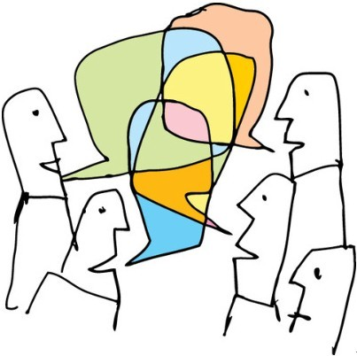
똑같은 단어를 쓰면서도 의견이 너무 다르다. 그래서 회의가 길어지고 길어진 회의는 사람을 지치게 한다. 좋게는 합의에 이르는 과정이라고 볼 수도 있겠지만 고민스러울 때가 많다. 서로 다른 각자의 경험과 생각을 기반으로 이해하고 있기 때문이다. 우리가 자주 사용하는 용어(단어)를 정확하게 정의하고 시작하는 것이 필요하다.
아키텍트가 하는 일
2011-11-23 15:53:00 | bomchoon
아키텍트가 다루는 핵심 주제는 “아키텍쳐 설계”이지만 실제 아키텍트가 다루는 주제는 소프트웨어 엔지니어링 전반에 걸쳐있다. 그 범위가 넓기 때문에 집중하기 쉽지 않고 다양한 이해 관계에서 다양한 요구가 들어온다.
돌고래 처럼 깊이 들어가야 할 때도 있고 높이 올라와야 할 때도 있기 때문에 심리적인 부담이 크다. 알아야 할 것은 많고 잘 알아야 하며 사람들에게 인정을 받아야 한다. 그게 그리 간단하지 않다. 무엇보다 고민이 많을 수 밖에 없는 일인데 그 고민의 끝에는 항상 “사람”이 있다.
아키텍트가 하는 일들이 쉽지 않은 이유는 그것이 사람을 다루는 일이기 때문이다.
설계서
2011-11-22 13:24:00 | bomchoon
아키텍처 설계(Architecture Design)는 기술된 형태(Architecture Description) 즉 설계서(Architecture Documentation)로 표현된다. 그래서 조직 및 기능에 맞게 설계된 템플릿은 유용하고 구조화된 설계 문서는 중요한 자산이 된다.
그러나 템플릿에 맞추는 것이 목적이 되는 경우를 종종 본다. 템플릿은 설계를 잘 할 수 있도록 가이드 해 줄 수 있지만 설계라는 본질적 내용을 대체할 수 없다. 주객이 전도되는 그 순간부터 문서화는 재미가 없어지고 지루한 일이 된다. 즉 죽어있는 문서가 된다. 문서에 대한 거부감은 여기서 시작된다.
설계라는 행위는 코딩 이전의 단계의 행위로 보는 경우가 많치만 특정 단계에서 끝나는 행위가 아니라 개발 전 단계에 걸쳐 계속 살아 움직여야 하는 행위다. Refactoring 이라는 것이 그냥 있는 것이 아니다.
소프트웨어를 잘하는 구글은 설계 활동을 어떻게 할까? 그들이 생산해 내는 문서는 어떨까? 궁금하다. 많이 접해본 일이 없는 것 같다.
Manifesto for Agile Software Development
2011-11-18 15:39:00 | bomchoon
Manifesto for Agile Software Development We are uncovering better ways of developing software by doing it and helping others do it.Through this work we have come to value:
Individuals and interactions over processes and tools Working software over comprehensive documentation Customer collaboration over contract negotiation Responding to change over following a plan
That is, while there is value in the items on the right, we value the items on the left more. http://agilemanifesto.org/
“오른 쪽의 가치를 인정하면서 왼 쪽의 가치를 더 중요시 한다”는 말에 공감이 간다.
Simplicity–the art of maximizing the amount of work not done–is essential. (단순함, 안 해도 되는 일은 최대한 안 하게 하는 기교, 이것이 핵심이다.) The best architectures, requirements, and designs emerge from self-organizing teams. (최고의 아키텍쳐와 요구사항과 설계는 자율적인 팀에서 나온다.) http://gyumee.egloos.com/1021784
회사 규모에 상관없이 중요한 조언이다.
회사 전체적으로 추진하는 일들이 해당 조직의 자율성을 유지하면서 유익하게 적용되는지 아니면 개발자에게 짐이 되어 가치 없는 결과물들을 양산하고 있지 않은지 차분하게 바라볼 필요가 있다.
사랑과 전쟁에 단골로 등장하는 분. 언제 부터인가 괜찮다는 느낌이 들었다. 오늘 이 분에 대한 기사가 나왔는데 이름이 유지연이란다. KBS 18기 슈퍼탤랜트 출신이도 한 것 같다. 가끔 광고에도 나오고.
해바라기
2007-02-04 14:03:53 | bomchoon
사실 큰 기대를 하지 않았다. 그러나 의외로 괜찮았던 영화.
김래원을 그렇게 좋아하지 않았는데 나름 괜찮은 연기를 보여준 것 같다. 영화를 보고 나서 나도 그런 수첩을 하나 가지고 있으면 좋겠다라는 생각을 해본다. 생각보다 절제된 느낌이 나서 좋았던 것 같다.
낯선 곳 캐나다
2007-02-09 10:52:17 | bomchoon
LG전자 입사 후 첫 출장. 캐나다는 처음이고, 혼자였으며, 차를 Rent해서 직접 찾아가는 것이기에 사뭇 걱정도 되었다.
하지만, 큰 문제 없이 숙소까지 도착했다. 짐정리를 좀 하고, 샤워도 하고, 메일을 한통 보내고 잠을 잤는데... 시차 땜인지, 익숙하지 않다. 지금은 현지 시간 아침 5시 34분, 서울은 오후 7시 33분. (2007년 2월 9일)
익숙한 것이 하나도 없지만, 새로운 환경에 다소 긴장이 되었지만, 예약이 잘 되어서인지 쉽게 쉽게 된 것 같다. 차를 빌리고, 처음 도로에 진입하는 순간 기분이 몹시 좋았다. 일종의 성취감.
NerverLost라는 GPS 시스템의 안내로 이곳까지 오긴 했는데, MapQuest에 가서 검색해 본 후에 내가 온 길을 알 수 있었다. 아주 가까워서 다행이었어...
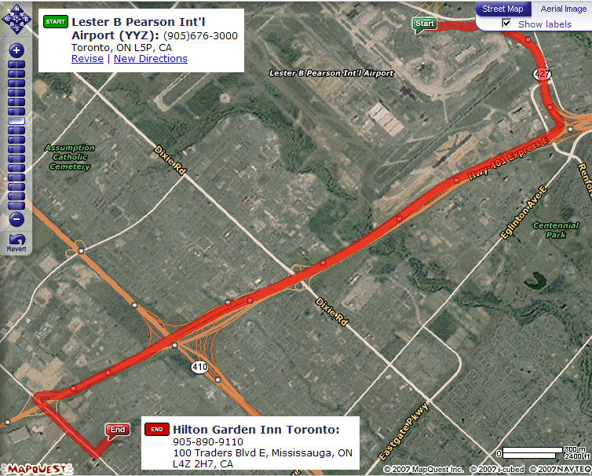
뒤에 있는 이상한 숫자는 Zip Code이다.
Where is Hertz?
공항에 도착하고 알아보지 못한 탓에 Hertz 위치를 몰랐다. 엄한 방향으로 가다가 아닌 듯해서, 덩치 큰 여자분에게 물었더니.
"Hotel?" 이러더라. 내 발음이 그렇게 이상한가? ㅋㅋ 큰소리로 "Rent Car(r 발음에 혀를 좀 굴려서)" 했더니 알려주더라.
옷을 너무 약하게 입어서인지 추웠다.
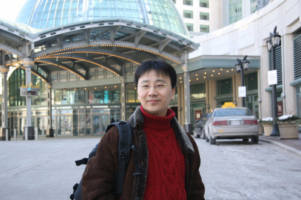
캐나다에서 드린 예배
2007-02-10 18:48:00 | bomchoon
2007년 주일을 꼭 지키겠다고 생각했기 때문에, 캐나다 출장 중에도 예배를 드리기 위해 교회를 찾았다. 현지인 교회에 갈까 한인 교회에 갈까 교민을 하다가, 그래도 부담이 적은 한인 교회를 찾다가, "토론토영락교회"를 찾아갔다. 좀 큰 교회였는데, 모두 한국 사람들이었고, 그냥 한국 같다는 생각이 들었다.
사진을 찍기가 좀 그래서, 예배 전에 실내 사진을 한 장 찍어보았다. 사진에는 사람이 없지만, 예배 시간에는 가득하다. 참, 3부 예배였다. 청년부 예배를 드릴 껄 하는 생각이 들긴 했었다.
출장을 마치고 귀국
2007-02-16 22:00:03 | bomchoon
짧지만, 심리적 압박이 심했던 출장이었다. 주어진 시간 안에 문제를 꼭 해결해야했고, 예상과 다른 상황들 때문에, 고생을 했다. 아쉬움 속에 마무리를 하고 한국에 돌아왔다.
마지막 날, TOYOTA 딜러에게 부탁해서 TOYOTA 차량과 테스트를 했었다.
내가 중국 사람인지, 한국 사람인지 분간이 되지 않는다고 한다. 그 말을 했던 사람은 중국사람이었다.
LG전자 캐나다 법인
2007-02-17 18:21:20 | bomchoon
출장 갔던 캐나다 법인 (LGECI) 눈이 많이 와서, 주변이 하얗게 된 사진을 좀 찍어 놨어야 했는데, 일하러 갔기에.
24시 시즌6
2007-02-18 02:55:20 | bomchoon
24시는 인물들이 여러 시즌 별로 묘하게 연결되어 등장한다. 24시 매력 중 하나다. 이번에는 형과 아버지가 나온다. 소재의 한계가 온 것이 아닌가 하는 생각도 든다.
그해 여름
2007-02-19 19:56:26 | bomchoon
난 이 영화가 참 좋다. 새벽에 보기 시작해서, 지금 막 다 보았다. 이쁜 영화라고 해야할까? 아니면 슬픈 영화라고 해야할까?
어쩌면 너무나 평범한 영화인지도 모르겠다
수애의 연기가 난 참 좋다.
Trick 2
2007-02-19 20:05:01 | bomchoon
회사 동료 때문에 알게된 일본 드라마 "트릭"
내가 본 것은 시즌1편이었고, 어쩌다 저쩌다 해서, 극장판으로 Trick 2를 구해서 보게 되었다.
보통 극장판이라고 하면 느낌이 좀 다른데, 요건 그냥 드라마랑 느낌이 똑같다. 음악,주인공,분위기 등...
여자 주인공이 나름 괜찮다. "케헤헤헤"하고 웃는 특징도 있고. ㅎㅎ 남자 주인공 역시 잘생긴 것 같다. 약간 코메디가 썩여 있는 영화다. 원래 드라마가 그렇고. 여자 배우 이름을 찾았다. 나카마 유키에(仲間由紀惠) 란다.
Rocky Balboa
2007-02-20 10:30:58 | bomchoon
어쩌면 너무나 뻔한 이야기. 영화를 소개해주는 TV 프로에서 "로키! 발모아!" 라고 해서 웃었던 기억이 난다. 영화보다, 실제 경기를 보는 듯한 느낌이 들었는데, 그렇게 의도했던 것 같다. 나쁘지 않았고, 나름 박진감 있었다.
뻔한 이야기를 보면서 그렇게 뻔하지 않게 느껴졌던 영화.
내가 누구를 의식하며 살아야 하는지 그리고 열정이 있는지를 생각하게 한다.
"처음엔 다들 웃었지만, 지금은 아무도 웃지 않는다" - 로키 아들이 로키에게
바다 그리고 호수
2007-03-06 16:09:05 | bomchoon
파란 하늘, 넓은 바다, 호수는 내 가슴을 설레게 한다. 캐나다에 잠깐 갔을 때, 그 호수를 걸어보지 못한 것이 넘 후회가 된다. 언젠가 넓은 바다나 호수 옆에서 걸어가고 싶다.
하나님 앞에서 더 큰 꿈과 설레임을 소망하면서, 현실의 바쁨과 어려움은 자꾸만 나로 하여금 힘들게 만든다. 그리고 자꾸만. 자꾸만. 내 인생이 재미가 없다고 느낀다.
하루 하루를 사는 것이 설레는 여행 같으면 얼마나 좋을까? 눈 앞에 보이지는 않지만, 그 설레는 여행과 같은 삶이 그리 멀리 있지 않을 것이라고 생각한다. 구체적이지 않치만, 다른 눈으로 바라보기 원한다. 바라는 것의 실상, 믿음으로...
진급
2007-03-12 12:55:00 | bomchoon
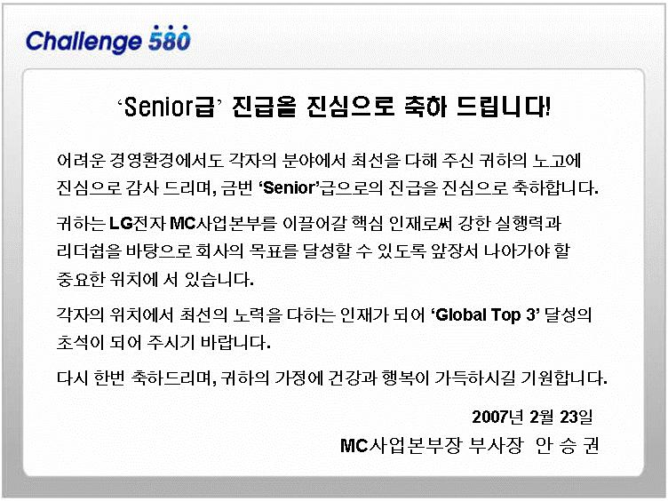
선임 진급을 했다.
마녀유희
2007-03-22 14:16:12 | bomchoon
1화를 보고 약간 어색함을 느꼈던 드라마. 약간 뻔한 드라마라는 느낌. 2화를 보고 '재밌네', '한가인 이쁘네', '한가인 이쁘네', '한가인 이쁘네'... 앞으로 계속 보게 될 것 같다.
명함 정리
2007-03-29 16:08:53 | bomchoon
나의 옛 명함들을 정리해 본다.
내 인생의 첫번째 회사 네오엠텔
내 인생의 두번째 회사 씨엠엠, 씨엠엠은 회사 이름의 변화가 좀 있었다.
내 인생의 세번째 회사 LG전자
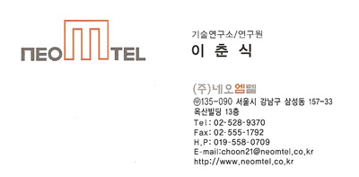
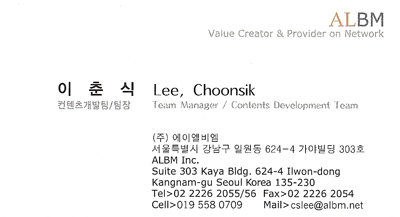
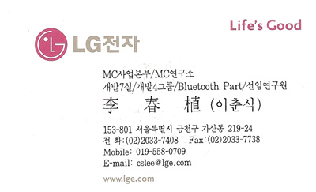
네오엠텔은 내 인생의 첫번째 회사였다. 대학교 4학년 여름부터 이 회사에 다니기 시작했었다. 좋은 기억들이 많이 있는 회사였고, 나름 인정도 많이 받았던 회사였다. 네오엠텔에서 만난 좋은 분들이 새롭게 회사를 차렸다. 그래서 옮겼다. 아쉬움이 많았던 기억이 난다. 그리고 인정을 많이 받지 못했던 것 같다.
회사 이름이 CMM으로 바뀌면서 WARNER BROS와 조인을 했으나, 중간에 잘 되지 않았다. WARNER BROS와의 사업이 잘 되지 않아, 결국 결별하고, CMM 이라는 이름으로 모바일 컨텐츠, 모바일 SI 중심의 사업을 진행했으나, 기대 이상으로 잘 되지 않아 어려움이 많았다.
현재 다니고 있는 회사, 여러번 조직이 바뀌고 진급도 했다. 스트레스와 어려움이 있지만 결국 직장 생활을 거기서 거기라는 생각을 해본다.
3개 명함(ALBM,WARNER BROS,CMM)은 모두 동일한 회사다. ㅋㅋ
프리즌 브레이크 시즌1
2007-04-22 12:28:11 | bomchoon
이번 주 토요일은 프리즌 브레이크 시즌1과 함께. 재미있긴 했지만 나는 24시가 더 나은 것 같다.
웨딩 (1회)
2007-04-27 12:46:40 | bomchoon
조금 예전 드라마. 아는 분이 필이 꽂힌 드라마라고 해서 보기 시작한다. 처음 느껴지는 어떤 어색함을 잠깐 지나고 나니 이 드라마! 재밌을 것 같다.
류시원이 읊었던 시가 좋았다.
그때는 걸어서 다녔다. (김광규)
걸어서 다녔다 통인동 집을 떠나 삼청동 입구 돈화문 앞을 지나 원남동 로타리를 거쳐 동숭동 캠퍼스까지 그때는 걸어서 다녔다 전차나 버스를 타지 않고 플라타너스 가로수 밑을 지나 마로니에 그늘이 짙은 문리대 교정까지 먼지나 흙탕물 튀는 길을 천천히 걸어서 다녔다 요즘처럼 자동차로 달려가면서도 경적을 울려대고 한발짝 앞서 가려고 안달하지 않았다. 제각기 천천히 걸어서 어딘가 도착할 줄 알았고 때로는 어수룩하게 마냥 기다리기도 했다.
웨딩 (2회)
2007-04-29 07:01:12 | bomchoon
역시 "시"가 나온다.
연인의 곁 - 괴테 햇빛이 바다를 비출 때 나는 그대를 생각하노라. 달그림자 샘에 어릴 때 나는 그대를 생각하노라 먼 길 위에 먼지 자욱이 일 때 나는 그대 모습 보노라. 깊은 밤 좁은 길을 나그네가 지날때 나는 그대 모습 보노라 물결이 거칠게 출렁일때 나는 그대 목소리 듣노라.. 모두가 잠든 고요한 숲속을 거닐면 나는 또한 그대 목소리 듣노라 그대 멀리 떨어져 있어도 나는 그대 곁에.. 그내는 내 곁에 있도다 해는 기울어 별이 곧 반짝일 것이니 아, 그대 여기에 있다면...
웨딩 (3, 4회)
2007-05-12 04:52:00 | bomchoon
대화가 많은 드라마라서 그런지 아직 초반이지만, 보면 볼수록 생각을 많이 하게되는 드라마인 것 같다.
누군가를 좋아한다는 것과 그 방향이 어긋난다는 것. 속상함이라는 것, 알 수 없는 복잡한 마음들.
뭐라 말 할 수 없는 여러 가지 생각들이 밀려오고 밀려 나간다.
미사리
2007-05-16 09:57:55 | bomchoon
노래를 참 잘 부르더라...
24시 시즌6
2007-05-30 12:33:34 | bomchoon
오랜만에 쉬는 날. 그동안 보지 못했던 드라마를 몰아서 봤다. 그중에 하나 '24 시즌6'.
약간 다른 이야기로 전개 되었던 후반부를 보면서 드라마가 한계에 왔다는 느낌이 들었음.
시즌6 정도로 끝나는 것이 나았을 것 같다는 생각이 들었으나 시즌7이 나오긴 하나보다. 내년 1월 쯤에.
암튼 재밌게 봤다.
프리즌 브레이크 시즌2
2007-06-06 05:07:51 | bomchoon
시즌2에서 happy ending 비스므리하게 끝나면 좋았을 것을. 또 다른 이야기로 전환되는 것 같다. 뭔가 아쉽다. 질질 끄는 느낌이랄까. 물론 나름 재미있게 보긴 했지만, 그렇게 인상 깊지는 못한 것 같다. 이제는 일본 드라마나 조금 새로운 느낌의 드라마를 접해 보고 싶다는 생각.
Gone With The Wind
2007-06-06 05:57:04 | bomchoon
이 노래를 참 잘부르는 사람을 안다. 그 사람 때문에 이 노래를 알게 되었고 이 노래를 좋아하게 되었다. 참 애절하다. 그리고 어쩌면 우리의 정서를 반영하고 있는 노래 같다.
http://www.youtube.com/watch?v=fkdm0Y_cItw
집착은 사랑이 아니야 기다림도 사랑이 아니야 헛된 기대는 사랑이 아니야 이젠 난 어쩌란 말야 바람처럼 사라진 연인이여 바람처럼 사라진 사랑이여 남몰래 흘렸던 눈물모아 바람과 함께 그대 사라지고 정주고 마음주고 사랑도 다줘도 내곁을 떠난 사랑 아프고 아파도 그대 내색 한번 하지 않던 사랑 그때 정주고 마음주고 사랑도 다줘도 아깝지 않던 사람 사랑때문에 사랑때문에 아파도 아파도 기다려 세월속에 잊혀질 사랑이여 세월속에 흩어질 사랑이여 남몰래 흘렸던 눈물모아 바람과 함께 그대 사라지고 정주고 맘주고 사랑도 다줘도 내곁을 떠난 사랑 아프고 아파도 그대 내색 한번 하지 않던 사랑 그때 정주고 마음주고 사랑도 다줘도 아깝지 않던 사람 사랑때문에 사랑때문에 아파도 아파도 사랑 사랑 사랑 사랑은 혼자서 하는 거죠 나랑 너랑 사랑 난 이제는 더 이상 끝난 거죠 정주고 맘주고 사랑도 다줘도 내 곁을 떠난 사랑 아프고 아파도 그대 내색 한번 하지 않던 사랑 그때 정주고 마음주고 사랑도 다줘도 아깝지 않던 사람 사랑때문에 사랑때문에 아파도 아파도 기다려 사랑 사랑 사랑 사랑
웨딩 (5, 6회)
2007-06-09 04:42:52 | bomchoon
"누구랑 달리 나만 좋아해 준다..." 류시원(승우)이 한 대사 중 하나인데, 귀에 쏙 들리네.
살짝 살짝 웃기는 드라마다. ㅋㅋ
서로 좋아하는 것. 어쩌면 너무도 평범하지만, 어쩌면 너무 특별한. 어떤 것.
웨딩 (7회)
2007-06-15 14:42:50 | bomchoon
문득든 생각에 대해서
3일을 좋아한 사람이 있었다는 사실에 죄책감이 든다는 내용과 친밀감없는 결혼의 시작에 대해서는 아직 잘 이해가 잘 되지 않는다. 그냥 깊이 없이 문득 든 생각이기 때문에 뭐 중요한 건 아니다. 그래도 은근히 보게 되는 드라마다. 귀엽다고 할까?
변화에 대해서
아직까지는 사랑하는 사람 때문에 변하기 시작하는 것이 여자 쪽이다. 나는 이게 참 좋다. 내가 은근히 아니 이기적으로 바라는 것인 지도 모르겠다. 늘 맞추어 주는 것이 익숙한 나에게, 나에게 맞쳐주는 여자가 있다면 참 좋을 것 같다.
기다림에 대해서.
나는 기다림에 익숙하다. 그리고 기다리는 것을 잘하는 편이다. 그러나 기다림은 사랑이 아니다. 너무 단정하는 것인지 모르겠지만 말이다. 물론 이렇게 비약하는 건 아니지만, 어떤 의미에서는 맞는 말이다라는 것이다. 내가 좋아하는 노래의 가사 중에 비슷한 말이 있다. "집착은 사랑이 아니야, 기다림도 사랑이 아니야, 헛된 기대는 사랑이 아니야..."
사랑에 관한 노래에 대해서
요즘 내가 듣는 노래의 대부분은 사랑에 관한 것이다. 그런데 그 노래의 대부분은 슬프고 아프다. 왜 그럴까? 그건 사랑이 평등하지 않기 때문이다. 이별을 통보 받은 입장에서는 사랑은 아프다. 혼자만 좋아하는 사람의 입장에서는 사랑은 아프다. 자존심을 버리는 입장에서는 사랑은 아프다.
무슨 맛으로 먹어요? 쓴 맛으로요.
웨딩 (8회)
2007-06-16 06:18:03 | bomchoon
예전엔 정말 장나라 같은 스타일을 좋아하지 않았는데... 이 드라마에 나오는 장나라는 맘에 든다.
그리고 명세빈...
교회가 이상하다
2007-06-29 16:21:13 | bomchoon
걱정스럽다.
교회 혹은 기독교가 지금 같다면 더 이상 빛과 소금의 역할을 할 수 없다. 목사 자신도 정치적 성향 혹은 취향이 있겠지만 교회의 입장으로 대표 되어서는 안될 것 같다.
사학법을 반대하고 낙선 운동을 벌이는 지금의 모습
한나라당을 지지하고 나선 뉴라이트 (정확한지 모르겠지만 김진홍 목사님이 이 운동을 하고 계신단다.)
당당히 공식적인 교회 홈페이지나 성명을 통해 이명박 후보를 지지하는 행동
시청 앞에서 기독 보수 세력의 파워를 보여주려는 집회
점점 사람들의 마음이 닫혀가고 있다. 교회가 교만해졌다.
교회는 겸손해야한다. 그리고 낮아져야 한다.
웨딩 (9회)
2007-07-17 10:38:43 | bomchoon
취향과 생각, 정서가 같은 두 사람과 취향과 생각, 정서가 다는 두 사람 영향을 주는 사람과 영향을 받는 사람
휴일날 저녁, 웨딩 9화를 보았다.
집중해서 보지는 못했지만, 위에 적은 상대적인 말들이 생각났다.
명세빈 : "오빠 어머니가 다녀가셨어... 헤어져 달라고..."
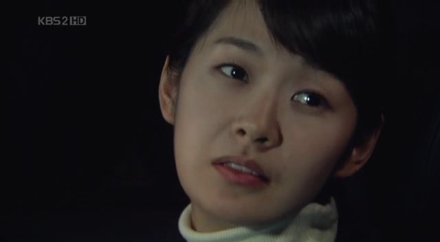
장나라 : "어쩌면 좋아, 나 이제 승우씨 얘길 믿을 수 없어요."
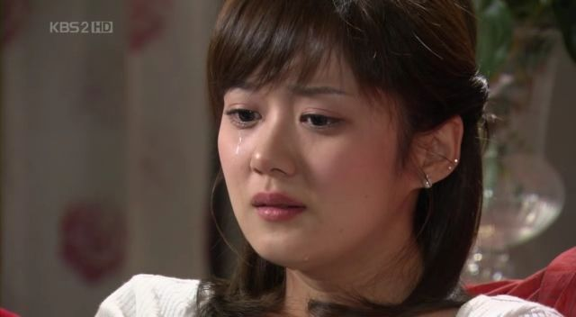
경험
2007-07-23 10:24:08 | bomchoon
...생략... 가치관을 알아내는 데에는 세 가지 방법이 있습니다. 첫째는 가치관이 무너졌을 때입니다. 자신의 가치관을 알게 되는 가장 흔한 형태지요. 무언가 당신을 불편하게 하고, 엉망으로 만드는 일이 일어날 경우 가치노출을 경험하게 됩니다. 어떤 사람이 당신을 업신여기거나 무례하게 굴어서 분노하게 만든다면 당신이 느끼는 분노는 타인과의 관계에서 존경스럽게 취급 받아야 한다는 생각, 즉 존경이라고 하는 당신의 가치관에서 나오는 것입니다. ...생략...
우리가 경험하는 좋치 않은 감정과 느낌들을 소중하게 생각할 필요가 있다.
웨딩 (10회)
2007-07-31 05:35:01 | bomchoon
사랑의 권력 관계라는 말이 여기에도 나오네...
목사님이 했던 말이 자꾸 생각난다. 자신의 인생에서 가장 중요한 것을 하나님의 방법대로 해보라는... 그러면서 여러분의 인생에서 가장 중요한 것은 현재 "연애" 일 꺼라고...ㅋㅋ
오해... 오해하도록 만들었다면...
명세빈: "결혼해요, 결혼 하고 싶어. 내가 오빠 가족이 되어 줄께."
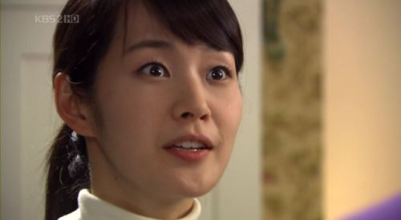
웨딩 (11회)
2007-08-03 03:50:16 | bomchoon
이 식당에서 흘러나오는 노래, 어디서 많이 들었던 노래인데 기억이 잘 나지 않는다.
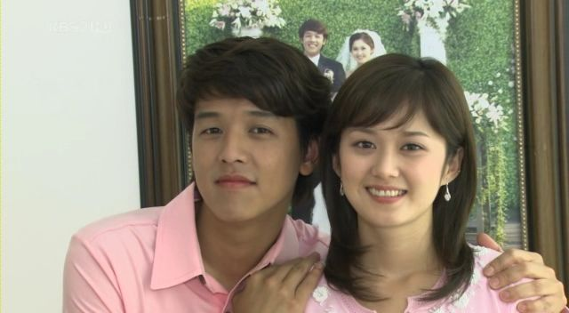
둘이 싸운다. ㅋㅋ "싸운다는 것, 사랑하지 않으면 할 수 없는 것 중에 하나다." 아래 갈무리한 사진은 둘이 아직 싸우고 있는 중인데, 장인,장모님 때문에 어쩔 수 없게 사진 찍는 모습. ㅎㅎ
명세빈 때문에 답답했는데, 착하다는 것은 때론 답답하다.
일단 명세빈-류시원 사이가 주는 갈등이 곧 가라앉게 될 것 것 같다. 그러면 김현우-장나라 사이가 주는 갈등은 언제 시작하게 될까? ㅋㅋ (12화 부터는 나타날 듯...)
휴가 기간 내내 집에 있었는데... 이런 곳에 가서 좀 걸으면 얼마나 좋을까?
류시원 : 다른 남자 앞에서 웃지마, 기분 나뻐. 웃지말라구...
웨딩 (12, 13회)
2007-08-18 02:49:00 | bomchoon
답답함, 싸움, 믿지 못함, 상처, ...
비밀이 너무 많아도 좋치 않고, 비밀이 너무 없어도 좋치 않은 것 같다.
잘 어울림이란 무엇일까?
비슷한 점도 있고 다른 점도 있는 것이 당연하겠지만, 비슷함이 중요할까? 다른 점이 중요할까? 하는 생각을 해본다.
잘 어울린다는 것이 비슷함에 비중이 있는 것일까? 다른 점에 비중이 있는 것일까? 정답은 없겠지? ... 다르면 맞추면 되고, 비슷하면 공감하면 되고...
은상 수상
2007-09-13 15:33:46 | bomchoon
은상을 받았다. 적당한 표현으로 비교적 솔직하게 썼는데...
웨딩 (14, 15회)
2007-09-22 04:16:00 | bomchoon
승우 어머님 : 승우가 뭐가 좋았어? 뭐가 좋아서 결혼까지 한거야? 세나(장나라) : 그러게요. 뭐가 좋았을까요? 촌스러운 옷도 좋았고요. 죄송해요 어머님. 승우씨가 처음에 옷을 잘 못입었거든요. 굉장히 어렵게 말하는 것도 좋았고, 피식웃는 것도 좋았고, 혼자 고지식 한 면도, 여자에 대해 서툰 것도 좋았고, 시도 잘 읊어주고요. 무엇보다도 어머님 닮아서 잘생겼자나요. 전부다요. 저는 처음부터 전부다 좋았나봐요.
승우 어머님이 돌아가셨다.
웨딩 (18회, 마지막)
2007-09-29 16:56:50 | bomchoon
하루 종일 흘렸던 눈물 때문인지 눈이 부어서 약간 눈을 감은 채 보고 있다.
결국, 원래 그 자리로 돌아가는 분위기인데, 왜 그렇게 돌아들 갔는지... 그렇게 돌아갔기 때문에 서로에 대한 사랑을 알게 되었는지 모른다.
서로 다르다는 것도, 서로 비슷하다는 것도 이것이 좋다 저것이 좋다 말할 수 있는 성질의 것이 아닌 것 같다.
세나(장나라)가 한 말이 내 귀에 들린다.
"바보더라구요. 마음이 아픈 것을 머리가 아프다고 그러자나요."
나... 행복한 사랑을 하고 싶다... 이렇게 가슴이 아픈 것도 행복이라는 상자 안에 같이 들어 있는 것이겠지... 지금의 나는, 내 가슴과 내 마음과, 내 심장과, 내 머리와, 내 생각이 자기들 맘대로다.
그린내
2007-10-11 11:49:46 | bomchoon
기하: 친구가 아니에요. 그분은 내게.... 그린내에요. 죽어도 그리움을 거둘수 없는 분이에요. 오래전부터 그랬어요. 그러니 부디 주작의 심장에 더 맞는 분을 찾으시길 바래요.
행복
2007-10-14 15:56:21 | bomchoon
사람은 쉽게 변할 수 없다는 사실과 임수정과 공효진이 이쁘다는 사실을 알게 해 준 영화. 임수정이 뛸 때와 마지막 장면에서 눈물이 나긴 했지만 몰입이 잘 되지는 않았던 것 같다. "미안해서 어쩔 건데" 라는 대사가 기억난다.
기대
2007-10-15 12:12:28 | bomchoon
기대라는 단어는 참 예쁜 단어다.
그러나 항상 그런 것은 아니다. 기대 이면에는 실망이라는 친구도 가깝게 지내기 때문이다.
'기대 이상'이라는 친구는 외국에 갔고 '기대 이하'라는 친구는 같이 살고 있다. '기대가 크면 실망도 크다.' 라는 말이 그냥 있는 것도 아니고.
우리는 우리 인생에서 기대한 것 그 이상을 경험하고 싶어한다.
기대 : 어떤 일이 이루어지기를 바라고 기다림 - 국어 사전
우린 지금 무엇이 이루어지기를 바라고 기다리고 있는 것일까?
Caramel Ice Blended
2007-10-22 12:00:13 | bomchoon
Caramel Ice Blended® 캐러멜 아이스 블렌디드 커피 원액과 프렌치 디럭스 바닐라 파우더, 얼음, 부드러운 캐러멜과 저지방 우유의 블렌드.
나는 보통 어디를 가나 '아이스 아메리카노'를 먹는다. 시럽을 넣치 않고.
스타벅스를 많이 가는 편이지만 할리스나 커피빈을 가끔 이용해본 것 같다. 그리고 최근에는 탐앤탐스 커피가 맛있다고 느꼈던 것 같다.
오늘은 점심시간에 식당 근처에 있는 커피빈을 갔다. 콩다방이라고 부르기도 하더라. 웃긴 것은 한손에 자판기 커피를 들고. 홍홍~
오늘은 <Caramel Ice Blended>라는 커피를 먹었다. 일단 크림은 빼고. 달다. 캐러멜이 원래 달기 때문일까? 잘모르겠다.
다음에는 다른 것도 한번 먹어볼까? 늘 먹던 커피 말고.
ㅎㅇㄱㅈ
2007-11-18 02:26:04 | bomchoon
사보
2007-12-26 14:40:41 | bomchoon
12월 사보에 실렸다!
염려
2008-04-07 13:53:39 | bomchoon
하나님을 믿는다고, 하나님이 믿어진다고 문제도 없는 것은 아닙니다. 다윗은 오늘 시편에서 ‘내가 사망의 음침한 골짜기로 다닐찌라도’라는 표현을 씁니다. 여호와 하나님으로 목자를 삼은 사람에게도 문제는 있습니다. 여호와 하나님으로 목자를 삼은 다윗에게 얼마나 많은 문제들이 있었습니까? 많은 것은 고사하고 또 얼마나 힘든 문제들이었습니까? 다윗이 오늘 본문에서 표현한 바와 같이 ‘사망의 음침한 골짜기로 가는 것’과 같은 문제들이 유난히 다윗에게는 많았습니다.
예수님은 우리들에게 염려하지 말라고 말씀하십니다. 저는 그 말씀을 읽으면서 염려하지 말라고 말씀하시지 말고 염려꺼리를 주시지 마시지 하는 생각을 한 적이 있었습니다. 그러나 곧 그것이 잘못된 생각이라는 것을 알게 되었습니다. 염려꺼리가 없는데 왜 예수님이 염려하지 말라고 말씀하셨겠는가 하는 생각을 하게 되었기 때문입니다. 예수님의 말씀은 염려꺼리가 많은 세상이지만 세상 바라보지 말고 나를 바라보고 염려하지 말라는 것이었습니다. - 김동호 -
작은 염려와 근심으로 기분이 좋치 않았던 나에게 위로가 되는 말씀이었던 것 같다.
자유
2008-05-07 15:51:57 | bomchoon
내가 참 좋아하는 단어이고 바라는 삶의 모습이다.
자유는 외부로부터 구속이나 지배를 받지 않고 그것이 있는 데로 그대로 있는 상태, 즉 속박이 없는 상태를 의미한다. 누군가 자신이 하고자 하는 것을 할 수 있고, 그것을 하는 데 어떤 장애도 없는 상태를 "자유롭다"라고 할 수 있다. (위키피디아)
비
2008-06-02 14:55:24 | bomchoon
비 비가 온다. 소리가 참 좋다. 땅바닥에서 솟아오르는 기분좋은 냄새가 난다. 바람이 분다. 냄새가 참 좋다. 내게 비를 가져다주는 기분좋은 소리가 난다.
계획
2008-06-22 16:05:52 | bomchoon
참! 좋은 소식이 있습니다. 금요일부터 새로운 직장에 첫출근했습니다. 앞으로 그 직장을 통해서 하나님께서 펼치실 그 계획들이 심히 기대됩니다.
-인터넷 어딘가에서 본 글
Mac OS X 10.5
2008-09-20 05:00:00 | bomchoon
iPhone SDK를 설치해 보고 싶은 생각에 Mac OS 10.5를 노트북에 설치해 보았다.
노트북이 도시바의 A100 인데 무선랜 카드를 못잡은 것 같고 그래픽 카드(ATI X1300)를 정확하게 찾지 못해 기본값으로 설치를 한 것 같다.
원래 동영상 촬영은 안 되는 건가? → SDK에 Camera 기능이 지원되니 누군가 만들 수는 있나 몰겠네요.
아침에 조금 사용하니 battery 가 금방 없어지네요. 충전이 덜 되었었나?
왜? 다른 프로파일은 뺐을까?
개발 시간이 없었다? → BT모듈은 들어가 있으니 추후에 추가할 수는 있을 듯.
호환성 보다는 전용? → 실제 다른 유선 ear-set과 잘 동작이 안 된다고 하네요.
성능? 터치 기능이 주요 기능인데 A2DP 사용 중에 느려지는 문제 등이 있어서 일까?
쉬운 UX(사용자경험)를 제공하기에 Bluetooth의 많은 프로파일은 너무 복잡해 보였나?
장점
다 아는 내용은 생략하고 직접 사용해 보니,
생각보다 터치 동작이 좋다. 세밀한 입력은 빼고.
심플하다. 사용법을 금방 익힌다.
사용자에게 핵심 기능만 제공한다. 불필요해 보이는 detail한 기능은 없다. 단점이 될 수도?
BT의 경우 장치를 켜면 자기가 지원하는 장치만 찾는다. AG만 지원해서 HF만 찾는다. → 이것 저것 설정하는 것들이 없어요. “BT On -> 연결” 이 다에요. 물론 AG만 지원하니깐 가능하겠죠.
동영상이 깔끔하다. 한글 자막도 잘 나오고. 변환 하는데 시간이 많이 걸리겠죠?
MP3기능이 좋다. 유행처럼 보이는 별표(★) 주기도 가능하고. 사용법이 쉽고 재미가 있네요.
국제화 기능이라고 하나요? 한글화가 잘 되어 있네요. 한글입력도 되고.
결론
아이폰이 출시되면 사고 싶은 충동을 느낄 것 같다.
마음 속 친구들
2008-10-11 14:17:22 | bomchoon
따뜻함, 편안함, 쉼, 자유, 여유로움 ... 두통, 불편함, 스트레스, 짜증남, 미움, 불안함 ... 함께 살고 있는 내 마음의 식구들.
악성 가난
2008-10-13 15:49:04 | bomchoon
...모든 것이 너무 많다보니 귀한 것들이 흔해지게 되어 귀한 줄을 모르고 귀한 것이 없어지게 된 것이었습니다. 하루 종일 아내의 걱정을 생각하다가 매우 중요한 것을 깨닫게 되었습니다. 그것은 지나친 풍요로움이 오히려 내 아이들을 가난하게 만드록 있다는 것이었습니다. 그리고 그 가난은 귀한 것이 없어서 가난한 것보다 더 질이 나쁜 가난이라는 것을 알게 되었습니다. 저는 그 가난의 이름을 ‘악성가난’이라고 불렀습니다. 아이들에게 그와 같은 이야기를 해 주었습니다. 어떻게하면 좋겠느냐고 아이들에게 물었더니 큰 아이가 수학적으로 대답을 하였습니다. 너무 지나치게 많아서 가난하게 되었다면 그 지나친 것들을 없이하면 다시 부해질 수 있지 않겠느냐는 것이었습니다. 그래서 집에 있던 모든 것들을 수십 개의 비닐 팩에 담아 여러 사람들에게 나누어 주었습니다. 저녁을 먹고 아내에게 사과 한 알 먹자고 하였더니 없다고 하였습니다. 할 수 없어서 가게에 가서 몇 알 사다가 깍아 먹었습니다. 큰 아이가 소리를 질렀습니다. ‘이제 우리도 부자다.’ 무슨 소리냐고 물었더니 아이가 대답을 하였습니다. ‘이젠 우리 집도 사과가 귀하다.’ 귀한 것이 있게 되었으니 이제 드디어 우리도 부자가 되었다는 말이었습니다... - 김동호 목사
작은 것에 기쁨을 느낄 줄 알고 내가 처에 있는 환경 속에서 감사를 느낄 수 있는 삶. 감사할 줄 알고 기뻐할 줄 아는 지혜가 참으로 필요하다.
현실
2008-10-16 06:30:00 | bomchoon
현재에 만족하는 사람이 많치 않다. 지금 하고 있는 일을 좋아하는 사람도 적다.
늘 새로운 변화 혹은 돌파구를 기대하고 지금보다 더 나은 어떤 것을 막연하게 동경한다. 그런데 막상 새로운 변화가 왔을 때는 의외로 그 변화를 거부하는 태도가 관찰된다.
현실에 만족하고 즐기면서 동시에 미래에 대한 균형감을 가지고 있다면 참 행복한 사람이다. 그런데 잘 안된다.
"뭐해서 먹고 살지?", "지금 보다 나은 게 뭐 없을까?", "새로운 뭔가가 필요하지 않을까?", "재미없다.", "뭘하면 재미있을까?"
혹자의 말처럼 시간 없어서 못한다고 하는 사람은 시간을 줘도 못한다. 위에 언급한 고민들은 시간이 없어서 못한다라고 말하는 것과 비슷한 맥락을 가지고 있다.
경우에 따라 환경적인 변화가 돌파구가 되는 경우도 있겠지만 결국 현실을 바라보는 개인의 태도가 바뀌는 것이 먼저다.
우리의 생각은 늘 바뀐다. 때론 어떤 기준이 있으면 좋겠다. '애자일 이야기'라는 블로그를 운영하는 김창준님께서 쓴 글을 한번 쯤 읽어보면 나름 도움이 될 것 같다. '나는 앞으로 뭐 해먹고 사나?' 라는 글이다.
세월을 아끼라고 한다. 그 말에는 주어진 기회를 잘 잡으라는 뜻이 있단다. 주어질 기회가 아니라 주어진 기회를 말이다.
매개 변수를 변역 할 때
2008-10-16 08:45:00 | bomchoon
아래와 같다고 하네요.
선언 시: int function (int a, int b) 에서 a 와 b는 parameters
호출 시: function(11,2) 에서 실제 넘어가는 값은 11과 2는 arguments
파랑새 신드롬
2008-10-22 04:00:00 | bomchoon
이직을 고민하는 개발자 혹은 새로운 돌파구를 찾는 개발자에게 도움 될 만한 글
필자는 여러 개발자를 보아왔다. 많은 개발자가 현재 환경이 열악하다고 생각한다(정말 그렇다). 그리고 동경하는 직장이 한 둘 있다. 그런데 그런 사람들 중 일부에게서 어떤 패턴을 지속적으로 발견했다.
- 그 사람들은 계속 현재 상황이 문제라고 생각하며 불평을 반복하고 - 그 상황을 개선하는 데에 자신이 할 수 있는 일은 없다고 생각하며 - 자신은 다른 직장에 가야 빛을 발할 수 있다고 믿으며 - 따라서 현 직장에서는 최선을 다하지 않으려고 한다.
- 김창준, '파랑새 신드롬'
SW회사 vs. 제조회사
2008-10-23 15:30:00 | bomchoon
아이폰과 안드로이드를 보면서, 정확한 사실에 근거한 것은 아니지만, 막연하게 '대단하다'라는 느낌을 지울 수가 없다. 정말 SW를 잘하는 회사들이 해낼 수 있는 역작인 것 같다.
SW의 부품을 만들고 표준화를 진행하고 SDK를 만드는 일들에 적지 않은 시간을 보내면서 그 작업이 얼마나 쉽지 않은 작업인지를 경험상 이해할 수 있기 때문에 더더욱 동경에 가까운 느낌을 받는 것 같다. 일종의 부러움도 있고.
요즘 보면, 누구나 말하는 것이지만, 조금씩 모바일 세상이 열려지고 있는 것 같다. 설레이는 '기회의 땅'이기도 하지만 무한 경쟁을 의미하기도 한다. 특히나 개발자들에게는 그 동안 단말 어플리케이션을 개발할 수 있는 기회들이 거의 없었다. 개발할 수 있는 기회가 없었다는 것 보다는 수익을 창출할 수 있는 문이 좁았다는 말이 더 맞을 수 있을 것 같다. 그런 의미에서 블루오션처럼 보이니 개발자를 유혹하기에 충분하다. 그러나 또 다른 레드오션처럼 보이기도 한다.
아이폰과 안드로이드가 펼치고 있는 스타일은 약간 차이가 있어 보인다. 아이폰이 약간 닫혀진 느낌이라면 안드로이드가 좀 열려져 있는 느낌이다. 노키아도 심비안과 함께 무엇인가 선보일 것으로 보인다.
최근 트렌드를 리드하고 있는 회사들을 보면 현재 3박자가 잘 맞는 것 같다. "웹기술 + SW 전문성 + 제조능력"으로 말이다. 각각의 요소에 대한 전문성과 함께 3가지를 통합할 수 있는 능력이 있어 보인다.
아이폰을 보면, OS를 포함한 SW 전문성과 음악을 판매하는 인터넷 서비스 그리고 PC와 MP3를 만들어 팔았던 제조 능력을 가지고 있다. 구글의 경우, 세계 최고의 웹 기술과 SW 전문성을 가지고 있다. 부족한 제조 능력은 마치 OEM 을 생각나게 하는 것처럼 제조회사에 의존한다.
삼성, LG를 비롯한 우리들은 제조 능력은 뛰어나지만, SW 전문성은 좀 부족한 것이 아닌가 한다. 시장의 빠른 대응력과 훌륭한 단말기를 많이 출시하고 있기 때문에 나름 기술력을 보유하고 있고, 많은 장점을 가지고 있는 것은 사실이지만, SW 전문성과 웹기술 그리고 3가지를 통합할 역량은 좀 부족해 보인다. 이 영역에 대한 전문성을 확보하지 않으면 가까운 미래에 경쟁력이 없어질 것 같다는 생각도 해본다.
삼성, LG는 제조회사의 범주에 포함되는 것 같다. 개인적인 생각에 통합, 생산, 제조를 잘하는 회사 이미지에서 SW를 잘하는 회사라는 이미지로의 전환이 필요해 보이지만, 갈 길이 참 먼 것 같다. 극단적으로 느껴지는 두려움은 머지 않아 OEM 회사로 전락해 버리지 않을까 하는 것이다. 물론 그런 일은 없겠지만.
Right People
2008-10-28 04:00:22 | bomchoon
회사에서는 매월 Right People을 뽑는다. 매월 특정한 주제가 있는데 그 주제에 맞는 사람을 추천한다. 파트에서 추천자가 나오면 추천자들 모아 그룹 추천자로 올리고 그룹 추천자로 올라가면 실 추천자를 뽑는다. 그렇게 되면 연구소 Right People이 된다. 오랜만에 파트 Right People로 추천되었다. 과거 연구소 Right People을 2번 했었던 경력이 있기 때문에 여기서 멈추었다.
주제 : 같이 일하면 힘이 나는 연구원 선정 사유 : 자기의 업무 Item을 명확하게 선정하고, 이를 꼼꼼하게 진행하는 성실한 연구원입니다. 더불어, 이 성실함과 꼼꼼함을 바탕으로 자신의 일 뿐만 아니라, 다른 직원들이 놓치기 쉬운 일들을 알려주거나 스스로 처리해 주어, 드러나지 않는 도움을 많이 주는 연구원입니다. 뛰어난 Project 관리 능력을 보유하고 있어 기술적으로 또는 직장 생활면 에서 언제나 주변 동료에게 많은 관심을 보여 주고 있습니다. 최근에는 파트 내에서 HDP 프로파일 LG Exchange protocol의 개발을 주관하면서, 해당 프로젝트의 목표를 위해 다른 이들이 누락/실수 한 부분을 본인 스스로 수정 및 보완해 가면서 보다 좋은 성과를 위하여 열심히 노력해 주고 있습니다. 또한 최근까지 맡았던 MBT SDK 담당자를 맡으면서, PI 전개 방향 및 SDK의 효율적으로 관리할 수 있도록, 관리 문서를 새로 작성하고. 또 이를 각 개발실에서 사용할 수 있도록 문서 작업 및 Debugging Tool을 만들기도 하였습니다. 본래 업무 외의 일 이기도 하고 귀찮은 일이기도 하지만, 이렇게 솔선수범해서 업무를 진행하는 분은 OOO 선임 연구원이 유일하다고 생각합니다.
정말 내가 같이 일하면 힘이 나는 연구원일까? 많은 사람들이 여기에 의문을 달고 있다.
안드로이드의 블루투스
2008-11-07 00:50:00 | bomchoon
나는 Bluetooth 기능을 담당하고 있다. 최근에 안드로이드 플랫폼이 이슈가 되는 것 같다. 지원이 필요한 것 같아서 잠깐 살펴볼 일이 있었다. Bluetooth SIG에서 찾아보니 현재는 HSP(headset profile)와 HFP(Handsfree profile)만 지원한다. 나머지 프로파일은 언제쯤 지원될까?
안드로이드에서 블루투스 기능 구조는 다음과 같다.
낭비 극장 출연
2008-11-07 01:04:04 | bomchoon
약간 지난 일이다.
회사에서 낭비 제거 활동을 활성화하기 위해 리더들을 위한 교육 자료를 만들었다.
온라인 교육 자료인데 이름하여 "낭비 제거 리더 극장". 출연했다. 약간의 출연료도 받고. 나름 예고편(트레일러, trailer)도 있다.
성취감
2008-11-25 16:30:49 | bomchoon
가끔은 사소한 곳에서 성취감을 느낀다. 오늘은 설겆이를 끝낸 후 깨끗해진 싱크대를 보면서 성취감을 느꼈다.
우리가 느끼는 느낌과 감정은 묘한 면들을 가지고 있는 것 같다.
우리 자신을 속여서 힘들게 만드는 경우도 있고, 우리 자신을 행복하게 만드는 경우도 있고 말이다.
수없이 변하는 감정과 느낌 속에서, 우리가 우리 인생을 행복하다고 느낄 수 있게 해주는 것은 때론 대단한 것이 아니라 사소한 것에서 시작되는 것 같다.
오늘도 작은 곳에서 행복을 느끼며 성취감을 느낄 수 있는 하루가 되기를 기대해본다.
활달형(Operative Style)
2008-11-26 09:27:38 | bomchoon
회사에서 간단한 설문을 통해 인간 관계 유형을 확인했다. 활달형(Operative Style)으로 파트(팀) 내에서 유일하다. 어울리는 키워드는 아래와 같다고 한다.
타인으로부터 인정과 칭찬을 받기를 원한다.
타인의 외모나 외향적인 아름다움에 관심을 가진다.
갈등상황을 오래 견디지 못한다.
다른 사람에게 주목받기를 원한다.
낙천적이다.
늘 새로운 변화를 추구한다.
열정적으로 일하며 한가지 일에 푹 빠지는 성향이 있다.
핵심욕구도 있는데 맞는 것 같다.
인정받고 싶어요.
칭찬받고 싶어요.
참고로 아래와 같은 다른 유형이 있다.
Relative Style(친화형)
Directive Style(주도형)
Evaluative Style(평가형)
마지막 예배
2008-12-28 06:00:00 | bomchoon
<높은뜻 숭의교회>에서 드리는 마지막 예배
교회가 4개의 교회로 분립하면서 높은뜻 숭의교회에서 드리는 마지막 예배였다.
이곳에 처음왔던 2006년 겨울을 기억한다. 벌써 3년이 넘었네.
시작 2009년
2009-01-01 12:47:07 | bomchoon
아내의 맛있는 떡국으로 2009년이 시작되었다.
어느 덧 내 차는 40,000km를 달렸다. 2009년은 40,000km에서 시작한다.
iMac을 구매하다.
2009-01-23 13:50:00 | bomchoon
아내의 동의를 얻어 큰 마음을 먹고 간지나는 iMac을 구매했다.
해킨토시는 이래 저래 귀찮다.
Mac Book은 가격이 너무 비싸다.
Mac Mini는 추가로 구매 비용이 증가한다. (모니터 등)
방학을 주는 회사
2009-02-19 15:54:08 | bomchoon
나는 좋은 회사에 다닌다. 물론 아쉬움과 답답함이 공존하고 있지만 내가 가지고 있는 조건과 환경은 무척이나 부유한 것이다.
방학을 주는 회사가 있단다. 큰 회사는 아니지만 왠지 코끝이 찡한 감동이 있었다. 회사가 개인을 다치게 하지 않는 회사, 개개인이 행복한 회사를 만들고 싶다는 사장의 마음이 느껴졌다.
http://hanttol.tistory.com/254 (링크가 깨졌다)
MACLRAREN TECHNO-XT
2009-02-26 06:33:48 | bomchoon
좋은 아빠
2009-04-07 14:18:18 | bomchoon
요즘 자주 하는 생각은 이렇다.
'좋은 아빠'가 되고 싶다
우리 아이가 부유할 수도 있고 가난할 수도 있겠지만 어떤 환경에서든 즐겁고 행복하게 살았으면 하는 마음이다.
우리 아이가 좋아하고 잘하는 것을 발견해 줄 수 있는 부모가 되고 싶다.
우리 아이가 이렇게 자랐으면 하는 바램도 있다. 부모가 그렇게 살면 가능하다.
우리 아이가 겸손한 사람이 되기 원한다면 아빠인 내가 겸손한 사람이 되야 한다.
우리 아이가 감사하며 사는 사람이 되기 원한다면 아빠인 내가 감사하며 살아야 한다.
우리 아이에게 자주 하는 말이 있다.
엄마처럼 자라라
멋진 고백이다. "아빠 처럼, 엄마 처럼 자라라" 하는 말에 부끄러움이 없는 부모가 되도록 노력하고 싶다.
직장에 대한 생각
2009-04-21 13:49:00 | bomchoon
직장 생활을 '행복하다'라고 말하는 사람을 거의 보지 못했다. 간혹 발견 되긴 한다. 직장을 다니면서 가슴 벅찬 즐거움과 재미를 기대하는 것은 불가능할까? 쉽지 않다는 건 분명하다.
최초에 아담이 했던 창조적 노동은 즐거운 일이었다. 그러나 그것이 계속되지 않았다.
"평생에 수고하여야 그 소산을 먹으리라." "땅이 네게 가시덤불과 엉겅퀴를 낼 것이라." "흙으로 돌아갈 때까지 얼굴에 땀을 흘려야 먹을 것을 먹으리니..."
이렇게 되고 말았다.
직장을 다니는 가장 큰 이유는 먹고 살기 위해서 이다. 만약 먹고 사는 문제가 해결된다면 직장은 다른 이유로 다닐 수 있다. 먹고 살기 위해 다니는 직장은 수고해야하고 가시덤불과 엉겅퀴로 인해 힘들 수 밖에 없으며 땀을 흘려야 하는 근원적 속성을 가지고 있다.
세상이 공평하지 않다는 것을 인정해야 하듯 직장이 주는 스트레스와 피곤함은 당연한 것으로 인정하는 것이 정신 건강에 좋다.
요즘은 일하고 싶어도 일할 수 있는 직장이 없다고 한다. 반면에 수고하지 않고도 돈을 버는 사람들이 많은 것 같기도 하다. 어떻게 설명할 수 있을까?
상대적인 기준으로 좋은 환경에서 근무하는 사람들조차도 비슷하다. 대부분 비슷하게 경험한다. 그래서 자족과 감사가 필요한 것일까?
우리가 경험하는 스트레스는 이상한 것이 아니라 당연한 것이라는 사실을 받아들이면 편하다.
학생 시절부터 지금까지 진로에 대한 고민은 항상 존재한다. 잘 보이지 않는 꿈에 대한 막연한 꿈과 바램, 희망 사항들은 늘 우리 곁에 있다. 현실이 되기를 기대해 본다.
Battlestar Galactica
2009-05-24 13:06:12 | bomchoon
SF 드라마를 찾던 중에 우연히 알게 된 'Battlestar Galactica' 시즌0을 시작으로 오늘까지 시즌2까지 보게되었다. 그럭 저럭 재미있고 TV드라마지만 CG도 그리 나쁘지 않다.
나에 대한 표현
2009-06-18 00:35:07 | bomchoon
같은 파트 구성원들이 나를 이렇게 표현했다.
열심히 하는 서브피엘
한 모션이 폭소 폭탄 트랜드 매니아
썰렁맨
비타민 C 함유 탄산 음료 파트내의 활력소~
에너자이저
중증 왕자병
너무 에너지를 발산하시면 방전되요!
봄처럼 늘 파릇파릇한 언변의 마술사 분위기 메이커.
덕분에 팀 분위기가 살아나요
같은 팀 사람들끼리 서로에 대한 느낌을 표현하고 공유하는 일들이 재밌고 중요하다.
기억나는 리더
2009-06-25 16:14:08 | bomchoon
리더가 참 중요하지만 훌륭한 리더는 많이 없다.
2000년부터 회사 생활을 시작했는데 기억에 남는 좋은 리더가 있었다.
그 이유를 생각해 보니 이렇다.
나를 인정해 주었다.
배울 것이 있었으며 실력이 있었다.
대화를 할 줄 알았다.
내 필요와 의견을 공격의 대상으로 삼지 않았다.
고마움을 느꼈다.
The Sky Crawlers
2009-08-19 14:45:09 | bomchoon
The Sky Crawlers (2008) 어떠한 사전 지식도 없이 이 영화를 보았다.
완성도 높은 화면과 훌륭한 음악.
전반에 느껴지는 답답하고 우울한 느낌.
끝나기 5분전까지 알듯 말듯 이해가 가지 않는 내용.
놓치면 안되는 마지막 장면.
추천할 만한 영화인 것 같다.
칭찬하기
2009-11-26 02:38:40 | bomchoon
회사 Open Communication 행사 이벤트로 썼던 글이다.
누구를 왜 칭찬하고 싶으신가요?
삽을 들지 않으려고 다짐했지만 삽을 들 수 밖에 없는 환경 속에서도 인내하며 삽질했던 너. 적지 않은 스트레스 속에서도 밝게 웃으려고 노력했던 너. 협업의 정치판에서 뜻대로 되지 않아 답답해 하면서도 범 우주적으로 생각하려 했던 너. 이상과 현실의 차이 속에서 씁쓸해 하면서도 기대를 버리지 않았던 너. 새로운 아이디어를 찾아 노력하고 노력해서 결국 한 건 해냈던 너.
2009년의 너를 나는 칭찬한다. 수고했다. 2009년 11월의 끝자락에서 거울 속에 있는 너에게
엔지니어가 되지 않았다면 가장 하고 싶은 일은 무엇인가요?
- 청중을 사로잡는 강사 (왜! 난 이게 멋져 보여서) - 유치원 선생님 (왜! 아이들이 좋아하니깐) - 인기 많은 여고 선생님 (왜! 난 여성적 감성을 가지고 있으니깐) - 영업사원 (왜! 남들이 영업하면 잘할 것 같다고 함, 단점 술을 못하니깐 문제)
파트 우수 연구원
2009-12-15 10:01:06 | bomchoon
'파트 우수 연구원'으로 뽑혀 상품권 30만원을 받고 10만원을 점심 값으로 쏘다.
서서히 가라
2010-01-04 01:24:00 | bomchoon
생각하는 여유를 가져라 그것이 힘의 원천이다. 노는 시간을 가져라 그것이 영원한 젊음의 비결이다. 독서하는 시간을 가져라 그것이 지식의 샘이 된다. 사랑하고 사랑 받는 시간을 가져라 그것은 신이 부여한 특권이다. 평안한 시간을 만들어라 그것은 행복에의 길이다. 웃는 시간을 만들어라 그것은 영혼의 음악이다. 남에게 주는 시간을 만들어라 자기 중심적이기에는 하루가 너무 짧다. 노동하는 시간을 가져라 그것은 성공을 위한 대가이다. 자선을 베푸는 시간을 가져라 그것은 천국에의 열쇠이다. (아일랜드의 속담)
파스타
2010-03-09 14:33:56 | bomchoon
재밌게 보고 있던 드라마 파스타가 오늘 끝났다. 공효진의 연기가 참 맘에 들었고, 심각한 순간에 재치와 웃음으로 넘어가는 드라마 전개가 참 즐거웠다.
일요병
2010-03-28 16:20:43 | bomchoon
누군가와 비교하거나 혹은 다른 사람을 비판하는 것. 다른 사람을 의식하거나 누군가로부터의 인정을 기대하는 것. 인정의 욕구가 많은 사람들에게는 스스로를 힘들게 하는 이유가 된다. 오서 코치의 인터뷰를 들어보니, 연아를 처음 만났을 때 연아는 웃음이 별루 없었다고 한다. 그래서 스케이팅이 즐겁고 행복한 일이라는 사실을 알려주고 싶었다고. 연아의 웃음이 많아질수록 따라오는 결과도 좋았다는 사실도 들었다. 오서 코치 본인의 이야기도 들었다. 올림픽 메달을 한번도 목에 걸어보지 못했던 것이 국민들에게 죄를 짓는 것 같았다고. 그렇지만, 뒤돌아 볼 때 자신은 스케이팅을 즐겼으며, 행복한 스케이터였다는 사실을 나중에 알게 되었다고. 우리는 우리가 하는 일을 즐기며 행복을 경험하고 있는지 스스로에게 물어볼 필요가 있다. 다른 사람보다는 우리 자신에게 눈을 돌려 봐야하지 않을까? 직장을 다니는 우리들은 일요일 저녁이 되면 짜증과 스트레스가 몰려온다. 그건 내일 회사에 가야한다는 사실 때문이다. 우리가 가장 많은 시간을 보내는 곳이 직장인데 씁쓸하다. 연습하자. 행복해지는 연습을 하자. 버릇을 만들자. 행복해 지는 버릇을 만들자.
24시 시즌8
2010-05-29 18:06:33 | bomchoon
미드(미국 드라마)의 세계를 알게 해준 24시가 시즌 8을 마지막으로 끝났다.
2004년도에 처음 시즌 1을 봤었는데 시간이 참 많이도 흘렀다. 빠르기도 하고.지금까지 한 시즌도 놓치지 않았을 정도로 재밌게 봤다.
수고했어. 잭! 그리고 고마워.
Right People
2010-06-27 08:05:54 | bomchoon
7월의 Right People이 되었다.
동료들에게 훌륭한 멘토가 되는 연구원 개발실에서 큰 비중을 차지하는 뿌리 기술 발굴 및 IT Trend를 읽을 수 있는 Newletter 공유를 통해서 PL(PM)원들이 나아가야 할 큰 그림을 그려주는 중요한 역할을 하고 있습니다. 단순히 개인의 멘토를 떠나서 개발실 연구원들의 멘토가 될만한 충분한 자격이 있습니다.
지난날에게
2010-08-17 17:26:09 | bomchoon
http://www.4rest.org/albums.htm
네가 마련해준 신을 신고 이만큼이나 걸어왔다 너는 멀어진 기억의 숲속 어딘가에서 애잔한 모습으로 "내가 여기 있어요 내가 여기 있어요" 라며 애타게 나르 부르지만, 나는 돌아보지 않겠다
이제 슬프게 떠돌았던 잿빛 허무의 신을 벗고 내가 걸어야 할 저 광야 이 새로운 눈물너머로 꿈에도 그리운 약속의 땅 저 황금빛 들판 눈앞에 춤추는데 눈앞에 춤추는데 눈앞에 춤추는데
시편 1편
2010-11-17 06:15:23 | bomchoon
Blessed is the man who does not walk in the counsel of the wicked or stand in the way of sinners or sit in the seat of mockers. But his delight is in the law of the LORD, and on his law he meditates day and night. He is like a tree planted by streams of water, which yields its fruit in season and whose leaf does not wither. Whatever he does prospers. Not so the wicked! They are like chaff that the wind blows away. Therefore the wicked will not stand in the judgment, nor sinners in the assembly of the righteous. For the LORD watches over the way of the righteous, but the way of the wicked will perish.
복 있는 사람은 악인들의 꾀를 따르지 아니하며 죄인들의 길에 서지 아니하며 오만한 자들의 자리에 앉지 아니하고 오직 여호와의 율법을 즐거워하여 그의 율법을 주야로 묵상하는도다. 그는 시냇가에 심은 나무가 철을 따라 열매를 맺으며 그 잎사귀가 마르지 아니함 같으니 그가 하는 모든 일이 다 형통하리로다. 악인들은 그렇지 아니함이여 오직 바람에 나는 겨와 같도다. 그러므로 악인들은 심판을 견디지 못하며 죄인들이 의인들의 모임에 들지 못하리로다. 무릇 의인들의 길은 여호와께서 인정하시나 악인들의 길은 망하리로다.
20 Things I Learned about Browsers and the Web 브라우저와 웹은 어떻게 작동하는 것일까요? HTML5, 아니 HTML은 여기에서 어떤 역할을 하는 것일까요? “쿠키”나 “클라우드 컴퓨팅”은 또 무슨 뜻일까요? 좀 더 실용적인 관점에서, 우리는 인터넷 접속시 바이러스와 같은 보안 위협으로부터 스스로를 지킬 수 있는 방법은 무엇이 있을까요? (참고)
2011 CES 이야기 구글에서 일하시는 분의 포스팅 내용으로 읽어볼만 하다. 사실 본 내용보다는 삼성과 같이 일했을 때의 경험을 포스팅한 내용이 더 재미있었다.
Best of Show CES 2011: The Motorola Atrix 개인적으로도 인상 깊게 본 제품이었다. 부정적 의견도 만만치 않게 있지만, 유심히 지켜볼 필요가 있을 것 같다. 발음은 에이트릭스란다. 아트릭스가 아니라…
조금 과거(2010.08.25) 자료이긴 하지만, TED에서 흥미롭게 본 6가지를 공유합니다. 점심 시간이나 집중이 되지 않을 때, 기분 전환 삼아 보시면 도움이 되리라 생각합니다. (updated: 2022.09.06, link가 다 깨져서 지웠습니다)
텐 리: 뇌파를 읽는 헤드셋 텐 리의 새롭고 놀라운 캠퓨터 인터페이스는 사용자의 뇌파를 읽거나, 실제 물체 그리고 심지어 약간의 집중력을 통해 물리적인 전자도 조정가능합니다. 그녀는 헤드셋을 시연하고 광범위한 사용 범위에 대해 말합니다.동일한 데모를 회사에서 봤었는데, 새롭네요. ^^;;
존 언더코플러의 ‘미래의 UI’ <마이너리티 리포트>의 과학기술 자문 겸 발명가인 존 언더코플러가 ‘가상공간에서의 태극권’이라고도 불리우는 영화 속 기술을 현실화 시킨 g-speak을 시연합니다. 이 기술이 미래의 입력 방식이 될까요?미래라고는 하지만, 5년 후에는 가능할 것이라고 하네요. ^^;;
팀 버너스-리: 오픈데이터가 세계에 퍼진 해 TED2009 당시 팀 버너스-리는 “당장 로데이터를” 이라는 표어를 통해 정부, 과학자들 및 기관들이 스스로 보유한 데이터를 웹상에서 공개적으로 접근 가능하게 해줄 것을 촉구했다. 2010년 TED University 행사에서 그는 데이터가 서로 연동될 때 나올 수 있는 몇가지 흥미로운 결과물들을 제시한다.
에릭 토폴 : 무선 기술이 열어가는 의술의 미래 에릭 토폴은 우리가 곧 스마트폰을 통해 생명징후와 만성 질환의 상태를 관찰 할 수 있을거라고 합니다. TED MED에서 그가 앞으로의 의료에서 사용될 중요한 몇몇 무선 기기들- 많은 이들이 병원의 침대에서 머무르지 않게 도와줄 – 을 소개합니다.
David McCandless: The beauty of data visualization David McCandless turns complex data sets (like worldwide military spending, media buzz, Facebook status updates) into beautiful, simple diagrams that tease out unseen patterns and connections. Good design, he suggests, is the best way to navigate information glut — and it may just change the way we see the world.
블레이즈 아궤라 이 아카스의 증강현실 지도 시연 TED2010에서 블레이즈 아궤라 이 아카스는 사람들로 하여금 놀라움을 금치 못하게 했던 시연을 통해 마이크로소프트의 새로운 증강현실 지도 기술을 선보입니다.
영어 공부
2010-11-07 16:26:28 | bomchoon
인터넷에는 영어에 도움이 되는 수만가지 사이트가 있다. 그래서 사실, 이렇게 정리하는 것이 영어 공부에 전혀 도움이 되지 않을 확률이 높다. 영어 공부를 위해 책을 많이 사다 놓고 하나도 보지 않는 것과 동일하다. 그럼에도 불구하고 영어에 대한 관심을 높이기 위해 정리해 본다.
HTML5의 모든 것 HTML5에 대해서 잘 정리되어 있으니, 무조건 여기에 오시면 될 듯 합니다.
Instapaper 와 Read It Later 의 비교, 추천 (링크 깨짐) 서두에서 언급한 Instapaper에 대해서 아실 수 있고, 유사한 Read It Later도 비교되어 있습니다.
플립보드에서 인스타페이퍼를 이용하는 방법 (링크 깨짐) 플립보드를 쓰신다면 인스타페이퍼와 함께!
한국의 컴퓨터-소프트웨어 분야 어디로 가야하나? (링크 깨짐) 위 두개의 글은 2010년 11월2일 KAIST대전캠퍼스에서 Prof. Raj Reddy (미국 카네기멜론대학교 컴퓨터학과) Prof. Arvind (미국 메사추세츠 공대(MIT) 컴퓨터과학및 공학과) Prof. Joseph Sventek( 영국 글래스고대학교 컴퓨터학과), 박준성 (KAIST 산업시스템공학과 전문교수), 김명준 (한국전자통신연구원, 그룹장), 지석구(정보통신산업진흥원, 본부장)을 모시고 김진형 교수(KAIST 전산학과)의 사회로 진행된 좌담의 녹취록입니다.
iTunes를 업데이트 한 후 iPhoto 사진을 Apple TV로 볼 수 없어서 의아해 하고 있었는데, 코 앞에 두고 찾지 못했던 것이었다. 한참을 찾았는데 이제야 찾았다. iPhoto에 있는 동영상도 바로 볼 수 있게 되어서 좋다. (원래 되었었나?)
강사가 주고 싶은 것은?
2013-01-17 15:14:00 | bomchoon
사내 강사 워크숍에서 흥미로운 토론을 했다. 주제는 “당신은 교육생들에게 무엇을 주고 싶은가?”
나는 어떤 생각을 했을까?
나는 강의하는 주제에 대한 “흥미와 재미”를 전해주고 싶다고 생각했다. 무엇을 강의하던 흥미롭고 재미있어야 그 다음을 생각할 수 있기 때문이다.
당연히 여러 의견들이 오고 갔는데 그 중에 “생각할 수 있는 기회를 주고 싶다.", “열정을 주고 싶다."라는 문장이 기억에 남는다. 관찰해 보니 강사들은 “에너지”를 전달해 주고 싶은 욕구가 있어 보인다. 단지 그 에너지가 '외적인 방향이냐 혹은 내적인 방향이냐'만 다를 뿐.
외적인 에너지를 “재미와 흥미 혹은 열정”으로 내적인 에너지를 “생각”으로 연결하면 되겠다.
당연히 에너지의 균형이 필요하지 않을까? 늘 말은 쉽다.
iDVD는 어디갔을까?
2013-01-15 05:50:00 | bomchoon
돌잔치 때 iDVD를 유용하게 사용했었고 그 당시 만들어 놓았던 DVD는 소장해서 잘 활용하고 있다. 자주 사용하지는 않치만 iDVD는 유용한 프로그램이다.
그런데, 새로 구매한 맥미니에 iDVD가 사라졌다. 함께 있던 iWeb도 없다. Mac App Store에도, iLife ‘11 소개 페이지에도 iDVD와 iWeb에 대한 언급이 없다.
한참을 찾아보니, iLife ‘11 패키지 버젼에만 포함되어 있다. 이미 최신 버젼의 iLife 3총사(iPhoto, iMovie, GarageBand)가 설치된 상태라서 iDVD만 추가하고 싶다.
실패한 방법
iLife ‘11 패키지를 구했다.
iDVD.pkg 를 찾아서 설치했다.
실행이 안되었다.
성공한 방법
iLife ‘11 패키지를 구했다.
패키지로 설치했다.
iMovie, GarageBand는 설치가 생략되고, iPhoto는 패키지에 있는 버젼으로 설치된다.
설치된 iPhoto 가 실행이 안된다.
Mac App Store에 있는 최신 버젼으로 iPhoto를 다시 설치한다.
실행이 된다.
소프트웨어 업데이트를 실행하여 업데이트 한다.
맥미니 구매
2013-01-03 15:37:00 | bomchoon
NAS(Network Attached Storage)를 하나 사고 싶었다. 이유는 아래와 같다. 일종의 홈서버랄까.
내 데이타가 클라우드에 점점 흩어진다. 관리가 힘들 뿐아니라 백업, 보안이 불편하다.
토렌트 및 여러 경로로 확보한 멀티미디어 컨텐츠를 거실 TV로 감상하고 싶다.
간단한 웹서버를 통해 컨텐츠를 가까운 지인과 공유하고 싶다.
드랍박스와 같은 클라우드 서비스를 간단히 구축하고 싶다.
항상 켜두어야 하니 소비 전력이 낮으면 좋겠다.
때론 강한 컴퓨팅 파워가 필요하다. 예를 들면 사진 관리, 동영상 편집 같은.
주머니 사정이 허락하는 한도에서 이것 저것 시도해 본 것은 이렇다.
Apple TV를 구매해서 PC(iMac)와 연동
거실용 PC를 구매
안드로이드를 구동할 수 있는 작은 크기의 TV용 디바이스(MK802II) 구매
그러나 만족스럽지 못했다. 이유는 아래와 같다.
TV나 모니터에서 제공하는 멀티미디어 기능은 UI가 썩 좋치 않고 반응 속도가 느리며 코덱 사용에 문제가 있다. 그리고 TV를 최신으로 바꾸기엔 부담되었다.
작은 크기의 디바이스는 이래 저래 선을 연결하면 지저분해 지고, 전원이 부족해서 외장 하드와 연결을 위해 추가 전원이 필요하다. 내 TV HDMI를 고장낸 것이 중국산 MK802II 라고 심증만 있다.
이래 저래 고민을 해봐도 NAS를 중심으로 해결하는 것이 답이었던 것 같은데 NAS 기능만 사용하기에는 가격이 너무 비싸다는 점이다. (구매하고 싶은 브랜드는 시놀로지) 나의 고민을 해결해 줄 수 있는 적당한 답이 맥미니였다. 물론 이것도 아주 저렴한 것은 아니지만 이것 저것 마음속으로 절충해보니,
나이가 들어가면서 생각도 많고, 걱정도 많아진다. 그래서 감사하고 즐거워하는 감정들이 지속되기 쉽지 않다.
나이가 혹은 삶이 나를 속일지라도 내 멋진 인생 힘차게 살자! 나이든다는건 멋진 일이다.
M2792D-SN
2013-01-01 14:33:00 | bomchoon
모니터를 하나 장만했다.
23인치 vs. 27인치 데스크탑용으로 사용하기엔 21인치나 23인치면 충분하다 생각했는데 슬림하고 깔끔한 디자인을 찾다 보니 모두 27인치 모델이었다. 그래서 27인치를 과감하게 선택했다. 만족하고 있다. 생각보다 부담스럽거나 크지 않다.
3D와 TV기능은? 극장에서야 3D를 간혹 볼 수 있겠지만 집에서는 볼 일이 없다. 특히 컴퓨터를 사용함에 있어 3D는 전혀 필요 없는 기능이다. 그러나 TV기능은 Second TV로 쓸 수 있고 입력 단자가 많다. 그래서 TV기능은 선택했다.
모니터는 역시 LG 아주 오래전부터 모니터는 LG라는 인식은 틀림이 없었다. 가끔 가격 때문에 중소기업 제품을 선택했었지만 그래도 패널이 어디 제품인지는 늘 확인했던 것 같다.
결론 슬림하고 맘에 드는 디자인(맥 미니와 함께 사용해도 잘 어울릴만한 디자인), 시원스러운 화면과 좋은 화질, 그리고 TV기능에도 충실한 LG전자 M2792D-SN 모델을 선택하고 만족스러워하고 있다.
SW 아키텍트 컨퍼런스 후기
2012-12-27 01:45:00 | bomchoon
지난 2012년 12월 14일, 정보통신산업진흥원 주관으로 ‘2012 SW 아키텍트 컨퍼런스’ 행사가 열렸다. 오전에는 기조연설과 패널토의가 있었고 오후에는 트랙을 나누어 주제 별로 진행되었다.
몇 가지 메모를 했었는데 이제야 정리를 해본다. 누가 했던 말인지 일일이 기억할 수 없어 생략한다. 당연히 주제는 “SW 설계, 아키텍트” 였다. 개인적으로 정지훈 교수님이 짧은 시간이었지만 기억에 남는다.
그림 그리는 사람 필요 없다. 현장으로 가서 개발하자. 도메인 지식과 현장 경험 없이 그림을 못 그린다.
왜 해야 하는 지에 대해 명확하게 설명할 수 있는가? 근본적인 질문에 답을 할 수 있어야 한다. 사실 근본적인 질문에 답을 못 내고 있는 것이다.
아키텍처 혹은 아키텍트의 개념이 왜 도입되었는가? 그것은 생산성 즉 효율성 때문에 나온 것이다. 도입된 이유가 경영 효율성인데 설계할 필요 없는 프로젝트에 설계를 하고 있다면 그것은 오버헤드가 아닌가? Target 이 되는 End Point 에 대한 고찰이 필요하다.
교과서 읽듯이 적용하고, 외국 자료는 신주단지 모시듯이 하는 것이 문제가 있다고 본다.
품질이 중요하다고 말하는데 정말 그런 품질이 필요한 S/W를 개발하고 있는가? 생각해 볼 필요가 있다.
좋은 S/W는 오래 갈 수 있는 소프트웨어이고 짧은 시간에 그 품질은 눈에 잘 보이지 않는다. 설계 투자에 대한 리턴은 바로 없다. 그 리턴을 경험할 수 있을 만큼 우리의 S/W가 오래 가는가?
미래 지향적 관점에서 아키텍트 보다는 커뮤니케이터, 디자이너라는 말이 더 좋은 것 같다. 이 시대의 S/W에서 요구하는 것이 정말 아키텍트 인가?
우리가 하고 있는 S/W 분야가 아키텍처에서 요구하고 있는 품질 속성을 고려해야 하는 분야인가 자문해 볼 필요가 있다. 원자력 분야의 경우 10년 이상을 고려해서 개발을 한다. 그 정도의 S/W를 만들고 있는가?
아키텍처가 중요한 분야인가? 시스템 엔지니어가 중요한 분야인가?
내 경험이 정말 옳은가? 옳다고 생각하는 순간 틀려버린다
킨들 구매기
2012-12-13 04:16:07 | bomchoon
아마존(미국)에서 킨들(kindle)을 사다.
킨들은 왜?
출퇴근 길에 책을 읽고 싶다. 무거운 건 들고 다니기 싫다. 휴대폰은 너무 작아 눈이 아프다. 그래서 관심을 가지게 된 것이 전자책.
그러던 어느 날 아이패드 미니가 세상에 나왔다. 살까 말까 고민하다가 포기. 이유는 2가지. 하나는 다른 재미난 것을 할 수 있으니 책을 읽지 않을 것임. 다른 하나는 직접 만져본 미니의 해상도가 맘에 들지 않았음.
한글 컨텐츠가 많은 크레마를 놔두고 킨들은 선택한 것은 저렴한 가격과 영어 공부도 할 겸이라는 생각 때문(과연?) . 물론 킨들 사용자 동호회가서 영향을 받기는 했음.
구매 대행 vs. 배송 대행
그러던 어느 날, 배송 대행을 해준다는 eHanEx(http://www.ehanex.com)의 광고 메일을 보고 시도해보기로 결정. 사실 예전엔 그냥 맘 편하게 구매 대행을 했었는데 비싼 느낌도 있고 해서.
그런데 배송 대행을 하다보니, “직접 구매(일명 직구)”라는 신세계가 있었음. 이런 배송 대행 업체들을 찾아보다 보고 깜짝 놀랐음. 예를 들면 몰테일(http://post.malltail.com).
자 아마존으로!
일단 아마존 아이디가 있었고, 주소가 한국 집주소! 그러나 배송 대행 업체에 가입하면 나만의 미국 주소를 발행해 줌. 보통 물류 센터 주소에 개인 사서함 번호를 발급해 주는 형식.
구매는 간단함. 아마존에서 구매하고 구매할 때 배송지를 배송 대행 업체가 알려준 주소를 사용하고. 해당 업체에 구매 사실을 알리면 됨(신청서 작성). 그리고 느긋하게 기다리면 끝.
다만, 개인적으로 2번 취소하고 구매했는데 이유는 다음과 같았음
취소1: 주소지에 사서함 번호를 쓰지 않았음 (배송 대행 업체 안내를 꼭 봐야함)
취소2: 아마존에서 기본 선택이 배송비가 포함되어 있었음
구매: 배송 지역 별로 세금이 다름. (면세 지역으로 배송하는 것이 좋음) 구매 후에 알았음. 나는 LA로 했는데 세금이 $6.04, NJ나 DE로 했었다면 면세.
직구는 기다림이라는 친구와 함께
한국에서 12월 3일 월요일 오후에 구매했는데, 12월 12일 아침에 배송이 되었음. 약 10일 정도 걸렸음. 배송료는 무게나 부피에 따라 틀리지만 킨들의 경우 10불. 한화로 11,400원.
킨들의 경우, 가격이 저렴하기 때문에 별도의 관/부가세가 없었으나 기준을 넘으면 납부해야 함. 꼭 알아볼 것. 배송 대행 업체 사이트에 거의 모든 것을 안내하고 있음.
미국을 건너 한국에 온 킨들 배송 기록
아마존에서 배송 대행 업체 물류 창고까지는 아마존에서 조회 가능.
물류 창고에서 우리집까지는 당연히 배송 대행 업체에서 조회 가능.
배송된 킨들 인증샷!
좌우측에 다음 페이지를 넘기는 버튼이 있는데 클릭할 때 약간 뭔가 거슬림. 그것을 빼고는 만족.
-끝-
CLOC
2012-12-10 07:34:55 | bomchoon
폴더에 있는 다양한 소스의 라인 수를 체크하는 간편한 프로그램
cloc counts blank lines, comment lines, and physical lines of source code in many programming languages. Given two versions of a code base, cloc can compute differences in blank, comment, and source lines. It is written entirely in Perl with no dependencies outside the standard distribution of Perl v5.6 and higher (code from some external modules is embedded within cloc) and so is quite portable. cloc is known to run on many flavors of Linux, Mac OS X, AIX, Solaris, IRIX, z/OS, and Windows. (To run the Perl source version of cloc on Windows one needs ActiveState Perl 5.6.1 or higher, Cygwin, or MobaXTerm with the Perl plug-in installed. Alternatively one can use the Windows binary of cloc generated with perl2exe to run on Windows computers that have neither Perl nor Cygwin. http://cloc.sourceforge.net
주객전도
2012-11-26 23:55:00 | bomchoon
우리 딸은 아빠가 “아이,더러워“라는 책을 읽어주면 좋아한다. 더 정확하게는 재미있게 읽어 주는 것을 좋아한다. 평범하게 읽어주면 재미있게 다시 읽으라고 명령(?)하기도 하고.
저 책의 목적은 더러운 것을 인식시키고 그렇게 행동하지 않도록 돕는 것이다. 그런데, 재미있게 읽어주다 보니 그 본래의 목적이 희석되는 느낌을 받는다.
업무 환경에서도 유사하다. 우리는 목적을 잘 달성하기 위해 다양한 방법(스킬, 팁)을 사용한다. 그러나 목적보다 방법이 우선되는 혹은 강조되는 현상이 발생하곤 한다.
사례는 많이 있겠지만 개인적인 경험은 아래와 같다.
- 강의(발표)를 재미있게 하다가 컨텐츠 전달에 방해가 되는 경우 - Code Metric을 활용하여 코드 품질을 개선하다가 숫자 만 강조 될 경우 - 획일화 된 수평 전개를 하다가 형식에 치우쳐 버리는 경우 - 주어진 템플릿을 채우려다 문서를 위한 문서를 만드는 경우
업무나 일상에서 하려는 일에 대한 본질과 목적을 자주 묻는 것이 필요함을 느낀다.
설계 문서
2012-11-09 05:04:53 | bomchoon
설계 문서의 가장 큰 가치는 모델의 개념을 설명하고, 코드의 세부사항을 파악해 나가는 데 도움을 주며, 어쩌면 모델의 의도된 사용 방식에 어떤 통찰력을 주는데 있다. 팀의 철학에 따라 전체 설계 문서는 벽에 붙여둔 여러 장의 밑그림만큼이나 간단할 수도 있고, 혹은 상당한 양이 될 수도 있다. (의사소통과 언어사용, 도메인 주도 설계)
소통의 어려움
2012-11-05 12:47:32 | bomchoon
소통이 어려운 건 어제 오늘의 일이 아니다. 지겨울 정도로 소통의 문제를 말하지만 참 어려운 주제다.
최근 어떤 문장을 보고 직장 선배와 180도 다르게 이해했다는 사실을 알고 놀랬다.
문장은 이렇다. ”내부적으로 공개하는 것이 좋을 것 같습니다.”
코멘트에 적힌 저 문장을 보고 한 명은 사내 위키에 해당 내용을 공개하는 것으로, 다른 한 명은 그 내용을 삭제하고 이메일로 담당자들에게 공유하는 것으로 이해했다.
이해가 달랐던 원인은 “내부”라는 단어였다.
한 명은 내부의 기준을 회사 내부와 회사 외부로, 다른 한 명은 회사 내에서의 담당자들과 아닌 사람으로 구분했다.
이렇게 사소한 일을 생각해보면 우리의 소통의 문제가 얼마나 클 수 있을지 상상이 된다.
그렇다면 소통이 잘 안되는 원인이 뭐가 있을까? 개인적인 경험으로는 2가지 정도가 있다고 생각한다. 하나는 개인의 감정 작용이고, 다른 하나는 개인의 경험(배경) 차이이다.
전자는 상대방의 말과 행동이 듣는 사람의 감정을 상하게 해서 마음의 문을 닫게 경우다. 소통이 단절된다. 겉으로는 고개를 끄덕거려도 마음으로는 귀를 막거나 ‘웃기고 있네’ 하는 반응으로 대화가 안되는 경우가 있다.
후자는 개개인의 경험과 살아온 환경이 다르기 때문에 발생하는 경우다. 똑같은 단어에도 이해 혹은 느낌의 차이를 가질 수 있다. 문제는 ‘내가 맞다’라는 무의식이다. 이것은 회의할 때 종종 경험한다. 나중에 보면 똑같은 이야기인데 마치 다른 이야기처럼 서로 논쟁한다.
결국 소통을 위해서는 어떻게 해야할까? 내 감정을 잘 이해하고 조절하는 것과 상대방을 존중하고 배려 하는 것이 답이다. 물론 쉽지 않다.
설계와 금연
2012-10-16 14:55:00 | bomchoon
분석, 설계를 잘 해보자는 활동은 새로운 것이 아니다. 강조되었다가 잊혀지고 잊혀졌다가 강조되는 것 같다. 그 반복이 이전보다 나아지는 형태의 반복이면 좋겠다.
오늘은 문득 ‘금연’과 유사하다는 생각이 들었다.
건강을 위해 금연 하는 것은 당연한 것이지만 생각보다 쉽지 않다. 지금 당장 금연을 하지 않아도 죽지는 않으니깐.
금연이 어려운 것은 습관을 극복하는 것이고, 금단 현상을 견뎌야 하는 것이다.
처음부터 흡연을 하지 않았다면 금연은 걱정거리가 되지 않는다.
금연을 위한 다양한 프로그램과 제도를 만들지만 결국 개인이 해내야 하는 것이다.
분석, 설계를 생각해 보면 이렇다.
좋은 소프트웨어 개발을 위해서는 분석, 설계 활동이 중요하다. 그렇지만 현실적으로 어렵다. 지금 당장 하지 않아도 눈앞에 있는 버그를 잡을 수 있다.
분석, 설계가 어려운 것은 우리가 그런 개발 문화를 보고 배우지 않았기 때문이고, 과거의 경험, 습관을 뛰어 넘어야 한다.
신입 사원 때부터 배워서 당연한 것으로 인식해야 더욱 잘할 수 있을 것이다.
분석, 설계를 위한 다양한 교육, 활동도 중요하지만 외부가 아닌 내부에서의 변화가 필요하다.
설계와 금연 비슷하지 않은가?
비트루비우스
2012-09-19 00:42:00 | bomchoon
건축의 세 가지 본질이 ‘견고함’, ‘유용성’, ‘아름다움’이라고 말했던 사람 ‘비트루비우스’.
낯선 이 사람을 아키텍처의 역사를 찾아 거슬러 올라가던 길에 만났다. 우리에게는 ‘레오나르도 다 빈치’의 작품으로 만났던 경험이 있다.
비트루비우스는 고대 로마의 기술자이자 건축가였고, 건축십서(De achitectura)라는 10권짜리 저서가 많은 영향을 미칠만큼 유명하다고 한다. 미술가 ‘레오나르도 다 반치’도 그의 영향을 받아 유명한 그림, ‘비트루비우스 해부도’을 남겼을 정도다.
비트루비우스에게 강한 인상을 받은 것은 건축에 대한 그의 이해가 소프트웨어 아키텍처에도 깊은 영감을 주기 때문이다. (사실 건축에 소프트웨어를 비교하는 것이 가끔 불편하긴 하다.)
인상적인 것은 아래와 같이 3가지다.
첫째, ‘건축이 인간에게 휴식처가 되어야 한다’는 그의 생각이다. 소프트웨어는 어떨까? 크게 틀리지 않을 것 같다. Apple 이 성공할 수 있었던 것도 이와 맥락을 같이 하는 것 같다.
둘째, ‘견고함, 유용성, 아름다움이라는 건축의 세 가지 본질이 균형을 이뤄야 한다’는 것이다. 소프트웨어 아키텍처도 다르지 않다. 유용성은 고객의 요구사항을 만족시키는 것이고, 아름다움은 설계라 할 수 있으며, 견고함은 구현이라고 볼 수 있다. 뿐만 아니라 거기엔 동일하게 균형이 필요하다. 기능과 품질과의 균형, 고객의 요구와 기술과의 균형, 등등.
세째, ‘건축은 자연의 모방이며, 재료는 자연에서 구한 것이다’ 라는 부분이다. 이는 아키텍처 설계가 상식이 통하는 자연스러움(contextual sense)을 가져야 한다는 느낌으로 다가왔다. 우리가 많이 사용하는 패턴이라는 것도 자연스러운 모방이라는 점에서 통하는 점이 있는 것 같다.
아우구스투스에게 ‘건축십서’를 소개하는 비트루비우스의 모습에서 아키텍처를 설명하는 우리들의 모습을 다시 한번 보게 된다.
iPhone5 발표
2012-09-14 04:13:59 | bomchoon
어제 새벽, Apple 의 소식을 듣기 위해 잠을 잘 못잤다. 그래서인지 많이 피곤하다. 예상은 했었지만 지루했다. 뭔가 깜짝 놀라게 해줄 것이라는 기대감과 호기심을 채워주지 못한 것이다. 아니나 다를까 Apple 발표 이후에 올라오는 기사들을 보니 “실망했다”, “혁신이 없었다”라는 말들이 많다. 그러나 애플의 주가는 비슷한 패턴으로 더 올랐다. 얼마나 팔릴 것인가는 좀 지켜보면 알겠지만 많이 팔릴 것 같다는 의견들이 꽤 많다. 내 기대감과 호기심을 채우지 못했던 근본적인 이유는,
이미 듣고 보았던 루머와 일치율이 높았던 점
아이패드 미니 처럼 뭔가 새로운 제품을 기대했다는 점
마지막 공연에 내가 잘 모르는 사람들 나왔다는 점
뿐이다. 나 역시 아이폰을 사용할 수 있는 환경이라면 아이폰5을 구매했을 것이다.
“We take changing the iPhone really seriously. We don’t want to just make a new phone, we want to make a much better phone.” 조나단 아이브
Apple 만큼 할 수 있는 곳이 얼마나 있을까? 생각해 보면 실망이나 혁신에 대한 언급은 무리가 있어 보인다. 더 완벽해 지는 것이 새로운 것을 보여주는 것보다 혁신적인 선택이라고 생각한다. 우리가 Apple 에게 기대하는 어떤 것(?)은 앞으로의 어떤 시점에 Apple 답게 보여주리라 믿는다.
설계 vs. 설계서
2012-09-12 00:12:10 | bomchoon
설계는 움직이는 활동이고, 설계서는 그 중 한 snapshot 이다. 설계가 목적인지 설계서가 목적인지 우리 스스로 답할 수 있어야 한다. 서만수(아키텍트, LG전자)
설계에 대한 생각
2012-09-10 04:48:44 | bomchoon
SW 아키텍처 설계는 SW 전체 구조를 계획하고 결정하는 과정이다.
여기서 구조란 SW를 구성하는 요소와 요소 간의 관계를 말한다. 아키텍처 설계서는 SW 전체 구조가 어떻게 생겼는지 이해할 수 있도록 작성한 표현이고 문서이며 산출물이다.
다만, 더 잘 이해할 수 있도록 다이어그램으로 시각화 하기도 하고, 다이어그램만으로는 충분하지 않기 때문에 여러 항목에 대하여 설명하는 서술을 포함한다. 아키텍처 결정 사유 즉 왜 그런 구조를 가지고 있는지에 설명해 준다.
우리가 설계를 할 때 다양한 접근 방식이 있을 수 있다. 새로운 소프트웨어를 만드는 과정에서 충분한 설계를 먼저 하고 구현을 하는 up-front-design 방식이 있을 수 있고, 선 구현 후 설계를 개선해 나가는 점전적인 방식도 있을 수 있다. 또한 구현 전에 전체 그림을 간단히 스케치하고 구현 하면서 설계를 다듬어 가는 방법을 선호하기도 한다.
최근에는 처음부터 모든 것을 다 개발하는 경우는 거의 없으며 상용 혹은 공개 소프트웨어(COTS:Commercial off-the-shelf)로부터 가져온 솔루션을 기반으로 개발한다. 그래서 다 가져다 쓰는데 설계할 것이 뭐가 있는가 혹은 우리가 직접 개발하는 것이 거의 없는데 우리가 설계 혹은 설계서를 쓸 필요가 뭐가 있는가 하는 의문을 갖기도 한다.
사실 해당하는 SW 모듈을 이해할 필요가 없다면 설계서가 필요 없다. 사용하는 방법(API 가이드)만 알면 된다. 그러나 해당하는 SW를 이해해야 할 필요가 있다면 우리는 해당 SW를 분석하게 된다. 다시 말하면 그 분석은 해당 SW의 구조를 이해하는 작업이다. 이 역시도 SW 설계 활동이라 할 수 있겠다. 이를 Architecture Reconstruction(아키텍처 재건)이라고 한다. 사실 우리는 소스 분석이라는 이름으로 아키텍처 재건 활동을 많이 하고 있다.
설계서 작성에 대한 반대 의견을 들어보면 약간의 오해가 있다. 문서를 위한 문서 즉 형식적인 설계서에 대한 경험에 기반하는 경우가 많다. 예를 들면 툴을 돌려 자동으로 만들어주는 정제 되지 않은 다이어그램들. 뿐만아니라 현실 상황, 투자 대비 효율성 등의 문제도 존재한다.
외부 소스의 급격한 변화도 고민해 봐야 할 부분이라고 생각 된다. 그 변화를 문서인 설계서가 따라가기 힘들 수 밖에 없다. 그래서 적정 수준(아키텍처 레벨, 인터페이스 측면)과 좀 더 경량화된 방법으로 접근해야 할 필요도 있다. 중요한 것은 우리는 소스의 변화를 계속 분석하고 있다는 사실이다. 최근에는 설계보다 분석 활동이 중요한 경우가 많다.
“설계서 없이 소스만 있으면 된다” 라고 말하는 분들이 꽤 많이 있다. 완전히 틀린 말은 아니지만 정말 소스만 가지고 충분한 것인지는 생각해 볼 필요가 있다. 우리는 새로운 소스를 접했을 때 해당 소프트웨어를 설명한 문서를 찾거나 요구한다. 이는 소스만 가지고는 충분하지 않다는 것을 나타낸다고 볼 수 있다.
코드가 말할 수 있는 것은 코드가 말하게 하고 코드가 말 할 수 없는 것을 필요한 만큼만 하는 것이 요구된다.
재사용성은 “재사용한다”는 Action 보다 “재사용하겠다.”고 쉽게 말할 수 있는 어떤 것이어야 한다. Action 은 좋은 디자인과 좋은 문서를 필요로 한다. 비록 아주 가끔 우리가 좋은 디자인(설계, 아키텍쳐)을 보게 되었다고 하더라도, 우리가 문서 없이 재사용되어질 정도로 좋은 컴포넌트를 볼 수는 없다. – D.L.Parnas, Software Aging, 1994
물론, 설계서는 항상 필요하지 않다. 개발 단계 즉 SW를 이해하는 단계에 따라 다르기 때문이다. 개발의 마지막 단계에서 당면한 이슈를 해결할 때는 필요성이 줄어들 수도 있다. 이미 오랜 시간 그 구조를 다 꽤고 있는 사람에게는 자주 볼 일이 없을 수도 있다.
설계서는 SW를 이해하고 서로 간의 소통을 위함이기 때문에 어떠한 형태로든 존재하는 것이 당연하다. 새로운 기능을 개발하기 위해서는 정도의 차이는 있겠지만 설계의 단계를 필요로 하고 외부 솔루션을 가져다 쓰는 경우에도 해당 솔루션을 분석하여 설계를 이해하는 단계가 필요하다.
여러 솔루션 선택의 문제에서는 특정 솔루션을 선택하는 합리적인 이유가 있어야 할텐데 이 역시 설계의 중요한 부분 중 하나라고 볼 수 있다.
설계에서 중요한 것은 왜 그렇게 생겼는지 왜 그런 구조를 가지고 있는지 이해하는 것이다. 일차적인 이유는 주어진 기능적 요구 사항의 구현이지만 더 중요한 것은 그 요구 사항에 포함되어 있는 품질 속성을 만족 시키기 위해 어떤 결정을 했는지가 설계의 본질이라고 하겠다.
분석과 설계
2012-09-05 14:26:00 | bomchoon
분석은 SW의 구조가 어떻게 되어 있는지 왜 그런 구조를 선택했는지 이해하는 것이고, 설계는 기능 및 품질 요구 사항을 만족 시키기 위해 SW의 구조를 잡는 것이다. 따라서 분석과 설계의 산출물은 SW를 이해한다는 측면에서 크게 다르지 않다. -春-
BusyBox combines tiny versions of many common UNIX utilities into a single small executable. It provides replacements for most of the utilities you usually find in GNU fileutils, shellutils, etc. The utilities in BusyBox generally have fewer options than their full-featured GNU cousins; however, the options that are included provide the expected functionality and behave very much like their GNU counterparts. BusyBox provides a fairly complete environment for any small or embedded system.
The specification of architecture frameworks is one area of standardization in ISO/IEC/IEEE 42010:2011 (the international revision of IEEE 1471:2000). WG42 is collecting examples of architecture frameworks
D3.js is a JavaScript library for manipulating documents based on data. D3 helps you bring data to life using HTML, SVG and CSS. D3’s emphasis on web standards gives you the full capabilities of modern browsers without tying yourself to a proprietary framework, combining powerful visualization components and a data-driven approach to DOM manipulation.
우리 팀에는 유명하고 실력있는 개발자들이 많은데 그 중 한분께서 “실용주의 디버깅”을 소개해주었다. 아주 짧은 시간이었지만 무척 인상 깊었다.
디버깅이라는 것이 문제의 원인을 찾는 것이고 그것은 곧 시스템을 이해한다는 것을 전제로 한다. 잊지말자!
배려
2012-07-17 15:23:00 | bomchoon
싸움은 대부분의 경우 유쾌하지 못하다. 옆에서 지켜보는 것 조차도 불편하다.
어떤 개발자가 어떤 개발자를 비난(욕)하는 것을 보니 여러가지 생각이 밀려온다. 그런 비슷한 상황을 간혹 경험한다.
욕하는 많은 이유 중 하나가 개발자의 실력(역량)인 경우가 있다. 물론 개발자 본인의 문제 혹은 책임이다. 그것을 두둔하고 싶지는 않다. 다만, 그것이 다가 아니라고 생각한다. 개발자에게 주어진 환경과 문화에도 그 이상의 문제가 작용한다.
일반화 할 수 없지만, 외국 기업은 준비된 개발자를 뽑는다고 한다. 준비되어 있는지 충분히 검증도 한다. 그러나 한국 회사는(특히 대기업)은 아직인 듯 하다. 최근 들어서야 여러 움직임과 노력들이 보이지만 여전히 검증할 수 있는 시스템이 갖추어져 있지 않다.
일단 좋은 학교, 이공계, 석사 이상 정도면 되는 것 같다. 물론 어떤 분야에서 일했는지 경험도 본다. 하지만 개발 역량을 충분히 검증하지 못한다.
그럼에도 불구하고 현업에 오자 마자 기능을 할당 받아 이슈 중심으로 일을 하니 고생을 많이 한다. 현업에서 배우는 것이 가장 좋다고 하지만 페이스북(facebook)의 Focus on Impact 같지는 않다.
계속되는 야근과 소통의 어려움을 몸소 체험하면 뭔가를 배우려는 의지가 많이 사라진다. 고생해서 익힌 방법을 그대로 고수하는 것이 편하다. 그 방법이 정답이라면 문제가 없겠지만 아니라면 악순환이 계속된다.
자연스럽게 새로운 것을 하기 싫어하게 되고 조직 간의 벽은 높아간다. 서로 까는 문화가 어느 샌가 가깝게 와있고 거기에 나쁜 관료적 현상들이 나타나는 것을 보게 된다. 답이 잘 보이지 않는 총제적 문제를 느끼게 된다.
숨막히는 현장에서 배려를 기대하는 것은 욕심인지 모르겠다. 개인과 개인이 배려하고 회사가 개인에게 배려해 주는 이상적이 될 수 없을까? 아니면, “배워서 남주자” 정도의 철학은 어떨까?
다른 사람보다 먼저 공부하고 알게된 것이 있다면-그것이 혹시 회사에서 배려하고 시간을 할애해 준 것이라면 더더욱- 그런 기회를 얻지 못했던 동료 개발자도 있다는 생각으로 이해를 넓혔으면 좋겠다.
서로 논쟁한들 오해를 없애지 못하며, 협력과 관용, 동정하는 마음을 통해서만 다른 사람의 관점을 이해할 수 있다.(恨不消恨, 端賴愛止)
왜 42를 리턴했을까?
2012-07-05 05:42:22 | bomchoon
회사 동료가 <화성에서 온 개발자, 금성에서 온 기획자>를 읽다가 재미난 질문을 던졌다. 어떻게 생각하시는지 궁금하다.
“왜 42를 리턴했을까?”
현재까지 나온 의견으로는,
- 코드를 짠 사람이 나이를 말하고 싶었을 것이다. - 42는 0, 1, -1 과 같이 의미 있는 에러 코드일 것이다. - 기획자와 개발자!…42 좋게 지내자라는 뜻인 것 같다. - 42는 ‘삶, 우주 그리고 모든 것에 대한 궁극적 질문의 해답’
평범한 개발자의 고민
2012-07-04 02:44:00 | bomchoon
나는 이렇게 여기까지 왔다.
컴퓨터를 좋아했다. 초등학교 6학년 때 컴퓨터 학원을 다녔다.
초등학교 6학년 때 베이직으로 경진대회 대상을 받았다.
컴퓨터를 좋아했다. 그래서 컴퓨터 공학과를 선택했다.
대학교 4학년 때, 취업을 했다. 일 잘한다는 소리를 들었다.
두번째 직장에서 개발자를 벗어나기 위해 기획 쪽으로 전향했다가 다시 개발을 했다.
세번째 직장에서 쭉 개발을 하다가 어느 순간부터 보고서를 만드는 일을 많이 했다.
보고서 만들고, 발표하고, 기획하고, 제안하는 것을 잘한단다.
직접 개발보다는 후배에게, 협력업체에게 맡겼다. 관리도 잘했다.
아키텍트 과정을 밟고 아키텍트 활동을 하기 시작했다.
문제가 발생했다.
진짜 아키텍트는 실력있는 개발자여야 한다. 물론, 입으로만 일하는 입키텍트도 많이 있다.
개발에 영향력을 끼칠만큼의 개발 능력을 회복하기가 쉽지 않다.
몇 년 전 변화된 개발 환경을 학습하지 못했다. 개발에서 손을 때었으니깐.
“잘 몰라요”라고 말하기가 생각보다 쉽지 않다. 물론, 잡다한 경험 때문에 아는 척은 엄청 할 수 있다.
주변에 잘하는 사람이 많다.
변화도 시도해 봤지만 실패했다. 물론, 이게 더 좋은 결과인지도 모르겠다.
그래서 고민이 시작되었다.
개발자로 계속 살아갈 것인가? 아니면 관련 업종에 종사하는 사람이 될 것인가?
나는 어떤 가치를 줄 수 있을것인가?
나한테 맞는 일이 정말 무엇일까? 내게 맞는 옷인가?
내가 좋아하고 잘하는 일은 무엇일까?
이런 고민을 두 아이의 아빠가 할 고민인가?
아직 답을 얻지 못했다.
기회를 얻으려면
2012-06-28 15:09:00 | bomchoon
오늘 처음 들었지만 많이 알려진 내용이라고 한다.
CHANGE 의 G를 살짝 바꾸면 CHANCE가 된다 CHANGE(체인지)를 한자로 体忍知 로 쓸 수 있다.
설명하자면,
변화하면 기회가 온다. 변화는 실행하고 인내하고 알아야 하는 것과 같다.
구글 I/O를 보고
2012-06-28 14:44:39 | bomchoon
구글 I/O(미국 현지 시각 6월 27일, 샌프란시스코 모스콘센터)의 발표 내용과 애플 WWDC 2012 행사를 지켜보면서 부러운 마음 어쩔 수 없나보다. 우리가 쉽게 따라 잡을 수 없는 격차를 경험한다. 그 격차가 점점 더 커질 것 같다.
휴대폰 제조사가 가지고 있는 근본적인 한계가 눈에 보인다. 남이 만들어 놓은 플랫폼 위에서 차별화를 논하고 UX를 고민하는 것은 힘겨운 싸움일 수 밖에 없다. 시간이 조금 더 흐르면 사람들은 그냥 순수 안드로이드를 더 원하게 될지 모르겠다. 생각보다 더 빨리 PC처럼 될 것 같다.
PC를 사면 깔끔하게 Windows를 새로 설치했던 경험으로 봤을 때 제조사의 차별화나 변형보다는 순수 안드로이드를 더 선호하게 될 것은 당연하게 보인다. 휴대폰 제조사의 미래는 현재 PC 제조사의 모습과 같아질 것이다. 새로운 모습으로 어떻게 탈바꿈 하게 될까? 플랫폼과 생태계는 쉽게 따라갈 수 없다. 그래서 더 어두워보인다.
그나마 삼성을 보면 나름 대단(?)하다는 생각을 하게 된다. 마이크로소프트도 지금은 바보 취급 당하고 있지만 시장을 따라 잡을 수 있는 역량은 느껴진다. 물론 플랫폼과 서비스를 가지고 있으면서도 망하고 있는 회사들도 있겠다.
제조는 소프트웨어에 비해 쉽게 따라올 수 없는 높은 진입 장벽을 가지고 있다고 생각했다. 하지만 요즘은 그 반대가 되고 있다. 소프트웨어와 서비스 회사들이 자신의 소프트웨어와 서비스를 더 잘하기 위한 수단으로 제조를 시작한다.
답이 없어 보인다. 갈팡질팡 할 수 밖에 없다. 문제는 <얼마나 견딜 수 있을 것인가>와 그 기간 동안 <새로운 돌파구를 어디서 찾는가>이다.
요즘 <앤서니브라운 전>을 하고 있다고 한다. 나중에 기회가 되면 방문해 봐야겠다. 회사 선배가 여기를 다녀와서 앤서니 브라운의 이야기를 공유해주었다.
저는 어렸을 때 지금의 한국 어린이들보다 그림을 잘 그리거나 글을 잘 쓰지 못했습니다. 지금 한국 어린이들은 옛날 제가 그 나이 때 가졌던 재능보다 더 많은 재능을 가지고 있습니다. 커가면서 그림 그리기는 아이들이나 하는 것이라고 포기하지 않기를 바랍니다. 커가면서 그림책 보는 것을 아이들이나 하는 것이라고 생각하지 않기를 바랍니다. 계속 읽고, 쓰고, 그리도록 하세요. - 앤서니 브라운 (Anthony Edward Tudor Browne)
그리고 화두를 던졌다.
SW 개발자는 늙어가면서 무엇을 읽고 쓰고 그려야 하는가?
단순하게 답할 수 있는 질문일 수 있겠지만 많은 생각을 해볼 수 있는 주제인 것 같다. 특히 앤서니 브라운이 직접 언급 했던 말!
커가면서 그림책 보는 것을 아이들이나 하는 것이라고 생각하지 않기를 바랍니다. 계속 읽고, 쓰고, 그리도록 하세요.
히로뽕 교육
2012-06-21 13:20:00 | bomchoon
<히로뽕 교육>이란 말이 있다고 한다.
여러 가지 좋은 내용(강연, 교육)을 반복적으로 듣다보면 감동이 희석되고 이전 보다 더 강한 감동을 바라게 된다. 결국 아무리 좋은 강연과 책을 접해도 그것이 내 삶을 변화시킬 수 없게 된다는 말이다.
좋은 강연과 교육 그리고 책들이 우리에게 감동을 주고 동기 부여 하지만 실천 즉 행동으로 옮겨지지 않는다면 히로뽕 교육이 되고 만다.
우리는 정보의 홍수 속에서 산다. 우리를 감동시키는 수많은 강연과 책들이 너무도 많다. 그럼에도 불구하고 항상 목이 마르다. 그것은 어쩌면 히로뽕 교육 효과인지 모른다. 아무리 사소한 것이라도 행동으로 옮겨보는 노력이 절실한 시대인 것 같다.
같은 맥락으로 “하고 싶다”고 수없이 말하기 보다, 그 하고 싶은 것을 “해야지“로 바꾸고 작은 시도를 해보는 것이 필요하다. - 잠보 아프리카 서평 中
승자와 패자를 분리하는 단 한 가지는 승자는 실행하는 사람이라는 점이다. - 앤서니 로빈스
디자인 패턴을 공부하는 우리의 자세
2012-06-19 04:13:00 | bomchoon
오늘 회사 동료가 “디자인 패턴을 공부하는 우리의 자세”라고 하면서 공유해 준 내용인데 공감이 간다. “균형과 중용”, “학습과 행동”, “과거와 미래”라는 단어가 함께 떠오른다.
찾아보니 논어(論語, 爲政編)에 나오는 공자님 말씀이다. 배우고 생각하고 생각하고 배우라는 이야기다.
學而不思卽罔 (학이불사즉망) 학문(學問)을 닦아도 마음에 생각하는 바가 없으면 사물(事物)의 이치(理致)를 환히 깨닫지 못함 思而不學卽殆 (사이불학즉태) 생각만 하고 더 배우지 않으면 독단(獨斷)에 빠져 위태(危殆)롭게 됨
새로운 기술과 트렌드를 놓치지 않으면서 fundamental 한 것을 잘 알아야한다는 부담스러운 이야기다.
知古而不知今 謂之陸沈 (지고부이지금 위지육침) 옛 것을 알되 이제 것을 모르는 것을 육침(현실에 어두움) 이라 이르고 知今而不知古 謂之盲瞽 (지금이부지고 위지맹고) 이제 것을 알되 옛 것을 모르는 것을 일러 맹고(눈 먼 소경)라 한다.
역시 한자는 뭔가 있어보이는 힘이 있다.
WWDC 2012
2012-06-12 14:06:00 | bomchoon
WWDC 2012 관련된 소식들이 SNS를 통해 전달되면서 “대단하다.”, “새로울 것 없다.” 등등 많은 이야기들이 쏟아져나왔다. 개인적으로는 TV와 관련된 새로운 내용을 약간 기대 했었지만. 그래도 과연 누가 애플처럼 할 수 있을까하는 생각이 든다. 그저 부러울 뿐이다.
이 동영상은 무척이나 신선하게 다가왔다. “내가 잘하는 분야 + 새로운 시각”을 결합하여 새로운 비젼과 꿈을 만들어 가는 의사의 모습이 부럽게 느껴졌다. 그들은 소통이라는 인간의 본질을 찾은 것 같다.
함께 일하는 직장 선배가 답답했는지 질문을 하나 던졌다.
네가 정말 원하는 것이 뭐야? 하고 싶은 것이 뭐야? 인정이야? 돈이야?
핵심을 찌르는 직설적인 질문에 명쾌하게 답을 못했다. 이것은 욕망에 관한 질문이다. 내가 정말 하고 싶은 욕망, 열정 즉 내 본질에 대한 질문이다.
RI 의 중요성
2012-04-24 22:27:00 | bomchoon
아키텍트 활동에 있어서 Reference Implementation(RI) 이라는 것이 있다. 설계한 구조를 실제 동작하는 Code로 작성해서 설계를 검증하고 함께 일하는 사람이 참조할 수 있도록 하는 샘플이다. 다른 말로는 Working Skeleton 이라고도 한다.
아키텍트가 아키텍쳐 수준에서만 일하는 것이 아니라 실제 코딩 수준까지 일하는 사람이기 때문에 이를 간과하면 중요한 부분을 놓치게 된다.
모든 경우가 그런 것은 아니지만, 보통 새로운 코드를 추가할 때, 기존에 있는 소스 혹은 누군가 먼저 해놓은 방식을 보고 따라서 추가하는 경우가 많다. 그래서 사소한 것이라도 초기에 바로 잡지 않으면 많은 사람들이 동시에 작업하기 때문에 돌이키기 어려운 순간을 경험할 수 있다.
이는 개발업무에 국한된 얘기는 아니다. 무언가 작업할 때 앞 사람의 것을 참조하는 경향이 커서 결과물이 유사해지는 경우가 많다. 일종의 RI가 많은 업무에 영향을 미친다.
최근에 기능별로 설계 문서를 함께 작성할 시간이 있었는데, 문서를 모아두기로한 폴더에 작은 참조용 샘플을 넣어두었다. 신기하게도 많은 설계 문서가 그 샘플가 너무도 유사했다. 그 샘플의 Context Diagram은 외부 요소가 4개로 구성되어 있었는데 취합된 기능별 설계 문서의 모든 Context Diagram이 외부 요소가 4개였다.
모든 분야에 있어서 잘 만들어진 RI가 중요하다. 그것은 샘플, 템플릿, 표준 업무 방식, 패턴 등으로 다르게 표현될 수 있다.
소통은 참 어렵다. 서로의 입장에서 서로를 이해하는 것은 어쩌면 인간의 본성이 아닌 것 같다. 아무리 좋은 뜻으로 이야기 했다하더라도 나쁜 뜻으로 이해될 수 있는 일들이 너무나 많다. 조직이 커지면 그 정도가 심하다. 경영자 혹은 인사권을 가지고 있는 리더의 말은 잘못 전달되기 쉽다.
“기업의 생존을 위해 위기 의식을 가지고 혁신해야한다”는 말을 전달하기 위해 직원의 근태를 언급하며 질타한다면 직원들이 진정성을 느낄 수 있을까? 일부 직원의 문제를 언급하며 강하게 비판하면 대부분의 선량한 직원들에게 나쁜 영향을 미친다. 왜냐하면 그것은 직원들을 신뢰하지 않는다는 간접적인 표현이기 때문이다. 다른 접근과 노력이 필요했다고 본다.
Social 휴대폰 개발
2012-04-06 11:57:00 | bomchoon
휴대폰을 Social 개발 형태로 진행하면 어떨까?
휴대폰 개발을 Social 형태의 Project로 진행하면 어떨까 하는 생각이 든다. 소스를 처음부터 github에 올려놓고 공개적으로 진행하는 거다. 재밌는 시도가 아닐까? 시작에서 끝까지 함께 개발해 보는 거다.
Custom ROM을 만드는 CyanogenMod 같은 곳들이 비슷한 형태로 개발한다. 그러나 제조사가 공식적으로 인정하는 버전도 아니고, 일단 출시가 완료된 제품과 그 제품의 소스 코드를 기준으로부터 출발한 것이다. 구글의 레퍼런스폰도 소스를 바로 오픈하지 않는다. 완전한 개방형은 아니다.
이런 형태의 개발은 챙겨야할 것이 많다. 하드웨어를 어떻게 제공하는가 하는 문제도 있고, 기타 등등의 실현 불가능한 많은 이유를 가지고 있다. 그런데 그렇게 해보면 재밌을 것 같다. 흥미롭다는 이야기다.
작은 프로젝트가 아니다. 규모가 클 것이고, 투자가 필요할 것이다. 성공이 보장되지 않는다. 그런데 이런 새로운 시도가 상당한 영향력을 미칠 수 있을 가능성도 있다. 예상 못할 좋은 스토리가 나올 수 도 있겠다. 어쩌면 많은 이득을 얻을 수 있지 않을까?
Coding the Architecture
2012-04-04 02:26:00 | bomchoon
Coding the Architecture “Coding the Architecture” is a website and community for hands-on, pragmatic software architects. Here you’ll find content and discussion about architecture and the role of an architect, along with our experiences of undertaking that role.
안 맞는 옷
2012-04-02 12:44:00 | bomchoon
안 맞는 옷에 대한 생각
안 맞는 옷을 입고 있어도 다른 사람에게는 멋져 보일 수 있다.
내게 맞는 옷이 뭔지 몰라서 그 옷을 벗지 못할 수 있다.
다른 사람의 의견이 더 중요해서 그 옷을 고집할 수 있다.
새로운 옷은 어색해서 안 맞는 옷이라고 착각할 수 있다.
오랫동안 익숙해서 안 맞는 옷이라고 느끼지 못할 수 있다.
안 맞는 옷이 나쁜 옷은 아니다.
불편하고 맞지 않는 옷보다는 편안한 옷을 입고 싶은 것이 일반적이다. 나를 돋보이게 하는 매력적인 옷이 내게 편안함을 준다면 더 없이 좋다. 밖에서 입는 옷과 집에서 입는 옷이 다를 수 밖에 없고 옷은 종종 세탁과 관리를 잘해주어야 한다.
진로에 대한 고민은 끝이 없는 고민 중에 하나이다. 그것은 나 자신의 행복 즉 삶의 만족과 연관성이 많기 때문이다. 가끔 내가 하고 있는 일, 지금까지 해왔던 일들이 혹시 불편하고 잘 맞지 않는 옷은 아니었나 하는 생각을 한다. 그렇다면 편안한 옷을 찾아입거나 나를 더 매력적으로 만들 수 있는 옷을 찾아야 하지 않을까? 스스로 잘 찾아입는 사람도 있겠지만 코디가 필요한 사람도 있다. 그렇다고 코디가 항상 좋은 선택을 하는 것도 아니다.
옷을 빨아야 하는 것일까? 세탁을 해야하는 것일까? 수선을 해야하는 것일까? 새 옷을 사야하는 것일까? 잠시 빌려입어봐야하는 것일까?
이민정의 소름돋는 ‘코디가 안티’ 패션을 보자. 우리가 이런 모습을 하고 있는 건 아닌지…
착각
2012-03-28 17:28:08 | bomchoon
정보의 홍수 속에서 살다보면 가끔 착각을 한다.
사실 내가 잘 모르는 것인데 마치 잘 알고 있는 내용인 것 처럼 말이다.
책을 읽었거나 세미나를 통해 들었던 지식들도 마찬가지다. 어디선가 듣고 보았던 지식의 조각 혹은 반복되는 키워드들을 접할 때마다 내가 그것들을 잘 알고 있다고 착각한다.
그 착각은 아는 척하고 싶은 욕구와 함께 표출되곤 한다. 예를 들면, 질문을 던질 때 라던지 또는 부연 설명을 할 때 라던지 말이다. 남들이 잘 모를만한 정보를 한두마디 하는 것으로도 그 욕구를 채울 수 있을 때가 있다.
착각은 정말 조심해야 할 것 같다. 내가 잘 안다고 생각하고 있는 것이 사실 잘 아는 것이 아닐 때가 많기 때문이다.
살아있는 지식은 사람들에게 진정성과 가치를 경험하게 해준다. 그것을 지혜라고 부르고 지혜는 겸손과 친구다. 아는 척하는 것, 잘난 채 하는 것, 남들보다 조금 먼저 알았다고 우쭐해 하는 것들에 심리적 보상을 얻을 때가 있다면 더욱 조심하자. 왜냐하면 거기엔 사실 잘 모른다는 두려움과 불안함이 함께 공존하고 있기 때문이다. 교만과 열등감이 동전의 양면인 것 처럼말이다.
“키스를 글로 배웠습니다.” 라는 오래 전 유행어를 생각해 본다. 얼마나 우스운 일인가!
배우려는 노력
2012-03-13 13:10:00 | bomchoon
흔히들 그런 얘기를 한다.
한국에선 나이든 훌륭한 개발자를 보기 힘들다고. 맞다. 아직까진 그런 것 같다. 특히 크고 젊은 조직에서는 더더욱 그런 것 같다.
일찍 조직장을 맡아버리고 나면 본인의 적성과 상관없이 더 이상 개발 업무는 하지 않는다. 조직장이 아니더라도 이런 저런 리더가 되고 나면 안하려고 한다. 뭔가 더 빛나는 일을 하고 싶은가보다.
자신이 더 즐겁게 할 수 있는 일이라면 문제 될 것이 없겠지만, 개발을 더 하고 싶어하는 사람도 있는 것 같고 관리라는 것도 하나의 전문성이 필요한 분야인데 자리가 사람을 만든다는 생각으로 하다보니 어설퍼 보인다.
어느 덧 우리의 개발조직도 나이가 많이 들어가고 있다. 개발팀인데 개발을 하지 않는 사람들의 수가 많이 늘었다. 일찍 손을 놓은 것도 있고 회사에서 위로 올라가는 문은 점점 좁으니 올라가지 못하고 애매하게 정체되어 있는 사람들이 많이 생기는 것 같다. 물론 그들에게 이런 저런 일들은 주어지겠지만.
회사는 개발자로, 엔지니어로 성장할 수 있는 커리어패스를 만들어 시도하지만 아직까지는 잘 정착되지 않는 듯 보인다. 그러나 곧 그런 시도들이 결실을 맺을 수 있으리라고 생각한다.
지난 번 KTH에서 주최한 개발자 컨퍼런스를 갔더니, KTH에는 나이 40세가 넘는 훌륭한 개발자가 많다고 한다. 당연한 흐름이기도 하겠지만, 한국에서도 가까운 미래에 멋진 할아버지 개발자가 우리의 롤모델이 될 날도 멀지 않은 것 같다.
예전보다 더 오래 일 할 수 있는 혹은 일 해야하는 시대가 코앞에 와있는 듯 하다. 그래서 필요한 것이 배우려는 노력인 것 같다. 재주 많은 뛰어난 사람들과 비교해서 의욕을 잃어버리는 것이 아니라 배우는 것이 즐거운 여행이 될 수 있도록 생각을 바꾸는 것이 필요할 것 같다.
솔로몬의 반지
2012-03-01 13:04:11 | bomchoon
이것 또한 곧 지나가리라. (Soon it shall also come to pass.)
솔로몬의 반지에 적혀있는 문장이라고 한다.
이 문장을 처음 접했을 때는 어려움이나 힘든 상황에서 용기를 주는 말로만 생각했었고, 약간 무책임한 말처럼 느꼈던 기억이 있다. 요즘 이 문장을 간혹 듣는데, 참 '명언'이라는 생각이 든다. 그것도 균형잡힌 명언.
최고의 순간, 승리의 순간에는 자만하지 말라는 의미로, 힘들고 어려운 순간에는 용기를 가지라는 의미를 준다.
최고의 순간에서 이 문장을 느끼고 싶은 마음은 있지만, 후자인 경우가 많은 것 같다.
따뜻한 봄이 다가오고 있다. 무기력과 피곤함, 삶의 무거움 짐이 우리의 어깨를 불편하게 하고 있지만, 우리가 이미 알고 있는 희망을 메시지들을 생각하자. 우리가 걱정하고 근심하는 것들이 시간이 지나고 나면 아무것도 아닌 경우가 많다는 것도 이미 알고 있는 메시지다.
그리고 우리가 느끼는 어려움의 크기는 '상대적'이지 않은 것 같다. 반대로 말하면, 우리가 느낄 행복도 '상대적'이지 않은 것이 맞는 것 같다.
비교로부터의 자유, 절망으로부터의 용기, 무기력으로부터의 활력을 기대해 본다.
명언
2012-02-28 12:54:18 | bomchoon
우리 세대의 가장 위대한 발견은 마음 자세를 바꿈으로써 삶을 바꿀 수 있다는 것. - William James
기술 채무
2012-02-22 01:14:08 | bomchoon
<소프트웨어 아키텍트가 알아야할 97가지>라는 책에서 언급된 기술 채무에 대한 내용으로 우리가 가끔 무시하고 가볍게 생각하다가 나중에 힘들게 되는 이유 중 하나.
함께 만드는 PRM
2012-02-21 13:20:01 | bomchoon
함께 만드는 Product Road-map은 어떨까?
회사는 새로운 Product를 기획해서 매년 로드맵을 만들고 업데이트한다. 보통 PRM(Product Road-Map)이라고 하는데 이는 일반적으로 기업의 핵심적인 비밀이다.
그 PRM을 공개해서 고객과 함께 만들면 어떨까? 일종의 제품(상품) 기획 플랫폼이라고 할까?
경험에 의하면, 고객의 목소리(VoC: Voice of Customer) 혹은 여러 가지 방법으로 고객의 needs를 수집, 분석하여 Product에 반영하지만, 실제 고객이 직접 참여할 수 있는 기회는 거의 없다.
따라서, 고객이 직접 자신의 idea나 insight를 좀 더 적극적으로 반영하고 그것이 실제 제품에 적용되는 것을 경험하게 해주면 재밌을 것 같다.
애플을 좋아하는 사람들은 끊임없이 소문을 만들어 낸다. 가상 제품을 만들어 디자인을 제안하기도 하고 추가될 만한 기능들을 예상하기도 한다. 그런 내용은 자체만으로도 재밌다.
방법은 <공개 소프트웨어 개발 방식>과 유사하게 한다.
PRM을 공개한다. (상품의 개략적인 Template을 제공) [소스공개]
고객이 공개적으로 참여하고 기여한다. [소스기여]
기여한 내용을 회사에서 검토 후 승인하여 PRM에 반영한다. [소스승인]
PRM을 실제 제품으로 생산한다. [소스배포]
사람들이 모여서 이야기 하기 시작하고, 새로운 디자인과 제질 등을 제안하며 활성화 된다면 무척 흥미로울 것 같다. 기술 전문가들은 미래 기술에 대해 이야기도 할 것이고 가까운 미래를 상상해 볼 수도 있을 것 같다.
이를 위해서는 잘 디자인된 플랫폼이 필요하고 실제 Product로 만들 수 있는 능력과 의지가 필요하다. 뿐만 아니라 기여한 사람들에게 적절한 혜택을 주면 괜찮을 것 같다. 자신의 의견이 실제 제품에 적용되었다는 사실 만으로도 큰 기쁨을 줄 것이다. 여기에 회사 입장에서는 인력을 확보하는 소스로도 활용할 수 있을 것이다.
아마도 살짝 웃으면서 말도 안된다고 생각하시는 분들이 있을 것 같다. 그러나 가끔은 이런 말도 안 되는 생각들이 새로운 기회를 만들 것이라고 믿는다.
2010년 말에 키넥트(Kinect)를 활용해서 새로운 실험이나 연습을 해보자고 제안 했던 기억이 있다. 그 당시에는 사람들이 큰 관심을 주지 않았다. 그러나 지금은 상황이 좀 달라졌다.
MS에서 공식적으로 SDK도 제공하는 등 새로운 Eco-System을 만들려는 노력이 느껴진다. MS가 게임을 통해 재미를 봤던 것이 사실이고 이를 활용한 더 나은 미래를 구상하려나 보다.
누구나 아는 사실이겠지만 이러한 인터페이스의 변화(키보드-마우스-터치-음성인식-동작인식)가 새로운 성공을 이끌어왔다. 애플의 아이폰이 터치와 음성인식으로, MS의 키넥트가 동작인식으로 말이다. 사람의 본성을 자극하는 아날로그적인 감성이 성공의 이유일 것이다.
앞으로는 이러한 기술의 발전이 다른 기술(상황 인지, SNS, 빅데이타)과 연결되어 새로운 가치와 감동을 줄 것이다. 이미 그렇게 가고 있지 않은가. 여기에 BCI(Brain Computer Interface) 기술이 활용되다면 신기하게 느껴지는 일들이 벌어질지도 모르는 일이다. TV는 리모컨에서 벗어나고 싶어하는 것 같다. 그래서 많은 시도들이 있었던 것 같은데 거의 실패했다. 동작인식과 음성인식으로 그 한계를 극복해 보려고 할것이다.
컴퓨터(PC, 노트북)도 다양한 활용이 일어날 것이다. 내 안구의 움직임을 잘 활용해서 자동으로 스크롤 해주거나 한곳을 유심히 보고 있을 때 추가적인 정보를 제공해 주는 것도 가능해진다.
IT트렌드2012(http://msittrend.com) 에서도 내츄럴 유저 인터페이스(Natural User Interface)가 언급되어 있다. 이미 큰 트렌트의 하나이고 많은 응용을 통해 사람들이 즐거워지는 일들이 벌어지리라 믿는다.
아래는 작년 초에 잠깐 찾아본 링크들인데 요즘은 많이 업데이트 되어 있을 것 같다.
Natural Interaction™의 Prime Sense Kinect가 이 회사의 기술을 Reference해서 개발함
Open Kinect Kinect 를 활용하여 다양한 시도들이 진행 중인 곳
Open NI Natural Interaction을 위한 Open Platform을 공개함
추가적으로 오늘 팀 동료가 공유해준 동영상, Kinect Effect도 재밌다. * 시간이 많이 흘러서 그런지 깨진 링크가 존재합니다. :)
착한 스마트폰
2012-02-14 23:45:56 | bomchoon
착한 스마트폰 컨셉은 어떨까?
착한 가게 혹은 아름다운 가게라는 말을 들어본 일이 있다. 유행처럼 사용하기도 해서 저렴한 제품을 파는 곳을 말하기도 하고, 어려운 사람들과 나눌 수 있는 사업으로 언급되기도 하는 것 같다. 하지만 내가 들었던 이야기는 “공정 무역 (Fair Trade)”과 관련된 것이다. 예를 들면 나이키 제품을 생산하는데 가난한 나라 어린이들의 노동력을 착취한다거나 커피나 초코렛을 생산하는데 아동 노예 노동이 사용되는 것을 반대한다는 것이다.
공정 무역 ( Fair trade ) 공정무역이란 한마디로 국가 간 동등한 위치에서 이루어지는 무역을 말한다. 최근 다양한 상품을 생산하는 데 있어 공정한 가격을 지불토록 촉진하기 위한 국제적 사회운동으로 추진되고 있다. 이 운동은 윤리적 소비 운동의 일환이며, 그 대상은 개발도상국에서 선진국으로 수출되는 상품으로 농산물이 주종을 이룬다. 공정무역은 기존의 국제무역 체계로는 세계의 가난을 해결하는 데 한계가 있다는 인식 아래 1990년대부터 시작되었다. 생산자와 소비자 간의 직거래, 공정한 가격, 건강한 노동, 환경 보전, 생산자의 경제적 독립 등을 포함하는 개념이다. 가난한 제3세계 생산자가 만든 환경친화적 상품을 직거래를 통해 공정한 가격으로 구입하여 가난 극복에 도움을 주고자 하는 데 그 목적이 있다.
애플과 삼성을 다시 생각한다. 라는 기사를 읽으면서 예전에 생각했던 컨셉에 대해 이야기하고 싶다. “착한 휴대폰, 착한 스마트폰”
어디서 들은 얘기인지는 기억나지 않지만 이런 얘기가 있다.
직원이 행복한 회사가 고객에게 가치 있는 서비스를 제공할 수 있다.
행복한 개발자가 만드는 소프트웨어의 품질이 높다.
보통은 고객에게 제공할 가치에 대해 생각하고, 생산성과 효율성, 제조 원가 절감 등에 많은 노력을 하지만 거기에 초점을 두지 않고 바로 <일 하는 사람의 행복>에 초점을 맞춘 제품이라는 컨셉이다. 거기서 창의적이고 감동적인 가치가 나올 수 있다고 생각하는 믿음이다.
일하는 사람의 행복, 개발자의 행복
제품을 둘러싸고 있는 노동력에 대한 공정성 (협력 업체 등)
환경에 대한 고려
수익에 대한 사회 환원과 나눔
Volunteer 중심의 팀구성
불가능하다! 그래서 한번 해보는 것은 어떨까?
“이게 착한 휴대폰이래. 착한 스마트 폰이야.” 라는 고객의 작은 말 한마디, 거기로부터 시작될 수 있는 좋은 영향력을 기대해 보는 것은 어떨까?
세상 물정 모르는 착한(?) 아키텍트의 작은 바램인 것 같다.
아키텍트 인증식
2012-02-08 14:51:50 | bomchoon
회사에서 아키텍트 인증식을 끝냈다.
아키텍트에게는 사실 무거운 짐들이 많이 있는 것 같다. 요구되는 역량도 많고 사람들의 기대와 비난에 민감하다. 또한 내 능력의 부족함을 인식하고 그것을 극복하는데 시간이 필요하다는 사실도 당장 능력을 보여야 하는 현실에서 답답함으로 다가오는 것 같다.
오늘 아키텍트 인증식이 끝나고 여러가지 생각이 떠올랐다. 모든 것을 잘할 수 없고 영웅이 될 수 없는 현실에서 내가 할 수 있는 일은 무엇일까?
가만히 생각하면서 내가 내린 결론은 이렇다.
내가 잘할 수 있는 것을 찾아 그것이 다른 사람에게 도움이 될 수 있도록 하자.
그것이 대단한 일이던 작은 일이던 너무 신경쓰지 말자.
너무 많은 것을 다 감당해야 한다는 부담을 버리자.
불필요한 비교를 줄이자. 비교는 좌절(열등감)과 공격적태도(거만함)를 만들 수 있다.
주먹구구식
2012-02-08 23:24:00 | bomchoon
주먹구구식: 어림짐작으로 대충 하는 방식
오늘 불편했던 단어가 하나 있었다.
우리가 그동안 “주먹구구식”으로 개발 했다고 한다. 소프트웨어 개발에 있어서 많은 문제점들이 있었던 것도 사실이고 그 표현에 대해 충분히 이해하지만 다르게 표현했으면 어땠을까 싶다.
지금까지 수많은 사람들이 여러 힘든 환경에도 불구하고 고생하고 노력했던 것을 가벼운 말로 비난하는 것 같았다.
“주먹구구식” 개발의 반대 예로 들었던 내용도 새롭거나 대단한 내용도 아니다. 단위 조직 내에서 잘했던 많은 사례도 있고 과거에도 그런 예는 언제나 있어 왔다.
다만, 체질화 되지 못한 탓에 지속성이 떨어진 경우도 있었고 단위 조직 별로 특색이 있다 보니 공통의 언어 혹은 일 하는 방식이 없었던 것 같다. 또한 우리에게는 수많은 변화와 위험들이 존재해 왔고 예상하지 못한 상황들이 많이 있었다.
그래서 문득, 존중과 겸손 그리고 배려가 필요하다는 생각이 몰려왔다. 내가 불편했던 이유는 “주먹구구식으로 개발했다”는 표현에 그것들이 빠져 있었기 때문이다.
김창준님께서 쓰신 글을 정리, 각색한 내용으로 회사에서 공유 했던 발표자료. 허락을 받았다.
위대함의 열쇠는 사람들의 잠재력을 찾고 그걸 개발하는 데에 시간을 쓰는 것이다. -Peter Drucker
행복은 내가 사랑하고, 잘하고, 세상이 원하 는 것의 교차점에 있다. (Happiness comes from the intersection of what you love, what you’re good at, and what the world needs.) - Oliver Segovia
코드 리뷰와 시어머니
2012-01-31 09:46:00 | bomchoon
코드 리뷰는 시어머니가 냉장고를 열어보는 것과 비슷하다.
시어머니는 불편하다. 시어머니가 뭔가 도와주려고 해도 편하지 않다. 시어머니가 냉장고를 열었다고 치자, 시어머니 입장에서는 뭔가 도와 주려고 했더라도 며느리가 받는 느낌은 전혀 다르다.
코드 리뷰를 대하는 우리의 태도도 이와 유사하다. 의도가 좋다고 하더라도 해당 코드를 담당하고 사람의 입장에서는 편하지 않다.
시어머니가 냉장고를 열어보고 부족한 반찬을 챙겨 주시고 정리도 해 주실 수도 있다. 물론 약간의 잔소리도 하실지 모른다. 코드 리뷰도 이와 비슷한 것이 아닐까?
함께 코드를 보는 행위는 결과적으로 코드 품질을 높여준다는데 이견은 없다. 그러나 “함께”라는 행위가 주는 양면성이 존재한다.
이렇게 농담했다.
Pair Programming은 편하고 친한 사람과, Code Inspection은 사이가 나쁜 사람과 하는 것이 효과적이다.
사회 문화가 바뀌듯이 개발 문화가 점점 바뀌고 있다. 요즘은 시어머니와 며느리가 친하게 지내지 않는가.
뺄셈
2012-01-31 09:27:58 | bomchoon
새로운 것을 시도하고 시작하는 것은 멋진 일이다. 그러나 지속적으로 성장하지 않는다면 과감하게 정리하고 집중력을 높이는 것이 필요하다. 구글의 경우 다양한 실험을 시작하고 시도하지만 하지만 집중을 위해 과감히 포기하는 모습을 종종 보여준다.
프로는 뺄셈, 초보는 덧셈. 진정한 프로는 뺄셈을 우선으로 한다. 버릴 수 있는 것은 버리고, 확실한 효과가 기대되는 한두 개에 자원을 집중한다. 그렇지 않으면 아무리 자금과 인력이 많아도 충당할 수 없다. 이것저것 다 하면 된다는 생각은 틀렸다. - 오구라 히로시, ‘33세, 평범과 비범 사이’에서
software architecture
2012-01-30 05:49:04 | bomchoon
The software architecture of a program or computing system is the structure or structures of the system, which comprise the software elements, the externally visible properties of those elements, and the relationships among them. Bass, L.; Clements, P. & Kazman, R. Software Architecture in Practice, Second Edition.Boston, MA: Addison-Wesley, 2003.
Architects must continuously develop and exercise “contextual sense” – because there is no one-size-fits-all solution to problems which may be widely diverse. (by Randy Stafford)
“영역에 맞는 감각”으로 번역한 이 말은, No Silver Bullet (SW 개발에 있어서 한방에 모든 것을 해결할 수 있는 방법은 없다) 과 같은 맥락을 가지고 있는 말이다.
문제를 해결하는 방법이 상황(경우)에 따라 다르고, 도메인에 따라 다르고, 문제가 뭔가에 따라 다르다는 말이다. 즉, 정답이 없다는 말이다. 이 말은 경험적으로 사실이고, 틀린 말이 절대 아니다.
그래서, 훌륭한 아키텍트가 되기 위해서는 오랜 수련과 성숙됨에서 흘러나오는 영역에 맞는 감각이 필요한 것이다. 단순히 경력이 오래되었다는 사실만으로 해결될 문제가 아니다.
이것은 생각보다 무거운 요구 사항인 것 같다. 그래서 겸손하게 이 길을 묵묵히 걸어가야할 필요가 있다. 잘못하면 요란한 빈수레가 될 가능성이 크다.
여담으로, 상황에 따라 틀리다는 말이 문제를 회피하거나 의견 충돌에서 벗어나기 위한 변명으로 사용될 때가 가끔 있다. 그래서 불편하고 답답할 때가 있다.
소통과 이해 그리고 설계
2012-01-02 08:33:03 | bomchoon
생각의 다름을 인정하는 것이 참 중요함을 느낀다. 그러나 쉽지 않다. 우리가 사람이기 때문이 아닐까?
그 다름이 틀린 것, 잘못된 것이라고 공격하는 순간! 소통에 비상이 걸린다. 비난과 비판의 차이로도 볼 수 있으나 아주 좋은 비판도 쿨하게 받아드리기가 쉽지 않다. 상대방을 배려하는 비판이 필요하다.
어쩌면, 나와 다른 생각이 정말 틀린 것, 잘못된 것일 수 있다. 그것이 고쳐져야 한다면, 그것은 소통과 이해라는 툴을 통해서 자연스럽게 해결될 수 있을 것이다.
이 논의가 두가지 다른 원인으로부터 나왔다고 생각한다. 그 하나는, 몇몇 사람은 다이어그램이 도움이 된다고 생각하고, 또 다른 사람은 아니라고 생각한다는 사실이다. 여기서 위험한 것은, 다이어그램을 그리는 사람들은 다이어그램을 그리지 않는 사람들이 그것을 그려야 한다고 생각하는 것이고, 또 반대도 역시 그렇다는 것이다. 우리는 누군가는 그것을 필요로 하고, 누군가는 아니라는 사실만을 받아들이면 된다. 디자인은 죽었는가? Is Design Dead?
2012
2011-12-31 12:35:42 | bomchoon
2012년은
- 많이 웃고, 감사하며, 행복하기를 - 비교하지 않고, 불평하지 않으며, 작은 성공들로 채우기를 - 짜증보다는 인내하고, 미움보다는 이해하며, 자유롭게 살기를
소망합니다.
콘텐츠와 시스템의 관계
2011-12-26 07:22:00 | bomchoon
직장 생활을 처음 시작한 2000년도에는 움직이는 작은 흑백 이미지를 휴대폰에 보여주는 것도 대단한 시절이었다. 내가 있던 회사는 그 기술을 만들어서 응용과 콘텐츠를 팔아 돈을 벌었다.
콘텐츠가 답이다.
당시 모 차장님께서 했던 말인데, 그 말을 지금도 기억하고 있다. 콘텐츠가 돈이 된다는 뜻이었다. 그러나 일부 회사를 제외하고는 생각보다 돈을 벌기 쉽지 않았던 것 같다. 통신사에게 굽신 굽신해야 했고, 통신사를 상대로한 영업의 능력이 너무도 중요했던 때였던 것으로 기억한다.
지금은 세상이 많이 변해있다. 콘텐츠가 답인 시대다. 최소한 동등한 기회로 돈을 벌 수 있는 환경이 만들어져 있다. 그 당시 묵묵하게 게임을 개발했던 회사들이 지금은 크게 성장해 있다.
콘텐츠와 소프트웨어 아키텍처가 크게 관련이 없어 보일 수도 있지만 콘텐츠는 품질 속성의 가장 중요한 요소라는 것을 무시할 수 없는 때가 되었다. 아무리 잘 만든 시스템이라고 하더라도 콘텐츠를 고려하지 않으면 오래 살아남을 수 없을 것이다.
최근에는 콘텐츠의 개념이 어플리케이션과 서비스로 확장되었고 콘텐츠와 서비스를 가지고 있는 회사가 성장하고 있다. 예를 들면 안드로이드도 결국 구글 서비스를 위한 시스템인 것이고, Microsoft 의 Kinect가 인기를 끈것도 같은 이유로 설명될 수 있을 것 같다. IT를 이끌어가는 것은 시스템이 아니라 콘텐츠이고 서비스다.
시스템의 성공 여부는 콘텐츠에 달려 있습니다. - 소프트웨어 아키텍트가 알아야 할 97가지 (p145)
사족 하나, 한국의 경우 사회적 이슈가 된 성인 콘텐츠가 IT를 발전 시켰다는 농담(?)을 하곤 한다. 그것이 사실이면 훌륭한 콘텐츠 혹은 서비스의 정의는 뭘까?
설계는 필요한 만큼 적절하게 꼭 해야 한다. 하지만 흔히들 문서화의 부담 때문에 아예 안하거나 적는 방법을 몰라서 너무 많이 적는다. 설계문서는 꼭 필요한 만큼만 적절하게 적어야 한다. 가장 어려운 말이지만 이 이상으로 표현하기는 어렵다. 설계서는 한 페이지가 될 수도 있고 수천 페이지가 될 수도 있다. 스펙이 이를 결정한다. 만약 제대로 된 스펙이 없다면 차라리 스펙을 제대로 적는데 먼저 신경을 써야 한다. 설계는 스펙 다음이다. - 전규현
플랫폼전략연구회 참석 후기
2011-12-22 14:43:00 | bomchoon
주제: 콘텐츠 폭발의 시대와 Curation
호기심과 사람들의 에너지를 경험하고 싶어서 추운 날씨에 칼퇴근 하고 강남에 다녀왔다. 처음 참석한 자리라서 자연스럽게 소극적 모드에서 사람들의 이야기를 들었다.
참석하신 분들이 참 진지했고, 서로의 생각을 열린 자세로 공유하는 모습이 인상적이었다.
명승은 대표께서 주제에 대한 이야기를 재밌게 잘 풀어가셨다. 발표 참 잘하신다.
개인적으로 “IT 큐레이터가 직업으로 어떨까?” 하는 궁금증이 있었는데, 참석하신 분들 대체적으로 돈이 되는 일로서는 의문을 가지고 계신 듯 하다.
기회가 되면 또 참석해서 생각을 나누면 좋을 것 같다.
기억나는 키워드
천천히 가자, 블로그 이동성, 저작권, 낚시레이션, 저 성장 시대, 빅데이타, 디스커버리, 큐레이션, 디멘드미디어, tnm
97 Things Every Software Architect Should Know
2011-12-20 14:07:45 | bomchoon
팀에서 함께 세미나 했던 책이다.
각각의 주제에 대한 친절한 설명이 주어지지 않고, 제목과 내용이 약간 안맞는 것들도 있는 듯하지만 여러 가지 통찰력을 얻을 수 있어 읽어볼 만한 책인 것 같다. 여러 번 읽어보면 도움되는 주제들이 꽤 많다.
97 Things Every Software Architect Should Know, PDF
Other Things Software Architects Should Know
아키텍트를 양성하는 나라
2011-12-19 09:01:00 | bomchoon
SW Architect는 고참 개발자이다. 외국에서 SW Architect 양성 학원이 있나 물어보라. 개발자들이 스스로 SW Architect라고 강조하는지 알아봐라. - 전규현 아키텍트를 양성하는 나라
기년회 참석 후기
2011-12-18 06:30:00 | bomchoon
기년회에 참석했다. 아래 3가지 정도의 순서로 진행되었고, 시간이 빨리 지나간 느낌이니 지루하지 않았던 것 같다. 처음 뵈는 분들이라 약간의 어색함은 있었지만.
Memory Dump | 생각나는 것들을 필터 없이 적어본다.
내 머리 속에 있는 막연한 생각의 조각들을 보면서, 정리되지 않는 방을 보는 듯한 느낌을 받았다. 그것들을 하나씩 정리해야하지 않을까 하는 생각을 한다.
Snapshot | 내 기억 중 하나를 선택해서 자세하게 묘사해 본다.
내가 쿨하게 잊었다고 생각하는 사건에 대해 나는 생생한 기억을 가지고 있었다. 그것은 내 속에 각인된 상처의 하나였던 것 같다. 문제는 그것을 어떻게 처리해야할까 하는 고민을 하게된다.
Story Making | 은유를 사용해서 이야기를 만들고, 결말은 사람들이 만들어 준다.
나만이 알고 있는 메타포를 가지고, 사람들이 이야기를 만들어가는 것이 흥미로웠다. 내가 바라보는 메타포를 다른 사람이 볼 때는 오해로 시작하기 때문인 것 같다.
이곳에 모인 사람들은 나름대로 의도가 있기 때문에 참석을 했을 듯 하다. 그래서인지 모양과 표현은 다르지만 에너지가 있었고, 그 에너지를 경험할 수 있는 좋은 시간이었던 것 같다.
2011년을 잘 마무리하고 2012년을 준비하는 주제의 모임은 아니었던 것 같다. 그래서 기년회인가? 하는 생각은 들었다.
평소 궁금했던 두 분의 얼굴을 볼 수 있어 즐거웠다. 박일님(첫인상: 부드러운 느낌의 깔끔한 호남형), 김창준님(첫인상: 야생화형이라고 할까?)
선배 아키텍트의 조언
2011-12-14 13:20:00 | bomchoon
업계에서 유명하고(?) 훌륭한 아키텍트와 회사 임원 앞에서 아키텍트 활동을 보고하고 평가 받는 자리가 있었다. 많은 경험과 실력으로 내공이 느껴지는 아키텍트의 코멘트가 무척 의미가 있었다.
- 아키텍트는 훌륭한 표현력을 활용하여 개발자에게 도움이 되는 Communicator 역할을 해야 한다. - Reference Implementation 이 반드시 필요하다. 거룩한 말씀만 하는 사람이 되면 안된다. - SW에 맞지 않는 툴 혹은 프로세스(예:식스시그마)를 적용함에 있어서 SW의 언어로 매핑할 수 있는 Translator 역할을 해야 한다. - Code 자체가 훌륭한 Design Model이 될 수 있는 Code Model이 적합한 상황도 있다. - 안드로이드 개발에 있어서 패턴에 대한 깊은 이해 없이 Configuration 만으로 문제를 해결하게 되면 자칫 Configuration의 홍수에 빠질 수 있다. - 상속보다는 위임을 활용하고, Configuration은 Simple 하게, 문제는 모델로 커버하도록 하자.
롤 모델을 찾기 힘든 개발 환경에서, 좋은 아키텍트의 코멘트를 들을 수 있어서 만족한다. 나 역시 누군가에게 좋은 롤 모델이 되어야 할 텐데, 그런 날을 기대해 보자.
※ 좋은 코멘트가 더 있었는데, 메모를 다 못한 것이 아쉽다.
변화의 대상
2011-12-12 13:50:33 | bomchoon
대다수의 사람은 쉽게 변하지 않는다. 사람을 바꾸려는 노력보다 환경, 문화, 조직, 일, 리더를 바꾸는 것이 더 현명할지 모른다.
<나는 가수다>라는 프로그램을 보다 보면 가수에게 맞는 노래인가 혹은 편곡인가에 따라 전해지는 감동의 차이가 크다는 것을 느끼게 된다.
2002년 월드컵 당시 새로운 리더, 히딩크가 끼친 영향력을 우린 알고 있다. 최근 새롭게 서울 시장이 바뀐 이후 조금씩 변화되는 소식들을 들으면 리더의 중요성을 다시금 깨닫게 된다. 리더의 중요한 역할 하나가 변화의 구심점이 되는 것이다.
우리는 더 행복해지기 원한다. 그래서 변화가 필요하다. 이를 위해 “우리 자신이 변해야 한다.”고 한다. 틀린 말은 아니지만 어쩌면 외적인 변화가 더 쉽지 않을까.
조직에서는 새로운 리더가 필요하다. 그래서 리더를 지명할 수 있는 높으신 분들은 리더를 정말 잘 선택해야 한다. 또한 구성원의 변화를 요구하기 보다 적절한 환경을 조성해 주거나 잘 할 수 있는 일을 맡을 수 있도록 도와주어야 한다. 리더라면 자신의 중요성과 역할을 깨닫고 노력해야 한다.
소프트웨어의 이야기를 해보면, 변해야 하는 대상이 모두 개발자에 초점이 맞추어져있다. 개발자의 역량, 개발자의 변화, … 뭔가 많이 아쉽다. 적절하고 잘 맞는 일을 맡아서 할 수 있게 해주었는가? 잘 개발할 수 있도록 환경을 조성해 주었을까? 이해하고 배려 했을까? 많은 생각을 하게된다.
변화를 이야기할 때 우리는 가끔 우리가 많이 이야기하지 않은 것들에 대해 시선을 돌릴 필요도 있다.
회사와 개인
2011-12-10 15:02:00 | bomchoon
당신을 유명하고 훌륭하게 만들겠습니다. 그러면 우리 회사가 유명해 질 테니깐요. 사람들은 궁금해 할 겁니다. “저 사람이 다니는 회사가 그 회사구나. 입사하고 싶다.” 라고 말하면서 말이죠.
개발자의 친구
2011-12-07 15:23:42 | bomchoon
TV를 너무 가까이 보면 눈에 좋지 않고 너무 멀리 보면 잘 감상할 수 없다. 시청에는 적당한 위치가 있다. UI 전문가는 이를 고려하여 <10피트 UI>를 개발한다.
모든 일이 그러하겠지만 architect에게도 소프트웨어를 바라보는 적당한 위치가 있어야 한다.
architect를 바라보는 외부의 시각도 그때 그때 다르다. “당신이 지금 코드를 보고 있으면 어떡합니까?” 하는 분들도 있고 “architect가 lockup 이슈도 못 해결합니까?” 라는 질문도 받는다.
architect는 개발자이다. 반대는? 흔히들 말하는 Super 개발자는 architect일까?
architect 의 역할과 책임은 모호할 때가 많다. architect는 communicator라는 말도 많이 한다. 반면에 입으로만 일한다고 비꼬는 사람들도 있다. 물론 communication이 입으로만 하는 건 아니지만.
오늘은 <개발자의 친구>라는 말을 들었다. 흥미롭다. 하지만 그 말에는 architect는 개발자가 아니다라는 전제가 있는 것 같다.
친구는 대화 할 수 있는 존재이며 함께 하는데 재미가 있고 즐거운 존재다. 개발자가 행복한 회사를 만드는데 있어서 친구 같은 존재로서의 architect는 멋있긴 하다.
친구에게 받는 coaching은 기분 나쁘지 않다. 친구와 함께 하는 일은 편하다.
architect는 직책이라기 보다는 개발자의 역할이라고 보는 분들도 있다. SDLC(Software Development Life Cycle) 가운데 architect 역할, Development 역할, Testing 역할 등이 있고 필요에 따라 그 역할을 수행하는 개발자가 있다는 뜻이다. 상하 관계로서의 직책이 아니라 수평 관계로서의 역할을 중요시 한다는 말이다.
문서
2011-12-06 14:19:00 | bomchoon
너무 많이 적을 바에는 아예 문서를 적지 않는 것이 나은 경우도 많다.문서는 딱 필요한 만큼만 적어야 한다.그래야 다른 사람이 도와줄 수 있고 나는 더 가치 있는 일을 할 수 있다. - 전규현 문서가 없으면
개발자의 역량?
2011-12-04 05:11:00 | bomchoon
개발자의 역량이 중요하다. 절대 틀린 말이 아니다. 다만, '개발자의 역량' 이란 이름으로 모든 책임을 개발자에게 전가 시킬 때가 있어 불만이다.
- 개발자가 문서를 잘 쓸 수 있도록 Technical Writing 교육을 시키자. - 요구 사항 분석이 중요하니 개발자가 잘 분석해서 작성할 수 있도록 하자. - 개발자가 단위 테스트를 잘 할 수 있도록 가이드 하자.
개발자가 내적 동기를 통해 즐거운 마음으로 기꺼이 해야할 일들이긴 하지만 모든 것을 개발자에게 맡겨 버린 채 “개발자! 개발자!” 하는 것 같아 싫다.
- 요구 사항 분석을 위해 이를 전담할 수 있는 사람을 키울 생각을 얼마나 했는가? - 성숙한 테스트를 위해 테스트 전문가를 양성할 생각은 했는가? - 요구 사항을 잘 관리할 수 있는 프로세스와 툴, 그리고 분위기를 만들어 주었는가? - 당장 수정하고 결과를 내놓으라 말하면서 코드가 지저분해 지는 것을 욕하지 않았는가?
개발자의 역량을 논하기에 앞서 소프트웨어에 대한 깊이 있는 이해와 개발자를 향한 존중이 선행 되어야 하지 않을까?
거부감
2011-12-02 19:11:00 | bomchoon
소프트웨어 개발을 좀 더 잘해보고 싶어서 시도해 봤던 여러 일들을 기억해보면 좋은 기억보다는 반대의 기억들이 많았던 것 같다.
“자! 이런 것을 하면 좋습니다!” 혹은 “이런 좋은 것이 있다고 합니다!”
슬픈 것은 그러한 많은 시도들이 개발하는데 귀찮은 일로, 방해가 되는 일로, 도움이 잘 안되는 일로 기억되는 경우가 적지 않았던 것 같다. 사실, 소프트웨어 엔지니어링과 관련된 이론이나 툴, 방법 등이 전혀 새로운 것들은 아니다.
“설계를 잘해보자”, “문서를 잘 만들자”, “리팩토링 하자”, “코드 리뷰하자”…
들어보기도 했고, 배워보기도 했으며, 시도 했었던 일들이다. 여기에는 늘 “현실적으로”라는 말이 따라온다. 이론이 아니라, “현실에서부터”, “경험으로부터” 시작된 방법들 조차도 현실적으로 잘 안된다는 모순적인 현실과 만난다. 이유가 뭘까?
- 월화수목금금금으로 일하는 현실 (+야근/특근) - 하드웨어(제조)에 종속된 소프트웨어 개발 환경 - 책임을 주로 소프트웨어 혹은 개발자에게 묻는 문화 - 합리적이지 않은 일정 - 몰입을 방해하는 조직 문화 (보고, 회의, 관료주의, …) - 왜 이렇게 이것 저것 하라는 일이 많은 것일까? - 거대한 규모에 비해 잘 관리되지 못하는 조직 - 밥그릇 싸움, 자주 바뀌는 조직 - 개인별 역량이나 리더의 문제 - 프로세스, 시스템의 성숙도 부족
많은 이유들이 있겠지만, 결국 “즐겁게 일할 수 있는 자발적인 환경”이 구축되지 않은 것이 문제라고 생각된다. 이런 환경에서 더 좋은 소프트웨어를 만들기 위한 순수한 동기조차도 퇴색되어 버리는 경우가 많다. 물론 환경만을 탓할 순 없겠다. 결국 문화와 환경을 만들어가는 것은 우리 자신이기 때문이다.
아키텍트 팀을 만들어 잘 해보고 싶은 일들이 있는데, 강한 거부감을 경험한다. 당장은 외부로부터 오는 거부감이지만, 그것이 꼭 외부로부터만은 아닌 것 같다. 모두가 변화가 필요하다고 말하지만, 막상 변하려고 하면 거부감이 발생한다.
맥 사용 중에 root 계정을 사용 할 일이 있어서, 터미널에서 sudo passwd root로 루트 계정의 암호를 변경을 했었습니다. 그 이후로 로그인 화면에는 ‘기타…’라는 메뉴가 추가가 되었더군요. root 계정의 암호를 변경한 것 때문에 나온것으로 예상하고, 다시 원래대로 돌리기 위해 구글링 해본 결과 위의 링크에 방법이 나왔네요. root 계정을 활성화 시키면 나오게 되고, 비활성화 시키면 안나오게 됩니다 (출처)
sparkleshare를 설치한다고 root 계정을 활성화 시킨 것이 원인이었다. 궁금했는데 풀렸다.
작고 쓸만한 무선 마우스를 찾던 중, 마이크로소프트의 Wedge Touch 마우스가 눈에 들어왔다. 무선 마우스 사용에 필요한 동글이 싫었다. 그래서 동글없이 쓸 수 있는 블루투스를 지원하는 제품을 선택, 구매했다.
박스로 된 깔끔한 포장은 그럭저럭 알차게 느껴졌다.
건전지 모양의 버튼을 누르면 "탁" 소리와 함께 열린다. AA건전지 하나를 넣으면 된다.
예상보다 더 작았다.
키보드에 올려봤다. 역시 작다.
사용해 보고 있는 중인데 익숙해지는데 시간이 좀 필요하다. 작아서인지 느낌이 좀 어색하고, 특히 터치 스크롤 만족도가 살짝 기대에 못미친다. 물론 익숙해지면 좀 나아지리라 믿고 싶다. 스크롤 할 때 소리가 없어서 밤에 사용하기엔 좋은 것 같다. 클릭할 때 느낌도 나쁘지 않으나 오른쪽 버튼을 클릭할 때는 무지 이상했다. 이유는 작아서 일까? 물론 마우스 이동이나 왼쪽 버튼을 클릭하는 것은 나쁘지 않다.
결론, 사지 마세요. 비추!
Dice Player 와 SMB
2013-02-22 00:06:10 | bomchoon
안드로이드 앱 중에 Dice Player라는 녀석이 있다. 제법 똘똘해서 많은 사람들이 사용하는 동영상 플레이어 중 하나다. FTP나 SMB를 통해 네트웍에 있는 파일을 재생할 수 있다. 물론 안드로이드용 XBMC도 있지만 앱스토어를 통해 정식으로 받을 수는 없다.
그래서 이 녀석과 잠깐 놀아보려고 했는데 예상보다 길게 놀았다. 하고자 했던 놀이는,
맥미니에 있는 동영상 파일을 실시간으로 휴대폰에서 재생하고 MHL을 통해 TV로 감상하는 것
FTP 사용
맥미니에 Rumpus가 돌고 있어 FTP를 먼저 사용해 보았다. 그러나 몇 가지 문제를 경험했다. 이를 해결하는데 지루한 시간이 많이 흘렀다. 뿐만 아니라 만족도가 떨어졌다. 1080p 해상도의 동영상을 재생하기엔 끊김이 있었고 재생 중 Forward/Rewind가 되지 않았다.
SMB 사용
FTP에 실망하여 테스트 겸 SMB(삼바)를 사용했는데 만족스러웠다. FTP에 실망했던 2가지가 해결되었다. 만족스럽고 훌륭하다. SMB는 맥에서 "공유" 기능 설정으로 사용이 간단하다. 다만 하위 폴더가 있는 경우 Dice Player가 잘 처리해 주지 못하는 것 같고 최상위 폴더가 한글일 때 맥이 Decomposed UTF-8을 사용해서 그런지 한글이 풀려나오긴 한다 (예: 한글-->ㅎㅏㄴㄱㅡ ㄹ). 하지만 폴더 안에 있는 한글은 잘 나온다.
만족스런 Dice Player 와 SMB의 조합
Dice Player에서 SMB를 통한 원격지 파일의 실시간 재생은 훌륭했다. MHL을 사용해서 TV로 감상하는 것은 MHL-HDMI 변환 젠더나 케이블을 구매한 후에 테스트 해볼 수 있을 듯 하다.
Mac 에서 FTP 한글 표시 문제
2013-02-22 00:07:48 | bomchoon
해결됨: 한글 표시 문제
Mac에 내장된 FTP 서버는 논외로 하고 나는 맥미니에 Rumpus를 돌려서 쓰고 있었다. 문제는 한글이 깨진다는 것. 이는 맥에서는 Decomposed UTF-8을 사용하고 다양한 FTP 클라이언트들은 저마다 지원하는 캐틱터 셋이 조금씩 틀려서 발생하는 문제다.
특히 Rumpus에서는 캐틱터 셋을 변경하거나 조정할 수 있는 방법이 없다.따라서 이를 조정할 수 있는 맥용 FTP 서버를 사용해야 하는데, PureFTPd Manager라는 녀석이 아래와 같은 설정을 지원한다.
--fscharset=UTF-8-MAC --clientcharset=EUCKR
미해결: 외부 접속 문제
캐릭터 셋 문제가 해결되고 나니 외부에서 FTP 접속이 잘 안되는 문제가 있다. 21번 기본 포트를 사용하면 문제가 없는데 포트를 바꾸면 문제가 된다.
다른 포트를 하나 더 써보려고 했던 이유는 21번 기본 포트는 Rumpus를 210번 포트는 PureFTPd Manager를 써보려고 했던 것 뿐이다. 물론 21번 포트를 막아 놓는 경우도 종종 있고.
암튼 이유를 잘 모르겠다. FTP의 2가지 모드(Active Mode와 Passive Mode)와 관련 있을 것이라는 심증만 있을 뿐.
공유기의 port forwarding 설정이라던지 passive mode 에서의 port range 도 잘 챙긴 것 같은데 말이다.
좋은 강사의 최소 조건
2013-02-27 15:47:26 | bomchoon
- 전달할 내용 완벽 숙지 (=자신감) - How-To 보다는 Why - 좋은 강의는 준비 정도와 비례
귀동냥한 내용인데 첫 번째와 세 번째는 경험적으로 절대 공감함.
두 번째는 스토리텔링과 함께 잘하고 싶은 부분.
사랑하는 일
2013-02-27 19:43:17 | bomchoon
진로 찾는 방법 혹은 행복해지는 방법에 대한 주제에는 자주 언급되는 3가지가 있다.
좋아하는가?
잘하는가?
지속가능한가?
첫 번째가 "좋아하는 가?" 에 대한 답을 찾는 일이다. 그런데 프로그래머로 사는 법, 책의 첫 장을 읽으며 깜짝 놀란 단어가 하나 있다.
그것은 '사랑'이었다. 좋아하는 것과 사랑하는 것은 조금 틀린 느낌이지 않은가?
가장 큰 공통점 가운데 하나는 모든 리더와 이노베이터가 자신이 하는 일을 사랑한다는 점이었다. 그건 원인이면서 동시에 결과였다.
경쟁과 두려움
2013-02-28 14:58:40 | bomchoon
당연하게도 우린 모든 것을 다 잘 할 수 없다. 나보다 잘하는 사람은 셀 수 없을만큼 많다.
경쟁 사회의 영향이랄까 아니면 나름의 생존 본능이랄까 우리는 비교라는 불편한 현실 속에서 경쟁하며 살아간다. 그것으로부터 자유를 얻을 수 있다면 참 행복한 사람이겠다.
밝게 웃는 사람의 미소 뒤에도 겉으로 볼 수 없는 치열함과 경쟁 의식이 함께 존재한다. 조금 손해 보면서 양보 하면서 사는 삶을 동경하면서도 최소한 손해는 보지 않으려고 노력한다.
이중적 태도, 동전의 양면성은 어색한 것이 아니다. 경쟁과 비교라는 치열한 삶의 현장엔 잘 보이지 않는 두려움이 존재한다. 우리들은 그것을 표현하고 싶어하지 않는다. 우리 마음 참 피곤하다.
"프로그래머로 사는 법" 4장 초반 즈음에 아래와 같은 내용이 있다. 그 내용이 낯설지가 않다. 어느 새 내 마음은 공감하고 있다.
내가 그런 사람과 경쟁할 수 있을까 하는 두려움을 느끼는 사람이 많다. 대단한 사람만 있는 곳에서 어떻게 앞서나갈 수 있을까? 우선 그런 고민은 행복한 고민이라고 받아들이는 것이 매우 중요하다. (중략) 마지막으로, 자신을 과소평가하지 말자.
만족
2013-03-07 23:56:01 | bomchoon
우리는 스스로 어떤 기준을 만들어 놓는다.
기준 미달은 아주 잘했더라도 최선을 다했더라도 만족감을 느끼지 못하게 만든다.
기준을 잘못 잡을 때가 많다. 욕심의 다른 얼굴을 때가 많다.
기준은 상대적일 확률이 높다. 곧 비교라는 굴레에서 벗어나지 못하게 막는다.
행복의 정의를 만족 혹은 즐거움을 느끼는 상태의 지속성이라고 본다면 그 기준에 변화를 주는 것이 필요하다.
작은 것에도 기쁨과 만족을 느낄 수 있는 마음 상태를 원한다.
좋아하는 것 찾기
2013-03-12 23:17:53 | bomchoon
진로에 대한 고민은 중고등학교 시절에만 국한되지 않고 인생 전반에 걸쳐 지속된다. 누구나 좋아하는 일을 하고 싶고 행복과 성공을 꿈꾼다.
좋아하는 일이 무엇인지 혹은 무얼 하고 싶은 지를 답할 수 있는 사람이 생각보다 적다. 원인을 우리 교육의 문제라고 돌릴수도 있겠지만 우리 스스로 대답하지 못하는 것은 사실이다.
그래서 우리는 조언을 구하기도 하고 강연을 듣고 책을 읽는다. 그러나 원칙과 조언은 부족하지 않다. 오히려 좋은 내용이 너무 많은 시대에 살고 있어서 더욱 목이 마른 것은 아닐까?
누구나 좋아하는 뻔한 것 말고, 좋아하는 것으로 착각하는 것 말고, 아주 사소하지만 내가 진짜 좋아하는 것을 생각해 볼 필요가 있다. 내가 흥미로워하고 좋아하는 작고 사소한 어떤 것. 그것을 찾아보고 싶다.
누구나 좋아하는 것?
가족과 함께 시간을 보내는 것, 매력적인 이성에 대한 열망, 돈을 많이 버는 것, 노는 것 등은 일반적이며 너무 추상적이다. 뿐만아니라 범위가 넓거나 막연하고 습관처럼 말한다. 그래서 큰 의미를 주지 못할 때가 많다.
좋아하는 것으로 착각하는 것 - 욕구?
내 이야기를 해보면 이렇다. 나는 아이들을 좋아한다고 말한다. 그리고 아이들을 위한 어떤 것을 해보고 싶다고 한다. 최근에는 아이들을 위한 프로그래밍 교육을 해보고 싶다 했었고, 성공해서 아이들을 위한 어린이집을 만들고 싶다. 물론 참 예쁜 마음이긴 하다. 그러나 가만히 들어가 보면 좀 다른 내면의 심리가 있다. 유명해지고 싶은 마음, 사람들이 나를 인정해 주었으면 하는 일종의 심리적 욕구가 숨어 있다.
작지만 정말 좋아하는 것 - 남자의 물건?
김정운 교수의 ‘남자의 물건’이란 책에는 유명하신 분들이 소장하고 아끼는 혹은 의미를 부여하는 물건들이 나온다. 예를 드면, ‘이어령의 책상’, ‘차범근의 계란 받침대’, ‘문재인의 바둑판’, ‘안성기의 스케치북’ 같은 것들. 사소해 보인다. 그런데 어떤 이야기가 있을지 궁금해 진다. 오늘 비슷한 이야기를 해주신 지인께서는 ‘단어’를 좋아하신다 얘기하셨다. 무척 흥미로웠다.
찾아가는 즐거움
내가 좋아하는 것을 찾아가는 과정은 즐거운 경험이다. 그래서 막연한 것보다는 작고 사소하지만 손에 잡히는 것을 찾아보는 것이 필요하다. 그것이 진짜 나를 만나게 해줄지도 모른다.
게임 개발자를 위한 교양
2013-03-19 18:57:22 | bomchoon
<쾨니그 룩업>을 찾다가 발견한 링크이다. ”게임 프로그래머를 위한 교양”이라는 제목의 글인데, 300개가 넘는 키워드들이 있다.
하나씩 정리해 보는 것도 재밌을 것 같고, 주제를 약간 달리해서도 한번 만들어 볼 필요도 있을 듯 하다.
똑같은 사람이 능력자가 되기도 하고 무능력자가 되기도 한다. 사람에게 어떠한 자극이 주어지는지에 따라. (春)
좋아하나요?
2013-07-02 23:40:56 | bomchoon
자식이 음악을 계속 할 수 있도록 지원해야 하는지 고민하던 아버지가 있었다. 쉽게 답을 내리지 못했던 그는 주변의 도움을 받아 보기로 하고, 조언을 해 줄 만한 훌륭한 멘토 5명을 찾았다. 그런데, 그 멘토 5명 모두가 똑같은 말을 했다고 한다.
멘토들: 음악을 좋아하나요? 아버지: 네 멘토들: 얼마나 좋아하나요? 아버지: 많이요. 멘토들: 그럼, 시키세요.
자식이 무엇을 진짜 좋아하는지 관찰하고 발견해 주는 것이 부모의 역할이 아닐까 생각해 본다.
Pre-Mortem이란
2017-06-13 00:32:14 | bomchoon
일상에서의 Pre-Mortem은 작지만 의미있는 경험이었습니다. 혹시 누군가 Pre-Mortem이 뭐냐고 물으실 것 같아서 기록해 놓습니다. 물론 검색해 보면 다 나옵니다.
2007년도 Harvard Business Review에 실린 <Performing a Project Premortem>이라는 글에서 처음 언급되었습니다. 프로젝트를 시작하기 전에 미리 실패를 상상하여 위험을 예측하고 방지하는 기법입니다.
사망 원인을 찾기 위해 죽은 사람을 검사하는 Post-Mortem(부검)을 따서 만든 말입니다. Post-Mortem은 회고의 방법으로 게임 업계에서 많이 쓰인다고 합니다.
Pre-Mortem을 어떤 분은 '죽은 이유 미리 찾기'로 번역하셨는데 이해가 바로 됩니다.
실패를 미리 생각하기 때문에 부정적인 에너지를 먼저 경험할 수 있다는 약점도 있습니다. 그래서 성공을 미리 생각하는 방법도 추천합니다.
그건 제가 할게요
2017-06-16 00:27:23 | bomchoon
어떤 분을 통해 들었던 말이 하나 있습니다. 동기를 부여하는 가장 중요한 요소 중 하나가 '일의 진전(progress)'이라는 점입니다. 인터넷에서 찾아보니 The HBR List: Breakthrough Ideas for 2010에 언급된 내용으로 보입니다. 관련하여 오늘의 경험을 이야기해 볼까 합니다.
오늘 회의 중에 어떤 동료가 이런 말을 했습니다. "그건 제가 할게요"
지금 저는 작은 프로젝트의 리더 역할을 담당하고 있습니다. 너무 당연하겠지만 해야할 일들을 도출하고 그 일들이 잘 진행될 수 있도록 적당한 사람에게 요청하는 일이 많습니다.
주어진 일정이 있기 때문에 마음이 급할 때가 많고 시원스러운 리더쉽을 보여야 한다는 욕심을 항상 가지고 있습니다. 그래서인지 심리적으로 불편하고 걱정을 많이 하게 됩니다.
얼마 전 회의 분위기를 잠깐 적어 보면 이렇습니다.
"(조금 속도감 있는 목소리로) 오늘 회의할 내용은 A, B, C입니다. A와 관련한 A1일은 김님께서 해주시고 B에 대한 B1문제는 이님께서 고민해주시면 좋겠습니다. C는 작년에 박님이 해주셨으니 박님께서 진행해 주시는 것이 적당할 것 같구요."
보통의 경우 동료들은 알겠다고 합니다. 회의 분위기가 나쁜 건 아니고 지루하게 길어지지도 않고 적당히 끝납니다. 표면적으로 큰 문제는 없습니다.
오늘 회의에는 조금 다른 요소가 있었습니다. 회의 진행자이자 리더인 제가 뭔가 놓치고 있는 것이 많았습니다. 일은 해야한다고 하는데 명확한 일정을 이야기하지 않았습니다.
(의도한 것은 아니었습니다. 다만 회의 진행자가 힘을 좀 뺄 필요가 있다는 조언을 기억하고 그 부분을 떠올리기만 했습니다.)
동료들의 적극적인 개입이 들어옵니다. '일정을 못 박아야 일이 추진될 수 있을 것 같다', '이렇게 저렇게 하는 것이 좋을 것 같다', '그렇게 하는 것보다는 이렇게 해야할 것 같다' 등등.
새롭게 해야할 일들이 눈에 보이자 그 순간 "그건 제가 할게요"라고 동료 한 명이 훅 치고 들어왔습니다. 그러자 다른 동료가 "그럼 저건 제가 책임지고 맡아서 할게요"라고 합니다.
리더인 저는 처음으로 '일의 진전'을 경험했습니다. 해야할 일을 논의했을 뿐인데 말입니다. 그리고 심리적으로 편안함을 느꼈습니다.
오늘 회의는 뭐가 달랐을까요?
리더이자 진행자가 프로젝트의 진전을 위해 중요한 부분을 빼먹고 있다는 사실을 참석자가 인지하게 되었다는 점
참석자들의 의견, 제안이 많이 나왔다는 점
적극적으로 본인이 진행하겠다고 한 점
누군가의 적극성이 전염 된다는 점
전염이 결국 분위기를 만들고 그 분위기가 상호 간에 '일의 진전'을 느끼게 해 주었다는 점
그래도 하나를 뽑으라고 한다면 "그건 제가 할게요"라는 말의 위력을 뽑겠습니다.
-끝-
행사에 대한 생각
2017-07-19 23:40:23 | bomchoon
회사에서 소프트웨어 개발자를 위한 행사를 마쳤습니다. 약 600분 정도가 방문하셨습니다. 많은 분이 도와주셨습니다. 긴장이 풀리면서 피곤함이 몰려옵니다.
행사를 준비하고 진행하는 일은 저에게 중요한 일입니다. 사람들에게 좋은 영향을 미칠 수 있는 여러 방법 중에 제가 잘할 수 있는 영역이기 때문입니다. 좋아하기도 하고요. 당연히 개인적인 관점에서 가치의 비중이 큽니다.
이번 행사를 적극적으로 반대하는 분들도 있었고 소극적이지만 반대를 지지하는 분들도 꽤 많았다는 사실을 알고 있습니다. 그래서 마음에 어려움이 있었습니다. 서운한 마음과 함께.
행사에 참석한 분들의 피드백을 읽어보면서 큰 위로를 얻었습니다. 반대했지만 행사 진행에 적극적으로 도움을 주신 분들에게는 또 다른 묘한 감동도 있었습니다. 사실 서운한 것은 어중간한 태도, 무관심임을 경험합니다.
"나는 반대한다. 의견이 다르다. 하지만 결정된 사항에는 최선을 다해 즐겁게 지원하겠다."는 태도는 정말 멋진 것 같습니다. 저도 따라하고 싶습니다.
행사를 준비하면서 사람들을 알게 됩니다. 잘 몰랐던 장점과 재능들을 발견합니다. 재밌습니다. 놀라기도 합니다. 또한 새로운 사람들을 만날 수 있습니다. 그것은 자극과 변화의 계기가 됩니다.
최근에 걱정거리가 있었습니다.
마음이 복잡하고 답답한 느낌에 머리가 아팠습니다. 걱정 때문에 뭔가가 잘 안 풀리고 있다는 느낌이 찾아왔습니다. 마음속으로 '걱정해봐야 아무 소용없어', '걱정해도 해결되는 것 없어'라고 되새겨 봐도 무거운 짐은 쉽게 없어지질 않습니다.
시간이 흐르거나 그 걱정거리와 직면하게 되면 뜻밖에 쉽게 해결되어 걱정을 무색하게 만드는 경우가 허다한 것 같습니다.
많이들 알고 있는 문구를 다시 찾아봤습니다. 근거가 정확한지 확인하긴 어렵지만, 상담을 받았던 사람의 걱정거리를 분석한 결과라고 합니다.
"우리가 하는 걱정거리의
40%는 절대 일어나지 않을 일에 대한 것이며,
30%는 이미 일어난 일에 대한 것이며,
22%는 사소한 일에 대한 것이며,
4%는 우리가 바꿀 수 없는 일에 대한 것이다.
나머지 4%만이 우리가 대처해야 하는 진짜 일이다.
즉, 96%의 걱정거리는 쓸데없는 것이다."
- 어니 젤린스키 (조지 월튼 Why Worry 중에서)
오늘 회사에서 박용후라는 분이 강연했습니다. 이런 말씀을 하십니다.
긍정적인 사람은 한계가 없고
부정적인 사람은 한 게 없다.
- 박용후
걱정이 주는 허무함과 함께 생각하면 고개가 저절로 끄덕여집니다.
오늘도 걱정하기보다 그 문제에 용기를 가지고 직면하는 하루가 되었으면 합니다.
- 끝 -
비전의 정의
2017-08-08 20:12:03 | bomchoon
FORESIGHT with INSIGHT based on HINDSIGHT.
- Pastor Myles Munroe
오늘 최재천 교수님의 강연을 들었습니다. 멋진 분이라는 확신이 들었습니다. 유명한 분이신데 저는 이제서야 알았습니다. 강연을 듣다가 꼭 메모해야겠다 싶어 급하게 찍은 문구입니다. 비전vision의 정의.
과거에 대한 경험을 바탕으로 통찰력을 갖추면 미래가 보인다.
랩을 배우다
2017-08-09 19:47:24 | bomchoon
랩을 두 달간 배웠습니다. 정확하게는 9번의 교습을 받았습니다.
해보고 싶다는 마음은 있었지만 해볼 수 있다는 생각은 못 했습니다. 나와는 거리가 먼 영역이라고 생각했던 것이죠. 예상치 못했던 일이 발생했습니다. 아는 분이 랩을 배운다는 소식을 접했고 그분이 녹음한 랩을 들었습니다. 영향을 받았습니다.
숨은 고수를 찾아준다는 숨고라는 서비스를 통해서 선생님을 찾았다는 이야기를 들었습니다. 저도 이용해 봤습니다. 무척 흥미로운 서비스입니다.
랩 선생님이 왜 랩을 배우려고 하는지를 물었습니다. 저는 아내의 생일 선물로 랩을 하면 좋겠다고 했습니다. 물론 도전에 대한 이유도 있었습니다. '하고 싶다'라는 상태에서 벗어나 진짜 해보는 일을 경험해 보고 싶었습니다.
두 달이 흘렀습니다. 그리고 어설프고 부족하지만 1곡이 완성되었습니다. 뿌듯함과 함께 아내가 좋아해서 기분이 좋습니다. 힘들 때마다 듣겠다는 아내의 말에 잘했다 생각했습니다.
Facebook에 올렸다가 너무 쑥스러워 '나만 보기'로 변경했습니다.
랩, 첫 경험
2017-08-30 22:38:07 | bomchoon
최근 두 달 동안 랩을 배우고 아내에게 생일 선물로 자작 랩을 녹음해서 들려주었습니다. 약 2주가 흘렀습니다. 흘러가는 속도가 빨라지고 있음을 느꼈습니다. 열심히 배웠던 것을 잃어버리겠다 하는 아까운 마음에 메모했던 내용을 찾아보며 정리해보려고 합니다. 복습 삼아.
랩 선생님을 만나기로 한 날에는 비가 많이 내렸습니다. 옷은 젖어버렸고 우중충한 상태에서 선생님을 만났습니다. 그러나 선생님이 일단 맘에 들었습니다. 다행입니다.
저는 음악하고는 거리가 먼 사람입니다. 당연히 랩은 무척이나 어색하고 어려운 느낌입니다. 선생님은 일단 음악을 틀었습니다. 비트와 함께 고개를 흔드는 선생님을 따라서 고개를 흔들게 되더군요. 선생님은 음악에 맞추어 아무거나 해보라고 합니다. 머뭇거릴 수밖에 없었던 쑥스러움, 부끄러움, 어색함은 극복하기 힘들었습니다.
선생님은 아주 조금씩 내가 해볼 수 있도록 기다려 주신듯했습니다. 적절한 친절함과 칭찬을 포함해서.
저는 음악에 맞추어 뭔가를 어색하게 중얼거렸고 선생님은 내가 중얼거린 뭔가를 비트에 맞추어 직접 시범을 보여주셨습니다. 신기하고 멋있었습니다.
1시간 30분이 정말 빠르게 지나갔습니다. 선생님은 랩을 "자신의 이야기를 자신의 감성을 실어서 표현하는 것"이라고 정의하셨습니다. 그런데 저는 마음속에 있는 어떤 막힘을 경험했습니다. 물론 랩을 할 줄 모르는 것도 원인이었지만 무언가를 표현하면서 답답함, 막힘이 있었습니다. 그래서일까요? 심리 치료를 받은 듯한 느낌을 살짝 받았습니다.
말하고 싶은 것이 있지만 표현할 수 없는 혼돈과 두려움이 있었습니다. 그런데도 4박자 비트에 맞추어 내 고개는 의지와 상관없이 움직이고 있습니다.
숙제를 내주셨습니다. 4박자의 8마디 랩 가사를 적어보고 연습해 보기. 음악은 Youtube에서 “hip hop instrumentals”로 검색하면 된다고 배웠습니다.
사실 처음으로 녹음한 파일이 있습니다만 들어보니 죽을 것 같이 괴로워서 공개를 못 하겠습니다.
비트에 코끝이 반응하다.
2017-09-02 00:13:40 | bomchoon
출근길 아침이었습니다.
비트 음악과 함께 가사를 생각해 보려고 주변을 살폈습니다. 늘 보던 신호등을 만났습니다.
빨간색 신호등 앞에 멈춘 순간, 갑자기 눈물이 핑 돌았습니다. 내 삶이 멈춘 듯한 느낌을 받았습니다. 곧 빨간색은 파란색으로 바뀝니다. 반복적으로 발생하는 일상, 당연히 큰 문제가 되지 않습니다. 짧은 순간 위로를 느꼈습니다. 빨간색 신호등도 결국 나의 안전을 위한 것이니까요.
짧았던 그 순간을 녹음해 보려고 웅얼웅얼했습니다.
매일 아침 출근길에서 나는, 너를 너를 매일 매일 만나서
횡단 보도 앞에 있는 신호등 너, 빨간 불로 내게 몰아치는 너
매일 걸어 가는 길에서, 너는 나를 나를 먹먹하게 만들어
나는 지금 횡단 보도 앞에 서있어, 흘려 버린 나의 인생 지친 길에서
- 네발토끼
스트레스가 동력이 되는 걸까?
2017-09-05 01:19:45 | bomchoon
새롭게 참여하고 있는 단기 Task가 있습니다.
새로운 사람들, 새로운 환경, 서로 다른 이해(利害)와 이해(理解), 주어진 일정과 목표, 소통 방식의 차이가 존재합니다. 너무 당연합니다. 재밌기도 하지만 스트레스 역시 존재합니다. 좀 더 솔직해지면 재미보다는 스트레스가 큰 것 같습니다. 그래서인지 머릿속에 질문하나가 생각났습니다.
일의 성과를 달성하는 데 있어서 재미와 스트레스 중 어느 것이 큰 동력 혹은 동기가 될까?
여러분은 어떻게 생각하시는지요.
지금 막 Task를 시작한 상황이기 때문에 좀 더 지켜봐야겠지만 최근 랩을 배운 경험을 가지고 생각해 보려고 합니다.
랩을 배우기 시작하면서 작은 목표를 설정했습니다. 당연히 꼭 지켜야 하는 일정이 있었습니다. 사실 힘들었습니다. 스트레스가 되었고 부담이 되었습니다. 작은 진전에 재미를 느끼기도 했고 목표 달성이라는 만족감을 느끼기도 했습니다. 하지만 목표를 달성하고 난 후 쉬고 싶다는 생각이 먼저 들었고 어느새 한 달이라는 시간이 지나가 버렸습니다.
랩이 재밌다고 생각했는데 지속성이 떨어지는 것으로 봐서는 스스로 솔직하지 않은 것인가 하는 생각도 듭니다. 재밌으면 특별한 노력을 들지 않아도 계속하게 된다고 생각했습니다. 아니면 어떤 임계값이 있어서 그 임계값에 도달하지 않은 상태에서 이른 판단을 내린 것일 수도 있습니다. 겨우 두 달 배웠으니까요.
<내적 동기 vs. 외적 동기> 관점에서 볼 수도 있을 것 같습니다. 재미를 내적 동기로 제한된 상황이라는 스트레스를 외적 동기로 말입니다. 제가 주워들은 바로는 내적 동기가 더 큰 힘을 발휘한다고 이해했습니다. 그러나 단기적 관점에서 외적 동기가 더 큰 힘을 발휘할 수도 있는 것 같습니다. 아니면 외적 동기에 익숙해진 사람이 가지고 있는 한계일 수도 있습니다.
논리가 빈약하나 적정한 스트레스가 동력이 되는 것을 부인할 수 없을 것 같습니다.
[embed]https://www.ted.com/talks/dan_pink_on_motivation?utm_campaign=tedspread-b&utm_medium=referral&utm_source=tedcomshare[/embed]
걱정통
2017-09-15 23:53:49 | bomchoon
저는 걱정을 많이 하는 사람입니다. 쓸데없는 걱정임을 알면서도 걱정합니다. 걱정은 사람을 피곤하게 만들죠. 그런 저에게 도움이 되었던 방법을 하나 소개합니다. 이 방법이 만병통치약은 아니지만 나름대로 효과가 있습니다. 바로 '걱정통'을 사용하는 겁니다.
걱정이 생기면 종이에 적습니다. 그리고 그 종이를 통에 넣습니다. 통의 이름이 '걱정통'입니다. 그리고 통에 넣었으니 '나중에 꺼내서 걱정하자' 생각합니다. '걱정하지 말자'가 아니라 '조금 이따가 걱정하자'입니다. 여기까지만 해도 효과가 있습니다.
통이 없다면 '걱정노트'를 하나 만들어도 됩니다. 저는 손바닥 크기의 작은 노트를 하나 사서 거기에 적습니다. 그리고 나중에 열어봅니다.
<감정은 습관이다>라는 책에 비슷한 내용이 나옵니다. 책 5장에 가면 <걱정은 '걱정하는 시간'에 몰아서 하기>라는 제목의 글이 있습니다. 이 글에서 저자는 걱정을 몰아서 해볼 것을 추천합니다. 걱정통을 사용하는 방법과 똑같습니다.
저와 같이 걱정이 많으시면 꼭 해 보시길 바랍니다. 마음이 조금 편해지고 걱정에 대한 느낌이 평소와 조금 달라지길 기대합니다.
참, 걱정 인형 기억하시나요? 갑자기 생각나네요.
말짱 도루묵
2017-09-14 00:50:54 | bomchoon
'일의 진전(progress)'에 대해서 예전에 쓴 글(그건 제가 할게요)에서 잠깐 언급했던 기억이 있습니다. 반대되는 상황이 있는데 '말짱 도루묵'이라는 말이 적당한 것 같습니다.
인터넷에서 찾아보니 '아무 소득이 없는 헛된 일이나 헛수고를 속되게 이르는 말'로 설명되어 있습니다. 유래가 있는 것 같은데 어린이 백과사전에 설명되어 있네요.
최근에 회사에서 일하고 집에 오면 평소보다 피곤하고 지쳤습니다. 오히려 야근도 없었는데 말입니다. 이유가 뭘까 돌이켜 보니 바로 '말짱 도루묵'이 되는 상황을 자주 경험했던 것이 원인입니다.
여러 가지 이유가 있겠지만 3가지로 정리해 보겠습니다.
피곤한 커뮤니케이션
소프트웨어 개발 분야에서는 '브룩스의 법칙(Brooks' law)'이라는 오래된 말이 있습니다. 지연되는 일에 새로운 사람을 더 투입하면 오히려 더 늦어진다는 이론입니다. 인력이 새롭게 투입되면 사람들 사이에서 발생하는 커뮤니케이션의 복잡도가 증가합니다. 사실임을 경험했습니다.
반영되지 않는 기여
오픈 소스 프로젝트에 자신의 소스가 반영되면 무척 기분이 좋다고 합니다. 나의 노력, 기여가 반영된 보상일 것 같습니다. 마찬가지로 프로젝트의 목표를 달성하는 데 내 노력과 작업이 반영되지 않으면 힘이 빠집니다.
다른 말로 하면 업무를 나눠서 할 때 나눠진 일들이 전체 프로젝트에 기여될 수 있도록 고민할 필요가 있는 것 같습니다. 프로젝트 리더의 역할입니다. '이런 일을 해라', '저런 것을 논의해 보라'는 지시를 받았는데 그 결과가 그리 중요한 것이 아니었다면 얼마나 허무하겠습니까.
감정 작용
우리가 아무리 이성적이라고 해도 결국 감정이 작용합니다. 우리가 소중하게 생각하고 있는 각자의 감정을 자극하고 상처를 주게 되면 문제가 발생합니다. 불편함에 대해 솔직하게 말할 수 있는 분위기가 필요해 보입니다. 물론 상대를 배려할 수 있는 수준에서.
위 3가지를 피해갈 방법도 찾아봐야겠습니다. 적절한 퍼실리테이션 기법들도 도움이 될 것 같습니다. 하지만 오늘은 원인을 정리하는 것만 해봅니다.
She++
2013-08-15 00:59:18 | bomchoon
최근 인상 깊게 들었던 단어 중 하나가 "She++"이었다. 가까운 미래에는 여성의 리더쉽이 중요할 뿐 아니라 SW 개발에 있어서도 여성의 중요성 혹은 비중이 더 커질 것이라고 생각한다.
지금까지의 선입견과 경험으로 볼 때 한계와 차별이 존재하는 것이 현실이지만 가까운 미래에는 달라지리라 기대한다.
http://sheplusplus.stanford.edu (현재는 링크가 없다)
하이라이트
2013-08-19 00:03:48 | bomchoon
그저그런 영화도 하이라이트는 재미있다. 타인의 삶은 하이라이트로 보게 되어있고, 내 삶은 단 1초도 편집 안된 날것 그대로 느끼게 되어있다. 그래서 내 삶이 남의 삶보다 섹시하지 않아 보이는거다. 그러니 도대체 내 필름만 왜 이모양인가 슬퍼하지 말아라 (여준영)
최근에 어떤 자료를 보니 마케팅 분야도 버전을 붙이는 것 같다. 마케팅 1.0은 품질을, 마케팅 2.0은 디자인을, 마케팅 3.0은 의미를 키워드로 삼는다.
소통
2014-05-22 11:14:22 | bomchoon
Agile Korea 2012 - 애자일을 실천하는 사람들이 겪는 어려움
http://www.youtube.com/watch?v=hpeN5glYPS8
요약
시각적인 커뮤니케이션
도구를 이용한 커뮤니케이션
Personal 한 환경에서 하는 커뮤니케이션
페르소나(persona)
2014-05-23 08:58:01 | bomchoon
페르소나(persona)는 심리학에서 타인에게 비치는 외적 성격을 나타내는 용어이다. 원래 페르소나는 그리스의 고대극에서 배우들이 쓰던 가면을 일컫는데 심리학적인 용어로 심리학자 구스타프 융(Carl Gustav Jung)이 만든 이론에 쓰이게 되는데 그는 인간은 천 개의 페르소나(가면)를 지니고 있어서 상황에 따라 적절한 페르소나를 쓰고 관계를 이루어 간다고 한다. 페르소나를 통해 개인은 생활 속에서 자신의 역할을 반영할 수 있고 자기 주변 세계와 상호관계를 성립할 수 있게 된다. 그리고 페르소나 안에서 자신의 고유한 심리구조와 사회적 요구 간의 타협점에 도달할 수 있기 때문에 개인이 사회적 요구에 적응할 수 있게 해 주는 인터페이스의 역할을 하게 된다. (wikipedia)
예상과 다를 때
2014-05-26 08:26:31 | bomchoon
일이 예상대로 풀리지 않을 때면 기뻐하라. 당신이 처음 계획한 방식대로 일이 풀리지 않을 때면 이에 감사하라. 삶이 종종 실망스럽고 우회로로 돌아가야 할 때면 종국에는 아이디어, 혁신, 기회의 문이 열리는 법이다. 힘든 시기를 보내지 않았다면 새로운 아이디어는 발견되지 않았으리라. - 잔 스포츠 창업회장 스킵 요웰, ‘모험 본능을 깨워라’에서
The Newsroom 시즌1
2014-05-28 01:32:05 | bomchoon
뉴스룸(The Newsroom) 시즌1 정말 재밌게 봤습니다.
인도 베다 수학
2014-06-03 00:12:57 | bomchoon
혹시 '인도 베다 수학'을 들어 보셨나요? 무척 흥미롭습니다. 직장 선배가 소개해 주었는데 산수가 느린 저 같은 사람에게 도움이 될 것 같습니다.
직원들이 먼저 회사를 사랑하지 않는 이상, 고객이 그 회사를 사랑하는 일은 결코 일어나지 않을 것이다. 직원을 섬기면 직원들도 고객을 섬긴다. 그러면 고객이 궁극적으로 사업을 견인하고 주주들에게 이익을 준다. 이것이 올바른 순서다.
- 사이머 사이넥, ‘리더는 마지막에 먹는다’에서
아프리카 속담
2014-06-19 16:19:25 | bomchoon
http://blog.naver.com/kimchangsub/70178894550
빨리 가려면 혼자 가고, 멀리 가려면 함께 가라 If you want to go fast, go alone. If you want to go far, go together.
- African proverb
직장 생활에서 중요한 3가지
2014-06-25 00:38:41 | bomchoon
직장에서 동기부여는 대단한 자극에서 발생하기 보다 사소한 느낌에서 시작하는 경우가 많다. 내 상사가 내가 하는 일에 진심으로 가치를 부여해 주는 것, 함께 일하는 동료로부터 오는 감사의 피드백이 그 예다.
내적인 동기가 중요함을 알고 있지만 함께 일하는 사람으로부터의 자극이 없이 스스로 의미를 찾기란 쉽지 않다. 결국 사소한 외적 자극이 큰 역할을 한다. 그것은 내가 하는 일에 대한 만족도로 이어진다.
만족도의 지속을 직장 생활에서의 행복이라고 봤을 때 이를 위해서는 아래 3가지 정도가 필요해 보인다.
내게 주어진 일에 대한 회사(상사, 동료)의 관심과 가치 부여
그 일에 대한 진전 (시간이 흘러감에 따라 하나씩 완성됨을 느끼는)
이전 보다 더 성장하고 있다는 느낌
우리가 직장에서 지치는 많은 이유가 이것들과 관계가 있다. 예를 들면 어떤 일을 맡아서 노력하고 열심히 하고 있는데 그 일을 빨리 끝내고 다른 일하라고 하면 힘이 쭉 빠진다. 일이 진행되지 않고 제자리를 맴돌고 변화가 없을 때 의욕은 사라진다. 많은 시간을 회사에서 보내면서 성장하지 못하고 정체된 느낌을 받는다면 조직을 옮기거나 이직을 생각하게 된다.
현실은 그리 간단하지 않다. 상사가 인정해 주고 동료가 나를 필요로 하는 것이 그리 녹녹하지 않다. 그래서 그러한 욕구를 내려 놓고 스스로 동기를 찾고 의미를 부여하는 것이 필요하다고 조언한다.
일이 진전되지 않는다면 일을 좀 더 잘게 쪼갤 필요가 있다. 일을 잘개 쪼개서 하나씩 완료해 나가는 느낌을 경험하는 것이 필요하다. 어떤 일에 대한 완료 조건이 그래서 중요하다.
개인의 성장은 조직이 배려해주고 개인이 노력해야 가능하다. 개인의 성장이 중요하다지만 실제로는 우선 순위가 뒤에 있는 것이 직장 현실이다. 더 좋은 환경을 찾을 필요도 있다. 물론 더 좋은 환경 이면에는 예상치 못한 복병들이 존재한다.
윈도우 및 Linux 환경에서 NAS 용으로 쓰던 HDD 의 데이타를 복구할 때 유용하다.
R-Linux: Ext2/Ext3/Ext4 FS 파일 시스템에 대한 무료 파일 복구 유틸리티
24시 시즌9 (2014)
2014-07-25 23:09:36 | bomchoon
24 시즌 9 (2014) - 24 Live Another Day
예전에는 WOW 했는데 이제는 볼만하다 정도의 느낌이 든다.
래리 페이지
2014-08-04 23:24:46 | bomchoon
래리 페이지의 경영 원칙 중에 뜨끔했던 문장
최악은 다른 사람이 하고 있는 일에 대고 ‘그건 안돼’라고 말하는 것임. 그렇게 말하는 대신 어떻게 하면 해결할 수 있는지 나서서 도와줄 것.
비루함
2014-08-09 01:05:55 | bomchoon
자신을 항상 비하하는 감정
겸손으로 위장된 감정
참으로 낯선 단어다. 비루함. 오래 전에 형성되어 버린 낮은 자존감이라할까? 항상 스스로에게 만족하지 못하는 태도와 비슷한 것일까? 잘하고도 못했다고 느끼는 지겨운 감정.
노예, 주인에게 무조건 복종할 수 밖에 없는. 심지어 자유가 주어진다해도 그 습관을 버릴 수 없는 답답함.
이미지 출처: http://jungsu19.egloos.com/1834645
자긍심
2014-08-10 22:59:21 | bomchoon
자기 자신과 자기의 활동 능력을 고찰하는 데서 생기는 기쁨 - 스피노자
자기 자신의 긍정적인 모습에 만족감을 느끼는 즐거움. 의외로 자긍심은 외부로부터 온다.
경탄
2014-08-11 23:28:15 | bomchoon
몹시 놀라며 감탄함.
처음에 느껴지는 어떤 것과 비슷하다. 그리고 익숙함이 되면 경탄이라는 단어는 사라진다. 처음이 아닌 것에서 혹은 익숙한 것으로부터 다른 처음을 발견할 수 있다면 놀라운 일이다. 거기엔 노력이 필요하다.
가디언즈 오브 갤럭시
2014-08-11 23:41:44 | bomchoon
예고편은 참 재미없게 느껴졌는데 예상보다 무척 재밌게 본 영화. 추천!
초반의 낯선 느낌. 뭔가 캐릭터들이 이상하다고나 할까.
정말 재밌게 느꼈던 마지막 공중 전투씬. 정말 압권이었음.
예상치 못한 유머 코드. 영화보며 오랜만에 웃었음.
1980년대 음악이 참 좋았음.
경쟁심
2014-08-13 00:54:40 | bomchoon
타인이 어떤 사물에 대해 욕망을 가진다고 우리가 생각할 때, 우리 내면에 생기는 동일한 사물에 대한 욕망 - 스피노자
남과 겨루어 이기려는 마음 - 다음 사전
욕심과 비교가 섞여 삶을 피곤하게 하는 감정 - 나
교만과 열등은 경쟁에서 시작되는 것이 아닐까. 경쟁에는 욕심과 비교가 친구인양 따라다닌다. 때론 지긋 지긋하다. 적당한 경쟁심이 있어야 한다고 배운 것 같다. 각종 대회, 수 많은 시험, 콘테스트, 스포츠, ...
책에는 어린 아이의 비유가 나온다.
아이에게 처음으로 친구가 생겼는데 그 친구랑 친해지고 싶어 자신의 인형을 선물했다. 그러나 그 친구는 인형에만 관심을 기울이자 어린 아이는 자신의 인형을 빼았는다.
인형은 그 친구의 마음을 원하지 않았는데 인형에게 경쟁심을 느낀다. 인형을 다시 빼았는다. 좋아하는 친구에게 슬픔을 주는 역설적 상황. 그러고 보니 경쟁심은 질투와도 친구다.
Apple Event
2014-09-10 21:41:43 | bomchoon
새벽에 잠이 깼다. 뭔가 흥미로움을 주는 애플에 대한 기대감은 사라지지 않았나보다. 조금 늦게 깨서 One more thing... 이 나오는 바로 직전부터 시청했다. 오홋! 오랜만이다.
첫 느낌 나쁘지 않았다. 패션과 디자인을 잘 모르는 사람이지만 좋아보였다. 이전의 스마트 시계와는 틀린 느낌이다. 다만 가격이 비싸기 때문에 내가 사게 되지는 않을 듯 싶은데 어찌될지 모르겠다. 내년에 생각이 바뀔 수도.
라이브로 보지는 못했지만 iPhone 6 와 iPhone 6 Plus 는 절연선(?)이 너무 맘에 들지 않았다. 실제 보면 그렇게 밉지 않다는 글을 본 것 같긴한데 화면에서 보기에는 애플답지 않은 촌스러움이랄까...
유플러스도 사용 가능하다하니 어떤 마케팅을 할지도 궁금해진다. 공격적으로 하려나?
https://www.youtube.com/watch?v=38IqQpwPe7s
지겨움
2014-09-18 22:51:17 | bomchoon
오래된 글은 참고했던 링크가 깨질 때가 많다. 어떻게 하면 좋을까? 다시 읽어보고 싶을 때 읽어볼 수 없다.
가끔 나 자신이 지겹게 느껴질 때가 있다. "~해야하는데...", "~해야지..." 하는 것이 20년은 되었다. 어쩌면 버릇 혹은 습관 같이 되어 버렸다. 심하게는 중독이랄까?
그래서인지 최근에 읽었던 2개의 글이 기억에 남는다. 혹시 잊을까봐.
핵심 습관, 삶을 바꾸다.
핵심 습관을 바꾸면 그밖의 모든 것을 바꾸는 것은 시간문제일 뿐이다. - Charles Duhigg
왜 공부하는가?
해법은 공부이다. 마스터가 되겠다는 목표로 일도 좋고, 취미도 좋다. 딱 일년만 미쳐본다. 결단이 어려울 수 있지만, 더욱 중요하건 분위기를 잡고 이를 독하게 지켜나가겠다는 의지이다. 습관이 들고 자연스럽게 중독이 되면, 세상앞에 당당히 검증을 받을 수 있는 기회가 주어진다.
사업
2014-09-20 00:09:37 | bomchoon
진로 고민이 없는 직장인은 거의 보지 못했다. 농담 혹은 막연하게라도 "직장 이후"에 대해 말하곤 한다. 뿐만 아니라 많은 사람들이 창업을 외친다. 묵묵하게 회사 생활하는 사람이 뭔가 잘못하고 있는 것처럼 느껴질만큼. 아래 글은 무척이나 공감이 되는 글이다.
직장인, 사업하면 잘 될까?
평생을 직장인으로 삶을 사는 사람들에게 그냥 사업 한 번 해보는 게 어때?라고 충고하는 건, 성적이 잘 나오지 않는 육상 선수에게 수영이나 해보는 게 어때?라고 말하는 것과 똑같다.
구글 넥서스 플레이어가 국내에 정식 발매됨에 따라 호기심에 하나 장만했다. 집에서 U+ tv G(모델명:TI320-DU)를 잘 쓰고 있었기 때문에 굳이 살 필요는 없었다. 그래도 구매를 생각했던 이유는
Bluetooth 지원 (입력 장치나 무선 헤드셋을 사용하고 싶었음)
빠릿 빠릿한 순정 안드로이드 디바이스에 대한 기대 (구글 포토 서비스를 더 쾌적하게 즐길 수 있지 않을까하는 생각)
U+ tv G 4K UHD 변경에 대한 귀차니즘 (약정, 비용 문제)
그러나 구매해서 사용해 보니
Bluetooth는 지원하나 헤드셋은 지원하지 않음
빠릿 빠릿 하긴 함
무선 연결인데 IEEE 802.11ac를 지원해서 그런지 빠른 것 같음
몇 가지 문제가 있음
HDMI 출력을 조정할 수 없음 (화면 크기 및 위치) - 기존에 U+ tv G는 됨, 즉 화면이 짤려서 나옴
구글 포토 서비스 앱 역시 거꾸로 출력됨 (나중에 수정되겠지만 맘에 안들었음)
따라서 현재까지 결론은 (단, 게임 경험은 아직 해보지 않아서 모름)
U+ tv G 이상의 경험은 얻기 어려움(차라리 U+ tv G 4K UHD로 변경하는 것이 나을 것 같음)
PLEX를 쓰시기 전에
2015-06-13 00:41:02 | bomchoon
XBMC 기반에서 발전한 멀티미디어 플랫폼 PLEX를 사용하기 원하신다면 몇 가지 확인해 보시길 바랍니다.
Plex Media Server
트랜스코딩을 사용하는 경우 하드웨어 사양을 꼭 확인해야 합니다. Synology DS213j 같은 저 사양의 NAS에서는 사용이 어렵습니다.
요즘 같이 유/무선 네트웍 속도가 좋은 환경에서는 굳이 트랜스코딩을 사용하지 않을 수도 있겠지만 이 경우 아래에 언급된 Plex Client의 동영상 재생 능력을 꼭 확인해 보셔야 합니다.
Plex for Android, Plex for Android TV
현재 Plex 내장 플레이어는 재생하지 못하는 동영상 코덱이 많습니다. 다양한 동영상 포맷을 플레이하고 싶다면 사용하기 어려운 수준입니다.
대안으로 외부 플레이어를 선택, 사용할 수 있습니다. 그러나 자막은 포기하셔야 합니다.
뿐만 아니라 유료입니다. 약 6,000원 정도.
Plex Home Theater for Windows/Mac/Linux
놀라울 만큼 훌륭하다고 생각됩니다. XBMC 보다 사용하기 편합니다.
저 사양의 NAS에 Plex를 설치하시고 다양한 동영상 포맷을 감상하기 원하신다면 Android 기기는 포기하시고 PC에서 감상하시길 추천드립니다.
SW 건강 검진
2015-06-16 22:50:18 | bomchoon
요즘 건강 검진은 일반화 되어 있다. 직장인의 의무이기도 하다. 암같은 큰 병을 사전에 발견할 뿐 아니라 주기적으로 건강 상태를 관리할 수 있다. 기본 검진도 있고 특화 검진도 있으며 필요에 따라 정밀 검진도 있다.
소프트웨어 개발도 이와 유사한 활동이 꽤 있다. 다양한 metric도 있고 정적 분석 툴도 참 많다. ATAM 같은 아키텍처를 평가하는 방법론도 존재한다. 뿐만아니라 테스팅 방법도 다양하다.
소프트웨어 품질 문제가 대두되면 당연하게 이를 사전에 방지할 수 있는 방법을 요구 받는다. 다 아는 사실이지만 슬프게도 완벽한 방법이란 존재할 수 없다. 다만 노력할 뿐이다. 다양한 장치와 프로세스를 만들어 앞 단계에서 많이 걸러 내거나 뒷 단계에서 문제가 발생하면 빨리 조치할 수 있는 체계를 만들어 안정성을 확보한다. 너무 당연한 이야기를 장황하게 썼다.
하고 싶었던 말은 이런 활동에 "소프트웨어 건강 검진"이라는 이름을 붙이면 좋을 것 같다. 기존에 하고 있는 활동에 새로운 이름과 의미를 부여해서 활력을 줄 수 있지 않을까 하는 생각에서.
샤오미 밴드와 스케일(체중계)
2015-06-22 23:02:40 | bomchoon
Mi Scale
샤오미 체중계(Mi Scale)에는 관심이 없었다. 이미 체지방 측정이 가능한 체중계를 가지고 있었기 때문에.
그러던 어느 날 샤오미 체중계를 바로 구매했다. 내가 예상했던 상황이 아니었다. 친하게 지내는 형님 집에 잠깐 들렸다가 샤오미 체중계에 올라가 보고 마음이 변했다.
매력적인 디자인과 저렴한 가격
하얀색 디자인과 Dot 형태의 흰색 숫자가 내 마음을 사로잡았다. 샤오미를 달리보게 된 순간이랄까. 물론 아래와 같은 추가적인 기능도 맘에 들었다.
스마트 폰과의 Bluetooth 연결을 통한 펌웨어 업그레이드
다중 사용자 관리 (등록해 놓은 사용자와 유사한 몸무게를 찾아서 알아서 히스토리를 관리해 줌)
물론 어려움도 있었다.
Google Play 에서 받은 Mi Fit 어플은 체중계를 지원하지 않아 중국 사이트에서 직접 받아 설치해야 함
샤오미 계정을 발급받는데 약간의 불편함이 있었음
체중계 아래 쪽에 스위치가 있는데 중국어로 되어 있어 뭔지 몰랐음 (단위를 kg으로 할 것인지 pound로 할 것인지에 대한 스위치 였음)
결과적으로 아주 만족하며 사용하고 있다. 그러니 자연스럽게 샤오미 밴드에 관심을...
Mi Band
Nike Fuel Band에 관심이 있었으나 가격 때문에 선뜻 구매가 꺼려졌다. 그런데 샤오미 밴드는 싸다. 그래서 버리는 셈 치고 Aliexpress에서 구매했다. 분홍색 밴드 하나 추가해서.
싸다. 방수다. 배터리가 엄청 오래간다.
기본에 충실하다. (수면 상태 측정, 콜 수신 시 진동, 만보계)
밴드 착용감이 나쁘지 않다.
일주일간 사용해 보니 수면 상태 측정과 만보계 기능이 첫 호기심과는 다르게 크게 도움이 되는지 모르겠다. 그래도 뭐 싸니깐 후회는 없다. 물론 아래와 같은 단점도 있다.
Bluetooth 페어링 이후 연결이 잘 안되는 경우를 자주 경험한다. (Bluetooth를 끄고 Mi Fit를 실행 시키면 연결을 허락하겠냐고 묻는데 이렇게 하면 연결이 잘 된다. 그러나 몇 번 반복되니 내 폰 문제인지 밴드 문제인지 살짝 짜증이 난다.)
Google Play에서 받은 Mi Fit은 체중계를 지원하지 않으나 Google 피트니스와 연동이 된다. 하지만 체중계를 위해 중국에서 다운로드 받아 설치한 Mi Fit은 Google 피트니스와의 연동 기능을 지원하지 않는다.
Mi Band를 풀어놓고 있으면 그 시간동안 내가 깊은 잠을 잔 것으로 나온다. (당연한 것이겠지만)
싼 맛에 훌륭한 만보계를 찾는다면 강추한다.
Cheerson CX-10
2015-06-25 23:59:54 | bomchoon
드론을 당장 구매하기에는 부담이 되서 입문용(?)으로 CX-10을 하나 샀다. 사실 손바닥만한 장난감이다. 그래도 사고 싶은 이유가 있었다.
남편: 그러고 보니 나는 떨어진 포도를 먼저 먹고 당신은 붙어있는 포도를 먼저 먹네요? 아내: 회사에선 그러지 마세요.
True Detective Season 2
2015-10-11 12:05:27 | bomchoon
이 드라마의 가장 큰 특징 중 하나는 배우들의 연기력이 훌륭하다는 점이다. 다만 초반엔 너무 재미가 없었다. 그러나 계속 볼까 말까 고민하던 중반이 되면 이야기 전개와 함께 재밌어 진다. 시즌 1에 비해서는 부족했던 느낌이고 시즌 1과는 전혀 관계가 없다.
여자 주인공이 무척이나 익숙한 인물이다. 이름이 생각나지 않아 보는 내내 계속 궁금했었는데 찾아보니 레이첼 맥아담스(Rachel McAdams). 연기 변신 시도는 성공.
남자 주인공 콜린 파렐(Colin Farrell)도 오랜만.
SOSCON 참석
2015-10-27 23:35:43 | bomchoon
아주 인상 깊었다.
답답함
2015-11-03 00:13:03 | bomchoon
답답할 때가 있다. "좋아하는게 뭐에요?"라는 질문에 머뭇거릴 때가 그렇다.
나는 내 자신이 언제 집중하고 있으며 무엇에 즐거워하는가를 잘 모른다. 불혹의 나이에도 말이다.
좋아하는 뭔가가 있다는 것도 멋진 행복이다.
내 짧은 경험에 혹은 각인된 어떤 기억에 갇힌 느낌이 든다.
"아!" 하는 순간! 몸에서 생성된다는 다이돌핀(didorphin)이라는 호르몬을 자주 경험하고 싶다.
감동과 깨달음은 어디로 가버린 것일까?
내부자들
2015-11-23 23:06:19 | bomchoon
관객을 몰입시키는 탄탄한 연기력과 쉴 틈을 주!는! 단타성 유머. 충분히 빠져들게 하는 스토리. 최근에 봤던 한국 영화 중에는 최고인 듯. 다소 아쉽지만 이해되는 부분이 있으나 스포일러가 될 수 있어서 생략.
대한민국 커뮤니티데이 참석 후기
2016-01-26 01:22:13 | bomchoon
커뮤니티가 중요하다는 사실은 알고 있다. 막연하게나마.
SW 분야에 일하면서 여러 커뮤니티로 부터 도움을 받았고 커뮤니티가 주최하는 다양한 행사에 참여하며 동기를 얻었던 기억이 있다.
최근 개인적으로도 변화가 있었다. 회사 내 SW 아키텍트 커뮤니티의 참여자에서 책임자로 역할이 바뀐 것이다. 당연하게 생각이 많아지는 현상이 발생한다.
그러던 와중에 http://kcd2015.onoffmix.com를 접하게 되었고 아래와 같은 주제에 강한 관심이 생겼다.
주제: '커뮤니티란 무엇인가', '커뮤니티가 왜 중요한가'와 같은 커뮤니티 본질에 대하여 알고 참여하고 소통하는 축제의 장
결론부터 말하자면 기대했던 원하는 답은 얻지 못했다. 기대가 컸던 것 같고 큰 것을 얻으려는 욕심이 컸던 것 같다. 하지만 몇 가지 의미있는 힌트를 얻어왔다.
커뮤니티는 참여자에게 도움이 되고 재미를 주어야 한다. 도움과 재미는 참여자로 하여금 자연스러운 동기를 유발하고 기여자가 되게 한다. <도움+재미>
너무 쉽고 당연한 말이다. 하지만 어떻게 도움이 될 것인가? 어떻게 재미를 줄 것 인가?라는 질문을 던지면 그리 쉽지는 않다.
커뮤니티는 우리 동네같은 곳이다. 너와 나의 연결 고리이며 아무나 들어와서 놀 수 있는 곳이다. 그곳엔 부담이란 존재하지 않는다. <부담 없는 장>
사람들의 연결 고리가 생긴 곳에 아무나 들어와 부담없이 놀 수 있을까? 연결고리 없던 내가 이 행사에 참여하면서 느낀 어색함과 낯섬은 쉽게 극복할 수 있는 문제가 아니다. 그럼에도 불구하고 커뮤니티는 새로운 참여자가 부담없이 들어올 수 있도록 열려있는 것이 필요하다.
커뮤니티를 운영하는 것은 컵과 같은 역할을 하는 것이다. 물을 담을 수 있는 그릇의 역할. 누군가의 노력과 희생, 봉사가 필요하다. <그릇의 역할>
컵의 역할에 대해 무척이나 공감한다. 쉽게 잊혀지는, 잘 알려지지 않는, 잘 보이지 않는 역할이다. 그러나 없으면 안된다. 문득 든 생각은 종이컵 보다는 귀한 그릇이 되는 것이 필요하겠다는 생각이 스쳐지나갔다.
결론,
커뮤니티는 도움과 재미를 주는 부담없는 장이 되어야 하고 그것을 유지하는 그릇과 같은 사람들이 필요하다는 것이다. 역시 새롭지 않치만 어려운 것이다. -끝-
제2회 SW Architect 성과 공유회
2016-01-26 02:15:26 | bomchoon
우리 회사는 SW Architect 인증 제도를 운영한다. 이러한 제도를 좋아하지 않는 분들도 계시지만 개인과 회사에 도움이 되는 방향으로 발전을 도모하고 있다. 최근 130명 규모의 SW Architect 행사를 진행했고 이 경험을 이야기 하고 싶다. SW 개발자의 축제라고 생각하시면 될 것 같다.
앞으로 쓸 글을 통해 <오호, 이런 행사도 하는구나> 라는 소식을 전하고 싶고, <이런 행사는 어떻게 준비할까?> 라는 궁금증을 행사 비 전문가 입장에서 도움이 되고 싶다. 그리고 가능하다면 SW 개발과의 유사점들을 정리해 보고 싶다. 재미로.
행사를 준비하는 사람의 애정과 정성이 가장 중요하다. 참석자들은 그것을 느낀다.
쓸 수 있을까?
Steve Jobs, 2015
2016-02-23 01:45:49 | bomchoon
재밌다. 찾아보니 실제와는 차이가 큰 것 같다.
Steve Jobs역을 맡은 Michael Fassbender(마이클 패스벤더)가 김창옥 대표와 닮은 것 같다.
Kate Winslet(케이트 윈슬렛) 연기했던 Joanna Hoffman이 맘에 든다. 내게도 이런 동료가 있으면 좋겠다.
Apple 제품에 영감을 주는 듯 연상되는 장면들이 재미를 준다.
LISA의 존재가 영화 전반에 걸쳐 특별한 감정선을 만들어 낸다.
Steve Jobs가 그립다.
마흔앓이
2016-03-28 20:16:40 | bomchoon
생의 절반을 보낸 나는 가야할 길을 잃고 어두컴컴한 숲속을 헤맸다. 거칠고 황량한 그 숲을 어찌 다 말로 표현할 수 있을까 . 생각만 해도 두려움이 되살아난다. - 단테의 『신곡』 중에서
요즘의 나는 고민이 많다. 진급을 하고 난 이후 더욱 그렇다.
나의 무능력이 가깝게 느껴진다. 내가 바라는 이상향과 나는 너무나 큰 거리감이 있다.
피곤하다. 마음이, 생각이 그리고 몸이.
오늘 회사 선배와 이야기 하다가 들었던 단어, 마흔앓이.
어쩌면 지금의 나를 가장 잘 표현해 주는 단어인 듯 하다.
시간이 잠시 지나고 나면 더욱 성숙한 나를 만날 수 있겠지.
최근 읽고 있는 책 제목처럼,
Learning from the heart!
비교라는 프레임
2016-03-28 23:29:33 | bomchoon
내 삶을 참 피곤하게 했던 비교라는 녀석.
이 녀석과 헤어지고 싶었지만 자존심 없는 이 녀석은 나를 항상 따라다녔다.
미워하고 싫어했던 녀석. 지금까지도 힘든 이유가 이 녀석 때문이니까.
오늘은 문득 이 녀석에 대해 아주 잠깐 다른 생각을 했었다.
내가 성장하고 여기까지 온 것은 어쩌면 이 녀석 땜은 아니었을까?
절대 부인할 순 없을 것 같다.
버릴 수 없는 녀석이라면 좀 편하게 받아들이면 어떨까 싶다.
42
2016-05-08 22:00:13 | bomchoon
시원한 바람에 내 마음 흘려 보내고 싶지만 나뭇가지에 매달린 연이 되고 말았네
선물로 받은 망각은 배송 중에 고장 났는지 접촉 불량
머리어깨무릎발무릎발 머리어깨무릎발무릎발
깊은 곳 길게 나오는 숨
탄력근무제
2016-05-16 23:11:36 | bomchoon
거대한 조직은 변하고 싶어한다. 그래서인지 경영 전문가들(누가 전문가인지 모르겠지만)이 바쁘다. 여러 대안들이 나오고 있는 것 같고 뉴스나 여러 소식통으로부터 들려온다.
뭐가 정확한 명칭인지는 모르겠지만 탄력근무제, 시차출근제, 유연근무제 등등으로 불리우는 제도가 논의되고 있는 듯 하다. 잘 활용하면 나쁘지 않을 것 같다는 의견이다.
"정확한 시간을 찍기 위해 미국 세슘 원자시계 기준으로 해야하지 않겠냐"는 우스개소리를 포함해서 여러 이야기를 주고 받았다. 점심 시간 반찬 삼아서.
어쩌면 이를 추진하기 위해 숨은 비용이 꽤 들수 있겠다는 생각을 하던 차에 "드라이브"(요즘 조금씩 읽고 있는 책인데 동기 부여와 관련된 훌륭한 책이라고)라는 책에서 인용한 글이 눈에 들어왔다.
창의적인 집단에게 궁극적인 자유는 새로운 아이디어를 갖고 실험할 수 있는 자유를 뜻한다.혁신의 비용이 비싸다고 주장하는 회의론자들도 있지만, 궁극적으로 혁신은 비싸지 않다. 오히려 평범함의 비용이 비싸며, 자율성은 치료제가 될 수 있다. - IDEO의 총괄매니저, 톰 켈리(Tom Kelly)
평범함의 비용이 비싸다는 말. 급 공감했다. 탄력근무제, 이 녀석은 혁신은 아니다. 그냥 같은 틀 안에서 존재하는 비스무리한 친구들이다. 신기하게도 저 책에서는 '사기 게임', '양의 가죽을 쓴 통제'라고 표현했다는.
이 시대는 더 나은 경영을 요구하지 않는다. 이 시대는 자기주도의 부흥을 요구한다. - 다니엘 핑크
놀라움 반, 의문 반.
기회
2016-09-26 10:14:02 | bomchoon
어려울수록 큰 기회가 온다
기회는 무엇인가? 바로 문제를 해결하는 것이다.
불만과 문제가 있는 곳에 기회가 있다.
저장 상인중에 후슈에옌(胡雪岩)이라는 대단한 기업인이 있었다.
그는 “사업은 할수록 어렵고, 어려울수록 기회가 온다”고 말했다.
- 마윈 (알리바바 회장)
최근에 본 Animation
2016-10-01 00:13:45 | bomchoon
약 두 달 간 본 Animation.
회사에서 진행했던 행사(SEED 2016) 때문에 우연히 보기 시작한 건담 SEED를 시작으로 여기까지 왔다.
초등학교에 올라간 딸이 컴퓨터를 배우고 싶다 해서 일체형을 사줄까 미니PC를 사줄까 고민하다가 아내의 노트북을 활용하기로 했다. 아내의 노트북은 Lenovo S405, 가격 대비 성능을 고려해서 오래 전에 샀던 모델이고 개인적으로는 맘에 들지 않는다.
1. 아무리 그래도 느린 것은 견디기 힘들어, SSD 업그레이드
메모리를 늘리는 것도 필요하겠지만 ROI(Return on investment)가 가장 좋은 것이 SSD 교체다. 경험적 진리다. 집에 있는 Mac Mini도 그 효과를 봤고 회사에서 사용하고 있는 노트북도 SSD 모델이라 확실하다. 당연히 기존에 있는 HDD를 교체할 생각을 했다. 그런데 mSATA라는 방식으로 아주 쉽게 추가할 수 있는 방법이 있었다.
역시 SSD는 삼성이라는 것도 진리. 120G는 7만원선에서 구입이 가능하다. S405, mSATA로 검색해 보면 설치 방법도 쉽게 찾아 볼 수 있다.
2. 다 좋은데 왜 Sleep에서 깨어나지 않는 걸까?
윈도우 10을 설치하고 1주년 기념 Upgrade도 끝냈더니 빠릿 빠릿할 뿐 아니라 아주 맘에 든다. 노트북을 화면을 함께 사용할 생각이 없기 때문에 뚜껑을 닫고 세워서 데스크탑 역할을 주었다. 좋은 모니터에 연결해서 그런지 몰라도 아주 훌륭하다. 문제는 Sleep에 들어가서 일정 시간이 지나면 무선으로 연결한 키보드 혹은 마우스로는 깨어나지 않는다. 아주 깊은 잠에 들었는지 뚜껑을 열고 다시 전원 키를 눌러야 한다. 아! 뚜껑을 열고 닫고 너무 불편!
그것은 바로 바로 "최대 절전 모드" 혹은 "hibernate" 때문이었다. 이 녀석을 사용하지 않으면 외부에 연결된 키보드 혹은 마우스로 깨어난다. 관련 내용은 검색해 보시면 많이 나오니 생략하고.
관리자 권한의 DOS창에서 아래와 같이 입력하면 끝!
powercfg /h off
이렇게 사이다 처럼 시원한 순간이... 추가 parameter가 꽤 많은 듯 하나 "powercfg /a"를 사용하여 설정을 확인하는 정도면 되겠다.
3. One more thing.
사용 중에 마치 누가 내 마우스를 사용하는 것과 같이 마우스 포인터가 마음대로 움직이는 경우가 발생! 이게 무슨 일일까?
누군가 PC에 들어와서 정말 Remote Desktop을 사용하듯 원격 제어하고 있는 것일까? 그럴리가 이제 막 윈도우 클린 설치하고 특별히 한 것이 없는데...
동일한 키보드와 마우스를 아래 층 혹은 위 층 누군가가 사용하고 있어서 일종의 간섭? 그런 걸일까? 간섭이...
정확하지는 않는데 USB 3.0 포트에 무선 마우스, 키보드 수신기를 달면 동작을 멈추거나 하는 일이 있다는데...
약간의 의문이 남아 있지만 만족스럽게 마무리가 되었다.
변명
2016-10-15 00:47:00 | bomchoon
#1
경험해 보지 못한 혹은 잘 알지 못하는 내용에 대한 검토 및 의견을 요청 받았을 때,
예전에는 빨리 알아보고 혹은 공부해서 대응했던 젊음이 있었다면
지금은 더 잘 아는 사람에게 혹은 그 내용에 대해 경험이 많은 사람에게 위임하는 늙음이 있는 것 같다.
누군가에게는 그것이 자신감 없음으로 혹은 무기력으로 느껴지기도 하는 것 같다.
공감할 수는 있다.
아주 오래 전 우리 팀이 새로운 기술을 맡았을 때 우리 팀의 리더가 그랬다. 나는 거기에 불만을 가졌고 화가 났었다.
#2
어떤 회의에서 두 사람이 비슷한 주제에 대해 발표를 했다. 적용된 제품은 다르지만 동일한 분야이며 기술이었다. 심지어 해결하고자 하는 문제도 동일 했고.
두 분의 대화를 듣고 있자니 특정 분야에 대한 오랜 경험에 무게감이 느껴졌다.
그래서 나는 #1에서 언급한 주제에 대해 늙음에 무게를 두고 싶다.
작은 지식과 경험의 범위에서 무엇가에 대해서 확신하거나 단정짓는 것이 불편하다.
(물론 불편한 행동을 내가 안한다는 것은 아니다.)
#3
점점 시원 시원해지지 못하는 것 같다. 의사 결정도 업무 추진력도.
이른 나이에 핸드폰을 멀리 보게 되고 피로감에 허우적거리는 저질 체력도 1+1.
Early Adapter라고 불리우던 내가 아니었는가.
오늘 내 휴대폰에 알 수 없는 현상이 나타났다. 의문이 가득한 순간 후배가 한 방에 해결해 주었다.
아! 내 머리 위로 느낌표가 딱!
누가 이 글을 읽으면 환갑 쯤 된 어르신으로 알겠다.
-끝-
Archer C9
2016-11-22 00:59:35 | bomchoon
인터넷 공유기
언제부터 공유기를 썼을까. 기억이 잘 나지 않는다. 꼭 기억해야할 이유도 없다.
다만 꽤 오래 전엔 ISP(Internet Service Provider, 인터넷 서비스 제공자)가 인터넷 공유를 허가하지 않았고 심지어 공유하려면 추가 요금을 내라 했던 것 같다. 지금은 이해하기 어려운. 아무튼 그 시절부터 인터넷 공유기를 사용했으니 꽤 오래되었다.
인터넷에 연결된 컴퓨터의 MAC 주소를 복사해서 ISP 모르게 인터넷을 공유할 수 있다는 것은 공유기가 해줄 수 있는 아주 멋진 일이었다.
ipTIME
인터넷 공유의 역사(?)를 함께 했던 제품이 ipTIME 제품들이다. 한국에선 공유기의 대표 브랜드. 그냥 ipTIME 제품을 사면 별 탈 없이 쓸 수 있었다.
언제부터였을까. ipTIME 제품에 대한 신뢰에 금이 가기 시작했던 시점이. 특정 문제 패턴이 체감적으로 자주 발생했는데 어떤 제품부터였는지는 기억에 없다. 예를 들면 구매 후 일정 시간이 지나면 인터넷이 먹통이 되거나 느려지는 문제였다. 그래서 전원을 자주 뽑았다 꽂았는데 짜증이 좀 났다.
D-Link
결국 새로운 공유기를 찾게 되었고 지인 추천으로 D-Link DIR-860L을 아마존에서 구매했다. 성능이 참 좋았고 여러가지 면에서 인상적이었다. 그동안 '우물안 개구리였구나' 하는 생각을 했을 정도로.
그런데 문제를 하나 발견했다. 국내 IPTV와의 호환성 문제. 특정 시간이 지나면 특정 시간 동안 화면이 멈추었다가 재생되는 문제였다. 확인 결과 국내 정식 출시된 제품은 문제가 없었고 해외 제품에만 문제가 있었다. 결국 국내에선 ipTIME이 진리라는 생각에 지금까지 ipTIME A2004(펌웨어 9.96.8)을 사용해 오고 있다.
그러나 성능에 대한 사람의 욕심이 끝이 없다. 아쉬운 무선 성능. 벽에 벽을 넘었을 때의 답답함이 불편함으로 다가오고 있었다. 그래서 대안으로 Extender를 살까 USB 3.0을 지원하는 무선 랜카드를 살까 고민했고 후자(A2000UA) 선택하고는 다시는ipTIME 제품을 안쓰겠노라 다짐했다. 당연히 환불했고.
ASUS
또 다시 찾은 새로운 대안은 공유기의 전설 ASUS의 RT-AC66U와 RT-AC68U. IPTV 사용에도 문제가 없는 것으로 보이고 성능은 이미 많은 리뷰를 통해 검증된 상태였다. 문제는 역시 가격. 그래서 상대적으로 저렴한 RT-AC66U을 마음을 정했으나 10만원이라는 희망 가격과의 거리감이 좁혀지질 않는다. 그래서 눈팅만 계속하다 눈이 튀어나올 것 같아 포기하고 말았다.
TP-Link
그러던 와중에 희망 가격에 근접 했던 새로운 모델이 눈에 들어왔으니 TP-Link Archer C9. 사실 ASUS의 대안으로 비교 범위 안에 있던 모델이었는데 10만원 이하에 판다는 소식에 바로 구매했다. 아마 국내에서 인지도가 높지 않고 예상보다 잘 안팔려서 그랬을 것 같다는 추측을 해본다. 아직도 싼 가격에 팔고 있으니 관심있으신 분은 여기를 방문해 보기 바란다. 남은시간은 4 일이다.
결론,
가격 대비 성능 대 만족 (약간의 발열은 애교)
3만원으로 배운 것
2016-11-26 15:39:06 | bomchoon
다양한 휴대폰을 사용하기 위해 Nano SIM을 선택하고 Nano SIM Card Adapter를 구매했다.
큰 문제가 없을 것이라고 생각했는데 휴대폰이 SIM을 인식하지 못하는 문제가 발생했다. 휴대폰의 SIM Card Slot이 고장났다. 정확히는 핀이 부러졌다.
3만원 정도 수리비로 고치긴 했는데 메인보드 일체형의 경우에는 비용이 더 비싸다고 한다.
3만원으로 배운 것은 SIM Adapter를 사용할 때는 주의해야 한다는 사실. 특히 Adapter와 SIM이 잘 떨어지는 경우에는 테이프(양면)를 사용해서 잘 고정시키고 사용해야 한다는 점! 잊지말자.
테두리형 Adapter는 더 조심해야 한다는 의견도 있다.
기년회 2016
2016-11-29 03:24:38 | bomchoon
2013년부터 지인들과 기년회를 해오고 있다. 우리들은 ignite 형식으로 한 해를 돌아본다. 이 방법은 큰 의미가 있다. 자료를 준비하면서 개인이 한 해를 돌아볼 수 있고 다른 사람들의 짧은 발표를 통해서 도전을 받기도 하며 삶을 바라보는 새로운 시선을 경험할 수 있다.
이어폰은 귀에서 잘 떨어진다. 때론 귀지가 묻어서 싫다. 거기에 얇은 줄이 따라오면 귀찮다. 그래서 난 이어폰 보다는 헤드폰을 선호한다.
다만, 용기가 없어서 고급 헤드폰을 사지 않는다. 구매했던 저렴한 Bluetooth 헤드폰이 벌써 4개째다.
Syllable G600($19.17)
AEC BQ-618($11.94)
Bluedio T3($29.92)
Bluedio A(Air)($40,00)
재밌는 사실이 하나 있다. 혹시 같은 음악을 2명이 같이 감상하고 싶을 때가 있는가? 그렇다면 해답이 있다. 위 제품들은 3.5mm Audio In/Out을 지원한다(G600의 Audio Out이 확실치 않다).
Bluetooth로 연결된 헤드폰과 Bluetooth로 연결되지 않은 헤드폰을 유선으로 연결하면 동시에 같은 음악을 감상할 수 있다. 생각보다 괜찮다.
싼 맛에 쓰기엔 AEC BQ-618, 절대 사지 말아야 할 Bluedio T3, 쓰면 안 이쁜 Syllable G600, 또 산다면 Bluedio A(Air)
Bluedio T3는 너무 무겁다.Bluedio A(Air)는 착용감이 좋고 가볍다.Syllable G600을 쓰고 있으면 사람들이 이상하게 보인다고 말한다. AEC BQ-618은 비행기에서 나눠주는 1회용 헤드셋 느낌이 든다.
YOTAPHONE 2
2017-02-06 22:32:46 | bomchoon
YOTAPHONE을 샀다. 러시아에서 만들고 전자잉크를 썼다는 그 폰.
전자잉크를 썼다는 기억에 무척이나 궁금했다. 가격은 120불 정도.
이 녀석과 처음 만났을 때 첫 인상이 좋았다. 가격 대비 기구의 마감이 나쁘지 않았기 때문에.
사람들은 무척이나 관심을 갖는다. 신기해 하는 눈치다.
하지만 또 산다면 나는 이 폰을 사지 않을 것 같다. 그 이유를 나열해 보면
카메라가 엄청 나쁘다. (이 가격에 좋은 카메라를 기대한 건 내가 나쁘다.)
전자잉크는 실용성이 떨어진다. (전자잉크의 특징을 고려한다고 해도 잔상 처리가 깔끔하지 않다. 전자책을 보는 용도보다는 전자잉크가 주는 묘한 느낌 정도가 다다.)
성능이 그저 그렇다. (처음엔 가벼운 느낌이지만 좀 쓰다 보면 성능이 떨어짐을 강력하게 느끼게 된다.)
뜨거워진다. (참을 순 있지만 이정도는 싫다.)
배터리가 오래가지 않는다. (전자잉크만 쓰는 모드가 있어서 배터리를 오래 쓸 수 있다고는 하지만 그렇게 써 보진 않았다.)
장점을 든다면
스피커 소리가 좋다.
전자잉크의 장점을 조금 사용할 수 있다. (미러링이 된다.)
가격이 싸다.
변화의 시작점
2017-04-28 00:05:40 | bomchoon
나에게 변화가 필요하다고 느끼고 작은 행동을 시작했을 때 서로 상관 없는 일들이 연결되기 시작한다. 어쩌면 그 연결은 내가 트리거한 결과일 수 있다.
내가 좋아하는 여배우
2017-07-06 23:53:16 | bomchoon
나는 외국 사람 이름을 잘 외우지 못한다. 사람들과 대화할 때 "이름이 뭐였더라? 그 배우 있잖아. 그 영화에 나왔던…." 하는 경우가 많다. 그래서 언젠가 한 번쯤 정리 좀 해봐야지 했던 것이 <내가 좋아하는 여배우>이다.
초반엔 적응이 안되서 몰입을 못했는데 재밌게 진행된다. 원작에 대해서는 잘 모르지만 시나리오가 탄탄하다. 남자 주인공이 하우스오브카드에서 봤던 사람이고 여배우도 나름 매력이 있었다.
나르코스
2018-03-21 00:16:49 | bomchoon
시즌1, 2를 봤는데 재밌다. 시즌3는 약간 아쉽다. 아직 다 안봤지만.
안녕하세요!
2017-06-02 22:27:17 | bomchoon
뭔가를 시작하고 싶다는 생각이 들었습니다. 어떻게 펼쳐질지는 모르겠지만 한걸음 걸어보겠습니다.
변화의 시작
2017-06-08 01:32:41 | bomchoon
삶의 변화, 행복의 추구는 오랜 시간 계속되는 고민의 주제입니다. 삶의 변화를 간절히 바라면서도 막상 변화 앞에 주저하는 자신을 발견하게 되고 행복, 행복, 행복을 반복하다가 오히려 행복해야하는 한다는 강박에 빠지기도 합니다.
오늘 사람들과 이야기를 하다 아! 하고 깨달은 사실이 하나 있습니다. 나 자신이 급격한 변화를 기대하고 있다는 점입니다. 변화의 강도에 관심이 더 많다는 사실입니다. 그 결과 작은 변화들을 감지하지 못하고 실망을 경험합니다.
변화에는 3가지 단계가 있다고 합니다. 감지하는 단계, 작은 틈이 생기는 단계, 마지막으로 선택할 수 있는 단계.
내가 뭔가 잘못하고 있다는 혹은 새로운 시도를 하고 있다는 사실을 인지하는 것이 감지하는 단계입니다. 재밌는 것은 감지하는 단계도 3단계로 나눌 수 있는데 첫 번째는 행동 이후에 감지되는 겁니다. '후회된다.', '잘못했다'하는 것이죠. 두 번째는 내가 지금 잘못하고 있다는 사실을 느끼면서 그 행동을 하는 단계입니다. 저는 이럴 때가 많습니다. 지금 내가 잘못하고 있다는 사실을 깨닫고 있으면서 멈추지 못하고 그 동안 해왔던 습관대로 행동을 합니다. 마지막 단계는 어떤 행동을 하기 전에 내가 미리 인지하는 단계입니다.
감지의 마지막 단계가 오면 변화의 두 번째 단계에 진입합니다. 즉, 작은 틈이 생기는 단계를 경험할 수 있다고 합니다. 작은 틈이란 무언가를 감지한 것과 다음 행동 사이에 간극을 말합니다. 약간의 뜸이라고 할 수 있겠죠. 미세하지만 느낄 수 있는.
다음 단계가 변화를 선택할 수 있는 마지막 단계가 됩니다. 오래 전 <TV인생극장>의 '그래! 결심했어!'와 같은 순간을 말합니다. 어쩌면 우리가 기대하는 변화의 강도는 여기서 옵니다.
하지만,
변화는 감지 했을 때 이미 시작되고 있다는 사실을 아는 것이 중요합니다. 그것은 급격한 변화가 아닐 수 있습니다. 변화의 과정으로 바라보면 실망하지 않게 됩니다. 어쩌면 실망할 필요가 없습니다. 저는 여기서 마음의 편안함을 느꼈습니다.
행복에 대해서도 비슷한 느낌의 강연이 하나 있습니다. 최근에 읽었던 책, <영어책 한 권 외워봤니?>의 저자가 발표한 내용입니다. 제목은 <행복은 강도가 아니라 빈도다>
https://www.youtube.com/watch?v=5wfnrEbXsxE
오늘 하루도 실망하지 않고 작은 변화들을 감지하며 웃을 수 있는 하루가 되면 좋겠습니다.
-끝-
일상에서의 Pre-Mortem
2017-06-11 00:05:41 | bomchoon
아빠: 자, 우리 상상해 볼까? 오늘 학원 갔다가 할머니 집에 가기로 했잖아. 그런데 저녁에 집에 왔는데 온 가족이 기분이 상했어. 뭐 땜에 그랬을지 이야기를 만들어 볼까?
딸: 맥도날드에 갔는데, 망고주스를 주문한 거야. 근데 망고주스가 엎어졌어. 그래서 옷이 젖었어. 그 상태로 할머니 집에 갔지. 그런데 친구들이 놀렸어.
아빠: 맥도날드에 갔는데 엄마가 "뭐 먹을 거야?"라고 물었어. 근데 딱히 당기지 않아서 고민하다가 주문을 안 했어. 근데 배가 고파졌어. 이미 그 순간엔 시간이 없어서 주문하기 어려웠어. 배고픈 상태가 되니 조금 신경질이 나지 뭐야. 그래서 엄마의 사소한 말에 실언해서 엄마랑 다퉜어.
아빠: 그럼, 우리가 상상한 그 일이 발생하지 않으려면 어떻게 하면 좋을까?
딸: 망고주스를 엎어지지 않도록 맥도날드에서 장난치지 않고 조심해야 할 것 같아. 땅이 미끄러우니 뛰지 않으면 될 것 같아.
아빠: 맥도날드에 도착하자마자 고민하지 않고 주문을 할 거야.
딸: 아빠가 먹고 싶은 거로 주문해야 해.
아빠: 이따가 어떻게 되는지 함께 보자.
하루 일정을 끝내고 들어왔을 때 딸이 말했다.
"아빠, 우리가 상상했던 일은 일어나지 않은 것 같아."
영향력
2017-06-15 00:12:34 | bomchoon
대학교 1학년 여름, 좋아하는 사람들과 함께 떠났던 여행이 기억납니다. 저녁이 되면 오손도손 모여 앉아 다양한 이야기 꽃을 피웠습니다.
누군가 제게 물었습니다. "어떤 사람이 되고 싶으세요?"
갑작스러운 질문에 머뭇거림없이 답했던 기억이 납니다. "누군가에게 선한 영향을 미치는 사람이 되고 싶어요."라고.
평소에 제가 그렇게 생각하고 있었던 것인지 혹은 나도 누군가에게 주어 들은 말인지 기억이 나지는 않습니다. 하지만 그 말을 한 순간부터는 내가 했던 말로 기억되기 시작했습니다.
오늘은 문득 그런 생각이 들었습니다. 시간이 흐르면서 내가 좋은 영향을 미치고 살고 있는지를 어떻게 알 수 있을까.
회사에서 한 친구가 퇴사를 하면서 메일을 보냈습니다. 나를 기억해 주어서 무척이나 고마웠습니다. 그 친구가 퇴사한 다음 날 소식을 하나 받았습니다. 초대장이었습니다.
퇴사한 친구의 주변 지인들이 마련한 파티 초대장이었습니다. 퇴사의 아쉬움을 달래는 모임이죠. 초대장은 영화 포스터를 패러디해서 만들었습니다. 부럽기도 하고 멋지다는 생각이 들었습니다.
허락없이 공유하면 안될 것 같은데...
내가 좋은 영향력을 미치고 살고 있다면 다양한 형태의 의미있는 사건들이 일어나야 한다고 생각합니다. 지금 바로 생각나는 일들이 없는 것으로 보아 아직은 아닌가 봅니다.
아직 아니라면 앞으로는 나타날 수도 있겠죠. 여러분에게도 나에게도.
슬슬 조짐이 보인다
2017-06-18 00:32:55 | bomchoon
저는 짜증을 잘 내고 민감하며 예민한 편입니다. 감정적으로 참 힘들게 사는 사람입니다. 제 주변 분들은 이런 이야기를 하면 의아해합니다. 늘 제가 유쾌하게 사는 것 같아서 상상이 가질 않는다고 합니다. 구구절절 많은 이야기를 할 수 있습니다. 하지만 재미가 없어서 생략합니다.
보통의 경우, 어떤 시점이 있는 것 같습니다. 그 시점에 욱해서 짜증을 냅니다. 그리고 후회가 찾아옵니다. 정도가 심하면 상상을 초월합니다. 부끄럽습니다.
욱하는 시점 혹은 트리거(Trigger)를 찾는 것이 중요하지만 순식간에 지나가기 때문에 잘 기억나지 않습니다. 그런데 오늘 괜찮은 방법을 하나 경험했습니다. 트리거가 갑작스럽게 생긴 것이 아니라 트리거 이전에 뭔가 일어나고 있다는 사실입니다. 그 부분에 개입하면 도움이 됩니다.
"슬슬 조짐이 보인다."
오늘은 평소와 다르게 제가 짜증을 낼 것 같다고 느꼈습니다. 뭔가를 미리 감지했나 봅니다. 그 순간 가족들에게 말을 합니다. "아빠가 슬슬 조짐이 보인다." 이렇게 말한 것이 상당한 효과가 있었습니다. 짜증을 방지했습니다.
이미 익숙해져서 순식간에 자동으로 이뤄지는 행동 방식이 조금 느리게 작동하도록 하는 효과가 있었던 것 같습니다. 또 그렇게 말로 표현하는 순간 주변 사람들도 도와줍니다. 아내와 아이들도 제가 말한 신호를 알아채고 신경을 써줍니다.
최근에 조기 감지(Early Detection)를 활용하면 도움이 된다는 조언을 받았습니다. 조금 다른 이야기인지 모르겠지만 어떤 사건이 발생하기 전에는 여러 약한 신호(weak signals)가 있다고 합니다. 저는 이 순간에 그것을 말로 선언하면서 효과를 보았습니다.
제 경험이 저와 같은 분들에게도 도움이 되었으면 합니다. 앞으로의 저에게도 계속 도움이 될 수 있기를 기대하고 있습니다.
틀릴 수 있다
2017-06-22 00:03:12 | bomchoon
회사에서 발표를 자주 했습니다. 사내 강사로 활동도 했었고 업무 관련 보고도 많았습니다. 주변 지인들은 발표를 곧잘 한다고 평가합니다. 사내 우수 강사, 최우수 강사로 선정된 경험도 있으니 최악은 아닌 듯합니다.
제가 발표 중일 때 힘들어하는 일이 있습니다. 청중 속에 누군가가 자는 것을 발견할 때입니다. 사람 대부분이 진지하고 재밌게 듣고 있어도 졸고 있는 한 사람은 제 눈에 바로 보입니다. 그래서 머릿속에 계속 신경이 쓰입니다. 그 이유는 제 머릿속에는 다음과 같이 연결되기 때문입니다.
잔다=내 발표가 지루하고 재미없다=발표 못 했다.
더 잘하고 싶어서 좋은 것 보다는 반대인 것이 더 많이 느껴지나 보다 생각했습니다. 그럴 뿐 아니라 남들은 잘했다고 하는데 저는 못했다고 느끼는 경우가 참 많았습니다.
문제가 있는 것 같기는 했지만, 그것을 뭐라고 정의하기 힘들었습니다. 최근에 적절한 정의를 찾았습니다. 인지적 왜곡(Cognitive Distortions)이라고 하는 단어입니다.
정확하게 알지 못하기 때문에 여기에 뭔가를 쓰기는 적절하지 않지만 <생각에 오류가 발생할 수 있다>는 사실은 큰 도움이 되는 것 같습니다. 아래 사실이 참이 될 수 있기 때문입니다.
잔다≠못한다.
나 자신을 힘들게 하는 생각, 감정들이 틀릴 수 있다는 사실을 인정하면 맘이 좀 편해집니다.
인간을 바꾸는 방법 3가지
2017-06-25 22:57:18 | bomchoon
인간을 바꾸는 방법은 3가지뿐이다. 시간을 달리 쓰는 것, 사는 곳을 바꾸는 것, 새로운 사람을 사귀는 것. 이렇게 3가지 방법이 아니면 인간은 바뀌지 않는다. ‘새로운 결심을 하는 것’은 가장 무의미한 행위다. - 오마에 겐이치('난문쾌답')
오해
2017-07-05 00:11:49 | bomchoon
오해(誤解)는 제가 생각하는 것보다 빈번하게 그리고 쉽게 발생하는 것 같습니다.
오해를 드러내지 않으면 서로 모른 채 지나가 버립니다. 문제없이 지나가면 다행이지만 반대의 경우가 많습니다. 작게는 마음의 불편함으로 크게는 대인 관계의 갈등으로 변신합니다.
최근 설득을 주제로 강의 하나를 들었습니다. 이 분야의 전문가이신 '김종명' 대표께서 진행하셨습니다. EBS 다큐프라임, <설득의 비밀>로 잘 알려진 분이라고 합니다. 강의 내용 중에 기억나는 내용이 하나 있습니다. 필터.
사람에게는 소통을 방해하는 <필터>가 있다고 합니다. 어떤 사람이 상대방에게 말을 하면 상대방에게 존재하는 필터 때문에 30% 정도만 전달된다고 합니다. 그래서 오해가 발생하는가 봅니다.
최근 함께 일하는 동료분이 한숨을 자주 그리고 크게 쉬는 것 같았습니다. 업무에 불만이 있으신 듯하여 무척이나 불편했습니다. 한참이 지난 뒤에야 비로소 알았습니다. 그분의 심해진 비염 때문인 것을. 머리를 팍 치는 뭔가가 있었습니다. 오해.
오늘은 팀 회의가 있었습니다. 주제는 <땡땡땡>이었습니다. 제 필터가 작동했습니다. 논리적인 토론보다 이전 경험이 주었던 다소 막연한 불편한 감정이 나타났습니다. 작동을 멈추긴 했지만 아쉬움이 남았습니다. 더 충격적인 것은 그분이 얘기했던 <땡땡땡>과 내가 이해했던 <땡땡땡>이 달랐다는 사실입니다. 오해.
오해가 빈번하고 쉽게 발행하기 때문에 좀 더 빨리 들어내면 다루기 쉬워지는 것 같습니다. 늘 오해를 할 수 있다는 생각을 하면 말할 때도 들을 때도 이해의 폭이 넓어짐을 알게 된 것 같습니다.
- 끝 -
시간을 달리 쓰는 것
삶에 에너지를 충전하는 방법에 대해 적어보고 싶습니다. 다만 가장 늦게 쓸 것 같습니다. 이유는 방법은 알았는데 몇 가지 실험, 시도를 더 해봐야 한다는 생각입니다.
사는 곳을 바꾸는 것
최근에 식기세척기와 건조기를 샀습니다. 짜증이 줄었습니다. 청소기도 바꿔볼까 생각하게 됩니다. 이런 일들도 영향을 준다는 사실을 나눠보겠습니다.
새로운 사람을 사귀는 것
오랜 동안 '하고 싶다', '해야지', '하면 좋을 텐데' 하며 시도하지 않았던 일들이 많았습니다. 새로운 사람들을 만나고 영향을 받으며 시도했던 경험을 써보려고 합니다. 반대의 경우도.
재미있을까요? 잘 모르겠습니다. 하지만 소소한 제 이야기를 쓰는 것이니 괜찮습니다. 은근히 재밌을지 모릅니다.
실패
2017-07-12 22:21:36 | bomchoon
실패를 경험합니다.
실패는 정말 맛이 없습니다.
샤워하고 시원한 선풍기 바람 앞에서 눈을 감아봅니다.
아무 생각이 나지 않습니다.
그냥 이렇게 시간을 흘려보냅니다.
지금행복
2017-10-12 01:24:55 | bomchoon
오래된 기억 속에 파란색 캠핑 가방이 생각납니다.
그 가방에는 한번도 사용하지 않은 캠핑 용품들이 들어있었습니다.
아버지는 나중을 위해 캠핑 용품을 하나씩 장만하신 듯 합니다.
아버지는 그 파란색 캠핑 가방을 한번도 써보지 못하고 돌아가셨습니다.
나중으로 미룬 행복은 없는 것 같습니다.
지금, 지금과 가까운 시간의 행복에 관심이 필요해 보입니다. 미루지 말고요.
우울함
2017-10-16 22:24:06 | bomchoon
Alex에게
주말에 작은 충격에 갈비뼈가 부러진 듯하오.
아무도 보지 않았지만 쪽팔렸소.
회사 거울 속에 비친 내 얼굴이 왜 그리 추해 보였는지 모르겠소.
급속하게 흰 머리가 늘었고 두피가 훤히 보이는 초췌한 모습 말이오.
기력 없는 마음이 몸을 이끄는 것 같고,
호르몬의 변화가 몸에서 일어나는지 피곤하고 졸려 자고 싶소.
어중간한 메슥거림과 불쾌한 어깨 통증,
잠을 청하지만 잠이 잘 오지 않소.
Alex, 당신은 요즘 어떻게 지내시오?
사람
2017-12-05 22:46:23 | bomchoon
사람, 거참 어렵다.
어떤 이와 함께하면 힘이 생긴다.
어떤 놈과 함께하면 힘이 빠진다.
힘들게 하는 것도 사람이고,
위로되는 것도 사람이다.
나는 요즘, 어떤 사람들과 만나고 있을까?
진로(進路)
2017-12-08 21:49:33 | bomchoon
이 세상에 가장 중요한 것은 내가 '어디' 에 있는가가 아니라, '어느 쪽' 을 향해 가고 있는가를 파악하는 일이다.
- 올리버 웬델 홈즈
기년회 2017
2017-12-12 00:27:41 | bomchoon
같은 멤버들과 매년 기년회를 합니다. 2013년부터 벌써 다섯 번째 기년회입니다. 이런 추세라면 10년도 가능할 수 있겠습니다.
5분의 짧은 ignite 형식으로 한 해를 돌아봅니다. 서로 다른 삶의 고민을 듣습니다. 한 해 동안의 성장과 변화를 이야기합니다. 이 과정에서 서로 영향을 주고받습니다. 재밌고 유쾌합니다. 너무 길어지지도 않습니다. 참여하는 사람들의 표정엔 지루함이란 없습니다.
다들 바쁘게 살고 있는데 20장의 슬라이드를 준비해옵니다. 물론 준비하지 않아도 괜찮습니다. '힘들다 힘들다' 하면서도 다들 멋진 한 해를 보낸 것 같습니다.
오늘, 제 발표 주제는 '2017, 끝없는 고민'이었습니다. 2017년은 변화를 위한 시도와 노력이 있었습니다. 하루하루 최선을 다했습니다. 그러나 제자리걸음을 하는 것처럼 느꼈습니다. 도루묵이 된 것 같았습니다. 회사에서 일어나는 일들이 답답했습니다. 그 마음을 그대로 표현했습니다. 그런데 이게 도움이 됩니다. 서로 발표하고 피드백을 교환하면 묘한(?) 에너지를 경험합니다. 그 맛에 기년회가 지속하고 있는 것 같습니다.
무엇에 행복을 느끼나요?
2017-12-19 00:26:26 | bomchoon
페이스북 왼쪽에는 자기 자신을 소개하는 공간이 있습니다. 저는 입력을 하지 않았습니다. 페이스북은 입력하라고 질문을 던집니다.
좌우명은 무엇인가요? 좋아하는 음식은 무엇인가요? 취미가 무엇인가요? 가보고 싶은 곳은 어디인가요? 무엇에 행복을 느끼나요?
질문들을 흘려보내다가 멈칫할 때가 있습니다. "무엇에 행복을 느끼나요?"라는 질문을 받았을 때입니다.
이 질문에 쉽게 답을 하지 못해 답답함을 느낍니다. 내가 좋아하는 것이 무엇인지, 내가 무얼 할 때 행복한지 잘 모릅니다.
영화를 볼 때, 정리할 때, 나의 말에 사람들이 재밌어할 때 행복해하는 것 같습니다. 하지만 다른 뭔가가 있지 않을까 기대합니다.
사람은 자기가 가장 좋아하는 것을 할 때 그게 진정으로 쉬는 거예요. - 故 앙드레김
오늘도 이 질문에 잠시 멈추었습니다. 그리고 다시금 생각해 봅니다. 나는 지금 무엇에 행복을 느끼고 있는가.
[embed]https://www.youtube.com/watch?v=D7jCy6ejBCs[/embed]
마인크래프트 에디션
2017-12-20 23:55:21 | bomchoon
아이들과 함께 마인크래프트를 하려고 PC용 버전인 Java Edition을 구매했다. 부가세 포함 3만3천 원. 이 버전을 구매하면 윈도우 10용을 공짜로 준다는 말에 딱 맞다 싶었다.
아이들이 작은 화면으로 게임을 하는 것이 싫었다. 나는 맥을 사용하고 아이들은 윈도우 10을 사용한다. 같이 즐길 수 있다는 기대감이 들었다. 그러나 Java Edition과 윈도우 10은 서로 호환이 되지 않는다.
Minecraft는 다양한 플랫폼에서 잘 구동하도록 각기 다른 버전으로 제작되었습니다. 모바일, 콘솔, Windows 10에서 만날 수 있는 버전이 어느 한 종류의 코드에서 동작하고, PC 및 Mac용 Java Edition은 또 다른 종류의 코드에서 동작합니다. 이 두 버전은 서로 호환이 안 될 뿐 아니라 별도로 개발되어 기능이 다릅니다. Java Edition의 플레이어들은 콘솔, 모바일, Windows 10 Realms에서 플레이할 수 없고, 그 반대도 마찬가지입니다. (출처: https://minecraft.net/ko-kr/realms/faq)
몰랐다.
직접 서버를 구축하면 될까 싶어서 서버 만들기를 참고해서 시도를 했으나 역시 안된다.
알아 두세요: 이 서버 설정은 Minecraft: Java Edition에만 호환됩니다. (출처: https://minecraft.net/ko-kr/download/server)
네가 마련해준 신을 신고 이만큼이나 걸어왔다 너는 멀어진 기억의 숲속 어딘가에서 애잔한 모습으로 "내가 여기 있어요 내가 여기 있어요" 라며 애타게 나르 부르지만, 나는 돌아보지 않겠다 - 하덕규 <광야>, 지난날에게 中 (조현석 작사, 작곡)
그림그리기
2018-03-20 23:45:20 | bomchoon
그림을 배우고 있습니다. 이유랄 것은 없습니다. 그림을 배워보고 싶다는 막연한 바램을 실행해 보고 싶었을 뿐입니다.
작년에는 랩을 배웠습니다. 지속하지 못했지만 기억에 남는 좋은 경험이었습니다. 그림은 나 자신에게 어떤 경험을 선물해 줄지 기대가 됩니다.
맘에 들지 않는 것만 보인다. 집중하니 기분이 좋다 - 첫 느낌, 18.02.26
무언가를 처음 배우면 자신을 살펴볼 수 있는 힌트를 얻을 수 있습니다. 내가 어떻게 반응하는지를 경험할 수 있거든요. 제 경우에는 비교라는 프레임이 먼저 작동합니다. 부족함만 느끼기 동작이 따라옵니다. 무척 흥미롭지요. 짧은 시간의 집중이었지만 집중의 즐거움도 경험했으니 다행입니다.
강사님의 짧은 메시지들에 교훈이 있습니다.
15분을 참고 그려보세요. 완성하면 좋아 보여요.
LILA
2018-03-24 23:12:47 | bomchoon
https://vimeo.com/79505580
이 동영상이 참 좋았습니다. 마음을 살짝 건드렸다고 할까요?
저는 자주 답답함을 느낍니다. 느끼고 경험하는 현재가 그리 만족스럽지 못합니다. 변화를 갈망하고 돌파구를 소원하지만 늘 그대로입니다.
이런 생각이 들었습니다.
나에게 필요한 것이 강력한 변화가 아닐 수 있겠다. 그저 세상을 달리 볼 수 있게 해주는 도구가 필요한 것이다.
도구는 다양할 것 같습니다. 무엇보다 나에게 잘 맞아야 할 것 같고요. 새로운 시각, 툴, 관점, 취미, 독서, ... 주인공은 그림을 통해 세상을 달리 보고 있습니다. 멋집니다.
어제 오늘 제가 느끼고 경험한 세상-현실, 나 자신-은 똑같았습니다. 비슷하게 느끼며 비슷하게 후회하고 비슷한 말들을 반복했습니다.
공주와 왕자가 사는 성에는 신기한 방들이 많았습니다. 호기심이 많은 공주와 왕자는 늘 궁금했습니다. 그중에 마법의 방을 가장 궁금해했습니다.
어느 날, 신기하게도 늘 닫혀있던 마법의 방에 문이 열려 있었습니다. 공주와 왕자는 너무도 신이 나서 그 방에 몰래 들어갔습니다.
방 안에는 파란색, 빨간색, 노란색, 초록색 마법의 물이 보였습니다.
다은 공주는 너무나 궁금해서 파란색 물을 반쯤 마셨답니다. 승헌 왕자도 빨간색 물을 반쯤 마셨습니다.
그러자 갑자기 “뽀로롱” 하는 소리와 함께 다은 공주와 승헌 왕자는 깜짝 놀랐습니다. 왜냐하면,
다은 공주의 다리가 개구리 다리로 변했고, 승헌 왕자의 다리는 토끼로 변했습니다. 너무나 놀란 왕자와 공주는 나머지 물을 바꿔서 마시고 말았습니다.
그러자 다은 공주의 얼굴은 토끼로 변했고, 승헌 왕자의 얼굴은 개구리로 변했습니다.
알고 보니 파란색 물은 개구리로 변하는 마법의 물이었고, 빨간색 물은 토끼로 변하게 하는 마법의 물이었던 거였습니다.
원래대로 돌아가고 싶었지만, 방법을 몰랐습니다. 주변에는 아무도 도와줄 사람들이 없었습니다.
책상에 있던 노란색 물과 초록색 물이 마법을 풀어줄 것으로 보였습니다. 또 실수하면 안 되니 뭐라고 쓰여 있는지를 자세히 보았습니다.
노란색 물에는 “아빠"라고 쓰여 있었고, 초록색 물에는 아무것도 쓰여 있지 않았습니다. 그래서 왕자와 공주는 노란색 물을 조금씩 마셨습니다.
잠시 후에 “뽀로롱" 하는 소리와 함께 왕자와 공주를 너무도 사랑하는 아빠가 나타났습니다. 그러고 보니 마지막 남은 초록색 물이 마법을 풀어주는 물이었던 것을 알았습니다.
그런데 갑자기 아빠가 너무 목이 말랐나 봅니다. 갑자기 초록색 물을 벌꺽벌꺽 마시고 말았습니다. 다은 공주와 승헌 왕자는 마법을 푸는 방법이 없는 것 같아 눈에서 눈물이 났습니다.
그때였습니다. 갑자기 아빠의 입술이 점점 커지더니 초록색으로 변하는 것이 아니겠어요?
아빠는 동물로 변해버린 공주와 왕자의 눈을 보고 다은 공주와 승헌 왕자인 것을 알았어요.
아빠는 초록색 입술로 다은 공주와 승헌 왕자에게 뽀뽀를 해주었습니다. 그러자 “롱로뽀” 하는 소리와 함께 다은 공주와 승헌 왕자가 원래대로 돌아왔어요.
초록색 물이 아빠의 입술을 통해서 다은 공주와 승헌 왕자의 마법을 풀어주었던 거였습니다.
#20140318 #직접쓰는동화
코딱지 수프-나쁜 마법편
2018-04-21 21:10:11 | bomchoon
다은이와 승헌이는 숲속으로 소풍을 하러 갔습니다. 숲속에 있는 곤충을 따라가다가 그만 길을 잃고 말았어요.
길을 찾다가 큰 동굴 두 개가 붙어 있는 삼각형 모양의 바위를 찾게 되었어요. 그곳에는 휘리릭 하는 바람 소리가 들렸어요. 마치 “이리 들어와~” 라는 소리가 들리는 것 같았어요.
다은이와 승헌이는 손을 붙잡고 동굴로 들어가다가 그만 바닥에 넘어지고 말았어요. 그리고 둘 다 정신을 잃고 말았어요.
하루 이틀이 지나자 다은이와 승헌이는 알 수 없는 방에 갇혀있었어요. 알고 보니 그곳은 나쁜 마녀가 사는 동굴이었어요.
마녀의 얼굴을 회색이었고 뜨거운 불에 무언가를 끓이고 있었어요. 아마도 다은이와 승헌이를 넣고 수프를 만들어 먹으려나 봐요.
“하나님, 도와주세요. 무서워요…” 라고 다은이와 승헌이는 기도했어요.
“코딱지를 이용하거라…” 라는 하나님의 목소리가 들렸어요. 그렇지만 다은이와 승헌이는 그 말이 무슨 말인지 몰랐어요.
다은이는 갑자기 생각이 났어요. “코딱지는 먹으면 안 되지? 그럼 마녀가 먹으면 어떻게 될까?”
마녀가 자리를 비울 때마다 다은이와 승헌이는 코딱지를 크게 만들어서 끓는 물에 조금씩 조금씩 던져 넣었어요. 그 사실을 마녀는 몰랐답니다.
마녀는 팔팔 끓는 수프를 한번 쳐다보고 다은이와 승헌이를 한 번씩 번갈아 가며 보았어요. 다은이와 승헌이를 수프에 넣으려나 봐요.
마녀는 국자로 수프를 살짝 맛을 보았어요. 그런데 그 수프는 다은이와 승헌이 코딱지가 잔뜩 들어간 코딱지 수프였었죠.
마녀는 수프를 먹자마자 “쿵" 하고 넘어지고 말았어요. 마녀는 코딱지에 약했던 거에요. 마녀가 넘어지면서 수프를 끓이던 솥단지도 같이 엎어졌어요.
코딱지 수프는 다은이와 승헌이가 있는 방까지 흘러오더니 문을 녹였어요. 코딱지 수프는 정말 지독했나 봐요.
다은이와 승헌이는 코딱지 수프 덕분에 무사히 마녀의 굴에서 빠져나올 수 있었답니다.
#20140318 #직접쓰는동화
완성을 하자
2018-05-04 00:39:16 | bomchoon
그림 선생님께서 해주신 말씀이 있다.
잘하고 못하고가 중요한 것이 아니라 완성했나 안했느냐가 중요한 것이다.
그림을 이제 막 시작했기 때문에 조금 그리다 보면 자주 실망한다. 못한 것에 대한 아쉬움 같은. 그래서 다시 그리고 싶다. 멈추고 싶다. 다른 사람의 잘 그린 그림을 보면 주눅이 든다. 역시 소질이 없나보다 생각한다.
이런 경험은 내 삶의 일면을 투영한다. 지금까지 지내오면서 남들과 비교하면서 살아왔다. 잘해야한다는 강박과 함께.
그래서 끝까지 완성한다는 작은 실천은 위로가 된다.
아트토이컬쳐2018
2018-05-12 17:50:49 | bomchoon
호기심에 가봤다.
두근두근, 내 심장이 반응해서 좀 놀랬다. 흐뭇했다.
2가지 기억을 적어보려고 한다. 아티스트에게서 들었던 말이다.
1. 가장 많이 받는 질문
가장 많이 받는 질문이 "어떻게 만들어요?"라고 한다.
어떻게 만드느냐보다 뭘 만들려고 하는가에 더 많은 고민을 한다. 물론 시작은 어떻게 만드는지에 대한 흥미에서 시작하지만, 시간이 흐를수록 어떻게 보다는 무엇에 더 많은 시간을 보낸다.
2. 자신 만의 이야기
사람들이 그냥 스쳐 지나갈 만한 작은 작품 하나에도 예술가의 이야기와 섬세함이 묻어있다. 어떤 모형인형(figure, 피겨) 귀여워서 지켜보는데 만드신 분이 다가와 이야기를 들려주신다.
이 친구는요. 배가 몹시 고픈 거에요. 그래서 이렇게 앉아서 빈 밥통을 ...
내년 행사에도 가보게 될 것 같다.
http://www.arttoyculture.com/
월요병
2018-06-04 13:12:31 | bomchoon
무기력과 답답함이 찾아왔다. 이젠 새롭지도 않다. 과거 반복형 질병이다. 새로운 고민이라고 느끼지만 찾아보면 늘 비슷한 패턴이다.
욕심이 있다. 욕망이라는 표현이 더 낫겠다. 잘하고 싶다. 막연하지만 여러 측면에서 뛰어나고 싶다. 하지만 현실은 바램과 다르다.
고려해야 할 가짓수가 많다. 가짓수가 많더라도 돌아가면서 하나씩 해결하면 좋겠는데 스위칭이 안된다. 결국 돌기만 하고 되는 일은 없다. 생각의 전환 비용이라고 할까?
뭘 해야 할지, 무엇에 집중해야 할지 모르겠다. 어설픈데 어설프지 않게 보여야 한다. 잘하는데 별거 아니라고 이야기한다. 이것도 저것도 아니고 찬물도 뜨거운 물도 아닌 미지근한 물인가?
피곤하다. 몸이 피곤하다. 그러니 생각도 경직되어 있다. 머리가 아프니 만사가 귀찮다. 배고프면 짜증 내는 것처럼 몸에 필요한 뭔가가 채워지지 않는다.
어디서부터 시작해야 할지 모르겠다. 그래서 이렇게 글을 쓰고 있다. 뭔가 풀리면 한꺼번에 풀릴 것 같지만 그 지점이 숨겨져 있다.
잘한 일 세 가지 기록하기
2018-06-07 23:43:20 | bomchoon
잘한 일 세 가지와 그 이유를 일주일 동안 매일 기록한 사람들은 6개월 동안 어린 시절 기억을 기록한 집단보다 행복감이 커졌다.
매일 매일 정말 잘한 일 세 가지와 그 이유를 5- 10분 동안 기록한 사람들은 3주 만에 정신 및 신체적 고통이 완화되었고 스트레스도 감소했다.
자신이 기여한 일을 세면 자신감이 증가하고 더 노력하게 된다.
페이스북 COO(Chief Operating Officer, 최고운영책임자)인 셰릴 샌드버그의 ‘옵션 B’라는 책에 나온 내용이라고 한다.
잠자기 전에 실천해 보는 중이다. 일주일 정도 지났고 매일은 못했다. 기록을 찾아보니 다섯 번이다. 현상을 기록해 본다.
잘한 일 세 가지를 찾을 때 머릿속에는 잘한 일이 아니라 잘못한 일들이 먼저 떠올랐다. 아쉬운 것, 실수한 것, 후회스러운 일들. 신기한 현상이다. 계속 떠오르지 않도록 의지로 막으면서 잘한 일을 기록했다.
효과는 잘 모르겠다. 하지만 문득 잘한 일을 생각하게 해준다. 잠자기 전에 잘 떠오르지 않으니 잘 떠오를 수 있도록 반응하는 것이란 생각이다. 문득 떠오르는 이러한 생각이 나쁘지 않다. 부정적인 생각을 줄여줄 수 있을 것 같다. 계속 실천해보고 현상을 기록해 보도록 하겠다.
- 끝 -
통장이 바닥으로 향할 때면 우울해진다. 잠깐 잊고 있던 감정들이 숨어있다 나타난다.
저녁을 먹으면서 선배와 이런 이야기 저런 이야기 하다가 선배가 문득 던진 말에 위로를 얻었다.
통장을 비우는 재미도 있다.
뭔가 살짝 비튼 표현인데 다르게 느껴졌다. 사소하지만 사소하지 않았던 순간이었다.
주인아저씨에게 물었다.
선배: 아저씨. 통장을 채우는 것이 재미있나요? 비우는 것이 재미있나요?
주인: 그런 거 신경 안 써요. 그릇은 채워지게 되어있거든요. 그냥 그릇을 키우면 되는 것 같아요.
곱창집 아저씨의 여유로운 얼굴에 이유가 있었다는 확신이 들었다.
그릇을 어떻게 채울까? 비웠는데 어떡하지? 하며 걱정하기보다는 채워지게 되는 그릇을 크게 만드는 것이 더 큰 의미가 있다는 인생 선배의 말씀이었다.
갑자기 성경 말씀 한 구절이 생각난다.
목숨을 위하여 무엇을 먹을까 무엇을 마실까 몸을 위하여 무엇을 입을까 염려하지 말라 목숨이 음식보다 중하지 아니하며 몸이 의복보다 중하지 아니하냐
- 끝 -
리더십이 뭐예요?
2018-06-25 22:33:16 | bomchoon
4minute, what's your name, wha-what's your name?
4minute, what's your name, wha-what's your name?
랄랄랄랄랄라
이름이 뭐예요, 뭐 뭐예요?
랄랄랄랄랄라
What's your name, what, what's your name?
랄랄랄랄랄라
뭐예요, 뭐예요, 이름이 뭐예요?
랄랄랄랄랄라
Wha-wha-wha-wha-wha-what's your name?
- 이름이 뭐예요? (포미닛) 가사 중
어렸을 때는 리더십이 참 만만해 보였는데 지금은 참 어려운 주제로 느껴진다. 리더십이 뭘까?
리더십도 나무위키에서 배워야 하는 걸까?
혼자 일할 때는 내게 주어진 과제에 대한 성과를 스스로 달성하면 된다. 나에게 주어진 자유도를 무너뜨리지 않는 범위 내에서 성실함과 내 장점을 살리면 성과를 낼 수 있다.
표면상 리더가 되었을 때 힘든 점은 누군가에게 위임해서 일을 처리할 때 성과가 나지 않을 때이다. 이게 참 어렵다. 내가 일을 잘하는 것과는 차원이 다른 것 같다.
내 성과도 내 리더에 따라 다르게 나온다. 나는 크게 달라진 것이 없는데 말이다. 현실에서 자주 경험한다.
일 처리에 대한 리더 처지에서의 기준이 있다. 그 기준이 달성되지 못했을 때 답답함을 느낀다. 피드백을 주고 싶지만, 상대방의 감정이 상할 수도 있을 것 같고 내 피드백이 100점으로 훌륭하다는 보장도 없다. 틀리수도 있고.
나와 친한 선배는 나에게
너는 리더 자질은 있는데 리더십은 없는 상태야.
리더십을 어렵게 접근하지 마, 네가 맘에 들 때까지 계속 피드백을 주는 거야.
라고 피드백을 주었다.
어렵다. 리더십.
타이어 구매
2018-06-26 23:29:08 | bomchoon
타이어 구매는 신중해진다. 4개를 모두 교체할 경우 비용도 만만치 않고 안전을 위해 교체를 잘하는 곳을 찾아야 한다.
인터넷 구매가 좋은지, 타이어 전문점이 좋은지, 자주 가는 정비소가 좋은지 고민이 된다.
나는 오늘 확실히 알게 되었다. 인터넷 구매가 답이다. 물론 개인적 경험 기반이다.
인터넷 구매
한 달 전에 타이어를 교체했다. 타이어 교체 시기를 넘겼고 점검을 받을 때 타이어를 바꿔야 한다는 이야기를 들었기 때문이다.
인터넷 구매는 잘 알려진 곳이 있다. ABC타이어, 123타이어가 적당하다.
구매할 타이어 정보를 기본적으로 알고 있어야 한다. 대부분 차종으로 검색이 가능할 수 있다. 하지만 타이어 사이즈 정도는 메모해 두는 것이 좋다. 예를 들면 185/65R 15 정도.
그다음에는 타이어 종류를 선택한다. 그리고 가격을 비교한다. 가격 비교 사이트를 활용해도 좋고 티몬이나 쿠팡도 함께 찾아보면 좋다. 내 경우에는 123타이어가 티몬을 통해 판매하는 제품을 선택했다. 123타이어에서 직접 구매하는 것보다 저렴했다. 수량을 많이 확보하고 가격을 낮추는 방식인 것으로 보인다. 확인해야 하는 것이 무료 배송, 무료 장착을 함께 봐야 한다. 배송비와 장착비용을 추가하는 경우가 있기 때문이다.
가장 중요한 것이 남았다. 좋은 장착점을 선택하는 것이다. 장착점에 따라 만족도가 크게 달라진다. 장착점 후기가 있는 경우가 있으니 참고하면 좋다.
인터넷 구매의 경우 비교적 최신 제품으로 받을 수 있는 것 같다. 하지만 배송이 엄청 빠르진 않았다. 생산 직후 바로 받는 느낌이기 때문에 재고는 아닌 듯하여 좋다.
<휠밸런스>는 기본적으로 해주고 <휠얼라인먼트>는 추가 비용을 받는 경우가 일반적이다. 필요하다고 생각하면 비용을 지불하면 된다. 6만 원에서 7만 원 사이면 적당해 보인다.
정비소 구매
타이어를 교체한 뒤 얼마 되지 않아 오른쪽 앞뒤 타이어가 찢어졌다. 타이어 문제는 아니고 사고라고 보면 된다. 어딘가에 긁혔다. 타이어 2개를 교체해야 하는 상황이었다. 보험회사에 견인을 요청하고 고민에 빠졌다.
바로 수리를 받아야 하는 상황이라 인터넷 구매는 번거로운 상황, 타이어 전문점으로 갈 것인가 늘 가던 정비소로 갈 것인가 고민했다. 여유가 있는 상황이 아니라서 늘 가던 자동차 업체 정비소로 갔다.
비용은 인터넷 구매 대비 과장해서 2배가 들었다. 인터넷에서 개당 7만 원에 구매할 수 있는 타이어를 개당 12만 원에 구매했다. 급하게 교체해야 하는 상황이기도 했고 자주 방문했던 곳이라서 선택했지만, 타이어만큼은 실망이다. 긴급성(바로 수리)과 그동안의 믿음과 친절을 고려했을 때도 아쉽다.
교체한 타이어를 보니 생산 일자 0718(18년도 7주 차) 제품이다. 인터넷으로 구매한 제품은 1418(18년도 14주 차) 제품이었다. 한 달 뒤에 산 제품이 두 달 전 제품이란 뜻이다. 6개월 이내 제품이니 문제라고 볼 수 없겠지만 인터넷 구매가 더 신제품이었다.
사장님의 말에도 신뢰가 떨어졌는데 세상 물정을 모르시는 느낌이다. 전자제품에도 백화점에 납품하는 제품이 있는 것처럼 타이어도 그렇기 때문에 인터넷에서 사면 안 된단다. 백화점 제품 같은 OEM 용 타이어를 취급하는데 더 좋은 품질이란다. 제품명으로 검색해 보면 나오는데 말이다.
결론
긴급하지 않다면 타이어는 인터넷 구매가 답이다. 4개를 교체할 경우 가격 차이가 커진다. 다만 인터넷 구매할 때 유의사항을 기억하자. 좋은 장착점을 선택할 것, 배송과 장착 비용을 확인할 것, 재고 판매인지 확인할 것.
- 끝 -
확신에 찬 발표를 듣고 있으면
2018-06-29 00:19:50 | bomchoon
오늘 뜻하지 않은 기회에 어떤 분의 발표를 들었다. 무척 불편했다.
발표를 잘하시는 분이었고 성공에 대한 경험과 본인이 알고 있는 내용에 대해 확신이 넘치는 것 같았다. 그런 발표를 듣자 하니 자신감보다는 자만에 가까운 느낌을 받은 것 같다. 싫었다.
아마 내가 그렇게 느꼈던 것은 SW 아키텍트 컨퍼런스 후기 때 교수님께서 이야기하신 내용을 맘에 새기고 있어서 그런 듯하다.
내 경험이 정말 옳은가? 옳다고 생각하는 순간 틀려버린다
자신감이 없는 발표도 좋은 건 아니지만 진정성 있는 발표가 되려면 자신감에 겸손을 더했을 때 가능한 것 같다.
나도 발표 혹은 강의할 일들이 꽤 있는데 진정성 있는 발표가 될 수 있도록 노력해야겠다.
- 끝 -
첨언, 그러고 보니 오늘 나도 짧게 홍보 목적의 발표를 했다. 다들 마치고 싶은 분위기에 짧게 하려니 좀 급했던 것 같다. 급한 나머지 적절치 못한 단어를 썼는데 맘에 계속 걸린다. "삥뜯다"라는 말을 썼다.
개발자 행사 준비 중
2018-07-12 22:41:12 | bomchoon
행사에 대한 생각을 쓴 지 1년이 지났다. 소프트웨어 개발자를 위한 사내 행사를 준비 중이다. 열심과 최선으로 준비하고 있다.
어떤 결과로 끝나게 될까? 분주함, 두려움, 긴장감이 나를 채우고 있다.
'신은 사람의 마음속에 소원을 심고 행한다'라는 성경 구절이 있다. 이 행사의 시작은 내 마음속에서 시작되었다고 믿는다.
왜 우리 회사는 잘 알려진 개발자 행사가 없을까? 우리도 개발자 행사가 있었으면 좋겠다. 당장은 사내 개발자 행사로 시작하더라도 가까운 미래에 외부에 공개하는 개발자 행사로 발전하면 좋겠다.
2016년 7월 19일 내 마음속에 심어진 씨앗이 싹트게 된다. 그리고 2018년 7월 19일 세 번째 행사를 앞두고 있다.
농담처럼 마음에 심어진 바람이 하나 있다면
이 행사가 대한민국 개발자들을 위한 행사로 외부에 공개되었으면, 남과 북 개발자들이 평양에 모여서 진행되었으면, 내가 아닌 누군가를 통해 지속하였으면, 좋겠다.
- 끝 -
스트레스
2018-07-27 00:02:01 | bomchoon
오늘 짜증이 났다. 빈정상했다.
https://www.youtube.com/watch?v=sdXLaaqUKVY&feature=youtu.be
첫째, 사람들과 대화를 하다 보면 다른 사람의 상황이 내가 경험하고 있는 상황보다 더 좋은 것처럼 느껴질 때가 많다. 미국 속담에 다른 쪽 잔디가 더 푸르게 보인다는 말도 있으니 이상한 현상은 아닌가 보다.
The grass is always greener on the other side.
둘째, 나는 비교 혹은 타인의 시선에 쉽게 흔들린다. 문제는 타인의 것이 더 좋아 보이는 현상 때문에 공정한 비교가 되지 않는다.
Comparison is the thief of joy. (Theodore Roosevelt)
셋째, 몸이 피곤하면 마음에 부정적 에너지가 강해진다. 부정적 에너지가 강해지면 몸이 더 피곤해진다. 이런 경우 내가 하는 말에 가시가 생긴다. 직장 선배가 수면 부족을 원인으로 조언해 준 기억이 있다.
Sleep and mood are closely connected; poor or inadequate sleep can cause irritability and stress, while healthy sleep can enhance well-being. (Sleep and Mood)
넷째, 위 3가지가 동시에 일어날 때가 많다.
싸이월드, 오래된 기억
2018-08-31 22:28:44 | bomchoon
https://www.youtube.com/watch?v=QmVNkjW7ei0
극장에서 이 광고를 보고 '뭥미?' 했다. 갑자기 생각나 최근에 싸이월드 앱을 설치했다.
강산도 변해버린 오래된 기록들을 보는 재미가 있다. 지워졌을 만한 오래된 기억들이 떠오른다.
하지만 싸이월드의 부활은 어려워 보인다. <일촌>이라는 오래된 관계가 지금은 많이 변했다. 이름과 얼굴도 기억나지 않는 일촌에 생각보다 많았다. <일촌>을 지금 기준으로 다시 연결시키는 것도 쉽지 않다.
아무튼,
오래된 기억을 떠올리게 해주고 추억과 함께 사색의 기회를 준 것에 고마움을 느낀다.
비교로 2행시를 만들면
2018-09-11 23:13:50 | bomchoon
2019년 6월 즈음, '완벽한 공부법'의 저작권 침해 논란(좋은 구절은 다 모아서…'오려 붙인' 베스트셀러?)을 보면서 예전에 썼던 이 글을 지울까 하다가 그냥 놔둔다. (동영상 링크, 저자 사진은 삭제했다)
처음에 나는 '완벽한 공부법'을 읽으면서 이런 생각을 했었다. "다른 좋은 책에서 나온 내용 혹은 원리들을 잘 정리한 책이다."
당시 나는, 이 부분을 심각하게 생각하지 않았다.
인기를 끌 던 신씨의 '개념 주례사' 동영상을 보면서도 뭔가 불편하긴 했지만 아래 언급한 비교 관련 내용에 공감도 했다.
저 사람과 관련된 동영상을 찾아보고 팟캐스트를 들은 적도 있었다. 듣다보면 뭔가 내가 잘못하는 것 같고 혼나는 것 같은 느낌을 주기 때문에 불편했다. 하지만 베스트 셀러의 저자이기도 하고 기타 등등의 이유로 비판하지는 못했다.
'빅보카(BIGVOCA)'도 구매 했다. 나중에 쓰레기통에 버렸다. (참고: 도서사기감시단)
<끝>
'완벽한 공부법'을 오래전에 읽었다. 내용은 기억나지 않는다. 하지만 꼭 다시 읽어야지 생각했던 책이다. 이 책의 저자가 저분이다.
개인적으로 2행시가 마음에 꽂혔다.
비참해지거나,
교만해집니다.
기억하자.
명언
2018-09-12 23:45:47 | bomchoon
The follies which a man regrets the most in his life are those which he didn't commit when he had the opportunity. 사람이 인생에서 가장 후회하는 어리석은 행동은 기회가 있을 때 저지르지 않았던 것이다. - Helen Rowland 헬렌 롤랜드
앗! 했던 명언을 기록해 둔다.
개구리 스케치
2018-10-23 22:09:49 | bomchoon
타다를 타보다
2018-10-25 00:03:33 | bomchoon
출장을 가면 우버(https://www.uber.com)를 종종 사용한다. 한국에서는 여러 이슈 때문에 사용할 수 없다. 이 아쉬움을 타다(TADA)가 해결해 줄 수 있을 것 같다.
https://www.youtube.com/watch?v=PuOcC1PJKWU
오늘 늦은 퇴근길에 처음 사용해 봤다. 무척 편했고 앞으로 계속 사용할 것 같다.
알려진 내용이지만
와이파이가 된다 충전기가 있다. 단, 고속 충전은 아니다 차가 깨끗하고 문이 자동으로 열린다 앱은 사용하기 편하다. 우버(uber)와 비슷하다.
가격은 18,000원이 나왔다. 운행거리 18.34km, 운행시간 24분이었다.
와이즐리 면도기
2018-10-26 23:13:06 | bomchoon
와이즐리(https://wiselyshave.com) 면도기를 하나 샀다.
좋아하고 잘 사용하던 면도날(질레트 퓨전)을 구매해야 하는데 가격이 너무 비싼 것 같아서 주춤하고 있었다. 부담스러워서 면도기를 바꿀까 고민 중이었다.
안경 시장에서 돌풍을 일으킨 와비파커(Warby Parker, https://www.warbyparker.com)가 생각나서 써보고 싶었다. 스타트업 제품이라 호기심도 있었다.
첫 느낌을 간단히 적어보면,
뭐랄까 약간의 무게감이 있었다. 좋은 의미이다.
기존에 익숙하게 사용하던 면도기와 느낌이 다르다 보니 어색했다.
어색함에 대하여 좀 더 자세히 적어보면
기존에 사용하던 면도기, 질레트 퓨전은 '쓱싹쓱삭' 수염이 잘 잘려나간다는 느낌이 좀 있었다. 역시 면도기는 질레트라는 충성심은 여기서 시작했다.
와이즐리 면도기는 수염이 잘 잘려나가긴 한 것 같은데 '쓱싹쓱삭' 느낌이 아니라 '스으윽'하는 느낌이다. 기존에 익숙함 때문인지 뭔가 어색했다. 그래서 '좋다', '굿'이라고 말하기 어려웠다.
결론,
더 사용해 보고 판단해 봐야겠다.
희망 사항은 내 인생 면도기의 면도날이 가격이 확! 떨어질 날이 왔으면 좋겠다.
Apple Special Event
2018-10-31 00:11:45 | bomchoon
아직도 애플 이벤트가 궁금하긴 한가보다. 생방송을 보겠다고 사파리를 열고 기다리고 있는 것을 보니 말이다.
시작했다. 다양한 애플로고, 내가 방문해본 곳들이 보인다. 이벤트를 보면서 인상적인 것만 메모하고 자자.
그나저나 팀쿡 아저씨 목소리가 쉬었다.
■ 새로운 맥북에어가 나왔다. 더(17%) 작아졌다. 근데 발표자가 발표를 잘하지 못한다.
■ 앗! 맥미니가 새로 나왔다. 오호! 검은색이다. 가격은 $799에서 시작한다.
■ 애플이 애플스토어를 중심으로 제공하는 다양한 세션을 소개한다. 전 세계적으로 1800개 정도가 있고 오늘 60개를 새롭게 추가했다. 그나저나 오늘 박수와 함성이 평소보다 크다.
■ 새로운 아이패드 프로가 나왔다. 유출된 거랑 비슷하다. 애플펜슬이 아이패드에 붙는다. 충전도 되면 좋겠다. 1000배 좋아진 그래픽 성능, 1TB 저장 공간, 앗! 애플펜슬! 무선 충전이 된다.
■ 환상적인 앱과 게임. 이번에 소개된 게임은 농구게임이다. 아이패드 그래픽 성능을 자랑하기에 충분해 보인다. Adobe에서 Photoshop 시연도 한다. 애플펜슬의 터치 기능도 사용한다. 오매. AR 기능까지 시연한다.
새로운 맥북에어, 업그레이드된 맥미니, 완벽해진 아이패드 프로와 애플펜슬!
이벤트가 아직 끝나지 않았는데 내일 출장도 가야 하니 자야겠다. 더 새로운 내용은 없을 것 같다.
인생에서 만난 귀한 사람들에 대한 기억
2018-11-02 18:01:16 | bomchoon
조금 전 아내가 GS25 쿠폰을 오늘까지 써야 한다며 모바일용 쿠폰을 보여주었다.
내 시야에 들어온 것은 giftpop(https://giftpop.co.kr) 로고였다.
내가 존경하고 좋아하는 분이 대표로 있는 회사의 브랜드이다. 최근에는 베트남에 성공적으로 진출하셨다.
뜬금없이 이야기를 꺼낸 이유는 내 인생 첫 번째 직장에서 만난 귀한 사람들에 대한 기억들이 마구마구 떠오르고 있기 때문이다.
직장 생활에서 유머와 재치가 무엇인지를 몸소 보여주셨다. 어쩌면 지금 내 직장 생활 태도는 이분을 통해서 배운 것 같다.
내가 대기업에 가면 잘할 스타일이라고 조언해 주셨다. 그래서인지 잘하고 있는 것 같다.
고가 문제로 고뇌하고 있을 때 오랜 시간 대화를 해주셨던 분이다.
삼성 출신으로 일에 대한 전문성과 자부심을 느낄 수 있었다.
사적인 기념일에 사비를 봉투에 넣어 축하한다고 전해주셨던 일은 감동으로 남아있다.
그밖에도 나는 운 좋게 멋진 분들이 주변에 있었다. 나중에 더 써봐야겠다. 예전에 썼던 글도 있다. 기억나는 리더
진격의 거인
2018-11-04 00:24:28 | bomchoon
진격의 거인을 처음 봤을 때가 생각난다. 충격이었다. 잔인한 설정도 있었지만, 이야기 전개와 상상력이 놀랍다는 생각을 했었다. 작가의 극우 성향 논란이 있을 때 관심을 꺼두었다. 오랜만에 시즌3을 봤는데 역시 재밌다. 50화 '시작의 도시'는 내년 4월이 오기를 기다려야 한다.
iPhone XS vs. iPhone XR
2018-11-05 17:25:31 | bomchoon
오늘 IFC몰에서 직접 만져보고 내린 결론,
만약 구매한다면 iPhone XS, 아니면 그냥 안드로이드 폰으로.
이것 저것 만져보고 내린 개인적 느낌이라서 합리적일 수는 없겠다.
iPhone XS사이즈가 더 적당한 것 같고, iPhone XR의 베젤(Bezel)이 신경쓰였고, 3D Touch가 있는 것이 더 좋은 것 같다.
Fate
2018-11-22 23:50:18 | bomchoon
네플릭스 추천으로 Fate/stay night UBW(운명의 밤: 무한의 검제)를 처음 본 것이 3월이다. 재밌게 보다보니 어느 새 아래 시리즈를 다 봤다.
Windows 10을 사용하는 노트북에서, 휴대폰에서, 태블릿에서 아이들과 함께 플레이할 때가 있다. 플랫폼 통합 버전인 베드락에디션이기 때문에 가능하다. 닌텐도 스위치 버전도 통합되었다는 소식을 듣고 아마존에서 구매했다. 그러나 로컬 네트워크 상태에서는 크로스 플랫폼 플레이가 되지 않는다. 인터넷이 연결된 온라인에서는 가능하단다. 온라인을 위해서는 닌텐도 온라인 서비스 구독과 Xbox Live 아이디가 필요하다. 한국에서 Xbox Live 아이디는 나이 인증(live.xbox.com/ageverification)도 해야한다.
어떤 질문
2019-02-19 23:45:48 | bomchoon
질문이 중요하다. 바로 답하지 못해도 생각하게 해준다. 지난 주말에 참석한 워크숍 중에 나왔던 질문이다.
가장 마지막으로 일이 즐거웠던 때는 언제였나요? 그 이유는 무엇이었나요?
나의 답변은 몇 년 전으로 돌아갔다. "내가 하고 싶었던 일(바램)을 회사의 지원과 관심을 받고 진행할 수 있었고 성공적으로 끝났다."라고.
다른 분의 답변이 대박이었다. 한 분은 바로 어제! 또 다른 한 분은 며칠 전이란다. 나에겐 무척 인상적인 답이었다. 나는 무려 3년 전이니까.
<무엇이 성과를 이끄는가>라는 책을 읽고 있다. 우리가 일하는 여섯 가지 이유가 있는데 성과를 높여주는 직접 동기가 즐거움, 의미, 성장이라고 한다.
위에 나온 질문은 <동기>의 문제를 인식시켜주었다.
<끝>
글을 쓰고 난 뒤 넷플릭스 추천으로 원펀맨(ワンパンマン, ONE PUNCH-MAN)을 봤다. 동기 관점에서 대사가 인상적이다.
내공(역량, 공부, 훈련 등)을 더 쌓은 후에 해야지(적용, 실행) 하는 생각을 한다. 그리고 아웃풋은 미뤄지고 사라진다.
준비된 이후에 라고 말했지만, 준비된 시점이 언제인지 알 수 없다.
상대적으로 멀리 있는 목표를 향해 힘을 다했다. 목표 달성 후에 힘이 빠져서 그만둔다.
혼자 열심히 해서 사례를 만들지만, 누군가 그것을 따라 하기 어렵다. 결국 내 책임만 늘어갔다.
야생학습에서 얻은 힌트를 이렇게 적용해 보는 건 어떨까?
먼저 해보고 필요한 것들을 찾는다.
내 수준 범위 내에서 바로 적용할 수 있는 것을 찾는다. 가치 있고 유용하면 더 좋고.
가까운 목표를 설정하고 작은 성취를 이룬다.
함께 공부하고 함께 성장한다.
최근 지인들과 스터디 모임을 하나 시작했다.
말이 나온 김에 바로 시작했다. 그리고 해보면서 변화를 주기로 했다. 주제를 함께 정하고 무엇보다 즐거움에 초점을 두기로 했다.
목차를 쭉 스캔하고 중간에 하나를 골라서 어떻게 동작하는 것인지 감을 익혔다. 나는 그것을 어떻게 써먹을지 고민했다. 고민한 결과를 당장 써먹지는 않았지만, 고민을 시도했다.
책에 있는 한 가지만 하지 말고 여러 가지를 시도해보자고 했다.
작은 변화들이 슬슬 일어나기 시작한 것이다.
OSMOSIS(오스모시스)
2019-04-07 03:36:36 | bomchoon
넷플릭스 오리지널 드라마 OSMOSIS(오스모시스)를 봤다. 삼투(滲透)라는 뜻인데 우리가 자주 듣던 그 삼투압이다.
삼투(滲透, 문화어: 스밈압력, 프랑스어, 독일어: Osmose, 영어, 라틴어, 스페인어: Osmosis) 또는 삼투현상이란, 묽은 용액과 진한 용액이 반투과성막을 사이에 두고 있을 때, 농도가 더 진한 쪽으로 용매(일반적 물)가 이동하는 현상이다. 이때 발생하는 압력의 크기를 삼투압이라고 한다. Passive transport. (출처: 위키백과)
완벽한 사랑(소울메이트)을 찾아주는 기술을 주제로 한 프랑스 드라마이다. 적정 수준의 몰입과 긴장감을 준다. 배우들이 낯설지만, 매력 있다.
직접 보면 알겠지만, 알약을 먹으면 나노입자가 몸에 퍼진다. 이 나노입자를 통해 완벽한 애인을 찾아준다. 몸의 모든 현상을 모니터링할 수 있고 기억을 다룰 수 있다. 아픈 엄마를 치료하기 위해 문제가 시작된다. 자세한 내용은 직접 보는 것이 좋겠다.
부정적인 의미에서 여러 요소를 많이 섞었다. 중간 전개는 나쁘지 않았는데 마지막 전개는 예상할 수 있다. 그리고 너무 성급하게 끝냈다.
좋은 것 찾기
2019-04-07 21:45:28 | bomchoon
야생학습 모임에서 느꼈던 점을 몇 가지 적어본다. 회고 때 말하고 싶었지만 참았다. 난 말이 많거든. 자제했다.
학습이 되고 있는지 잘 모르겠다. 변화와 성장을 잘 느끼지 못하겠다. 잘 모르겠다.
야생학습에 대한 내 솔직한 고민이었다.
야생학습을 잘하는 사람들은 명료한 평가보다는 모호한 평가를 잘한다고 한다. 모호한 평가라는 것은 여러 가지 면을 같이 본다는 의미다. 이런 면에 서는 이게 좋았고 저런 면에서는 저게 나빴고. 중요한 점은 "좋았다"는 부분을 잘 찾아낸다고 한다.
내 고민을 비교해 보면 다소 상반된다. 나는 왜 그럴까? 나는 학교 학습에 젖어있을까?
소모임에 함께 참여하고 있는 지인이 주신 피드백이 충격이었다.
지난번 모임에서 잘되지 않았던 점이 잘 되었다고 즐거워하시고 기분 좋아하셨던 것 같은데요?
앗! 내 말이 앞뒤가 맞지 않는다. 내가 그렇게 이야기한 것이 생각났다.
성장과 변화에 대한 기대 수준을 높게 잡는 관성 때문에 순간순간 벌어지는 발전을 잊어버린다.
뭐가 달라졌는지 자신에게 묻고 좋았던 점을 계속 발견하는 것이 자기 효능감(自己效能感, self-efficacy)을 높이는 데 도움이 된다고 한다. 좋았던 점을 잘 찾는 것은 타고난 성격의 문제가 아니라 훈련을 통해 개선 시킬 수 있다는 점이 중요하다.
지인의 피드백이 없었다면 몰랐을 것 같다.
와우! 또 하나 배우셨는걸요?
다른 분이 한 번 더 거들어 주었다. 회고와 피드백의 힘이다.
시작
2019-04-06 23:38:45 | bomchoon
바램
사람에게는 "해보고 싶다"하는 바램이 있다. 그러나 정신없이 살다 보면 시간은 어느새 훌쩍 흘러버린다. 마음만 무거워진다. 마음에만 두고 있으니 당연하다.
그래도, 난 그 바램을 좋아한다. 맥락과 상관없이 빌립보서 성경 구절을 좋아한다.
너희에게 소원을 두고 행하게 하시나니... (출처: 빌립보서 2장 어딘가)
마치 씨앗 같다. 적당한 환경이 되면 자라기도 하고 반대로 죽기도 하고 잘되면 열매를 맺기도 한다. 씨앗이 없다면 열매도 없다. 마음에 둔 바램은 자극을 통해 반응한다. 툭툭 치면 시도하게 된다. 마음속에 아무 바램도 없다면 아무 일도 일어나지 않겠지.
시도
시도해 본다는 것은 이유 불문하고 필요한 것 같다. 잘 안될 수도 있고 잘 될 수도 있고 상관없다. 살아있는 동안 수많은 자극에 반응한다. 외부 요인이든 내부 요인이든 반응한다.
작용 반작용의 법칙처럼 자극이 오면 행동하게 되는데 반대 방향으로도 힘이 작용한다. 그래서 힘겨루기가 발생하는 것 같다. 겉에서 보면 아무 일도 일어나지 않아 보여도 줄다리기처럼 엄청난 일이 일어나고 있다. 힘의 균형은 깨질 것이고 결과에 상관없이 또 다른 줄다리기가 시작될 것이다.
가끔 왜 내 삶은 재미가 없지? 왜 이렇게 정체되어있지? 나는 왜 무기력하지? 하는 느낌이 든다. 다른 사람들과의 비교, 높은 기대감, 뇌의 착각, 편향 등이 작용한다. 아닐 수도 있지만.
또 다른 원인으로 인풋 대비 아웃풋이 적기 때문이기도 하다. 눈과 귀로 많은 정보를 입력하고 있지만, 손과 발로 실행하지 못한다는 말이다. 아웃풋을 끌어올릴 수 있는 좋은 방법이 뭔가를 시도해 보는 것 같다.
내 경우, 랩을 배워보고 싶어서 랩도 배워봤고 그림을 그려보고 싶어서 그림도 그려봤다. 회사에서 큰 행사를 만들어보고 싶었는데 바램이 현실이 되기도 했다.
기대
마음속에 막연히 떠돌던 바램이 하나 있었다. 창피해서 구체적으로 언급하긴 그렇다. 글을 썼으니 나열은 해보자.
게임을 만들어보고 싶다. 내가 만든 것을 고객이 직접 사용하는 것을 경험해 보고 싶다.
물론, 대학교 때 온라인 지뢰 찾기를 잘(?) 만들었던 경험도 있고 직장 생활 초기 내가 만든 서비스가 통신사를 통해 돈을 벌어오기도 했다. 그러나 너무 오래된 기억이 되어 버렸다.
그러던 와중에 광고에 현혹되어 낚시질 당했다. 온라인 교육을 결제해버렸다. 실수일 수 있지만, 시도라고 생각한다. 이 시도에 기대해본다.
마음속 바램이 어떤 자극을 만나 시도가 된 상태이니 실패하더라도 괜찮다. 큰 위험이 있는 일도 아니고 10만원을 버린것 뿐이니까.
<끝>
100D100D
2019-04-10 20:47:48 | bomchoon
하루에 1개씩 100일 동안 100개의 그림을 그리는 도전에 비공식적으로 참여했다.
100일 중에 1번, 자정을 넘기고 말았다. 그래서 아주 정확하게 보면 도전은 실패다. 하지만 괜찮다. 재미난 경험이었다.
이 도전을 통해,
아이들과 함께 그림 그릴 기회를 많이 만들었다. 큰 실력 향상은 없었지만 "그려지네?" 하는 경험을 했다. 100개 중 몇 개는 맘에 드는 그림이 나왔다. 맘에 들지 않아도 끝까지 그렸고 중간에 멈추지 않았다. 함께 참여한 분들의 그림을 통해 좋은 느낌을 많이 받았다.
이러면 안 되는데, 뭔가 생산적인 일을 해야 하는데, 시간이 아까운데, 이렇게 멍하면 안 되는데, 공부해야 하는데, 일해야 하는데, ...
무기력의 원인이 궁금했습니다. 그래서 최근에 어떤 경험이 있었는지 적어보기로 했습니다.
내 기대 혹은 예상과 다른 결과로 인한 실망감, 실패 경험
약점 공개에 대한 후회, 긁어 부스럼
다양한 비교 후에 '나는 왜 이러고 있을까'하는 자책감
머릿속 생각들을 쭉 적어 본 후에 위와 같이 요약됩니다. 내가 느꼈던 감정입니다.
감정이라는 것이 참 '이랬다저랬다'하고 내 반응도 습관(혹은 학습)에 영향을 받습니다. 그렇다면 반대로 에너지를 바꾸면 되지 않을까? 하는 아이디어가 떠올랐습니다.
졸리면 그냥 잠을 자 보기도 합니다. 주변 환경을 바꿔서 기분을 전환해 봅니다.
왜 무기력하지 하고 생각하다 글을 쓰기 시작했는데 이렇게 글을 쓰는 것도 에너지를 바꾸는 데 도움이 되는 것 같습니다.
우연히 얼마 전에 받았던 기분 좋은 피드백을 다시 읽었습니다. 기분이 좋아집니다.
인터넷을 좀 찾아봐야 할까요? 다른 사람들은 뭐라고들 말씀하시나 궁금하네요. '무기력할 때 어떻게 하시나요?'라고 페이스북에 질문을 던져 볼까요? 워낙 운동을 안 하는데, 운동이 도움이 된다는 이야기도 많이 들었습니다. '회복 탄력성(Resilience)', '안티프래질(Antifragile)' 같은 책도 읽어보고 싶어집니다. <끝>
바람이 부네요
2019-04-21 00:37:36 | bomchoon
https://www.youtube.com/watch?v=OkJbiJH1S4g
언제인진 모르겠다. 자동차 광고에서 들었던 노래다. 가슴에 닿았던 노래!
가슴 뛴 그대 미소 떨리던 그 목소리 많은 상처에 얼어붙은 내 마음 감쌌던...
마인크래프트 서버
2019-05-05 23:24:26 | bomchoon
조카들과 함께 떨어진 장소에서 마인크래프트를 즐기고 싶다.
가장 쉬운 방법은 렐름(REALM) 서비스를 사용하면 된다. 다만, 가끔 플레이하는 것을 고려하면 무척 비싸다.
마인크래프트 서버를 직접 운영하는 것도 방법이다. 친절하게 WINDOWS 용 또는 UBUNTU 용 서버 소프트웨어를 지원(Bedrock Edition)해준다. 이래저래 구축하는 것도 일이다.
딱 적당한 중간 방법이 하나 있다. 마인크래프트 서버를 유료 또는 무료로 임대하는 서비스를 사용하면 된다.
무료인 ATERNOS를 써봤다. 편하고 좋다. 다만 서버가 내게 할당되는 데까지 많은 시간이 소요된다. 이것만 참을 수 있으면 된다. 서버가 시작되고 아무도 사용하지 않으면 몇 분 뒤에 자동으로 종료된다.
59분 정도를 기다려야 한다. 실제로는 조금 더 소요되는 느낌이다.
아이들과 함께 재밌게 놀았다.
참고할 것이 하나 있다. 닌텐도 용은 제공하는 서버 외에는 서버를 추가할 수 없다. 그래서 못한다.
Can I join external servers via IP address? No. Server access on Nintendo Switch is limited to the partner servers due to platform restrictions.
인생은 한 번뿐이고, 너의 인생도 끝나가고 있다. 그런데도 너는 너 자신을 존중하지 않고, 다른 사람들이 너를 어떻게 평가하느냐에 마치 너의 행복이 달려있다는 듯이 다른 사람들의 정신 속에서 너의 행복을 찾고 있구나. 공동체의 유익을 위해 행하는 일이 아니라면, 다른 사람들에 대해 이런저런 생각을 하는데 너의 남은 생애를 허비하지 말라. 너는 너 자신을 학대하고 또 학대하고 있구나. 그것은 너 자신을 존귀하게 할 기회를 스스로 없애버리는 것이다. 너는 왜 너의 외부에서 일어나는 일들에 휘둘리고 있는 것이냐? 그럴 시간이 있으면 네게 유익이 되는 좋은 것들을 더 배우는 일에 시간을 활용하고, 아무런 유익도 없는 일들에 쓸데없이 이리저리 끌려다니는 것을 멈추라.
마르쿠스 아우렐리우스, ‘명상록’에서
지금까지 비교하면서 살았다. '비교하지 말라'는 많은 가르침에 공감하면서 계속 비교하면서 산다. 어쩔 수 없나 보다.
리더십 관련 교육을 받고 있다. 누군가 이야기를 하면 주변 사람들이 그 이야기를 듣고 이야기한 사람의 감정을 찾아주는 실습을 했다. 위에 사진은 내 이야기를 듣고 주변 사람들이 찾아준 내 감정이다. 저 사진을 지인에게 보여주었더니, '누구나 저렇다. 그러면서 하루하루 산다'고 피드백을 주었다. 나만 그런 것이 아니라 어쩌면 많은 사람이 비슷할지 모른다.
나는 잘살고 있는 것일까?
페이스북 같은 SNS(Social Networking Service)에서 전해지는 사람들을 소식을 보면, 나와 달리 다들 잘살고 있는 것 같다. 주변 사람들의 크고 작은 성공을 들을 때마다 나는 정말 잘살고 있는지 의심이 든다.
Self Talk
2019-05-25 21:55:49 | bomchoon
나는 나에게 진심으로 잘했다고 칭찬한 기억이 적다. 나에게는 인색하다. 나에게 항상 높은 기준을 설정한다.
반면에 다른 이의 감정을 잘 읽고 분위기를 잘 파악한다. 다른 이에 대한 칭찬은 인색하지 않다. 좋은 면을 잘 찾는다.
그래서일까? 사람들에게 보이는 모습과는 반대로 내 마음은 늘 아픈 것 같다.
그래서 가끔 거울을 보며 나에게 이야기해 본 경험이 있고 독백으로 나에게 말하곤 한다. 이게 도움이 된다.
최근 새로운 방법을 하나 더 찾았다. 녹음해서 듣는 거다.
내가 나에게 이름을 부르고 구체적인 사실을 언급하며 칭찬을 한다. 중요한 것은 그것을 녹음한다. 그리고 약간 시간을 둔 후에 다시 듣는다.
저녁에 녹음하고 다음 날 아침 출근하며 들어봤는데 코끝이 찡했다.
이 경험을 주변에 이야기했는데 반응이 나쁘지 않았다.
칭찬이 아니라도 좋다. 자신에게 위로하자. 자신을 안아주자. 내가 왜 그렇게 했는지 마음속 욕구를 표현하자.
취미
2019-07-02 23:30:35 | bomchoon
행사 담당자가 만든 발표 홍보물
갑작스러운 발표 요청에 망설임 없이 수락하고 최선을 다해 준비해서 발표했다.
스트레스를 잘 받는 '나'란 사람이 재미와 즐거움을 위해 취미를 찾아가는 과정을 그렸다.
잘 끝났으니 되었다.
SEED 2019 준비 중
2019-07-20 00:39:29 | bomchoon
요즘 'SEED 2019'를 준비하고 있다. 사내 '소프트웨어 개발자의 날' 행사이다. 영문으로는 Software Engineers' Energizing Day, 줄여서 SEED라 부른다.
소프트웨어 개발자들이 한자리에 모여 소프트웨어 관련 기술을 공유하고 전문가로 성장하고자 하는 열정을 나누며 이를 통해 서로 활력을 주고받는, Energizing 하는 날이다.
12개의 세션 발표(40분)와 이그나잇발표(5분) 9개를 준비했다. 맛있는 간식과 기념품 그리고 행사의 꽃(?) 푸짐한 경품도 있다. 점심시간을 이용해서 福不福(복불복) 타자왕 이벤트도 열린다.
참석자들에게 좋은 경험이 되었으면 한다.
일이 잘 되지 않을 때
2019-08-13 10:08:54 | bomchoon
일이 잘 되지 않으면 가슴이 답답해질 때가 있다.
가만히 책상 앞에 앉았다. 생각해 보았다. " 왜 일이 잘 되지 않을까?"
해야 할 일, 목록이 내 앞에 있다. 그리고 그 일들은 일정이 있다. 이것도 해야 하고 저것도 해야 한다. 일정은 언제나 넉넉하게 느껴지지 않는다.
첫 번째 시도는 일의 우선순위를 정하는 일이다. 어디서 배웠는지 모르겠지만 중요도와 시급성(긴급성)을 기준으로 일을 분류한다. 명쾌하게 분류되지 않을 때가 많다. 순위가 겹칠 때가 있다. 애매하게 느껴질 때가 있다. 마음이 시원하지 않다. 하지만 우선순위가 없는 것보다는 훨씬 좋다.
우선순위를 정해서 높은 우선순위의 일을 시작했는데 여전히 일이 잘 되지 않는다. 또 생각했다. "왜 그러지?"
원인을 하나 발견했다.
우선순위를 정했으니 우선순위가 높은 일을 시작했다. 그런데 다른 순위의 일들이 계속 머릿속에 등장한다. 생각난다. 그리고 걱정한다. 무척 단순한 일들이 벌어진다.
우선순위 높은 일을 시작한다.
다른 일들이 떠오른다. 걱정된다.
시작한 일에 집중을 못 한다.
일의 진척이 발생하지 않는다.
진척이 없으면 스트레스를 받는다.
2번으로 돌아간다.
출근하고 일을 시작했다. 뭔가를 "썼다 지웠다 썼다 지웠다"를 반복했다. 2시간이 지났다. 진도가 나가지 않았다. "왜 2시간을 버렸을까?"를 생각해보니 위와 같다.
해결책을 찾고 싶다. 순환의 문제는 "끊음"으로 해결한다.
위 2번에서 끊기가 가장 쉽다. 2번이 발생하는 원인은 모든 일들 다 완벽하게 잘하고 싶은 마음 때문일 수 있다. 모든 일을 잘해야 한다는 욕심을 잠깐 내려놓는다.
"욕심을 버려!"라고 하면 무척 편하고 쉬운 것 같다. 하지만 쉽지 않다. 잠깐 내려놓는 느낌이 좋다. "잠깐만!" 하고 잠시 기다려야 한다.
그러면 4번에서 작은 성공을 경험한다. 일의 진척을 조금 느낀다. 아주 조금이라도 진행이 되었다고 느끼게 되면 고리가 확실히 끊긴다.
고리가 끊어지면 마음이 편해지고 일에 관성이 붙는다. 속도가 난다.
마지막으로 하나의 일이 끝나면 잠시 쉬었다가 하자.
<끝>
다음 날, 새로운 문제가 생겼다. "아무것도 하기가 싫다"
재밌는 현상이다. "아무것도 하지 않으면 어떤 일이 벌어질까?"
추억
2019-09-10 00:08:02 | bomchoon
어제를 어떻게 보냈는지 기억이 나지 않는다. 그렇게 쌓인 어제는 어딘가에 저장된다.
구글 포토에 백업된 기록들은 특별한 일이 아니면 잊혀진다. 잘 꺼내서 보지도 않는다. 가끔 구글이 알림을 주면 그때 잠깐 볼 뿐이다.
나의 지난 시간은 그렇게 잊혀지는 것 같다.
나이가 들면 시간이 빨리 지나간다. 누군가 그랬다. 추억을 만들지 못하기에 그런 거라고. 기억이 없으니 그렇게 느껴지는 거라고. 공감했다. 나는 언제부터 이 슬픈 사건이 시작되었을까?
그러다가, 내 컴퓨터에 있는 파일들과 구글에 저장된 파일들을 동기화했다. 클라우드에 백업된 사진들이 내 컴퓨터에 저장되니 조금 더 쉽게 찾아볼 수 있었다. 지난 사진들을 다시 보았다. 감사하다고 생각 했다. 지금이라는 시간이 달리 느껴진다.
그렇다. 추억은 우리를 감사로 이끈다.
골프 초보
2019-10-02 01:35:08 | bomchoon
잘 치고 싶다는 마음만 먹었을 뿐인데 스윙이 흐트러진다.
운동 신경이 있는 줄 알았는데 착각이었다.
2019년 돌아보기
2019-12-20 14:03:06 | bomchoon
한 해를 돌아볼 기회들이 몇 번 있었다. 개인적으로 기록을 꽤 남기는 편이기에 기억해 내기는 어렵지 않지만, 기록들이 많다 보니 약간 어려움도 있다.
연말 평가에 즈음하여
회사에서는 매년 연말 평가를 시행한다. 나는 이 시기에 즈음하여 매년 성과를 정리한다. 매일 매일의 기록들은 주 단위로 업데이트하고 주 단위로 업데이트한 내용을 바탕으로 반기별로 요약을 한다. 마지막으로 목표와 비교하며 최종 정리를 한다. 추가로 동료 평가나 리더십 평가 내용을 함께 보기도 한다.
프로젝트 회고
프로젝트 단위로 회고를 한다. 형식적으로 할 때가 많아서 올해는 개인적인 느낌을 많이 개입시켰다. 딱딱함은 없었지만, 개인 일기장 같은 느낌을 들긴 했다. 방식을 정해서 해보자는 생각으로 내가 만든 3가지 질문에 답하는 형식과 회고 방식 중의 하나인 3F(Funny, Fault, Future)를 시도해 봤다.
나는 무엇을 새롭게 시도했는가? 보람된 일은 무엇인가? 성장을 위해 필요한 것은 무엇일까?
기년회
매년 5명의 지인과 기년회를 한다. 벌써 7번째다. 이그나잇 포맷에 따라 공유하는 방식으로 진행한다. 한 해를 돌아보며 20장의 슬라이드를 만들고 장당 15초씩 자동으로 넘기는 방식이다. 재밌고 유익하다. 자료를 만들며 개인 회고의 시간을 갖고 공유를 통해 상호 성장의 에너지를 발생시킨다.
만다라트 회고
주변에 회고하는 모임이 꽤 있는 것 같다. 개인적으로도 새로운 경험을 하고 싶었다. 마침, 만다르트 기법을 활용하는 회고 모임에 참석했다. 지인이 만든 회고 프레임워크를 경험할 수 있는 시간이었고 주변 사람들과의 공유보다는 개인에 초점을 맞춘 회고였다. 내가 생각하는 가치에 대해서도 생각해 볼 수 있는 시간이었다.
가족 회고
밖으로는 주변 사람들과 함께 회고하며 한 해를 돌아보았는데 정작 가족들과는 회고할 기회를 얻지 못했다. 한 해가 가기 전에 아주 잠깐이라도 시간을 마련해야겠다.
객관적 자기인식
2019-12-25 01:49:54 | bomchoon
마른 여자분이 자신이 뚱뚱해서 체중 감량을 해야 한다고 말하면, 듣는 사람은 어이없어한다. 예쁜 연예인이 방송에 나와 자신이 이쁘지 않다고 말하는 것과 똑같다.
그런데 본인은 진짜 그렇게 생각할 수 있다.
한 해를 기억하는 기년회를 마치고 '객관적 자기인식'에 대한 생각을 하고 있다. 자기 생각을 판단하는 능력인 '메타인지'라고 해야 할까?
삶이 그대를 속일지라도 - 푸시킨
내 이야기를 들은 동료들은 나의 한 해를 "다양한 시도와 재미로 가득찬 멋진 한 해"로 피드백을 주는 반면, 내가 경험하고 있는 감정은 아쉬움, 피곤, 우울이다.
내 동료들은 내 이야기를 하이라이트(highlight)-가장 흥미 있거나 중요한 연출을 이끌어내는 장면-로 본 것이다. 관점이 다를 수 있다.
어쩌면 나는, 나 자신을 객관적으로 보지 못하고 있는 것인지 모른다. '늘 뚱뚱하다고 생각하는 마른 여자처럼' 말이다.
스스로에게 질문을 해본다.
사실을 인지하는 것과 그 사실을 해석하는 관점을 나누면 어떨까? 다양한 관점으로 균형을 이루면 마음이 더 편해지지 않을까?
설문 만들기
2020-02-11 00:31:40 | bomchoon
우리 회사 소프트웨어 개발자가 생각하고 있는 소프트웨어 개발 수준과 개발자 만족도를 조사하기 위해 설문을 개발하고 있다.
사실, 단순하게 시작했다. '우리 회사는 소프트웨어 개발자가 다니고 싶어 하는 회사일까?' 혹은 '개발자가 느끼는 우리 회사 개발의 수준은 어떨까?' 하는 질문에 객관적인 근거를 마련하고 싶었다. 개인적인 경험과 주변 이야기를 통해 판단했던 사실이 맞는지도 확인하고 싶었다.
우리는 여러 설문의 경험을 가지고 있다. 간단한 만족도 조사에서 복잡하고 긴 설문까지. 나는 개인적으로 성실하게 설문에 응하는 편이다. 하지만 진지하게 설문을 만들어 본 경험은 많지 않다. 행사 만족도와 같은 짧고 쉬운 설문을 온라인 설문 시스템을 활용해서 만들어 본 것이 전부다. 그래서 설문 조사를 만드는 일을 무척 쉽게 생각했다. 하지만, 설문 개발 쉽지 않다. 정말 많은 고민이 필요한 영역이다. 그 고민에 대해 적어보려고 한다.
설문을 왜 하려고 하는가?
이유에 대해 크게 고민하지 않았다. 개발 수준과 만족도를 알고 싶은 것뿐이었으니까. 하지만 함께 협업하는 동료들과 이유와 목적에 관해서 이야기했을 때 느낌이 달랐다. 보이지 않았던 다양한 의도들이 포함되어 있었다.
회사에서 개최되는 다양한 행사에 대한 인지 수준과 만족도도 파악하고 싶었고 우리 조직의 업무를 설문이라는 과정을 통해 홍보하고 싶었다. 그뿐만 아니라 이번 기회에 우리가 진행하는 업무 영역에 대해서도 다양한 의견을 듣고 싶었다. 설문을 통해 얻은 시사점을 성과로 보여주어야 한다는 고민도 있었다. 그러다 보니 설문이 내용이 많아지고 이유와 목적이 명확하지 않은 문제를 발견했다.
군더더기를 과감히 포기하고 개발 수준과 만족도에 집중하기로 하였다.
설문의 구조를 발견하고 만들다.
생각해 볼 수 있는 질문들을 마련하고 참조할 수 있는 혹은 구글링해서 필요한 질문 목록들을 나열했다. 질문을 만들면 만들수록 어려움을 느꼈고 원칙, 프레임워크, 구조가 필요하다는 데 의견을 같이했다. 질문을 만드는 과정에서 어느 정도 분류가 보이기는 했지만 뭔가 빠진 듯한 느낌은 지울 수가 없었다.
구조는 '왜'에서 찾을 수 있었다. 우리는 개발 수준과 만족도를 조사하고 싶었고 개발 수준을 판단할 수 있는 분류 체계가 필요했다. 개발 단계를 고려해서 분류를 선정하고 각각에 대한 전문성(개발 수준), 협업(소통) 수준을 구조로 잡았다. 그리고 각각을 개인과 조직으로 나눴다. 3차원 배열을 생각하면 된다. 그리고 그 구조, 틀 안에 질문들을 배치했다.
반복적인 질문 개발하기.
어떤 영역은 질문이 부족하고 어떤 영역은 질문이 넘쳐난다. 빠진 부분은 새롭게 개발하고 질문이 많은 부분은 새로운 질문으로 대체한다. 이 과정이 좀 길다. 질문에 대한 선호도가 사람마다 차이가 있다. 질문에 대한 이해도 틀리다. 의견도 조금씩 차이가 난다. 그래서 Voting을 한다. 이 과정을 통해 적정 수준의 질문을 선택한다.
설문하는 사람 입장에서 생각하기.
우리가 열심히 질문을 만들고 고민하다 보면 나름의 합의된, 괜찮은, 나름 만족스러운 질문 세트가 만들어진다. 그런데 우리의 '열심'이 실제 설문을 하는 사람의 입장에서 어떤 느낌일지 생각하지 못하게 만든다. 그래서 실제 설문과 동일하게 프로토파이핑을 한다. 그리고 우리 스스로 설문을 해본다. 역시 욕심이 과했다. 질문이 너무 많아 답답하다. 그래서 질문을 줄이는 작업을 수행한다. 그리고 베타 설문을 만들어 이해 관계자들에게 모의 설문을 한다. 그리고 그들의 피드백을 수집한다.
한 사람이 문체 다듬기.
이해 관계자들의 피드백을 반영한 후에 한 사람이 전체 설문의 문체, 문장의 스타일을 다듬는다. 여러 사람이 작업하다 보니 조금씩 상이한 느낌이 존재하는데 한 사람이 정리하니 전체적으로 일관성 있고 잘 읽히는 문장이 된다.
최종 피드백 받아 완성하기
마지막 테스트 설문은 설문 대상과 동일한 대상 중 피드백을 받을 수 있는 사람에게 실시했다. 모든 피드백을 다 반영하는 것은 어렵다. 직설적인 질문이 좋다고 하는 사람도 있고 우회적인 질문이 좋다고 하는 사람도 있다. 수집된 피드백 하나하나 검토하고 반영하는 것이 좋겠다고 판단한 내용을 반영했다. 인상 깊었던 그래서 중요하게 생각했던 피드백은 "이 설문 왜 하지?", "이 설문을 통해 뭘 하려고 하는 거지?"를 궁금해한다는 사실이다. "설문을 왜 하려고 하는가?"는 설문을 만드는 입장뿐 아니라 설문을 참여하는 사람에게도 중요하다는 것을 확인했다.
Calligraphy
2020-03-04 22:21:27 | bomchoon
작은 변화들이 생긴다.
LG전자에서 근무한 지 곧 만 16년이 된다.
Developer Advocate Task가 공식적으로 시작되었다.
작년 11월에 계약한 차가 우리 가족에게 도착했다.
STUDIO 2.0
2020-05-30 23:32:39 | bomchoon
아들이 레고 조각으로 뚝딱뚝딱 뭔가를 만드는 것을 보니 기특하다. 그래서 새로운 경험을 해주고 싶어서 LDD(Lego Digital Designer)를 설치하려고 했다. 그러나 macOS Catalina(10.15.5)는 지원하지 않는다.
유사한 프로그램이 없을까 찾아보다가 STUDIO 2.0를 알게 되었다. 아들이 만든 작품을 모델링하고 렌더링하고 제작을 위한 메뉴얼도 만들어준다.
처음엔, 사용법이 어려워서 심장이 답답하게 느껴질만큼 불편했다. 인내가 필요하다. 시간도 많이 필요하고.
안정성, 연결성을 시뮬레이션해주는 기능도 있다. 훌륭하다. 내가 레고 덕후는 아니기에 잘 모르지만 나무위키 내용을 보니 많이 사용하는 프로그램인 듯 하다. 잘 찾았다.
View Transformation 2021
2021-01-13 00:02:33 | bomchoon
2020년 기년회는 COVID-19 때문에 온라인으로 진행했다. 지속될 수 있어 감사하다. 동료들과 더 많은 이야기를 하지 못해 아쉽긴 했다.
2020년은 유독 힘들게 느껴졌던 해였다. 그래서 기년회 발표 제목을 '길'로 정했다. 여전히 '내가 지금 어디로 가고 있는 것일까?" 하는 고민을 반영했다.
지난 1년을 쭉 되돌아보며, 힘들게 느꼈던 순간들의 기록을 찾아보았다. 요약해 보니 내가 (누군가로부터) '인정받지 못하는 느낌' 또는 (다른 사람이 나를) '알아주지 않는 느낌'을 받았던 때 힘들었다. 민망하지만 사실이다.
'인정의 욕구' 또는 매슬로의 욕구단계 중 '존경 욕구(esteem)'에 해당하는 것 같다. 회사에서 또는 가정에서 나는 이 욕구 때문에 힘들어했다. 왜 이 욕구가 채워지지 않았을까? 나는 항상 '남'이라는 시선에서 자유롭지 못했다. 2020년은 충분히 행복하고 좋은 기억으로 가득했다. 하지만 '남'이 나의 눈을 가렸다.
子曰, “古之學者爲己(고지학자위기), 今之學者爲人(금지학자위인). 공자는 말했다. “옛날에 배우는 자들은 자신을 갈고 닦는 데 힘썼고, 오늘날 배우는 자들은 남에게 인정받는 데 힘쓴다.” The Master said, "In ancient times, men learned with a view to their own improvement. Nowadays, men learn with a view to the approbation of others.”
한국어만 되어 있는 설정에서 영어를 추가하고 영어를 맨 위로 올렸다. 재시작(restart)이 필요하다. 익숙하지 않아서 다시 한국어로 바꿔 놓았는데 문제가 해결되었다.
Updated: 최근에 10.2.5로 업데이트 되면서 해당 문제가 해결된 것 같다.
업무 체크인
2021-08-24 18:18:41 | bomchoon
오랜 시간 동안 출근이라는 습관 때문에 재택업무는 생각보다 낯선 경험이다. 코로나 덕분에 익숙해졌지만 아직도 회사 책상에 앉아야 편안함을 느낀다.
재택업무 초반에 업무에 몰입(집중)을 못했다. 몰입을 못했던 원인을 생각해 봤다. 먼저 떠오르는 것은 '업무 루틴'의 변화다.
회사에 출근을 하면, 간단히 인사를 하고 커피머신에서 커피 한 잔을 뽑는다. 코 끝에 느껴지는 커피 향은 업무 시작을 알린다. 잠시 창밖의 풍경을 보고 컴퓨터를 켜고 메일을 확인하면 업무가 시작된다.
어두워지는 창밖 풍경과 배고픔을 느끼면 퇴근할 때가 되었다는 신호가 온다. 식사를 하고 퇴근할지를 고민한 후에 컴퓨터를 끈다.
내 몸과 마음의 근육은 이 루틴에 따라 반응을 해왔다.
재택 환경으로 바뀌면서 기존과 다르다. 몸에 익숙해진 업무 시작과 끝이 명확하지 않다. 익숙한 경계가 없어졌다. 환경이 달라졌다. 집이라는 공간은 나에게 일을 하는 공간이 아니었다.
내가 재택에 적응하게 된 시작점이 "업무 체크인, 업무 체크아웃" 이라는 루틴을 만들면서였다.
어느 날, 새롭게 선임된 리더가 제안을 했었다.
우리 회사에서는 이슈 트래커(Issue Tracker)로 지라(Jira)를 사용한다. 매일 업무 시작 전, 이슈를 발행(Opened)해서 해야할 일과 생각들을 적어보고 업무가 끝날 때 했던 일과 생각들을 적은 후(회고 한 후) 이슈를 종료(Closed)하는 행동을 하자는 것이다. 이것을 "업무 체크인, 업무 체크아웃"이라고 이름을 붙였다.
# BOJ 2468 문제 풀어보기
import sys
from collections import deque
read = sys.stdin.readline
N = int(read())
P = [list(map(int, read().strip().split())) for _ in range(N)]
# print(N, P)
height_set = set()
for r in range(N):
for c in range(N):
height_set.add(P[r][c])
# print(height_set)
visited = [[0]*N for _ in range(N)]
# print(visited)
def bfs(start_r, start_c, w_height):
if not P[start_r][start_c] > w_height:
return 0
queue = deque()
queue.append([start_r, start_c])
visited[start_r][start_c] = 1
count = 1
while queue:
rr, cc = queue.popleft()
for dr, dc in [(-1, 0), (1, 0), (0, -1), (0, 1)]:
nr, nc = rr + dr, cc + dc
if not (-1 < nr < N and -1 < nc < N):
# print("over boundary")
continue
if P[nr][nc] > w_height and visited[nr][nc] == 0:
# print(nr, nc)
queue.append([nr, nc])
visited[nr][nc] = 1
count += 1
# print(start_r, start_c, w_height, count, visited)
return count
def get_count(water_height):
count = 0
for rr in range(N):
for cc in range(N):
if visited[rr][cc] == 1:
continue
if bfs(rr, cc, water_height) > 0:
count += 1
return count
max_count = -1
# for height in height_set:
for height in range(max(height_set)):
max_count = max(get_count(height), max_count)
# print(visited)
visited = [[0]*N for _ in range(N)]
# print(max_count)
print(max_count)
자동차 건강검진
2021-08-26 23:02:37 | bomchoon
2005년 9월, 뒷모습에 반해 SM3를 구매했다. 내가 직접 구매한 첫 차였다. 많은 시간을 함께 했다. 내 눈에는 잘 보이지만 다른 사람들 눈에는 잘 보이지 않는 긁힘 자국도 아직 간직하고 있다.
시간이 지나면서 새차보다 보험료가 비싸다. 문제가 생겨 수리를 하게되면 비용도 만만치 않게 나온다. 중고로 팔아야 하나, 폐차를 해야하나 고민한다. 하지만, 아쉬울 때 도움을 많이 받았다.
오늘 이 녀석이 종합건강검진을 받는 날이다. 검사 받는 날에 번호판 등이 항상 죽어있다. 그래서 오늘은 사전에 정비소 가서 점검을 받았다.
큰 문제 없으리라 믿고 기다리고 있었는데, 가장 중요한 제동장치에 문제가 있다는 사실을 알았다. 수리를 해야하나, 폐차를 해야하나 고민이 든다. 휠 실린더를 교체해야 할 것 같다. 견적을 받아보고 결정하자.
오늘 이 녀석에게 짠 한 느낌이 들었다.
고쳐서 쓰기로 했다. 수리 비용 65만원.
보통 인터넷 쇼핑을 하면 가격 비교, 쿠폰 검색, 카드 할인 등을 고려해서 몇 천원 싸게 사려고 많은 노력을 한다. 자동차 수리비는 순식간에 지불하고 혹시 견적을 잘못 받은 건 아닐까 의심한다. 꼼꼼히 물어보기는 했지만 미련은 남는다.
드라마 <오징어게임> 주인공 강새벽이 가보고 싶어했던 제주도. 얼마전에 다녀왔는데 다음에는 좀 길게 다녀왔으면 좋겠다.
이번 여행에서 처음 경험해 본 것들은 기억해 보면,
갈치회 먹기
낙타 타보기
달리는 말타기
바다 카약 경험
제주도에서 가족 사진 찍기
오름 올라기기
오징어 게임
2021-09-29 19:43:59 | bomchoon
처음 제목을 보고 왜 <오징어 게임>일까? 하는 생각을 했는데, 그 오징어 게임이다. 참 재밌게 만들었다. 그리고 무척 슬펐다.
플릭스패트롤(flixpatrol) TOP TV Shows on Netflix에서 보니 현재(2021년 9월 28일 기준) 1등이다. 전 세계적으로 인기를 끌기에 충분하다는 생각이다. 어렸을 때 즐겼던 한국의 전통 놀이 문화가 이 드라마를 통해 알려지게 될 것 같다. 신기한 문화 컨텐츠의 힘이다.
참고로 잔인한 장면이 많다.
https://www.youtube.com/watch?v=oqxAJKy0ii4
구글 포토 120fps 재생 문제
2021-10-09 00:18:38 | bomchoon
액션 캠으로 찍은 동영상이 구글 포토에서 재생될 때 슬로우모션으로 재생되는 문제를 발견했다. 동일한 동영상을 유튜브에 올렸을 때 재생이 잘되고 구글 포토에서 다운로드받아서 재생하면 문제가 없다. 오직 구글 포토에서 문제가 발생한다.
그래서 Google One 지원팀에 문의했는데 답변에 실망했다.
Google 포토는 사진 및 동영상을 업로드하거나 다운로드하는 등의 백업을 주된 용도로 디자인된 제품입니다. 기기에 다운로드하지 않은 상태에서 Google 포토 앱 혹은 웹을 통해 동영상을 재생하는 기능을 제공하고 있으나, 지원하는 동영상 파일 형식 등의 일정 조건을 충족하지 않는 경우 재생되지 않거나 재생이 원활하지 않을 수 있습니다.
구글 포토는 백업 용도의 제품이니 다운로드받아서 재생하거나 재생이 원활하지 않을 수 있는 것이 정상이라고 한다. 파일 형식 등의 조건도 알려주면 좋겠는데 불필요한 내용, 즉 다운로드하는 방법만 길게 답변해 주었다.
현재 구글 포토에 120fps 동영상을 업로드 하면 웹상에서 특정 시점부터 슬로우모션으로 재생되는 문제가 있다.
극장판, 바이올렛 에버가든
2021-10-16 00:07:03 | bomchoon
나를 또 울리고, 심장을 건드렸다.
푹 빠져서 봤다.
간혹 아쉬운 작화 때문에 신경이 쓰였다. 결말이 다소 익숙하고 예상되는 방향으로 흘러가긴 했다. 조금 다르게 이야기를 끌어갔으면 더 좋았을 것 같다. 중간에 어린 소년의 이야기가 나온다. 울지 않을 수 없다. 이 부분은 실망시키지 않는다.
캠프닉
2021-10-19 18:58:55 | bomchoon
가끔 주말에 가까운 캠핑장에 가서 쉬고 온다. 텐트도 치고 타프(Tarp)도 친다. 모닥불 피고 고기도 구어먹는다. 단, 1박을 하지 않는다. 1박을 하지 않기 때문에 캠핑은 아닌 것 같다. 그래서 누군가 캠프닉(campnic)이란 말을 만들었나 보다.
캠프닉(campnic) = 캠핑(camping) + 피크닉(picnic)
단점
캠핑장을 예약하기가 쉽지 않다.
바람이 많이 불 때는 타프 설치하기가 너무 어렵다.
설치하고 철거하는 일을 당일에 하다보니 즐기는 시간이 적어진다. 설치하고 철거하는 것 자체가 즐기는 과정이라는 생각도 하지만 노동은 노동이다.
장비를 찾아보고 하나씩 구매하게 된다. 뭔가를 사고 싶어진다.
장점
답답한 일상에서 벗어나 잠시나마 에너지 충전의 기회를 주기도 한다.
야외에서 먹는 즐거움이 있다.
아이들과 함께 할 수 있는 활동들이 있다. 예를 들어 축구, 연날리기, 모닥불 피우기, 텐트에서 보드게임 하기.
지인들과 함께 가면 소소한 대화의 즐거움이 있다.
구글에서 더 올라가지 못하는 이유?
2021-11-05 00:39:41 | bomchoon
https://youtu.be/BgaWOzvH49A
나는 구글에 근무하지 않지만, 동영상을 보면서 내가 가끔 경험하고 있는 혹은 내가 느끼고 있는 생각과 비슷한 점이 있어서 몇 자 적는다.
첫째, 나는 '남들에게 어떻게 보일까?'에 충실히 답하며 살아왔다.
사실이다. 어머니에게는 다른 사람들에게 자랑할 만한 훌륭한 아들이 되어야 했고, 성실한 직장인으로 인정을 받아야 했다. 다른 사람의 시선과 평가에 영향을 받으며 살았다. 좋은 남편, 좋은 아빠가 되는 것이 바램일 뿐이었다. 그러다 보니, 내가 뭐를 좋아하는지, 무엇을 하고 싶은지 모를 때가 많고, 나 자신만의 목표가 뚜렷하지 않다.
몇 일 전, 딸이 내게 물었다. '아빠는 목표가 뭐예요?' 잠시 뜸을 들인 후 말하려고 하니, '가족 관련된 것 말고, 아빠 자신의 목표! 말이에요.' 나는 '음...' 하며 아무런 대답을 하지 못했다.
둘째, 나는 지혜롭고 따뜻한 사람일까?
나는 사회관계에 있어서 친절하고 밝은 사람이다. 인맥이 넓고(사실 난, 이렇게 생각하지 않지만, 주변 사람들은 그렇게 보는 것 같다)사람들을 많이 만난다. 하지만, 상대가 진짜 나와 함께 친구로서, 동료로서 함께 하고 싶어 하는지 알 수가 없다. 내 이면에는 차가움이 있다. 늘 비교가 있고, 경쟁적 태도가 있다. 앞서 언급한 나의 외적인 모습이 내면에 있는 다른 모습을 다 감출 수 없으리라 생각된다.
희망할 뿐이다. 내가 지혜롭고 따뜻한 사람이기에 사람들이 나를 친구로, 동료로 함께하고 싶어 하는 사람이길 원한다.
셋째, 나는 내 약점을 부끄러워한다.
나는 백조(또는 오리)와 같다. 물 위에서는 여유 있게 보이지만, 물 속에선 발버둥 친다. '잘 못해요'라고 겸손한 척 말하지만 못하면 안 된다. 자존심 상한다. 못할 수 있다는 것을 잘 못 참는다. 뭔가를 잘 만들어서 쨘! 하며 보여줘야 하는(나 잘하지? 라고 사람들로부터 인정받고 싶어하는) 사람이다. 내 이야기를 숨김없이 할 수 있는 열린 사람이기도 하지만, 체면(saving face)을 중요시한다. 그래서 스트레스를 받는다. 두려움을 많이 느낀다. 그래서 사고가 유연하지 못하다. 피곤하게 사는 전형적인 유형이다. 그래서 실패를 두려워 한다.
니가 걱정하는 것을 보니, 망가지지 싫은가 보구나? 망가지면 좀 어때! 괜찮아! (직장 선배)
결론
결론을 꼭 내야하는 것은 아니지만, 제프 베조스의 교훈 5가지가 지금까지 말한 내용을 담고 있는 것 같다.
Take risks 위험을 감수하라. Make good decisions - fast 빠른 결정을 내려라. Finding your calling 천직을 찾아라. Embrace the inefficiency of wandering 방황의 비효율성을 수용하라. Don’t lose your distinctiveness 개성을 잃지 마라.
<끝>
행복의 지도
2021-12-03 15:18:55 | bomchoon
내 행복의 지도를 그리기 위해 내 마음에 있는 방들을 탐색합니다.
눈의 방
이곳은 오래된 곳입니다. 다양한 눈들로 가득합니다. 부모님의 눈, 아내의 눈, 자식들의 눈, 직장 동료의 눈, … 이 방에 있으면 내가 뭐를 좋아하는지, 무엇을 하고 싶은지 느끼지 못합니다. 그래서 이곳은 박물관으로 만들어야겠습니다.
이곳은 멋진 가면들이 많습니다. 기쁜 척, 많이 아는 척, 잘난 척, 똑똑한 척, 힘든 척, … 할 수 있게 만드는 가면들입니다. 이 방바닥에는 몇 가지 키워드가 있습니다. 비교, 경쟁, … 이 가면 때문에 지금의 내가 있었다는 것을 알았습니다. 부인하지 않겠다고 선언하고 고맙다고 적어 놓습니다. 하지만, 이 방은 문이 쉽게 열리지 않도록 수리를 해 놓습니다.
와우! 이곳은 서류로 가득합니다. 서류 하나하나를 읽어보니, 약점 목록과 설명이 자세하게 기록되어 있습니다. 그런데, 아무나 볼 수 없는 암호가 걸려있네요. 용기를 내어 이 모든 서류에 암호를 풀었습니다. 그래도 몇 개는 남겼습니다. 그리고 이 약점을 사람들이 잘 볼 수 있도록 게시했습니다. 내 약점은 부끄러운 것이 아니니까요. 그리고 나니 실패도 그리 부끄러운 것이 아니군요.
이 방은 앞에 있는 3개의 방을 통과해야 올 수 있는 그런 방이었네요. 지나온 3개의 방이 소중한 방이었군요. 이 방을 살펴보았습니다. 사소한 내용으로 가득합니다. 아들, 딸의 미소, 다른 사람이 고맙다고 했던 일에 대한 기록, 맛있는 라면을 먹은 것, 힘들 때 먹었던 소주, 나의 아저씨를 보며 울었던 기억, … 별것 아닌 것들로 가득합니다. 이 글 쓰고 밥 먹으러 가야지 하는 말도 적혀있습니다. 별거 아닌 방이었군요. 그런데, 이 방에는 오래 머물고 싶네요.
스크린에 가서 혹은 연습장에서 가장 잘 맞는 나만의 티 높이를 찾게 된다. 나는 기본 설정(?)인 45mm에서 시작했고 지금은 40mm를 선택한다. 어쨌거나 설정한 티 높이를 맞추고 스윙 연습을 한다.
필드에 나가면, 티 높이를 맞게 꽂았는지 의심한다. 의심은 불안을 불안은 스윙 실수로 연결된다. 그래서 내가 설정한 안정적인 티 높이를 꽂아야 마음에 평화를 찾는다.
티를 멋지게 꽂고 티 높이를 맞추는 방법은 유튜브에 찾아보면 많이 나온다. 하지만, 골린이에게 그런 여유가 잘 생기지 않는 것 같다. 그래서 신경을 덜 쓰기 위해 티 높이를 항상 맞출 수 있는 기능성 티를 찾게 된다.
높이 표시가 되어 있는 우드 티
티 높이가 표시된 우드 티가 있다. 비교적 저렴하고 적당하게 위치를 찾을 수 있어서 좋았으나 여전히 티 높이를 일정하게 맞추는 것은 쉽지 않았다.
프라이드스포츠 PTS 티타늄 스트렝스 우드티
처음으로 티 높이 스트레스를 없애준 애벌레 티
나의 티 높이인 45mm를 항상 맞출 수 있는 티를 찾다가 발견한 티가 애벌레 티이다. 티 높이 스트레스를 깔끔하게 없애주었다. 잘 부러지지 않는다. 처음엔 티 2개(1세트)에 10,000원 정도로 비쌌다. 요즘은 비슷한 제품이 많아서 저렴하고 1+1 행사도 많이 한다.
처음엔 애벌레 티라고 부르지 않았는데 지석진이 뻐꾸기 TV에 출연한 이후 명명되었다. 그래서 나같은 골린이가 많이 찾는다.
골프웰 DYNAMIC 실리콘 골프티
에이밍과 높이 조절을 도와주는 골프 티
티 높이 45mm를 유지하다가 언제부터인가 40mm로 변경했다. 그래서 40mm의 애벌레 티를 찾다가 확신이 없어서 티 높이를 약간 변경할 수 있는 기능성 티를 찾았다. 높이 조절도 할 수 있고 에이밍하는 데 도움을 준다. 큰 단점이 하나 있는데, 높이를 조절해 주는 삼각 받침대를 쉽게 분실한다. 구매할 때는 이 받침대를 넉넉하게 구매하는 것이 좋겠다. 다소 비싸다.
사실, 스크린이 아닌 필드에서는 기능성 티를 사용한다고 하더라도 바닥 상태에 따라 오차가 생기기 때문에 기대처럼 정확할 수 없다고 생각한다. 그러나, 이런 기능성 티는 골린이에게 필요하다. 왜냐하면, 의심을 줄이고 마음을 편하게 만들어 준다. 그래서 내린 결론은 내 마음에 드는 티가 가장 좋은 티인 것 같다.
다르게 바라보는 눈
2021-12-03 15:01:42 | bomchoon
자기가 선택한 인생을 마치 남이 선택해준 것처럼 불평하면 스스로도 불행하고 옆 사람도 지칩니다. 감사하며 살 때 행복이 왔어요. 우리가 당연히 누리는 것들에 새롭게 감사하고, 새롭게 감탄하는, 그래서 당연하지 않은 듯 사는 것이 행복이에요. 이해인 수녀, ‘이해인의 말’에서
걱정과 불안이 내 삶을 지배하고, 상대적 박탈감과 열등감이 내 마음을 짓누를 때가 있다. 내게 주어진 현실의 삶이 고단하고 피곤해서 답답할 때가 있다. 나만 이렇게 힘들게 살고 있는 걸까?
그림이라는 취미를 시작했을 때, "그림을 통해 세상을 달리 볼 수 있다"는 점에 매력을 느꼈다. 내가 사는 세상을 작가의 사진으로 봤을 때, "이렇게 멋있었나?" 하는 감탄을 느낄 때가 있다. 입대하고 훈련받을 때, "초코파이가 이렇게 맛있었나?" 하며 초코파이를 먹으러 교회에 갔던 때가 있다.
작은 것에 큰 기쁨을 누리고 싶었고, 현실 너머에 있는 소망이 실현되기를 기대했으며, 힘들 때면 신의 신실하심에 대한 믿음이 있었다. 내 삶은 그런 바램으로 채워져 있었다.
영어 공부와 같다. 평생 "영어 공부해야지"를 반복하고 "영어 잘하고 싶다"고 말한다. 영어 잘하는 사람들을 부러워한다. "영어 잘해서 뭐를 하고 싶은데?"라는 질문에는 쉽게 답하지 못하고 영어를 쓰는 상황에 나를 두지 않는다. 피한다.
단순히 "행복하게 살고 싶어요"라고 말하는 것 보다, 지금 당장 행복하기 위해서 내가 시도할 수 있는 것은 무엇인가를 생각해 보는 것이 낫겠다.
"고민하고 걱정하고 불안하다"라고 힘들어하는 것 보다, 지금 힘들어하지 않도록 어떤 시도들이 필요하겠다. 예를 들면, "나중에 몰아서 고민하기", "따로 시간을 갖고 고민과 걱정의 수준을 높여보기" 같은 행동 말이다.
이를 위해 필요한 것이 "다르게 바라보는 눈"인 것 같다.
2021년 돌아보기
2021-12-16 22:10:01 | bomchoon
2021년은 21개의 질문에 답하는 방식으로 돌아보았다. 올해 바랬던 일들은 어떻게 되었는가? 가장 뿌듯하게 느꼈던 순간은? 잘했다고 칭찬할 수 있는 일들은? 실력이 확 올라가는 경험을 했는가? 올해 힘들었던 일들을 통해 배운 것은? ... 내년에 가장 하고 싶은 일은?
질문에 답하면서 자신을 돌아보게 된다. 질문을 찾고 선택하고 수정하는 과정도 재밌었다.
시도니아의 기사
2021-12-17 11:14:03 | bomchoon
오래 전에 시도니아의 기사를 재밌게 봤다. TV판으로 시즌1, 시즌2를 봤었고 요약한 극장판을 끝으로 잊고 있었다. 사실 끝이 애매하게 끝나서 시즌3가 나오는 건가? 하는 생각을 했는데 오랫동안 소식이 없었다. 가끔 찾아보긴 했었다.
새로운 극장판이 나왔다. 시도니아의 기사 : 사랑을 잣는 별(Knights of Sidonia: Love Woven in the Stars, シドニアの騎士 あいつむぐほし, 2021)
4초 정도의 골프 스윙에 상상을 뛰어넘는 많은 가르침이 존재한다. 유튜브에 있는 엄청난 양의 채널과 레슨들을 보면 입이 딱 벌어진다.
골프는 여러 매력을 가지고 있다. 정복하기 쉽지 않고 큰 노력과 시행착오를 경험하게 된다. 특히 연습량이 부족하고 필드에 나갈 기회가 많치 않은 평범한 아마추어 골퍼에게는 실력 향상이 쉽지 않다. 골프는 아주 예민한 스포츠다.
그런데도 좀 더 잘 맞는 샷을 원하고 일정 수준의 스코어가 꾸준히 나오는 안정적인 플레이를 하고 싶다. 욕심이다.
골프는 욕심을 내면 안 된다고 한다. 뭔가를 보여주고(증명해 보이고) 싶거나 잘하고 싶다는 마음을 먹으면, 미스샷으로 답하는 것이 골프다. 유튜브 '이글이글골프왕' 채널에 있는 영상을 보다가 공감이 되어 옮겨 적어본다.
잘하려고 했던 의도는 '구속'으로 이어집니다.
미세한 마음의 상태가 스윙과 샷에 반영된다. 그래서 골프를 멘탈 게임이라고도 부른다. 정말 예민하다.
내 경험적 느낌은 눈에 보이는 것과 다르다. 눈에 보이는 것과 실제가 다르다는 것에 놀랄 때가 많다. 우리의 눈을 100% 믿을 수 없다는 사실에서 인생의 진리를 터득한다.
인간의 몸은 엄청난 능력을 갖추고 있다. 그래서 스윙에 문제가 있을 때 기가 막히게 그것을 보상하려는 동작이 나온다. 흔히 말하는 '보상 동작'은 우리 몸의 뛰어난 능력의 발현이다. 샷 결과와 상관없이 우리 몸은 똑똑하다. 그래서 문제를 지적하기 보다 왜 그런 현상이 나왔는지 이해하는 것이 좋다.
스윙에 대한 수많은 가르침은 다 맞는 이야기이다. 그러나 모두가 다 나에게 적합하지는 않다. 나에게 있는 변수들은 다른 사람들과 동일하지 않다. 알고보면 같은 이야기인데 수천가지 다른 표현으로 전달된다. 전달된 내용이 의도대로 이해되었는지는 확인할 방법이 없다.
드라이버가 잘 맞으면 아이언이 안 맞는다. 반대로 아이언이 잘 맞으면 드라이버가 맞지 않는다. 지난 번에는 웨지가 잘 되었는데 오늘은 웨지가 안된다. 지난 번에 벙커에서 기가 막히가 빠져 나왔는데 오늘은 철퍼덕 철퍼덕이다. 내 퍼팅 감각이 안 좋은 건지 그린 탓인지 퍼팅이 안된다. 그래서 미스샷을 최대한 줄이는 확률적인 경기를 하는 것이 필요한 것 같다.
언제 쯤 백돌이를 벗어날 수 있을까?
스파이 패밀리
2022-05-16 22:27:29 | bomchoon
Anya Forger
스파이 패밀리(SPY×FAMILY, スパイファミリー)
요즘 재밌게 보고 있다. 6화(총 25화)까지 봤다. 몰아서 봤으면 좋겠는데 매주 한 편씩 나오나 보다.
'나의 해방일지'를 밤새며 보았다. 많은 사람들의 인생 드라마인 '나의 아저씨'를 쓴 박해영님의 새로운 작품이다.
드라마와 호흡을 같이하기 위해서는 초반의 지루함과 밋밋함을 참아야 한다. 그 고비를 지나면, 손석구의 매력에 빠진다.
어느 새, 내 삶의 이야기와 겹치기 시작한다. 드라마가 나에게 이야기하기 시작한다.
'너는 무엇으로부터 해방되고 싶은가?'
낯선 단어에 대해 생각하게 된다. 처음엔 추앙, 마지막엔 환대.
미칠 것 같은 갈등도 후련한 엔딩도 없다. 그저 그렇게 똑같은 톤으로 계속 이야기한다. 참 말을 많이한다.
'나의 아저씨' 작가를 인증하듯 비슷한 타이밍에 눈물을 준다.
드라마를 보고 뭐가 남았을까?
껍질에 쌓여 보지 못하고 있는 나를 보고 싶게 만든다.
나를 구속하고 있는 수많은 것들로부터의 자유를 생각한다. 나의 해방일지에 마침표를 찍을 수 있을까?
오래 전 물리 노트
2022-06-21 00:06:38 | bomchoon
아들이 노트에 스크랩하고 뭔가를 적고 있다. 아들에게 비슷한 아빠의 흔적을 보여 주고 싶다는 생각이 들었다. 신문 사설을 잘라 붙이고 내 의견을 썼던 노트가 어딘가에 있다. 그러나 찾을 수 없었다. 대신 고등학교 때 작성했던 물리노트를 찾았다.
오래 전 나를 다시 볼 수 있었다.
나는 오와 열을 똑바로 맞추고 깔끔하게 정리하는 것을 좋아했던 학생이었다. 글씨를 쓰고 그림을 그리고 분류하고 정리하는 것을 좋아했던 학생! 어쩌면 지금의 나와 참 비슷하다. 어렸을 때부터 그랬던 것 같다.
노트를 쭉 훓어보면서 이런 생각이 들었다. 저 시절 나는,
저렇게 노트하는 것을 정말 좋아하고 뿌듯하게 느꼈었구나
그렇다면, 지금의 나는,
무엇을 좋아하고 어떤 일에 뿌듯함을 느끼며 나만의 컬렉션을 모으고 있을까?
https://youtu.be/5prg4OSD7_0
내 젊음의 빈 노트에 무엇을 채워야하나/내 젊음의 빈 노트에 무엇을 그려야할까/내 젊음의 빈 노트에 무엇을 써야만하나
<끝>
웨스트월드
2022-09-06 19:34:29 | bomchoon
꽤 오래 전, 2016년도에 시즌1을 흥미롭고 재밌게 봤다.
새로운 시즌이 나온 것은 알고 있었지만 HBO를 찾아보기 귀찮았다. 잠시 보류하고 있던 차에 WAVVE(웨이브) 덕분에 시즌2와 시즌3를 모아서 봤다. 시즌4까지 나왔지만 WAVVE에서는 아직 볼 수 없다.
시즌2는 시간대를 섞어놔서 줄거리를 이해하는 어려움을 겪었고 시즌3는 철학적인 내용을 많이 담고 싶었는지 설명이 많다. 시즌3를 끝으로 마무리하는 줄 알았는데 역시 끝나지 않는다.
황당한 스토리지만 충분히 재밌고 잔인하고 폭력적인 장면이 많기에 거부감을 느끼실 수 있겠다.
시즌4를 구해서 봤는데, 아쉬움이 크다! 시즌1, 시즌3가 괜찮은 것 같다.
기묘한 이야기 시즌4
2022-09-06 20:04:16 | bomchoon
언제였을까? 시즌3를 재밌게 봤다. 스케일도 커지고 흥미진진했다. 다음 시즌이 필요없을 만큼 이야기 마무리도 훌륭했던 기억이 난다.
그런데, 시즌4가 나왔다. 흥미는 없었다. 시즌3에서 이야기의 끝을 경험했기에 굳이 시즌4를 보고 싶은 생각은 들이 않았다. 종이의 집 파트2에서 멈춘 이유와 비슷하다.
심심한 느낌에 시즌4를 보게 되었다. 초반, 꽤 지루했다. 약간 억지스럽기도 했다. 3가지 장소에서 3가지 이야기가 겹쳐서 진행된다. 재미를 못느꼈다. 시작했으니 끝까지 보자는 의무감으로 봤다.
내가 대신 변명해 볼까?
시즌4는 기묘한 이야기가 왜 시작되었는지 그 시작점을 설명한다. 그리고 더 커진 이야기로 확장하려고 한다(근데, 시즌5로 끝낸단다). 그래서 그 설명이 다소 지루하고 억지스럽게 느껴진다. 이해는 간다. 변명이 궁색하다. 어쨌거나 다음 이야기를 궁금하게 만들었으니 지루함에도 불구하고 성공은 한 것 같다. 그래서 괜히 시즌4를 봤나 하는 생각이 든다.
여담인데, 주인공들이 많이 컸다. 그래서 약간 낯설게 느껴진다. 헤리포터 때 느꼈던 그 느낌 말이다.
넷플릭스가 보라고 하길래 그냥 아무 정보없이 시작했다가 시즌1 끝까지 보게 된 드라마다. 이후 시즌이 기대가 된다. 남자 배우의 목소리가 무척 매력적이다. 어둡고 차가우며 침착하다. 원작(닐 게이먼, 샌드맨)이 있다.
자세한 내용은 역시 나무위키에서 읽어보면 된다. 개인적으로 무척 재밌게 봤고 드라마가 주는 분위기를 즐길 수 있어서 좋다.
나에게 맞는 골프공
2022-11-04 19:11:51 | bomchoon
골프를 시작했을 때는, 로스트 볼을 주로 사용했다. 필드에 가면 많이 잃어버리기 때문에 새 공을 쓴다는 것은 상상하기 힘들다. 당연하게도 공의 종류에 크게 관심을 두지 않았다. 다른 사람의 흔적이 적고 상태가 좋으면 그만이었다.
필드 경험이 쌓이기 시작하면서 공의 분실이 줄어들었다. 상대적으로 공에 대한 관심은 증가했다. 2 피스, 3 피스라는 것도 알게 되고 공마다 느낌이 다르다는 것도 알게 되었다. 그러다 보니 어떤 공을 칠 때는 기분이 좋고 어떤 공을 칠 때는 만족감이 떨어졌다.
공의 종류와 상관없이 골프 실력이 99% 일 텐데, 공에 따라 영향을 받는다는 심리적 작용이 생긴다. 그래서 요즘은 어떤 공으로 쳤는지 확인한다.
이런 근거 없는 믿음이 예민한 골프에 작용한다.
어쨌든, 아마존에서 Bridgestone 사의 e12 공을 샀다. 3 피스 공을 쓰기에는 무리가 있는 실력이지만 나름의 브랜드가 있는 회사의 새 공을 사보고 싶다는 생각에 구매했다. 사용기와 설명을 읽어보니 더더욱 믿음이 생겼다.
Bridgestone Golf 컨택트 골프공 2021 e12, 화이트
이 공은 나에게 어땠을까?
절대 위 그림처럼 똑바로 가지 않고 오른쪽으로 아주 잘 휜다. 내 스윙 때문이겠지만 유독 e12를 사용하면 강하게 휜다. 필드에서 반복적으로 경험하게 되니 e12 공을 사랑할 수 없었다. e12는 나와 맞지 않는 공으로 인증되었다.
그렇다면 어떤 공이 나에게 만족감을 줬을까?
투어 리스폰
TaylorMade
파3에서 이 공을 치면 니어가 잘 나옴
믿음직스럽고 신뢰도가 높은 공
잃어버리면 돈이 아까움
★★★★★
크롬 소프트
Callaway
임팩트 시 쫀득쫀득한 느낌
방향성이 좋음
연습볼(Practice)을 사면 상대적으로 저렴하게 살 수 있음
★★★★★
M5
Diawings
공 크기가 약간 작음
2피스 공으로 초보자에게 비거리를 보장해 줌
바람에 약해서 공이 높이 뜨면 영향을 받음
★★★★
<끝>
LG 소프트웨어 개발자 컨퍼런스
2022-11-04 22:07:17 | bomchoon
‘Connect연결, Grow성장, Outstand탁월‘를 슬로건으로 정했습니다. 서로 연결하고, 함께 성장하여, 모두가 탁월해지자는 뜻을 담았습니다.
Connect는 연결입니다. 점은 선을 만들고 선은 면을 만듭니다. 서로 다른 개발자들과, 또 다른 세상의 새로운 가능성들과 연결합니다. Grow는 성장입니다. 연결한 나와 연결된 너와 합쳐진 우리는 함께 성장합니다. 우리는 더 나은 소프트웨어 개발자로 성장합니다. Outstand는 탁월입니다. 점은 커지고 선은 굵어지며 면은 확대됩니다. 소프트웨어 개발자로서 존경받고, 더욱 매력적인 LG를 그리며, 소프트웨어가 펼치는 좋은 세상(Life is Good) 만들어 갑니다.
기년회 2022
2022-12-15 12:17:31 | bomchoon
많은 일이 있었던 2022년을 어떻게 회고하면, 좀 더 의미있고 기분이 좋아질 수 있을까?
이렇게 시도했다.
1. 구글 포토에 저장된 사진들을 쭉 살펴 보면서 월 별로 어떤 일이 있었는지 메모 했다. 2. 메모한 내용을 키워드, 내용, 해석으로 분류(기록) 했다. 3. 위(1번, 2번) 내용을 참고해서 한 해를 요약하는 단어들을 뽑았다. 긍정과 부정으로 분류했다. 4. 내가 경험한 일에 대한 참조 모델이 있는지 찾아봤다. DABDA 모델에 흥미를 느꼈다. 5. 새로운 경험들을 뽑아봤다.
한 해를 돌아보는데 충분한 시간이 되었다.
나의 회고를 어떻게 정리해서 지인들과 공유할까? 20장의 슬라이드를 15초씩 자동으로 넘기는 5분 발표, 이그나잇 발표 방식을 계속 사용했기 때문에 형식은 정해져 있었다. 다만, 그 형식을 어떻게 채울까가 관심사다.
2022년은 문장으로 작성했다. 내가 회고한 내용을 종합하여 문장으로 만들었다. 물론, 아래 내용은 부연 설명이 없으면 정확하게 이해할 수 없다.
- 중학교 올라간 딸과 초등학교 고학년이 된 아들이 개성을 잃지 않고 기특하게 성장하고 있다. - 한계에 부딪쳤다. 주저앉았다. 하지만, 조금 더 강해졌다. - 잃어버린 것들에 대한 상실감을 피할 수 없었다. 하지만, 소중한 사람을 얻었다. - 술이 늘었다. 위스키가 좋다. - 쿨한척했지만, 핫했다. - 길을 찾았다. 하지만 여전히 질문을 던진다. - 나이를 느끼기 시작했다. - 성장이 없으면 정체되고 정체가 되면 재미가 없어진다. - 아이들 친구 가족들과 여전히 추억 쌓기는 계속되고 있다. - 새로운 가족이 생겼다. 바램이 현실이 되었다. - 제프 베이조스의 교훈 5가지를 기억한다. 아쉽게도 개성을 잃었다. - 잘한 일 세 가지를 매일 기록했다. 잘했다. - 종합예술을 만들 수 있을까? 부담감이 컸다. 하지만, 성공적인 결과를 얻었다. - 2023년은 쇼부치는 해가 되어야 한다. - 새로운 사람들과 변화를 만들고 싶다. - 성장, 자기 효능, 만족을 경험하고 싶다. - 잃어버린 내 개성을 찾고 싶다. - "너희로 소원을 두고 행하게 하시나니"를 기억한다.
멈추지 않는 삶의 고민과 하루하루 나를 짓누르는 마음속 무거움을 잠시 잊게 해 준 드라마 <라스트 킹덤>
시즌 5를 끝으로 종료된 것 같다. 재밌게 봤던 <튜더스>도 생각나고, 초반에 보다가 만 <바이킹스> 생각도 난다.
수고했다. 베번버그의 우트레드!
HR도 알아야 할 소프트웨어
2023-05-04 12:55:13 | bomchoon
소프트웨어를 잘한다는 것은?
ChatGPT, Stable Diffusion과 같은 생성형 인공지능(Generative AI) 기술의 급격한 발전이 소프트웨어 개발 분야에서도 큰 변화를 만들고 있다. 인공지능 기술이 개발자가 만든 코드를 리뷰하며 더 훌륭한 코드를 제안해 주고 자동으로 코드를 생성해 주기도 한다. 10년 전 '소프트웨어가 세상을 먹어 치운다'1는 말이 사실임을 경험하고 있다.
현대 소프트웨어의 넓은 스펙트럼과 다양한 측면, 수없이 쏟아지는 기술로 인해 소프트웨어 역량을 특정하기 어려워졌다. 하지만, 질문은 던져 볼 수 있다. 우리는 어떤 회사가 소프트웨어를 잘한다고 생각하고 있을까? 소프트웨어를 개발하는 사람들은 어떤 사람들일까? 어떤 소프트웨어가 훌륭한 소프트웨어인가?
소프트웨어를 잘한다는 것 즉 소프트웨어 역량이 높다는 것은 첫째, 고객의 문제를 시원하게 해결해 주거나 사용자에게 새로운 경험을 제공할 수 있는 기획 역량, 둘째, 요구 사항을 만족하는 좋은 품질의 소프트웨어를 빠르게 개발할 수 있는 개발 역량, 지속적으로 소프트웨어를 업그레이드할 수 있는 관리 역량이 뛰어나다는 것을 의미2한다. 그래서, 소프트웨어 역량을 기술적인 역량으로 한정해서는 안 된다. 스티브 잡스가 인문학3을 운운했던 것도 같은 맥락이다. 기술적인 소프트웨어 개발 역량을 유지하고 발전시키기 위해서는 기본기와 빠른 학습 능력이 절대적이다. 변화 대응력에 앞서 기본기가 중요하다. 개발의 기본기4는 큰 관점에서 소프트웨어를 바라보는 아키텍처 설계(디자인) 역량, 동작하는 소프트웨어를 개발하는 프로그래밍 역량, 버그 없는 소프트웨어를 위한 테스팅 역량이다. 기본기는 곧 공통 역량이다. 매일매일 새로운 기술이 등장하고 세상을 깜짝 놀라게 하는 소식들이 홍수처럼 밀려온다. 빠르게 새로운 기술이 등장하고 업데이트되는 현대의 소프트웨어 개발 환경에서는 개발자의 학습 능력이 생산성에 높은 영향을 미친다. 새로운 기술과 도구를 습득하고 적용하는 능력은 개발자의 생산성을 크게 높일 수 있다. 그뿐만 아니라 동료와 함께 성장할 수 있는 조직 문화가 요구된다. 개인의 역량도 중요하지만, 조직의 개발 역량이 중요한 대목이다. 훌륭한 소프트웨어를 만들기 위해서는 조직의 역량이 함께 고려되어야 한다.
개발자 성장 로드맵, 함께 성장할 수 있는 문화를 만들어야
기술의 발전에 따라 소프트웨어 규모는 상상을 초월할 정도로 방대해졌다. 이는 소프트웨어 기술의 방대함을 의미한다. 기술별, 도메인별로 개발자의 성장 로드맵을 제시하고 개발자 스스로 배움의 여정을 설계할 수 있도록 제시하는 것이 필요하다. 예를 들면 Developer Roadmaps(https://roadmap.sh)과 같은 가이드가 필요하다. 일정 규모의 회사라면 소프트웨어 역량 지도 혹은 기술 역량 지도를 가지고 있다. 하지만 그 지도가 기술의 변화에 대응될 수 있도록 지속적인 업데이트가 쉬워야 한다. 회사의 인사 시스템과 자연스럽게 연결돼야 한다. 하지만 말처럼 쉽지 않고 개발자들에게 의미 있는 역량 개발 지도를 제공하지 못하고 있다.
소프트웨어 개발자는 '자가발전'하는 사람들이다. 개발을 즐거워하며 좀 더 나은 실력자로 성장하고 싶어 한다. 개발의 결과물이 세상을 웃게 만들고 자신을 행복하게 만드는 사람들이다. 소프트웨어 역량에 있어서 가장 중요한 것은 함께 성장할 수 있는 문화를 만들어주는 것이고 그 즐거움을 유지할 수 있도록 호기심을 자극해 주는 것이 기본이다. 능력 있는 개발자를 많이 보유하는 것이 요구된다. 개발을 잘하는 회사를 찾는 이유 중 하나는 유명한 소프트웨어 개발자의 피드백을 받고 협업할 수 있는 놀라운 경험을 할 수 있기 때문이다.
카네기 멜런 대학교를 설립한 Andrew Carnegie는 1900년에 'My Heart is in the Work.'라는 명언을 남겼다. 개발자는 개발 현장에서 성장한다. 자신의 산출물 혹은 멋진 프로젝트를 통해 성장한다. 개발자의 마음을 움직이고 지속적 성장을 위해서는 멋진 프로젝트, 의미 있는 일에 참여할 기회를 만드는 것이 중요하다.
인공지능 시대에 개발자로 살아남는 것이 화두가 되고 있다. 안드로이드 플랫폼이 세상에 나왔을 때를 기억한다. '안드로이드에 내가 했던 기능들이 포함되었으니 내 일이 없어지는 것이 아닌가?' 하는 두려움이 있었다. 하지만, 기술의 발전은 또 다른 기술로 발전하고 그 기술을 잘 활용하는 측면으로 파이가 커지기 때문에 두려워할 필요는 없다. 변화에 맞춰 빠르게 진화하는 모습, 소위 말하는 Reskilling과 Upskilling 관점에서 성장을 도모하면 된다. 따라서 빠르게 학습하고 적응할 수 있는 훈련이 필요하다. 나심 탈레브의 저서 '안티프래질'은 깨지지 않으면서 더 강해지며, 진화 및 발전한다는 의미로 해석한다. 개발자는 이 개념으로 성장하는 필연적인 업의 속성을 가지고 있다.
소프트웨어 개발자 커뮤니티 활동의 중요성
모든 것을 새롭게 개발하는 경우는 거의 없다. 누군가 만들어 놓은 플랫폼과 프레임워크를 사용하는 경우도 많고 반대로 플랫폼과 프레임워크를 공개하기도 한다. 여기서 요구되는 중요한 활동이 소프트웨어 개발자 커뮤니티 활동이다. 이런 커뮤니티를 통해 플랫폼과 프레임워크를 빠르게 이해하고 적용할 수 있고 반대로 내가 만든 작품을 많은 사람이 잘 사용할 수 있도록 홍보하고 전파할 수 있다. 최근에는 이러한 활동을 Developer Relations라고 부르며 적극적으로 육성하고 있다.
소위 소프트웨어를 잘하는 회사들을 보면, 오픈 소스 프로젝트를 지원하고 개발자 커뮤니티에 적극적으로 기여함으로써 소프트웨어 개발 생태계에 큰 영향을 미치고 있다. 그뿐만 아니라 소프트웨어 개발자 컨퍼런스를 통해 밖으로는 고객의 충성도를 높이고 훌륭한 인재 확보 기회 마련한다. 안으로는 개발자 만족도 향상을 비롯한 뛰어난 개발 문화를 형성하는 종합 예술의 장으로 만들고 있다. 즉, 소프트웨어 역량 강화 플랫폼으로 활용한다. 유독 소프트웨어 개발자 행사, 컨퍼런스, 세미나, 밋업 등 다양한 개발자 중심의 이벤트가 많다고 생각해 본 적 없는가? 개발자의 심장을 건드리는 활동에 큰 의미가 있기 때문이다.
마지막으로 수요가 많은 기술에 집중하는 것도 중요하지만 떠오르는 기술에 대해 학습할 기회를 제공해야 한다. 사업적 전략에 따라 수요를 따라가는 것이 우선순위가 높겠지만 새로운 기술5을 계속 맛볼 기회를 제공하는 것이 필요하다.
<끝>
1) '왜 소프트웨어가 세상을 집어삼키고 있나?’는 마크 앤드리슨(Marc Andreessen)이 2011년 월스트리트 저널에서 발표한 기고문↩
2) ① 기획 역량: 고객의 문제를 시원하게 해결해 주거나 사용자에게 새로운 경험을 제공할 수 있는 역량 → 고객 경험, 사용자 경험, Public Relations, Developer Relations ② 개발 역량: 요구 사항을 만족하는 좋은 품질의 소프트웨어를 빠르게 개발할 수 있는 역량 → 소프트웨어 아키텍처(디자인), 구현 기술(프로그래밍 언어, 알고리즘, 자료구조), 소프트웨어 엔지니어링, 프로그램 매니지먼트 ③ 관리 역량: 지속적으로 소프트웨어를 업그레이드하는 역량: 운영, 유지보수, 업그레이드(업데이트), 프로세스, DevOps, DevSecOps, MLOps ↩
3) Steve Jobs가 했던 말, "It is in Apple’s DNA that technology alone is not enough—it’s technology married with liberal arts, married with the humanities, that yields us the results that make our heart sing.↩
4) ChatGPT가 제시해 준 소프트웨어 역량 ① 프로그래밍 언어 및 기술: 프로그래밍 언어와 라이브러리, 프레임워크, 데이터베이스 등의 기술을 이해하고 활용할 수 있는 능력 ② 알고리즘과 자료구조: 효율적인 알고리즘 및 자료구조를 이해하고 적용할 수 있는 능력 ③ 소프트웨어 아키텍처와 디자인: 소프트웨어 아키텍처 및 디자인 원칙을 이해하고, 모듈화, 결합도 및 응집성을 고려한 구조적인 설계를 할 수 있는 능력 ④ 문제 해결 능력: 복잡한 문제를 해결하기 위한 논리적 사고력과 문제 해결 능력 ⑤ 커뮤니케이션 및 협업: 소프트웨어 엔지니어링에서의 팀 협업, 코드 리뷰, 기술 문서 작성 등과 같은 협업적인 능력 ⑥ 소프트웨어 테스팅 및 디버깅: 코드 디버깅 및 단위 테스트, 통합 테스트, 시스템 테스트 등 소프트웨어 테스팅 및 디버깅 능력 ⑦ 지속적인 학습: 새로운 기술 및 트렌드를 습득하고 적용하기 위한 지속적인 학습 능력 ↩
연식이 오래되고 주행거리가 많을 경우, 중고차 거래가 쉽지 않다. 몇몇 중고거래서비스를 이용해 봤지만 같은 문제로 거래가 어려울 수 있다는 연락을 받았다. 그래서 폐차를 고민하고 있었다. 폐차를 하는 것도 일이고 차가 아직 폐차 수준까지는 아니기에 고민하고 있었다. 막상 차를 팔 때, 여긴 이렇고 저긴 이렇고 명확하지 않은 기준으로 감가를 흥정하는 것도 피곤하던 차였다.
엔진오일 교환, 에어컨 필터 교환 등 기본적인 차량 관리, 자동차 정기 검사, 보험료 갱신이 다가온다. 더 미루지 말고 결정을 해야겠다 다짐하고 오랜만에 헤이딜러를 설치했다. 헤이딜러zero출시?
zero라는 의미가 감가zero라는 뜻이다. 피곤한 감가 흥정을 안해도 되는 것 같았다. 서비스를 이용했다. 결과는 대만족!
차량번호와 소유자를 등록하면 상세한 차량 정보와 시세를 확인할 수 있다.
경매 방법을 선택한다. 나는 여기서 zero를 선택했다. 평가사 진단비가 29,000원이다. (현재 무료로 프로모션하고 있다. 경험해보니 다음에 29,000을 낼 수 있을 것 같다.)
날짜와 위치를 입력하고 예약을 하니 해당 예약을 기준으로 평가사가 방문한다. 차량을 꼼꼼하게 점검하고 사진도 찍고 설명을 해준다. 40분~1시간 소요된 것 같다. 정비소에서 차량 점검 받는 느낌을 받았다. 평가만 하시는 분이기에 객관적으로 느껴진다.
평가 내용을 바탕으로 48시간 경매가 시작된다. 재밌었다. 참고로, 티맵에서도 차량번호를 입력하면 평균시세를 알 수 있다. 티맵도 헤이딜러와 유사한 중고차매매 서비스와 연결되어 있는데 내 차는 여기에서도 연식 때문에 서비스 제한 차량이다.
경매가 끝나면 내 선택만이 남아있다. 경매가 신기한 것이 내 차를 내 예상보다 좋은 가격에 사고자 하는 딜러가 있다는 것이다. 팔겠다고 하면 원하는 시간과 장소에 탁송기사분이 오신다. 차량 사진을 찍으시고 헤이딜러 쪽과 통과가 끝나니 바로 경매 금액 그대로 통장에 입금되었다. 입금 확인 후 탁송기사분이 목적지로 향한다.
이 모든 과정이 화요일에 시작해서 금요일에 끝났다. 물론, 완전히 끝난 건 아니다. 명의이전 및 자동차보험 환급이 남았다. 영업일 기준으로 D+2라고 하는데 금요일에 완료되었으니 다음주에 끝날 것 같다.
얼마전 회사 동료와 중고차 거래를 주제로 대화하다가 해외로 수출하는 딜러에게 팔면 가격이 좋다는 이야기를 들었다. 이번 내 거래는 국내 자동차 명의 이전이 아니라 해외 수출용으로 거래가 되었다. 그래서 준비할 서류도 자동차매매용 인감증명서가 아니라 차량 말소를 위한 신분증 사본이었다. 중요한 것은 이 모든 과정을 앱을 통해 쉽게 이해할 수 있다. 편하게 물어보라는 채팅문의 기능이 있지만 한번도 쓸 필요가 없었다.
<끝>
최애의 아이
2023-06-25 17:51:06 | bomchoon
예상치 못한 재미가 있다.
만화도 연재 중인 것 같고, 애니매이션으로 10화까지 몰아서 봤다. 궁금한데 또 기다림이 필요할 것 같다.
첫 인상은, 반전이 있는 장르라고 해야할까? 낯선 느낌이 좀 들었다. 이제는 내용도 기억나지 않는 '코드 기아스 반역의 를르슈' 주인공이 자주 떠올랐다. '눈', 보면 안다.
최근 멜론 '애니메이션 OST TOP100' 첫 번째 곡을 듣고 '이게 뭔 노래야? 시끌시끌하네...'라고 느꼈던 곡이 이 애니매이션의 주제가였다. 곡명은 アイドル(아이돌), YOASOBI라는 그룹이 불렀다. 댓글을 보니, '절대로 보기 전에 듣지 말 것', 100%공감한다.
1화가 좀 길고 충격(?)적이다. 연예계, SNS와 관련된 현실적인 이야기도 등장한다. 슬픔, 웃음, 정보, 반전, 진지함, ... 다양한 경험을 해볼 수 있겠다.
애니매이션 제작사가 '동화공방(動画工房, DOGA Kobo)' 인데 무척 낯설다.
배움
2023-08-16 08:18:54 | bomchoon
요즘은 블로그에 포스팅을 거의하지 않는다. 인스타 같은 가벼운 SNS 채널도 있고, 비공개 일기를 많이 쓰며, 많은 시간을 보내는 회사에서는 회사 내부 협업툴(예: 팀즈, 컨플루언스)에 글을 쓴다.
아침에 스팸처럼 배달되는 메일의 어떤 글이 인상적이라 적어둔다.
지금 배우고 있지 않다면 이미 죽어가고 있는 것이다 만일 지금 당신이 배우고 있지 않다면 당신은 이미 죽어가고 있는 중이다. 모든 사람에게서, 그리고 모든 사물과 상황으로부터 끊임없이 배워야 한다. 당신에게 패배한 사람에게서, 당신이 싫어하는 사람에게서, 그리고 심지어 당신이 적으로 생각하는 사람들에게서도 배워야한다.
라이언 홀리데이, ‘에고라는 적’에서
나는 이렇게 바꾸고 싶었다.
실수한 나 자신에게서, 후회하고 있는 나 자신에게서, 그리고 심지어 늘 변하지 못하고 있는 나 자신에게도 배워야한다.
<끝>
스즈메의 문단속
2023-09-10 16:44:28 | bomchoon
어떤 내용인지 모른 상태에서 봤다. 전작 '너의 이름은', '날씨의 아이'가 재난을 주제로 했었는데, 본 작품은 '지진'을 주제로 한다. 전작에 비해 액션씬이 많이 나와서 흥미진진하게 봤던 것 같다. 개인적으로 2가지가 인상적이었는데,
첫번째, 고베 지진에 대한 기억
방송에서, 신문에서 오른쪽에 있는 저 고가차도가 쓰러진 걸 본 기억이 난다. 고베 지진. 1995년도 여름, 일본에 잠깐 갔을 때, 고베에 있었던 지인으로부터 지진 경험을 들었던 것도 기억난다. 몸이 천장까지 올라갈 정도였다고.
아래 장면에서 그 기억이 떠올랐다.
두번째, 추억 소환! 그 남자 그 여자의 사정
깜짝 놀랐다. 내가 아직도 이 노래를 기억하고 있다는 사실이... 찾아보니, 엔딩곡인 '꿈 속으로(夢の中へ)'이다. '그 남자 그 여자의 사정'은 오래 전 참 좋아했던 만화였고 애니였다.
https://youtu.be/waEyIxqLlSM?si=tnGCkqPntvJafqID
오래 전 추억이 떠오른다. 오프닝도 다시 들어보자!
https://youtu.be/Eyr9S9M6SgY?si=rfKKkZWhFjz4oZj1
<끝>
LG SDC 2023 스케치 영상
2023-09-24 23:29:05 | bomchoon
2023년 LG 소프트웨어 개발자 컨퍼런스(LG Software Developer Conference 2023, LG SDC 2023)가 끝났다.
지쿠 가입 후 시향지를 신청했다. 배송료 4,000원이지만 포인트로 돌려준다는 말에 혹해서...
<끝>
딥티크 시향
2024-01-21 10:06:48 | bomchoon
집에서 편하게 시향을 해봤다. 지쿠라는 사이트에서 시향지 무료 증정(배송비를 포인트로 환급해 주는 방식) 이벤트가 있었다.
딥티크diptyque 제품을 선택했다. 아무 정보 없이 눈으로 봤을 때, 가장 끌리는 느낌이 있었을 뿐이다.
사진 순서로 간단한 느낌, 지극히 개인적인 느낌을 기록해 보고자 한다.
탐 다오 Tam Dao
나무 냄새가 난다. 향수 보다는 뭔가 방향제 같은 느낌을 받았다. 약간의 시원한 느낌도 있었다.
플레르 드 뽀 Fleur De Peau
시원하고 깔끔한 느낌으로 5가지 중에 가장 느낌이 좋았다. 딸과 아내가 가장 좋다고 선택한 종류이기도 하다.
롬브르 단 로 L'ombre dans l'eau
LG 트윈 빌딩에 가면, 화장실이나 손님을 위해 특별히 꾸며진 회의실을 가면 "트윈향"이라고 불리우는 향이 있다. 이 냄새가 난다.
도손 Doson
신기할 정도로 아내와 딸이 "이게 제일 좋다고" 선택한 향이다. 아내가 먼저 사고 싶다고 말한 향이었고 딸도 여자용으로는 이게 가장 좋다고 한다. 유명한 향인지, 여자들이 특히 좋아하는 향인지 모르겠지만 잘 팔리겠다 생각했다. 개인적으로는 약간 부담(?)스러운 장미향 느낌이었고 백화점 냄새 같았다.
필로시코스 Philosykos
처음에 풀냄새? 라고 느꼈다. 하루가 지난 후 시향지에서 거의 냄새가 사라질 정도로 금방 사라진다. 계속 킁킁 거리고 있는 나를 발견한다. 제품 및 향수마다 향의 지속성이 다 다른다 보다.
결론,
나는 플레르 드 뽀(Fleur De Peau), 도손(Doson)이 가장 좋게 느껴졌다. 향수를 잘 아는 지인에게 내가 선택한 향수를 알려줬다. 아래와 같은 피드백을 받았다.
플로럴계열을 좋아하시는 군요!
지인 향수 전문가 (별명을 하나 지어야겠네요)
플로럴(Floral)계열을 무슨 말일까? 찾아보니 꽃향기인 것 같다. 여성을 꽃에 비유하곤 하는데 그래서 여성용 향수를 만들때 많이 사용한다고 한다.
갑자기 생각났다. 꽃향기를 맡으면 힘이 솟는 꼬마 자동차.
<끝>
우리들의 블루스
2024-01-22 00:28:06 | bomchoon
사연 없는 사람은 없다. 누구나 불행이 아니라 행복하기 위해 태어났다. 드라마가 아닌 우리의 삶도 슬프지만 아름다운 모습, 그 실제라고 생각한다. 그래서 우리들의 블루스.
오래된 추억의 슬픈 웃음. 현실의 무게와 허무. 소중하고 순수한 사랑. 가슴에 박힌 깊은 상처와 눈물. 진짜 행복이 무엇일까? 드라마를 보내는 동안 많이 울었던 것 같다.
<끝>
방법을 알려주세요
2024-01-28 10:29:23 | bomchoon
인상적인 짧은 순간이 있다.
며칠전, 회사 동료 친친님의 결과물을 보고 작은 기여를 하면 도움이 될 것 같았다. 그래서 오지랖을 부렸다. 온라인 홍보물을 작성에 HTML Image Maps을 활용하는 일이었다. 작지만 도움이 되니 기분이 좋았다.
이후, 적용할 부분이 또 있었나보다. 친친님의 절친 핑핑님이 작업을 하다가 질문을 하시기에 "제가 보고 반영해 놓을께요"라고 말했다.
핑핑님의 답변이 강한 인상을 남겼다.
어떻게 하는지 방법을 알려주세요
핑핑
주변에 보면 무엇이든 배우려는 사람이 있다. 덕분에 나는 또 하나를 얻었다. Growth Midset을 가진 사람들은 말과 행동에서 차이를 보인다는 사실을.
<끝>
바이레도 시향
2024-01-28 15:11:27 | bomchoon
20개 시향지를 통해 2개가 간택되었다. 2개 모두 바이레도 BYREDO 제품. 그래서 바이레도 느낌을 먼저 기록해 본다. (함께 시향한 제품은 르라보 LE LABO, 조말론 런던 Jo Malone London, 산타 마리아 노벨라 SANTA MARIA NOVELLA)
와일드 블루벨 코롱과 우드 세이지 앤 씨 솔트 코롱이 좋다. 우열을 두기는 어려운데, 굳이 선택한다면 와일드 블루벨 코롱을 선택하겠다.
<끝>
네발토끼
2024-04-21 00:55:14 | bomchoon
"네발토끼"는 탐험과 모험적 정신을 추구하는 예술가로, 사람들에게 시각, 음악, 그림, 그리고 무한한 창의력이 어우러진 여정을 안내합니다. 그래서 "네발토끼"는 예술과 모험의 시너지를 경험하는 통로로서 사람들에게 독특한 창의적 오디세이의 일부가 되도록 초대합니다.
오래 전에 랩을 배운 경험이 있다. 그때 "네발토끼"라고 나를 표현했다. 랩 선생님께서 "세발까마귀"의 멤버셨고 비슷하게 만들었다.
글을 쓸 때는 "행복한자유인"이라는 필명을, 노래를 할 때는 "네발토끼"라고 정하니 뭔가 있어보인다. 그러고 보니, 그림을 그릴 때는 따로 정하지 않았다.
나는 예술적 창작에 대한 욕망이 있다. 하지만, 재능과 실력을 잘 알고 있다. 그래서 최근 떠오르고 있는 생성형 인공지능(generative AI) 기술의 도움을 받아 이것 저것 실험을 해보고 있다.
가장 먼저 시작한 것은 그림이다. 여성 얼굴을 주제로 정해서 실험을 해봤다. 심지어 '마카롱과 커피를 좋아하는 아이', "여린"이라는 디지털 크리에이터를 페르소나로 설정하기도 했었다.
최근에는 노래를 만들어 보고 있다. 어쨌거나 실험과 시도이다. 이왕이면, 포트폴리오가 있으면 좋겠다 싶어 활동명을 확정했다. 위에 언급한 "네발토기". 영문으로는 수많은 고민 끝에, "BBBBunny"로 정했다. ChatGPT도 작명에 대해 칭찬을 아끼지 않았다.
"bbbbunny"는 흥미롭고 독특한 이름입니다! 'b'가 네 번 반복되어 토끼("bunny") 앞에 서는 것은 창의적이며 기억하기 쉬운 터치를 더합니다. 이런 반복은 강한 리듬감과 시각적인 특성을 만들어내며, 아티스트의 예술 작업에 독특한 개성과 스타일을 반영할 수 있습니다.
이름에 'b'를 네 번 사용하는 것은 또한 토끼의 네 발을 상징할 수 있으며, 아티스트가 다양한 분야에서 활동적이고 뛰어난 역량을 지녔음을 나타낼 수 있습니다. 음악과 미술, 더 넓게는 어떤 창의적인 분야에서든 "bbbbunny"는 기억에 남는 아이덴티티를 구축하는 데 효과적일 것입니다.
전반적으로 "bbbbunny"는 아티스트의 창의적인 정신과 독특함을 잘 나타내며, 대중에게 쉽게 다가갈 수 있는 친근하고 매력적인 느낌을 줍니다.
실험이 어떻게 끝날지 모르겠지만 지켜보도록 하자!
<끝>
괴수 8호
2024-04-28 14:53:40 | bomchoon
기대가 많이 된다. 매주 기다려야 한다는 사실이 너무 간질맛 나지만 참아야지 별 수 있을까? 아무런 정보없이 1화, 2화를 본 직후이기 때문에 기대가 어떻게 변할지 지켜봐야겠다.
괴수가 판치는 세상에 괴수를 잡는 멋진 공격팀이 있고 죽은 괴수를 처리하는 처리반이 있다라는 설정. 공격팀에 속하고 싶은 주인공의 꿈과 한계. 그리고 꿈을 자극하는 후배의 모습이 흥미롭게 느껴졌다. 그런데 그 주인공이 괴수가 된다? 깜짝 놀랄만한 전개에 궁금함을 증폭시킨다.
작화와 분위기는 시도니아의 기사를 떠올리게 되었는데, 큰 연관성은 없는 것 같다. 오프닝 주제곡도 괜찮다. 다만 동일한 작화가 아닌 CG로 되어 있어서 분위기가 달라 이질감이 좀 느껴졌다.
이것 저것 맘에 드는 요소들이 많다.
<끝>
Where is my car?
2024-07-17 20:01:53 | bomchoon
오랜만에 허츠(Hertz)를 이용해서 차량을 빌렸다.
참고로, 회원(Hertz Gold Plus Rewards) 가입을 하면 현지에서 카운터 대기 없이 차량을 바로 빌릴 수 있다.
오랜만에 갔더니 달라진 점이 하나 있다.
내가 예약한 차가 아니더라도 같은 구역 내에 있는 다른 차를 예약한 가격 수준으로 빌릴 수 있다는 사실이다. 처음에 내가 차가 어디 있냐고 물었을 때 100-130이라고 답을 해줘서 나는 그것이 차량 번호인지 알고 열심히 차를 찾았으나 알고 보니 100번에서 130번 사이에 있는 차를 아무거나 선택해도 된다는 말이었다. (미국, 피츠버그 기준)
주차장을 나올 때 내가 선택한 차와 내 예약을 연결해 준다. 처음에 이해가 잘 안되었던 부분이었다. 더 오래전 캐나다 출장을 갔을 때는 직원이 차로 나를 안내해 줬고 내가 예약했던 똑같은 차량을 받았던 기억 때문에 더욱 이해를 못 했다.
다음엔 더 좋은 차가 있으면 그걸 선택해야겠다.
<끝>
브리저튼
2024-07-19 14:55:40 | bomchoon
재밌다. 시즌3까지 다 봤다.
영국의 19세기 초 문화적 배경에서 '결혼은 사랑하는 사람과 해야한다'는 당연한 메시지를 재밌게 풀어간다.
OB가 거의 발생하지 않는다. 심지어 공이 옆 홀로 넘어가도 그 홀 가서 친다. 사람들이 기다려준다.
그늘집에서 쉬지 않는 편이다.
야간(밤)에 칠 수 없다. 해가 떨어지는 기준으로 티타임이 형성되어 있다.
샬럿 왕비
2024-07-21 18:44:11 | bomchoon
<브리저튼>을 봤다면 볼 수 밖에 없는 드라마. 일종의 프리퀼이기도 하고 외전이다. 재밌다.
샬럿 왕비가 궁금했다. 왕은 어떻게 된거지? 왕비가 백인이 아니네? 그 궁금함을 풀 수 있다. 브리저튼 8남매의 어머니인, 바이올렛 브리저튼의 청소년기가 잠깐 나오는데 흥미로운 이야기가 있다.
정략결혼으로 시작했다. 슬프고 멋진 사랑이다. 내 눈물은 그 사랑에 대한 존중이다.
George! I will stand with you between the heavens and The Earth. I will tell you where you are. Do you love me?
헬기 첫 경험
2024-07-23 17:46:50 | bomchoon
느낌상 고소공포증이 있는 나에게 있어 높은 곳에서 뭔가를 즐긴다는 건 상상하기 어려운 일이다. 어떤 일은 갑자기 벌어진다. 나의 헬기 첫 경험은 그렇게 시작되었다.
지난달, 나이아가라 폭포(https://www.niagarafallsusa.com)에 방문했다. 이곳에 오면 기본적으로 배를 타고 폭포를 감상하거나 동굴에 가서 폭포와 함께 인생샷을 남긴다. 헬기는 대부분 "글쎄..." 라고 할 것 같다.
개인적으로 겨울에 캐나다에서, 여름에 미국에서 나이아가라 폭포에 왔었다. 바뀐 건 같았지만 여전히 배를 타고 폭포를 즐기는 건 환상적인 경험(https://www.maidofthemist.com, 약 30불)이다. 그러다 갑작스럽게 헬기를 타게 된다. "헬기를 타보자"는 말에 "싫다"는 말을 못 했던 것이 헬기를 경험하게 된 시작점이 되었다.
일단 전화해서 무료 셔틀로 픽업을 요청하면 된다. (라고 썼지만, 짧은 영어로 힘들게 버팔로 에비뉴에 있는 Holiday Inn까지 걸어갔고 그쪽으로 무료 셔틀을 보내줬다.)
헬기를 타고난 뒤에 다시 원하는 곳으로 데려다 준다.
결제하고 몸무게를 측정하고 알아듣지 못하는 안전 지침(구명조끼 사용법)을 듣고 난 뒤 누가 앞에 탈 것인지를 정하면 끝이다. 헬기 소음이 엄청나게 크기 때문에 헤드셋을 착용하긴 하는데 귀가 먹먹해진다. 아울러 액션캠을 가지고 들어갈 수 있으나 스틱과 같이 긴 장비에 연결하는 건 금지된다.
탑승 사진을 보니 무척 간지가 난다. 조용하게 상승한다. 헬기가 뜨는 것을 초반에 느끼지 못할 정도였다. 이후에는 진동, 바람, 소음을 함께 경험한다. 앞에 탑승했는데, 플라스틱 문짝이 열릴 것 같고, 잘못하면 떨어지겠다는 생각에 너무 무서워 차분히 사진을 찍는 건 도저히 할 수 없었다. 뒤에 앉은 동료들이 찍은 사진을 보니 부러웠다.
10분간의 짧은 경험이었는데, 한 번은 꼭 경험해 볼만하다고 생각한다. 170불이 아깝다는 생각은 들지 않았다. 나아이가라 폭포는 캐나다 쪽에서 봐야 한다는 말이 있는데, 위에서 보면 이유를 명확하게 알 수 있다.
맞다. 마지막에 헬기 앞에서 기념사진도 찍을 수 있다.
<끝>
동기를 유지하는 법
2024-08-07 01:50:40 | bomchoon
오래전에 Management 3.0 워크숍에 참석했다. 그때 이후로 가끔 소식지가 온다. 평소에 그냥 지나치다가 오늘 내용은 눈에 들어왔다. 요약하면 이렇다.
'최근 직장에서 가장 힘든 것이 무엇인가?'라는 LinkedIn의 여론 조사 결과, 협업(Collaboration) 19%, 역량 개발(Skill development) 17%, 고용 안정성(Job security) 12%, 동기 유지(Staying motivated) 52%
그렇다면, '회사에서 동기를 유지하는 것이 왜 어려운가? 라는 Management 3.0의 추가 조사 결과, 저평가된 느낌(Feeling undervalued) 53%, 분명하지 않은 기대(Unclear expectations) 31%, 끝없는 회의(Endless meetings) 13%
최근 개인적으로 비슷한 문제를 경험하고 있는데 5가지 팁을 보니 평소와 확실하게 달라진 나를 알게 되었다.
긍정적인 피드백을 주지 않는다. 무시한다. (팀즈)
작은 성공에 대해 답하지 않는다. 심지어 읽다가 지운다. (이메일)
늘 그렇듯이 의도적인 <노력>이 필요한데, 그 노력을 하고 싶지 않은 것이 문제다.
최근에 다시 노력하고 있다.
<끝>
더 인플루언서, 이사배
2024-08-15 00:02:55 | bomchoon
대학교 1학년 여름을 기억한다. 어떤 사람이 되고 싶은지를 친구들과 이야기했다. 그때 내가 했던 말을 생생하게 기억한다.
선한 영향력을 가진 사람이 되고 싶다.
하지만, 생생한 기억조차 삶의 무게와 시간에 가려졌다.
<더 인플루언서>라는 넷플릭스 프로그램을 봤다. 다소 자극적인 서바이벌 프로그램이다. 관심을 얻고자 하는 사람들의 모습이 불편하기도 했고, 낯선 다양성에 신기하기도 했다. 77명의 인플루언서 중 귀한 보물, <이사배>를 알게 되었다. 가려졌던 기억이 <이사배>를 통해 소환되었다. 그녀는 메이크업을 주제로 하는 유튜버로 유명한 사람이었지만, 나는 그녀를 몰랐다. 최종 1등은 다른 사람이 했지만, 나에게 1등은 <이사배>였다.
오늘 한 번 더 다짐을 하는 거 같아요 제가 잘할 수 있는 걸로 사람들에게 도움이 될 수 있게 끊임없이 노력하고 발전하는 인플루언서가 되겠습니다.
재밌다. 시즌1 마지막 9화는 정말 대단했다. 한마디로 평하면, '시즌2가 너무나 궁금하다'로 해야겠다.
참 독특한 설정으로 이야기가 시작된다. 여기서 '단절'은 기억의 단절을 뜻한다. 단절에 동의한 사람은 뇌에 특별한 장치를 삽입하는 수술을 하고 2개의 기억으로 살 수 있다. 이야기 속에서는 이니(Innie)와 아우티(Outie)로 구분한다.
2개의 기억은 단절층이라고 하는 특정 구역에 들어가거나 나올 때 전환된다. 아우티가 엘리베이터를 타고 단절층 들어가면 아우티의 기억이 멈추고 이니의 기억으로 시작한다. 반대로 이니가 단절층에서 나오면 이니의 기억은 멈추고 아우티의 기억으로 돌아오게 된다. 기억이 다르기 때문에 다른 사람으로 살 수 있다.
2013년도부터 작성한 기년회 PPT 자료 몇 개를 구글 슬라이드로 변환 후 NotebookLM의 소스로 선택했다. 그리고 질문을 해봤다. "기년회 자료 작성자는 어떤 사람일까?"
제공된 2013년부터 2023년까지의 기년회 자료를 통해 추측해보면, OOO은 끊임없는 자기 성찰과 발전을 추구하는 개발자로 보입니다.
끊임없는 학습과 성장
다양한 기술에 대한 관심: 기년회 자료에서는 SWMD, Agile Coach Squared, SW Architecture 등 소프트웨어 개발과 관련된 다양한 교육 및 프로젝트 경험을 확인할 수 있습니다. 또한, 2020년에는 HR, RE, 인테리어, 저녁이 있는 삶 등 삶의 여러 측면에서 변화를 모색하는 모습을 보여줍니다.
실패를 두려워하지 않는 도전: 2018년 'OOO 프로젝트' 실패를 솔직하게 공개하고 이를 밑거름 삼아 다음 도전을 준비하는 모습에서 도전 정신을 엿볼 수 있습니다.
자기 성찰을 통한 발전: 매년 기년회를 통해 스스로에게 질문을 던지고, 지난 한 해를 되돌아보며 발전을 위한 고민을 멈추지 않습니다. 특히 2021년에는 'View Transformation'을 통해 타인에 대한 존중을 바탕으로 자신의 능력과 가치를 믿으며 끊임없이 배우고 성장하려는 모습을 보여줍니다.
솔직하고 유머러스한 성격
솔직한 감정 표현: 기년회 자료에는 성공적인 경험뿐 아니라 실패 경험, 힘든 순간의 감정들을 솔직하게 드러내는 모습이 담겨 있습니다.
유머: 기년회 자료 곳곳에서 유머를 엿볼 수 있으며, 이는 딱딱한 기술적인 내용을 벗어나 보는 이들에게 친근하게 다가가려는 의도로 해석됩니다.
삶의 균형을 중요시하는 모습
일과 삶의 균형: 2020년 기년회에서 '저녁이 있는 삶'을 언급하고, 취미 활동 사진을 공개하는 등 일과 삶의 균형을 중요하게 생각하는 모습을 엿볼 수 있습니다.
주변 사람들과의 관계: 동료들과 함께 찍은 사진이나 칭찬, 감사를 표현하는 내용을 통해 주변 사람들과의 관계를 소중하게 생각하는 모습을 엿볼 수 있습니다.
물론, 이는 제공된 기년회 자료를 바탕으로 추측한 내용이며, 실제 성격과 완벽하게 일치한다고 단정 지을 수는 없습니다.
신기했다.
<끝>
흑백요리사, 에드워드 리
2024-10-09 18:05:59 | bomchoon
재밌었던 흑백요리사가 끝이 났다. 나에게 1등은 에드워드 리 요리사이다. 그가 보여주었던 겸손과 실력 그리고 이야기는 내 가슴에 전달이 되었다.
에드워드 리는 위스키를 마시고, 이균은 막걸리를 마십니다.
마지막 요리 대결에서 에드워드 리의 디저트가 권성준 요리사의 양고리를 맛으로 이길 수 없다고 생각했다. 또한 가래 떡뽁기 모양도 이해가 가지 않았다. 하지만 그 마지막 서사가 너무 멋있었다. 그제서야 이유를 알게 되었으니까 말이다.
나폴리 맛피아의 우승도 멋진 결과였고 축하받아 마땅하다고 생각한다. 그 결과에 의심은 없다.
<끝>
Local Optima vs. Global Optima
2024-10-13 22:23:04 | bomchoon
Illustration of local optima and global optimum. By Christoph Roser at AllAboutLean.com
지인과 대화하면서 Local Optima에 빠져있는 나를 발견했다. 나중에 생각해 보겠다고 메모해 놨던 키워드가 <Local Optima vs. Global Optima> 였다.
Local Optima와 Global Optima의 개념은 최적화 문제에서 나온 것이지만, 인생의 관점에서도 중요한 통찰을 제공합니다.
최적화 관점
최적화 문제에서 Local Optima는 주변의 작은 영역에서는 최적이지만 전체적으로 봤을 때 최선의 해결책이 아닌 지점을 의미합니다. 반면 Global Optima는 전체 영역에서 가장 최적의 해결책을 나타냅니다.
인생의 관점
단기적 만족 vs. 장기적 성취
Local Optima는 현재 상황에서 가장 좋아 보이는 선택을 의미할 수 있습니다. 이는 단기적인 만족을 줄 수 있지만, 장기적으로 봤을 때 최선의 선택이 아닐 수 있습니다. 반면 Global Optima는 당장은 어렵고 힘들더라도 장기적으로 봤을 때 가장 큰 성취와 만족을 가져다주는 선택을 의미합니다.
안주와 도전
Local Optima에 머무르는 것은 현재의 편안함에 안주하는 것과 같습니다. 반면 Global Optima를 향해 나아가는 것은 끊임없는 도전과 성장을 의미합니다. 이는 현재의 안정을 포기하고 더 큰 목표를 향해 나아가는 용기를 필요로 합니다.
시야의 확장
Local Optima에 갇히지 않기 위해서는 넓은 시야를 가지는 것이 중요합니다. 현재의 상황만을 보는 것이 아니라, 더 큰 그림을 볼 수 있는 능력을 기르는 것이 필요합니다. 이는 다양한 경험, 학습, 그리고 다른 사람들과의 교류를 통해 얻을 수 있습니다.
인생의 Plateau
인생에서도 Plateau 현상을 경험할 수 있습니다. 이는 성장이 멈춘 것처럼 느껴지는 시기를 의미합니다. 하지만 이러한 시기는 새로운 도약을 위한 준비 기간으로 볼 수 있습니다. 지속적인 노력과 인내, 그리고 새로운 접근 방식을 통해 이를 극복할 수 있습니다.
결론
인생에서 Global Optima를 찾는 것은 쉽지 않습니다. 하지만 Local Optima에 안주하지 않고 계속해서 성장하고 도전하는 자세가 중요합니다. 때로는 현재의 편안함을 포기하고 더 큰 목표를 향해 나아가는 용기가 필요합니다. 이 과정에서 겪는 어려움과 정체기는 새로운 도약을 위한 준비 과정으로 볼 수 있습니다. 끊임없는 학습과 성장, 그리고 넓은 시야를 가지는 것이 인생의 Global Optima를 향해 나아가는 데 도움이 될 것입니다.
<끝>
충격
2024-12-04 01:14:22 | bomchoon
2024년 12월, 선진국인 한국에서 충격적인 일이 벌어졌다. 심장이 떨리고 슬프고 그렇다. 이 순간을 기록해 놓는 것이 필요하겠다.
국회가 재적의원 과반수의 찬성으로 계엄의 해제를 요구한 때에는 대통령은 이를 해제하여야 한다
헌법 제77조 5항
12월 3일 11시 윤석열 대통령 비상계엄 선포
12월 4일 01시 비상계엄 해제 요구 결의안 가결 (국회의원 재적 190명 전원 찬성)
Old Mac, New OS
2024-12-08 20:36:58 | bomchoon
과감한 작업을 시작해보고 있다. 10년 전 컴퓨터에 최신 OS를 설치해 보려고 한다. 정확하게는 2012년도 하반기 인텔 기반 맥미니(맥미니 구매)에 macOS Sequoia를 설치하는 것이다. 정확하게 최신 OS기준 12년 전 모델이다.
cat in flowers and forest, 3d, Create a highly-detailed painting or print in the Bauhaus style with a perfect composition, an interpretation of geometric shapes. The work should incorporate elements of Art Deco, Cubism, Fauvism, and Retro-futurism, and be styled in the 1970s era. The final piece should be a powerful, abstract representation the message of intertone.
Recraft 서비스가 맘에 드는 것은 쉽게 나만의 그림 스타일을 만들 수 있다는 점이다. 예전에 내가 그린 그림 5개를 업로드 한 후 개인적인 스타일을 만들었다. 위에 있는 동일한 프롬프트로 내 스타일로 그림을 생성해 봤다. 맘에 들었다.
cat in flowers and forest, 3d, Create a highly-detailed painting or print in the Bauhaus style with a perfect composition, an interpretation of geometric shapes. The work should incorporate elements of Art Deco, Cubism, Fauvism, and Retro-futurism, and be styled in the 1970s era. The final piece should be a powerful, abstract representation the message of intertone.
perplexity(이미지 생성 모델 FLUX.1)를 사용해서 동일한 프롬프트로 생성해 봤는데, 역시나 맘에 든다.
맘에 드는 그림이 나올 때 느끼는 즐거움이 인공지능을 활용한 창작(?) 활동인 것 같다.
<끝>
올해 목표가 뭐에요?
2025-01-15 22:03:31 | bomchoon
직장 동료들과 커피 한잔과 함께 담소를 나누며 대화하던 차였다. 갑자기 훅 들어온 질문,
올해 목표가 뭐에요?
회사는 목표 설정 시즌이고 KPI에 대해 고민하던 차였기에, 우리는 파트는 변화에 맞춰...
아뇨... 개인적인 목표 말이에요.
갑자기 말문이 막혔다.
한 해를 회고하며 생각을 정리했다고 생각했는데, 훅 들어온 질문에 답을 못하는 나를 발견했다. 회고 내용을 다시 살펴보니, 과거에 대한 의미를 잘 부여하긴 했는데, 변화, 미래에 대한 내용들은 명확하지 않음을 알게 되었다.
회사에서 목표에 대해 고민하는 것만큼, 개인적인 목표에 뚜렷하지 않은 것을 반성했다.
매력적으로 늙어가기 프로젝트를 구상하고 Back to the Basic하도록 하자.
막연하게 나열했던 키워드들도 기억하자. 가족, 소확행, 매력에 대한 정의, 운동, 수면, 재정 목표 세우기, 개인의 성장 목표 정하기, ... 측정 가능한 목표를 설정하고 관리하도록 하자.
<끝>
수고 많으셨습니다
2025-03-25 21:47:43 | bomchoon
글을 쓰는 건 재밌는 일이다. 잘 쓰던, 못 쓰던 글을 쓰면서 복잡한 생각이 정리되곤 한다.
삶이 복잡하고 생각이 많을 땐, 글쓰기가 뭔가에 집중할 수 있는 편안함을 준다.
인공 지능이 글을 써주고, 아이디어를 제시하고, 복잡한 것을 요약해 주는 생산성 극대화의 시대이다.
하지만,
나는 여전히 직접 글을 쓰는 것이 더 즐거운 것 같다. 인공 지능이 만들어준 글에 재미를 느끼지 못한다. 웃기고 슬픈 것은 인공 지능이 썼다는 사실도 이제는 알 수가 없다.
새로운 스타일, 계속 변화하는 건담. 건담이 조금 못생긴 것 같은데, 익숙해 지면 매력으로 변하겠지?
초반의 익숙함, 후반의 새로움 정도로 첫 느낌을 기록해 둔다.
어른 김장하
2025-04-06 21:24:54 | bomchoon
나는 어떻게 살 것인가? 나는 어떤 사람이 되고 싶은가? 나는 어떤 삶의 모습을 지향하는가? 삶에 대한 고민은 끝이 없다. 그 끝없는 질문을 하며 성장하고 발전하는 것 같다. 대학교 1학년 여름, 친구들에게 했던 말을 기억한다. 서로 질문을 던지고 답했던 시간이었다. "너는 어떤 사람이 되고 싶어?"
나는 선한 영향력을 미치는 사람이 되고 싶어.
그때로부터 오랜 시간이 지났다. 나는 어떤 사람이 되어 있을까? 부끄러움을 느낀다. 우연치 않게, <어른 김장하>라는 다큐멘터리를 봤다. 다시 한번 부끄러움을 느꼈다.
담백하게 전달되는 어른의 이야기를 추천해 본다. 넷플릭스에서 볼 수 있다.
이 작품은 나의 옛 다짐을 생각나게 했다. 아쉬운 지금의 모습을 되돌아보며 반성하게 해준다. 벚꽃이 피는 아름다운 봄이다. 봄의 향기와 에너지가 시들어진 내 삶을 다시금 회복시켜 주기를 기대해 본다.
먼저 본 <선의의 경쟁>은 흥미로운 설정과 긴장감 있는 전개로 초반에는 재밌었으나, 후반부로 갈수록 아쉬움이 남았다. 입시 경쟁과 미스터리가 결합된 하이틴 걸스릴러라는 점, 배우들의 세련된 연기와 연출, 사회적 메시지 등은 인상적이었지만, 극의 몰입감이나 결말의 여운이 기대에 미치지 못했다는 생각이 든다.
이어서 본 <약한영웅>도 비슷했다. 고등학생 주인공들이 펼치는 폭력과 욕설, 극단적인 상황의 연속은 시청 내내 불편함을 안겼다. 10대의 성장과 우정, 생존을 그린다는 명목 아래, 현실에서는 쉽게 상상하기 힘든 어두운 어른 세계의 논리가 반복되는 점이 부담스러웠다.
이런 불편함은 오래 전에 봤던 스페인 드라마 <엘리트들>을 떠올리게 했다. 그때도 고등학생들이 벌이는 비현실적인 범죄와 음모, 어른스러운 갈등이 납득되지 않았던 기억이 있다. 다만, 외국 드라마라는 문화적 거리감 덕분에 이야기에만 집중할 수 있었다. 반면, 한국 드라마에서 비슷한 설정을 마주하니 불편함이 배가되는 느낌이다.
<끝>
중간 어느 즈음
2025-05-13 00:35:03 | bomchoon
좋은 향기를 내며 봄의 기운을 심고 싶은 마음으로 지금까지 걸어왔다. 하지만 본의 아니게 누군가를 힘들게 하기도 하고 속상하게 한 것 같다는 생각이 든다. 더 나은 사람이 되고 싶지만 한없이 부족한 사람이다. 그럼에도 불구하고 미소짓는 세상을 꿈꾸며 앞으로 걸어가고 싶다.
늦게 집에 도착한 아빠를 가족이 깜짝 축하한다. 눈을 비비며 자고 있던 아이도 나를 안아준다. 나는 참 행복한 사람이다. 높은 지위와 명성이 내겐 없다. 마음 껏 쓸 수 있는 부유함도 없다. 하지만, 따뜻한 가족이 있다.
사연없는, 어려움 없는 집이 없으며, 삶의 무게가 가벼운 사람 역시 없을 것이다. 고민의 끝이 있는 것인지 모르겠다. 그럼에도 불구하고 위로가 되는 것은, 나만 그런 것은 아니라는, 혼자만이 아니라는 사실이다. 사는 것이 다 비슷하다. 다른 것 같지만 비슷하다.
오늘도 나는 나의 연약함과 부족함을 마주한다. 하지만 미소로 받아드린다. 어제는 울었던 것 같은데, 그제는 버거워했던 것 같은데, 지금 이 순간 만큼은 나는 웃고 있다. 내일 또 울고 있을지라도.
<끝>
출국 인사
2025-06-01 12:25:57 | bomchoon
CMU(Carnegie Mellon University)로 출장을 갑니다. 출국 전 팀 공간에 썼던 글입니다. 삭제했지만 버리기에 아까워 여기에 옮겨 놓습니다. 고민이 담긴 감상적인 글이라 민망함이 있지만 나름 솔직한 표현이라 아깝다는 생각이 들었습니다.
잘 다녀오겠습니다!
아침 일찍 아내가 공항에 데려다 주고, OO 책임이 알려준 비즈니스 라운지 쿠폰으로, 팀장님이 알려준 모란지 한잔 하면서, 졸고 있습니다.
고민과 생각이 많으세요라는 OO의 피드백, 당신을 만난 것이 복이었다는 교육생의 피드백, 나를 안아주었던 OOO의 피드백을 기억합니다.
아키텍트 교육의 무게감을 알기에, 교육생의 성장 경로과 고민을 알기에, 어쩌면 지난 경험이 독이 될 수 있음을 알기에 더 고민합니다.
인생의 어느 중간 즈음에, 좋은 향기와 봄의 기운을 세상에 심고 싶었으나, 본의 아니게 누군가를 힘들게 하기도 하고, 속상하게 한 것 같다는 생각도 듭니다.
이도저도가 아니라 겸비함으로, 두려움 아니라 호기심으로, 혼자가 아니라 함께 성장으로, 아키텍트 담당자의 미션을 수행하겠습니다.


 누구나 좋아하는 것?
가족과 함께 시간을 보내는 것, 매력적인 이성에 대한 열망, 돈을 많이 버는 것, 노는 것 등은 일반적이며 너무 추상적이다. 뿐만아니라 범위가 넓거나 막연하고 습관처럼 말한다. 그래서 큰 의미를 주지 못할 때가 많다.
좋아하는 것으로 착각하는 것 - 욕구?
내 이야기를 해보면 이렇다. 나는 아이들을 좋아한다고 말한다. 그리고 아이들을 위한 어떤 것을 해보고 싶다고 한다. 최근에는 아이들을 위한 프로그래밍 교육을 해보고 싶다 했었고, 성공해서 아이들을 위한 어린이집을 만들고 싶다. 물론 참 예쁜 마음이긴 하다. 그러나 가만히 들어가 보면 좀 다른 내면의 심리가 있다. 유명해지고 싶은 마음, 사람들이 나를 인정해 주었으면 하는 일종의 심리적 욕구가 숨어 있다.
작지만 정말 좋아하는 것 - 남자의 물건?
김정운 교수의 ‘남자의 물건’이란 책에는 유명하신 분들이 소장하고 아끼는 혹은 의미를 부여하는 물건들이 나온다. 예를 드면, ‘이어령의 책상’, ‘차범근의 계란 받침대’, ‘문재인의 바둑판’, ‘안성기의 스케치북’ 같은 것들. 사소해 보인다. 그런데 어떤 이야기가 있을지 궁금해 진다. 오늘 비슷한 이야기를 해주신 지인께서는 ‘단어’를 좋아하신다 얘기하셨다. 무척 흥미로웠다.
찾아가는 즐거움
내가 좋아하는 것을 찾아가는 과정은 즐거운 경험이다. 그래서 막연한 것보다는 작고 사소하지만 손에 잡히는 것을 찾아보는 것이 필요하다. 그것이 진짜 나를 만나게 해줄지도 모른다.
누구나 좋아하는 것?
가족과 함께 시간을 보내는 것, 매력적인 이성에 대한 열망, 돈을 많이 버는 것, 노는 것 등은 일반적이며 너무 추상적이다. 뿐만아니라 범위가 넓거나 막연하고 습관처럼 말한다. 그래서 큰 의미를 주지 못할 때가 많다.
좋아하는 것으로 착각하는 것 - 욕구?
내 이야기를 해보면 이렇다. 나는 아이들을 좋아한다고 말한다. 그리고 아이들을 위한 어떤 것을 해보고 싶다고 한다. 최근에는 아이들을 위한 프로그래밍 교육을 해보고 싶다 했었고, 성공해서 아이들을 위한 어린이집을 만들고 싶다. 물론 참 예쁜 마음이긴 하다. 그러나 가만히 들어가 보면 좀 다른 내면의 심리가 있다. 유명해지고 싶은 마음, 사람들이 나를 인정해 주었으면 하는 일종의 심리적 욕구가 숨어 있다.
작지만 정말 좋아하는 것 - 남자의 물건?
김정운 교수의 ‘남자의 물건’이란 책에는 유명하신 분들이 소장하고 아끼는 혹은 의미를 부여하는 물건들이 나온다. 예를 드면, ‘이어령의 책상’, ‘차범근의 계란 받침대’, ‘문재인의 바둑판’, ‘안성기의 스케치북’ 같은 것들. 사소해 보인다. 그런데 어떤 이야기가 있을지 궁금해 진다. 오늘 비슷한 이야기를 해주신 지인께서는 ‘단어’를 좋아하신다 얘기하셨다. 무척 흥미로웠다.
찾아가는 즐거움
내가 좋아하는 것을 찾아가는 과정은 즐거운 경험이다. 그래서 막연한 것보다는 작고 사소하지만 손에 잡히는 것을 찾아보는 것이 필요하다. 그것이 진짜 나를 만나게 해줄지도 모른다.


 그런데 문제를 하나 발견했다. 국내 IPTV와의 호환성 문제. 특정 시간이 지나면 특정 시간 동안 화면이 멈추었다가 재생되는 문제였다. 확인 결과 국내 정식 출시된 제품은 문제가 없었고 해외 제품에만 문제가 있었다. 결국 국내에선 ipTIME이 진리라는 생각에 지금까지 ipTIME A2004(펌웨어 9.96.8)을 사용해 오고 있다.
그러나 성능에 대한 사람의 욕심이 끝이 없다. 아쉬운 무선 성능. 벽에 벽을 넘었을 때의 답답함이 불편함으로 다가오고 있었다. 그래서 대안으로 Extender를 살까 USB 3.0을 지원하는 무선 랜카드를 살까 고민했고 후자(A2000UA) 선택하고는 다시는ipTIME 제품을 안쓰겠노라 다짐했다. 당연히 환불했고.
ASUS
또 다시 찾은 새로운 대안은 공유기의 전설 ASUS의 RT-AC66U와 RT-AC68U. IPTV 사용에도 문제가 없는 것으로 보이고 성능은 이미 많은 리뷰를 통해 검증된 상태였다. 문제는 역시 가격. 그래서 상대적으로 저렴한 RT-AC66U을 마음을 정했으나 10만원이라는 희망 가격과의 거리감이 좁혀지질 않는다. 그래서 눈팅만 계속하다 눈이 튀어나올 것 같아 포기하고 말았다.
TP-Link
그러던 와중에 희망 가격에 근접 했던 새로운 모델이 눈에 들어왔으니 TP-Link Archer C9. 사실 ASUS의 대안으로 비교 범위 안에 있던 모델이었는데 10만원 이하에 판다는 소식에 바로 구매했다. 아마 국내에서 인지도가 높지 않고 예상보다 잘 안팔려서 그랬을 것 같다는 추측을 해본다. 아직도 싼 가격에 팔고 있으니 관심있으신 분은
그런데 문제를 하나 발견했다. 국내 IPTV와의 호환성 문제. 특정 시간이 지나면 특정 시간 동안 화면이 멈추었다가 재생되는 문제였다. 확인 결과 국내 정식 출시된 제품은 문제가 없었고 해외 제품에만 문제가 있었다. 결국 국내에선 ipTIME이 진리라는 생각에 지금까지 ipTIME A2004(펌웨어 9.96.8)을 사용해 오고 있다.
그러나 성능에 대한 사람의 욕심이 끝이 없다. 아쉬운 무선 성능. 벽에 벽을 넘었을 때의 답답함이 불편함으로 다가오고 있었다. 그래서 대안으로 Extender를 살까 USB 3.0을 지원하는 무선 랜카드를 살까 고민했고 후자(A2000UA) 선택하고는 다시는ipTIME 제품을 안쓰겠노라 다짐했다. 당연히 환불했고.
ASUS
또 다시 찾은 새로운 대안은 공유기의 전설 ASUS의 RT-AC66U와 RT-AC68U. IPTV 사용에도 문제가 없는 것으로 보이고 성능은 이미 많은 리뷰를 통해 검증된 상태였다. 문제는 역시 가격. 그래서 상대적으로 저렴한 RT-AC66U을 마음을 정했으나 10만원이라는 희망 가격과의 거리감이 좁혀지질 않는다. 그래서 눈팅만 계속하다 눈이 튀어나올 것 같아 포기하고 말았다.
TP-Link
그러던 와중에 희망 가격에 근접 했던 새로운 모델이 눈에 들어왔으니 TP-Link Archer C9. 사실 ASUS의 대안으로 비교 범위 안에 있던 모델이었는데 10만원 이하에 판다는 소식에 바로 구매했다. 아마 국내에서 인지도가 높지 않고 예상보다 잘 안팔려서 그랬을 것 같다는 추측을 해본다. 아직도 싼 가격에 팔고 있으니 관심있으신 분은 


{kind=link}